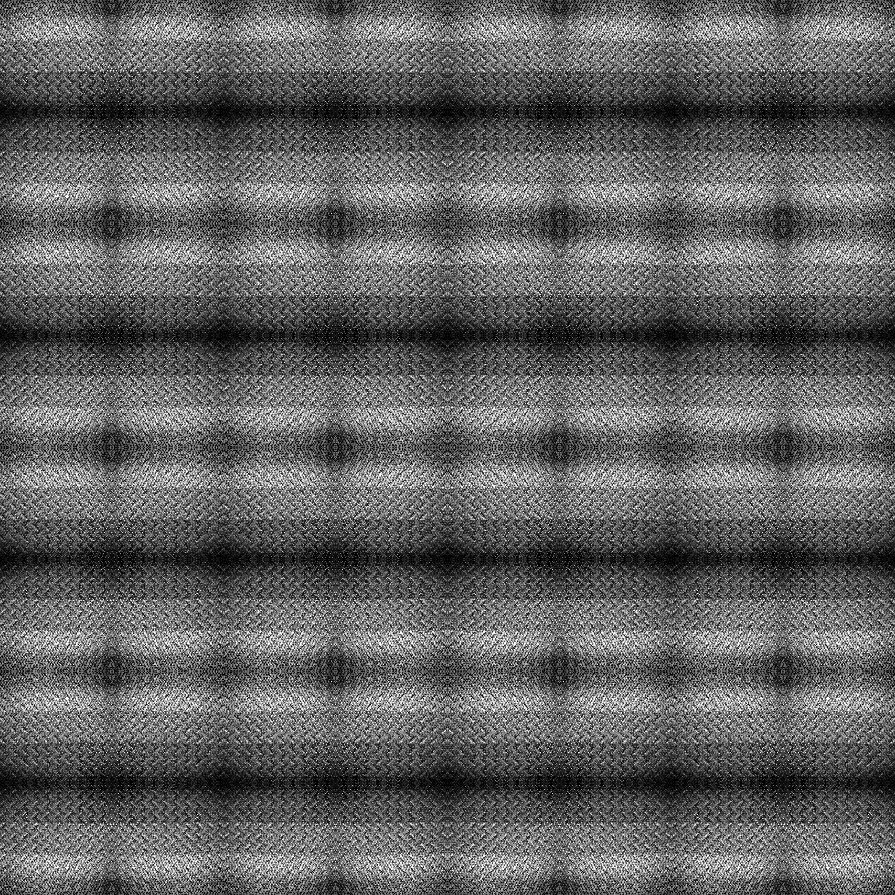
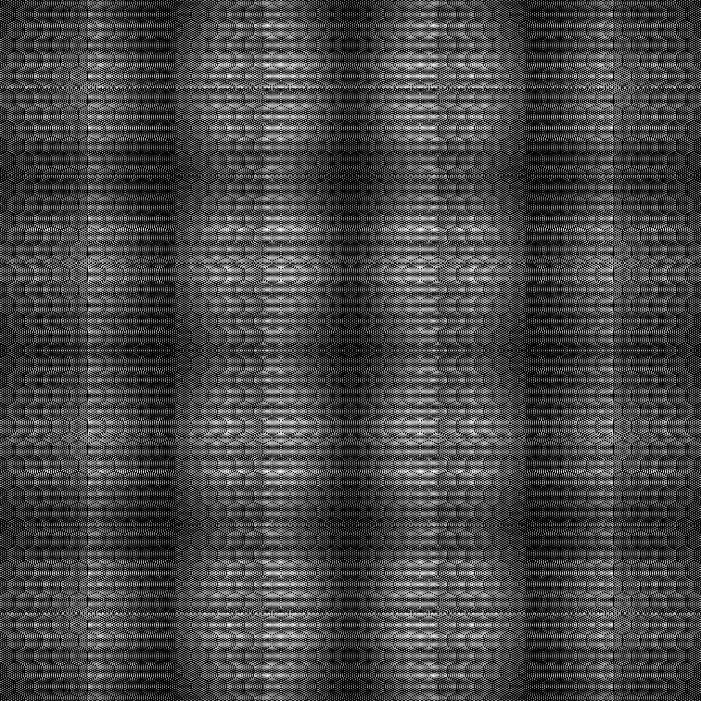
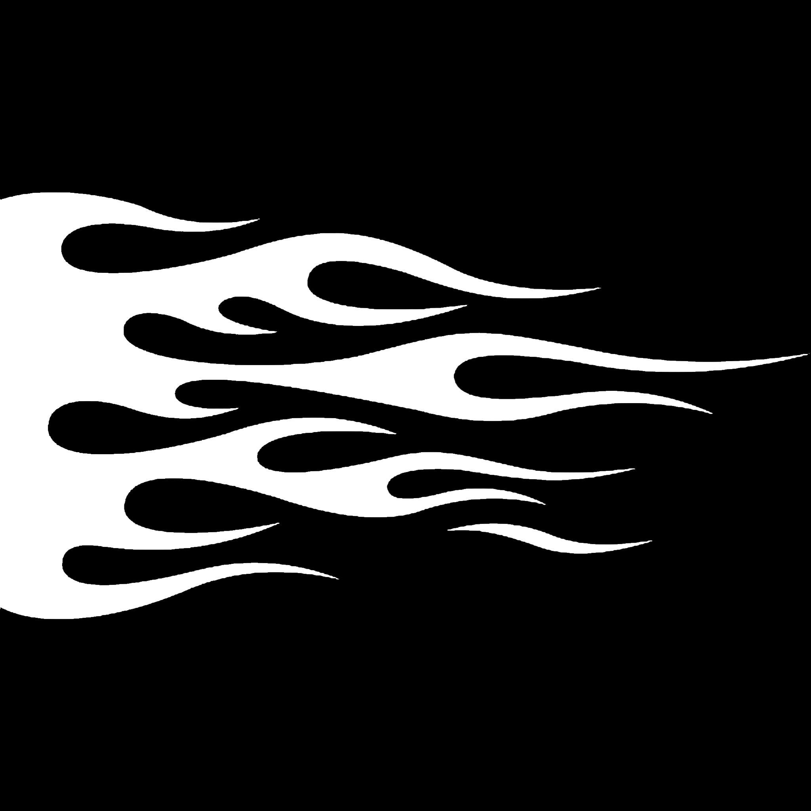
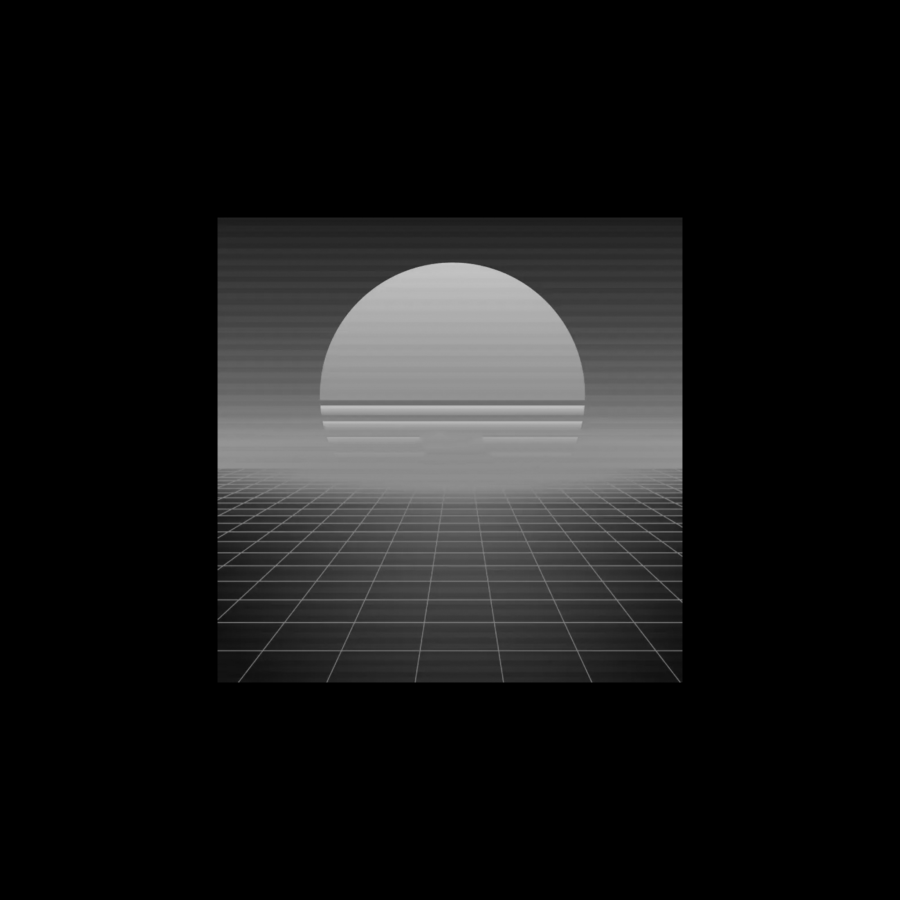
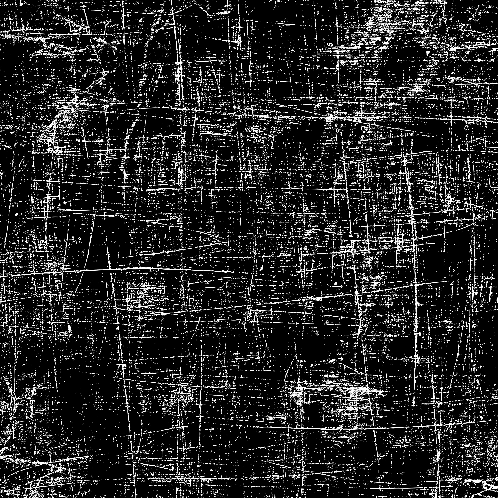
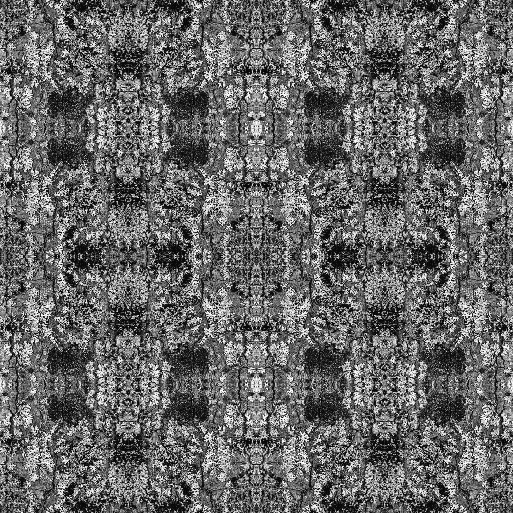
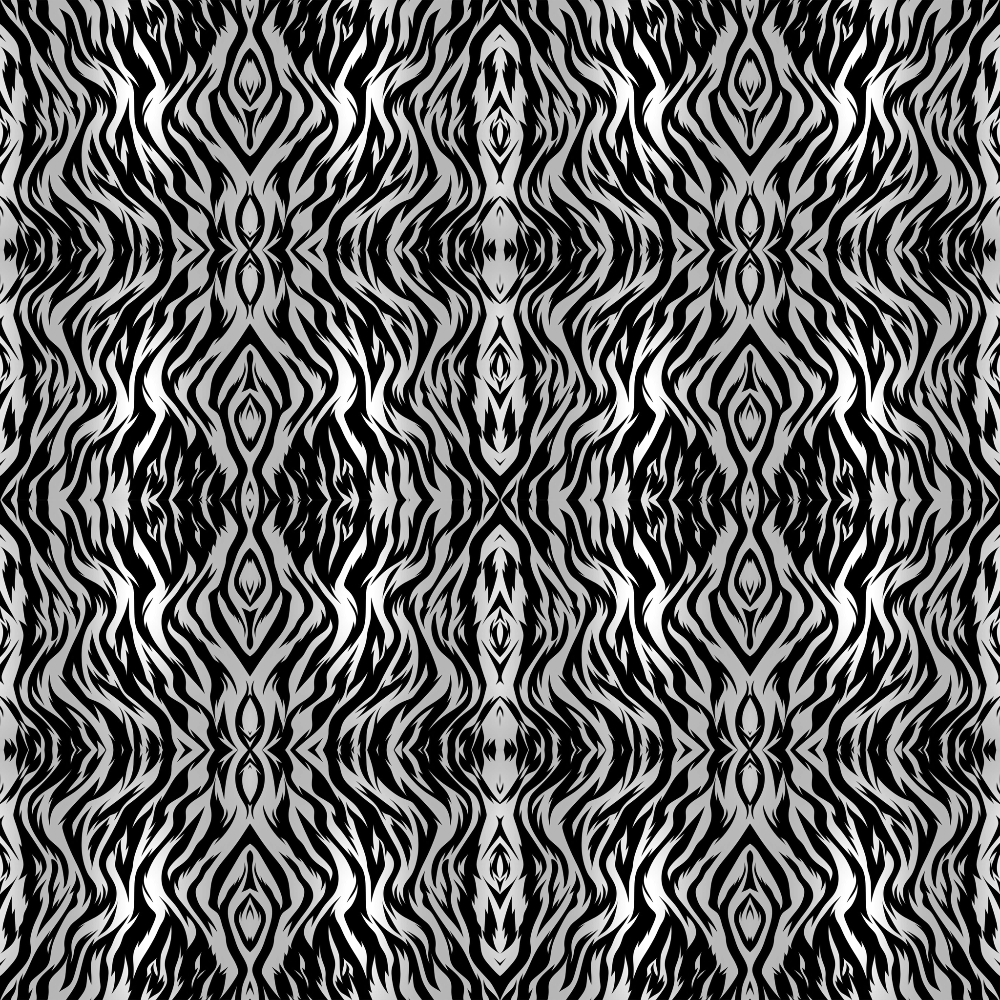
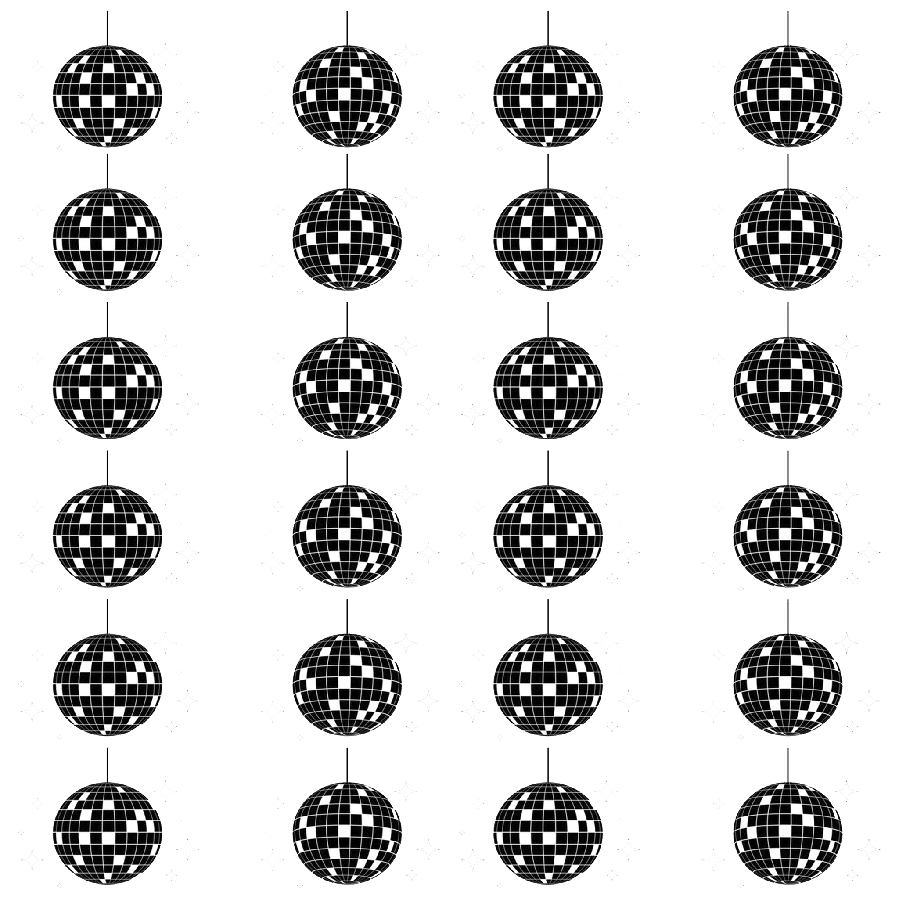
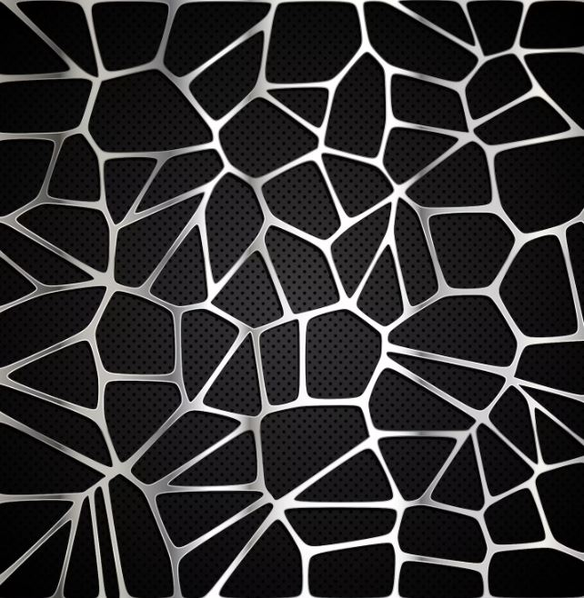

Learn Shokker Paint Booth from first click to finished iRacing paint.
This wiki explains the mental model behind SPB: source files, layers, zones, finishes, spec maps, Live Preview, and final render output. Use it as a training guide, a support desk, and a workflow checklist.
Open This Wiki Correctly
This wiki is a standalone HTML file. It does not need the SPB app server, npm, Electron, or an internet connection. If a button named Open does nothing in a chat, file viewer, or automation panel, open the HTML directly from Windows or paste the file URL into a browser.
Current local wiki file: E:\Koda\Shokker Paint Booth Gold to Platinum\SPB_WIKI.html
Fastest Ways to Open It
| Method | Use when... | Exact action | Expected result |
|---|---|---|---|
| Browser address bar | The in-app Open button does nothing. | Paste file:///E:/Koda/Shokker%20Paint%20Booth%20Gold%20to%20Platinum/SPB_WIKI.html into the browser address bar. | The wiki opens at the top of the page. |
| Windows Explorer | You are already looking at the project folder. | Open E:\Koda\Shokker Paint Booth Gold to Platinum and double-click SPB_WIKI.html. | Your default browser opens the guide. |
| Section link | You want to jump to a specific topic. | Add a hash after the file name, such as #finish-atlas, #live-link-lab, or #troubleshooting. | The browser opens the same file and scrolls to that section. |
| Shareable offline copy | You are sending the guide to another SPB user. | Send SPB_WIKI.html plus the wiki-assets folder if images are used. | The recipient can open the guide without installing SPB first. |
What The Address Means
| Piece | Meaning | Example |
|---|---|---|
file:/// | Tells the browser to open a local file from disk instead of a website. | file:///E:/... |
| Drive letter | The Windows drive where the SPB workspace or downloaded wiki lives. | E:, C:, or another local drive. |
%20 | Browser encoding for a space in a folder name. | Shokker%20Paint%20Booth means Shokker Paint Booth. |
#section-id | A same-page jump target. It is not a separate file. | SPB_WIKI.html#finish-atlas |
If Open Still Does Nothing
Use the address directly
- Click the browser address bar.
- Paste
file:///E:/Koda/Shokker%20Paint%20Booth%20Gold%20to%20Platinum/SPB_WIKI.html. - Press Enter.
- If your copy is in a different folder, open it from Windows Explorer and copy the path from the address bar.
Keep assets beside the HTML
- Make sure
wiki-assetsis in the same folder asSPB_WIKI.html. - Do not move the HTML alone if the page references local thumbnail sheets.
- Refresh the browser after restoring the folder.
Remove or change the hash
- Delete everything after
.htmlto start at the top. - Use sidebar links or quick action pills to jump cleanly.
- Use search if the section name is unknown.
Open it as a local document
- Right-click
SPB_WIKI.htmlin Windows Explorer. - Choose Open with and select Edge, Chrome, Firefox, or another browser.
- If Windows marks the downloaded file as blocked, open file Properties and use Unblock if shown.
How To Navigate Once It Opens
Use the left sidebar for major topics. Start Here is for new users, Core Tools is for painting operations, and Shipping is for render/export/support work.
Use the search box for symptoms. Search plain language like wrong pixels, spec too shiny, iRacing does not see paint, or chat wrong zones.
Use quick action pills for common paths. The top page buttons jump directly to first livery, finish thumbnails, Live Link, render validation, issue navigation, and this opening guide.
Use Back to top links after a deep section. Most sections end with a quick return link so the user can choose the next workflow without scrolling through the entire manual.
Bookmark the base file URL. Bookmark SPB_WIKI.html without a hash for the top of the guide, then use section links from inside the page.
Offline Sharing Checklist
Important distinction: opening this wiki does not launch Shokker Paint Booth. The wiki teaches the program; the desktop app does the painting, rendering, Live Link, and exporting.
What SPB Does
Shokker Paint Booth is a finishing and rendering tool for iRacing liveries. You bring in a paint file, usually a PSD or TGA, then tell SPB which parts of the car should become gloss paint, matte vinyl, chrome, candy, carbon fiber, brushed metal, chameleon paint, pearl, flake, or other material finishes.
The big idea is simple: SPB does not ask users to hand-paint complicated spec maps. Instead, users build zones, assign finishes, preview the result, then render the final iRacing-ready paint and spec files.
1. Load art
Open a PSD, TGA, or PNG. PSD is best because it preserves layers such as Body, Numbers, Stripes, and Sponsors.
2. Define zones
A zone is a rule: paint these pixels, optionally only on this layer, with this finish.
3. Render to iRacing
SPB writes the color paint and matching spec map in the file format and folder structure iRacing expects.
Best way to explain SPB to a new user: Photoshop edits pixels. SPB assigns real paint materials to parts of a livery and builds the spec map for you.
First Launch Runway
Use this before the first real paint. The goal is to prove SPB opens, the local server is healthy, a demo or manual paint loads, a render can complete, and the user understands where source files and iRacing output files live.
Install and Launch Expectations
| Step | What should happen | If it does not |
|---|---|---|
| Install SPB | Installer completes and creates a launch shortcut or installed SPB.exe. | Close any running SPB copy, make sure the install folder is writable, and reinstall if dependencies were missing. |
| Launch the app | The desktop app opens and the local SPB server starts behind it. | If port or server errors appear, use the Launch Troubleshooter below before painting. |
| Wait through cold start | Older machines may need several seconds before the renderer connects. | A short blank window on cold start can be normal. A persistent blank window is not. |
| Demo/sandbox appears | A demo paint or welcome/sandbox workspace appears with canvas, layers, zones, and preview areas. | If the canvas is blank, manually open a PSD/TGA/PNG and check app state/reset guidance below. |
The First Healthy Render Test
Use the demo or a throwaway paint. Do not start with a paid commission, league submission, or one-off client file. The first run is just a health check.
Add one obvious zone. Use Add Zone, eyedrop a clear color, and choose a simple finish such as gloss, matte, chrome, or one COLORSHOXX test finish.
Render once. Watch for render progress and wait for output. Do not click Render repeatedly if the queue is already working.
Find both outputs. Locate the color TGA and spec TGA. A render that produces both files proves the core pipeline is healthy.
Only then set up Live Link. Once local output works, point the iRacing Car Folder field at the exact car folder under Documents\iRacing\paint\ and prove Live Link with a throwaway export.
Source vs Output vs Project Saves
| Thing | What it is | Where users usually find it | What not to confuse it with |
|---|---|---|---|
| Source paint | The PSD/TGA/PNG the user opens for editing or finishing. | Anywhere: project folder, Downloads, iRacing paint folder, or a design archive. | This is not automatically the final iRacing output. |
| SPB project / SHOKK | The saved SPB setup: zones, finish choices, settings, and sometimes supporting assets. | User project folder, recipes folder, or package export. | This is not the same as car_<id>.tga. |
| Local export | The rendered color/spec files SPB writes after render. | SPB's export destination or selected output folder. | This may not be the iRacing folder unless Live Link or output path points there. |
| iRacing custom paint | The car paint files iRacing actually scans for this SPB build. | %USERPROFILE%\Documents\iRacing\paint\<car_folder>\. | iRacing will ignore files with the wrong ID, wrong car folder, or missing spec pair. |
Source Paint Field Truth Table
The Source Paint field is a render clue, not the whole truth. SPB still has some older TGA-first wording in the app, but the current workflow can load PSDs, imported images, SHOKK paint payloads, and live layered canvas data. When support is diagnosing a project, compare the field with the canvas, Layers panel, source path, and one proof render.
| What the field shows | What SPB may actually render from | How to prove it | Common bad assumption |
|---|---|---|---|
A full .tga path | The source file on disk, plus zones/finishes/spec instructions generated by SPB. | Confirm the file exists, timestamp changed after the user's edit, and a fresh render produces a new color/spec pair. | That the same TGA is also the final iRacing output. It may be the editable source, not the destination. |
| A PSD path right after import | The imported PSD's layer stack after SPB finishes parsing it. | Wait for the PSD-ready state, toggle layer eyes, verify the canvas changes, then render one proof. | That Render should be clicked before the layer stack is ready. |
A derived .tga-style path after PSD import | The live composited layer canvas sent with the render request once PSD/layer mode is active. | Use the visible canvas, Layers panel, layer eye toggles, and proof render as truth. Record the original PSD path in notes. | That the PSD failed because the field no longer ends in .psd. |
The packaged blank canvas path, usually assets\defaults\blank_canvas_2048_white.tga | A known-good white starter source loaded through the same source-preview path as a normal TGA. | Confirm Source Paint points to the packaged asset, the preview is a 2048 white canvas, then add one loud proof zone and Full Render. | That Blank Canvas is a final iRacing paint or that it contains template, wire, number, or layer data. |
A generated fallback path such as output\blank_canvas.tga | A temporary blank source created only when packaged default assets are unavailable or bypassed. | Use it for rescue/testing, then save a SHOKK and archive a real source copy before serious work. | That it is a stable project archive. Repeated generated blank-canvas calls can overwrite that same path. |
| A PNG/JPG/imported-image path | The displayed paint image or a converted/composited canvas, depending on the open path. | Check whether the image appears on the canvas and render a small test before building zones around it. | That the file extension alone proves whether the render will succeed. |
| A missing, old, cloud, or filename-only path | Nothing reliable unless a live canvas payload or SHOKK paint payload is active. | Browse to the real local file, reload the paint, and save a rescue SHOKK before rendering for delivery. | That Reset Source Backup can magically find the missing source. |
Blank Canvas Source Truth
Blank Canvas is a starter source, not a finished car template. In a healthy current install, the button should ask the server for packaged default assets and load assets\defaults\blank_canvas_2048_white.tga. That is the preferred path because it is stable, repeatable, and covered by the default-asset regression tests.
| What support should check | Healthy answer | If it differs |
|---|---|---|
/api/default-assets | Returns ok=true and a real blank_canvas_tga path under assets\defaults\. | If missing, Blank Canvas can fall back to generating output\blank_canvas.tga. Treat that as a fallback source, not the user's durable project file. |
| Source Paint after clicking Blank Canvas | Shows the packaged blank_canvas_2048_white.tga path. | If it shows output\blank_canvas.tga, write that down in the QA receipt because another fallback generation can overwrite it. |
| First proof render | A loud test zone renders onto the blank white source and produces a color/spec pair. | If the render blocks on Source Paint while the blank canvas is visible, treat it like a source-preflight issue, not a finish-choice issue. |
| What the user saves | A SHOKK/project milestone after the proof zone succeeds, plus any real source art they later import. | Do not tell users the blank canvas contains iRacing template detail, wire guides, suit/helmet targets, or car-specific layout data. |
Do not over-trust fallback blanks: /api/blank-canvas currently writes a shared file named output\blank_canvas.tga. That is acceptable for a rescue smoke test, but it is not a safe long-term source identity for customer work unless it is saved/copied into a real project package.
QA note: if Source Paint says only "TGA" while the user is doing a PSD or layered workflow, treat that as old UI wording. Do not rewrite the user's workflow around the tooltip. Verify what SPB is actually rendering from.
Which Source Door Should I Use?
SPB has several ways to load paint, and they do not all accept the same file types. When a user says "SPB will not let me pick my file," ask which door they used before diagnosing the file itself.
| Door | What it currently accepts | Best use | Watch out for |
|---|---|---|---|
| Header folder button beside Source Paint | Server file picker filtered to .tga. | Normal flat iRacing paint source when the user has a real local TGA path. | It will not browse to PSD/PNG/JPG/BMP even though other app paths can load some of those. |
| Header PSD button / onboarding Import PSD | PSD import path. | Recommended when the user has a layered Photoshop template and wants editable layers, layer visibility, and layer restrictions. | After import, the Source Paint field may show a derived TGA-looking value; judge health by canvas, Layers panel, PSD-ready status, and proof render. |
| Drag/drop onto the canvas area | .tga, .png, .jpg, .jpeg, and .bmp for flat image preview/loading. | Quickly opening a flat source image for sampling, zones, or diagnosis. | For PNG/JPG/BMP, the app may guess a TGA-style source filename/path for engine/script use. Confirm the real render source before delivery. |
| Loaded-paint Change File input | .png, .tga, .jpg, .jpeg, and .bmp. | Swapping a flat loaded source after the canvas is already active. | This input is not the same as the header server browser, and it does not provide a full Windows path by itself. |
| SHOKK Spec Map + New Paint | Commonly TGA/PNG/JPG paint files routed through SHOKK/package helpers. | Pairing an edited flat paint with saved SHOKK spec/material behavior. | BMP support is not consistent through server fallback paths; use TGA/PNG/JPG for portable package repair. |
Support shortcut: if the user is holding a PNG/JPG/BMP and the header browse button cannot see it, that does not automatically mean the image is unsupported. Try drag/drop or Change File for a flat-source test, then use Full Render proof before treating it as a valid delivery source.
Render Source Preflight
Loading an image and rendering an image are related, but they are not always the same source path. Before a serious Full Render, prove which source mode SPB is using. This is especially important after PSD import, Change File, drag/drop, SHOKK open modes, or any browser-style file picker that can show pixels without giving SPB a durable Windows path.
| Preflight question | Healthy answer | If the answer is unclear |
|---|---|---|
| Does Source Paint contain a full path? | Flat TGA workflows should show a full local path with folders, not just a filename. | Browse to the real TGA, or use a supported import path that uploads/sets a renderable source. |
| Does the canvas match the Source Paint path? | The visible body art, number panels, sponsor marks, and template should match the file named in the header or the known PSD/SHOKK payload. | If Change File or drag/drop changed the canvas but the header still names an older file, treat it as a source split until proven by Full Render. |
| Is PSD/layer mode active? | Layers panel is populated, PSD-ready state has appeared, eye toggles affect the canvas, and Full Render can send the live composite. | Do not judge PSD health from the derived TGA-looking Source Paint field alone. Re-import PSD if structure changed. |
| Is there an imported SHOKK/spec state? | The SHOKK/spec chip or Import Spec Map status says spec is active, and a paint source is also loaded when needed. | Spec-only state is not enough to render a paint. Load/verify paint before rendering. |
| Will the current source survive restart or sharing? | For handoff, SHOKK includes paint or the source PSD/TGA/assets folder is archived beside it. | Save a SHOKK with Include paint for portability, and archive original PSD/logos separately for real editing. |
1. Name the source mode. Disk TGA, PSD live canvas, flat imported image, SHOKK paint payload, SHOKK spec-only, or unknown/recent path.
2. Make one loud proof change. Add a tiny temporary color mark or one obvious test zone in a safe area, then Full Render once.
3. Inspect the output, not just preview. Open the newest diffuse/spec pair or render history card and confirm the loud mark came from the expected source.
4. Remove the proof mark and save a milestone. Once source truth is proven, clean up the mark and Save SHOKK before serious material work.
QA receipt: record Source Paint text, source mode, canvas screenshot, whether PSD layers or SHOKK spec were active, the render job/time, and the exact output filenames. That receipt separates a source-loading bug from a zone, finish, output-folder, or iRacing pickup bug.
Live Canvas Render Smoke Test
Known QA tracker: SPB-66 covers a client/server mismatch in the render preflight. The server can render from a live canvas payload without a disk paint_file, but the browser-side Full Render path can still stop early if the visible Source Paint field is blank or path-only stale.
| Evidence | What it proves | What it does not prove | Support action |
|---|---|---|---|
| Canvas shows the intended paint but Source Paint is blank. | The user has visible pixels to work from. | That Full Render has a canonical source yet. | Ask which source mode created the canvas: PSD import, Change File, SHOKK payload, drag/drop, decal/layer composite, or blank canvas. |
Server accepts paint_image_base64 without paint_file. | The backend can render a live-canvas source when the browser sends one. | That the UI will always build and send that payload before validating Source Paint. | Do not tell the user to hunt for a fake derived TGA if PSD/live canvas is the real source. Capture source-mode proof. |
| Full Render says "Set the Source Paint path..." while artwork is visible. | The client may have blocked before live canvas payload construction. | That the visible artwork is invalid or that the render server cannot handle it. | Use a supported source repair: re-import PSD, choose the real TGA, use Spec Map + New TGA, upload/canonicalize the flat image, or save a SHOKK with paint included. |
| Source Paint names an old file after Change File. | The canvas and canonical render path may be split. | That zones, finishes, or Live Link are broken. | Freeze design changes and prove which source Full Render reads before changing materials. |
1. Name the effective source. Do not stop at the text field. Identify whether the intended render base is disk TGA, PSD/live canvas, uploaded flat image, SHOKK paint payload, or missing.
2. Check for an early client block. If Full Render stops before progress begins and says Source Paint is missing, treat it as a preflight/source-mode problem, not a material problem.
3. Repair the source path or payload. Use the workflow that creates a canonical render source rather than repeatedly clicking Render.
4. Render one loud proof. After repair, make one obvious temporary source/zone change, run Full Render, and inspect the actual output files or render history card.
Canvas Changed, Render Did Not
If the visible canvas changes after Change File but Full Render still uses the old source, treat it as a source-path split. Some flat-image loaders update the canvas pixels for preview/work, while the render path still begins with the Source Paint field unless SPB is sending a live PSD/layer/decal canvas payload.
| User action | What can change | What may not change | Safe recovery |
|---|---|---|---|
| Click Change File after a paint is already loaded. | The canvas, dimensions label, and paint preview can update to the selected TGA/PNG/JPG/BMP. | The header Source Paint path may still point to the previous file, and normal Full Render validation still reads that path first. | Check the Source Paint field immediately. If it is old, reopen through the header TGA browser, drag/drop with a full-path repair, or use the intended SHOKK/new-paint workflow before delivery render. |
| Drag/drop a flat PNG/JPG/BMP. | The canvas can show the dropped image and zones can be sampled from it. | The app may guess or preserve a TGA-style path for render/script use. | Use the source-door map above, then run one proof render and inspect the actual output files before trusting it. |
| PSD or layer workflow is active. | Full Render can send the live composited canvas as an image payload. | The Source Paint field can still look derived or stale. | Use PSD-ready, layer visibility, live canvas, and render proof as truth; do not diagnose it like a flat Change File swap. |
Do not debug this by changing finishes first: if canvas and render disagree, prove the source path/live-canvas mode before touching zones. A perfect finish on the wrong source file is still the wrong render.
Project Panic Recovery Desk
Use this desk when a user says "my project is gone," "it opened the wrong paint," "my zones came back but the image did not," or "I saved it but iRacing cannot see it." Do not reset the app first. Separate the five layers of truth: the visible source paint, local app memory, SHOKK/session state, rendered output, and the iRacing destination.
Panic rule: freeze the session before cleanup. Do not clear local storage, reinstall, delete output folders, or overwrite the iRacing folder until you know which layer is stale. A wrong-looking project can still contain recoverable zones, spec, or source-path clues.
| User sees | Likely layer of truth | First safe check | Do not do yet |
|---|---|---|---|
| SPB opens yesterday's paint. | Recent/last-loaded paint path or auto-restore convenience state. | Read the Source Paint field, compare it to the intended PSD/TGA path, then manually open the correct source. | Do not delete the old file; it may be the last good source path clue. |
| Canvas is blank but zones are present. | SHOKK/session restored zones/spec, but paint payload did not load or was not baked into the package. | Look for the toast/status that says paint path set/load manually, then load the matching paint image from the original source path. | Do not assume the SHOKK is useless; zones/spec may still be intact. |
| Spec appears active but artwork is missing. | Spec-only or Spec Map + New TGA open mode. | Check whether SPB is showing a spec-from-SHOKK state and asking for a paint TGA to pair with it. | Do not render for delivery until the intended paint image is loaded and the Source Paint field is correct. |
| Paint is visible but old zones replaced current zones. | A template, recipe, zone template, or SHOKK import restored a different zone list. | Stop, undo if available, then reopen the last named SHOKK/milestone or render-history zone snapshot on purpose. | Do not apply another starter on top of the wrong zones. |
| Render output exists but current project looks older. | The final TGA pair is not the editable project state. | Archive the fresh output pair, then find the SHOKK/source file that created it using render history, notes, or folder timestamps. | Do not edit the final TGA as if it contains zones, layers, or finish recipes. |
| iRacing shows the right paint but SPB opened a different source. | iRacing folder contains final output, while SPB recent state points elsewhere. | Copy the iRacing TGA/spec pair to an archive, then locate the editable PSD/SHOKK separately. | Do not overwrite the working iRacing files with a test render until the editable project is found. |
| Saved SHOKK opens on this PC but not a teammate's PC. | The package may rely on local source paths, missing paint payload, newer SPB version, or external assets. | Inspect whether Include paint was enabled, whether spec payload exists, and what open mode the recipient chose. | Do not send only a recipe/config when the recipient needs full source, paint, spec, or imported logos. |
Freeze, Identify, Recover Ladder
1. Freeze the evidence. Screenshot the canvas, Source Paint field, output folder field, selected SHOKK/library card, active zones, and any toast. Leave the app open.
2. Name what is missing. Decide whether the missing thing is visible pixels, zones, spec/material behavior, render output, Live Link copy, recent path, or a recipient install file.
3. Check source path. If the canvas is wrong, read the Source Paint field before opening anything else. A recent path can point to Downloads, an old iRacing folder, a cloud placeholder, or a renamed PSD.
4. Check saved project state. If zones/spec are wrong, inspect the last SHOKK, render history entry, recipe/template action, and whether the open mode replaced zones or kept current paint.
5. Check output state. If the user only needs the finished paint, open local render output and the iRacing destination. Fresh TGAs can be saved even when the editable session is stale.
6. Save a new rescue milestone. When anything useful is visible again, save a clearly named SHOKK such as Rescue_SourceLoaded_ZonesRestored_2026-05-03 before experimenting.
7. Reset only the stale layer. Reset recent path, source backup, imported spec, output folder, or local storage only after the useful state is saved/exported.
SHOKK Open Mode Recovery Map
The SHOKK open dialog is not four names for the same action. Each option intentionally changes different parts of the current session. If a project looks half-open, the user may have chosen the correct mode for a different job.
| Open mode | What changes | Why it can look confusing | Recovery proof |
|---|---|---|---|
| Spec Map Only | Loads the SHOKK's baked spec as the active imported spec/background while keeping current paint and current zones. | The material/spec state changes but artwork and zones may still be from the previous project. | Spec status says the SHOKK spec is active, while Source Paint and zone list remain from the current session. |
| Spec Map + New TGA | Loads the SHOKK spec, then asks the user to pick a paint TGA/PNG/JPG to pair with it. | Until the paint is selected, the canvas may show a spec-loaded state rather than a normal livery. | After choosing the paint, Source Paint should point at the selected file and render should use that file. |
| Spec + Zones (Keep Paint) | Restores the SHOKK spec and saved zones but keeps the current paint image loaded. | Great for borrowing material logic, but wrong if the current paint does not match the saved zone selectors/layers. | Zone list changes, current paint remains, and a small proof render shows whether selectors match the kept paint. |
| Full Import | Attempts to restore spec, zones, and paint from the package or fallback source path. | If paint was not baked into the SHOKK and the old source path is missing, zones/spec can restore while paint must be loaded manually. | Toast/status names spec locked, paint loaded or paint path set, and zones restored. If paint did not load, manually load the intended source before rendering. |
What To Save For Each Situation
| Goal | Save this | Why | Missing if you only save... |
|---|---|---|---|
| Keep editing tomorrow on the same machine. | Named SHOKK plus original PSD/TGA in a project folder. | SHOKK carries setup; source file carries actual pixels/layers. | Only relying on auto-save may reopen the wrong recent path after files move. |
| Send editable work to a teammate. | SHOKK with Include paint enabled, plus external logos/fonts/PSD if licensing allows. | Recipient needs more than zones if source art or paint pixels are not already on their machine. | A recipe/config may lack paint, imported art, baked spec, or custom assets. |
| Install in iRacing. | Fresh diffuse/spec TGA pair for the correct ID and naming mode. | iRacing scans rendered files, not SHOKK packages. | A SHOKK alone will not appear in iRacing. |
| Archive an approved final. | Folder with PSD/source, SHOKK, final TGA/spec pair, proof screenshot, and note. | Future you can both race the paint and reopen the editable build. | Only final TGAs cannot recover zone recipes or layered source art. |
| Recover after a scary import. | New rescue SHOKK before further changes, then reopen the intended milestone. | Preserves whatever useful state survived the import. | Undo may not survive restart and local memory may keep the confusing state. |
Smallest Safe Reset Map
Use the smallest reset that matches the stale layer. Broad resets are last-resort because they can erase the clues users need for recovery.
| Stale thing | Small reset | Before resetting | After resetting |
|---|---|---|---|
| Wrong source paint keeps auto-opening. | Manually open the correct source and save a named milestone. | Record the old Source Paint path in case it points to the last good file. | Confirm the canvas, layers, and Source Paint field all match. |
| Imported spec is still affecting renders. | Use the clear imported spec control, then render one proof. | Save a SHOKK if the imported spec was intentionally valuable. | Spec preview should show only current zones/finishes, not old imported behavior. |
| Output folder points to the wrong place. | Set the intended local output/iRacing folder without changing source or zones. | Copy any approved output pair out of the old folder if needed. | Run one tiny proof render and verify fresh timestamps in the new folder. |
| Recent/local app memory is corrupt. | Export important SHOKK/projects/templates first, then use local storage cleanup only if needed. | Back up reusable templates, favorites, recipes, and any current rescue milestone. | Restart, open the known-good source manually, then save a clean milestone. |
| Render is stuck on old source art. | Use source-backup reset/reload source behavior when available. | Confirm current source path is correct and save a milestone. | Full Render should produce a fresh pair that matches the newly loaded source. |
Launch Troubleshooter
Renderer Cannot Reach Server
- Wait a few seconds on first launch, especially on older machines.
- Restart SPB if the window stays blank.
- Check firewall/localhost access if the issue repeats.
- Look in logs for server connection errors such as local connection refused.
Port Conflict
- Another local app may already be using the SPB server port.
- Close other local web/Python apps if you know what they are.
- Advanced users can identify the process from Windows networking tools.
- Relaunch SPB after the port is free or configured differently.
Default Project Did Not Load
- Open a PSD/TGA/PNG manually from File/Open or the source paint field.
- If the same bad path keeps returning, check recent files or auto-restore behavior.
- Use Settings > Advanced > Reset Local Storage if app state appears corrupted.
- Restart and load a known-good paint before editing customer work.
Bundled Server Problem
- Check logs for the last traceback.
- Look for missing dependency or registry import messages.
- Reinstall SPB if the bundled runtime appears damaged.
- Include logs when reporting the issue.
Workspace Habits That Prevent Confusion
New User Red Flags
| User says... | Likely misunderstanding | Send them to... |
|---|---|---|
| "I opened a SHOKK file but iRacing does not see it." | A project/preset is not the rendered TGA output. | Rendering, Live Link Lab, and iRacing Validation. |
| "The app rendered but I cannot find the paint." | Local export folder and iRacing custom paint folder are different places. | Source vs Output table and Live Link Lab. |
| "It worked yesterday but opened the wrong file." | Recent file or auto-restore path points to an old/moved source. | First Launch Runway launch troubleshooter and Files and Setup. |
| "The first demo is blank, so SPB is broken." | The default sandbox did not load, but manual open may still work. | Launch Troubleshooter, then Performance & Diagnostics if manual open fails too. |
| "I installed it, but there is no shortcut." | Shortcut creation was skipped or blocked. | Find SPB.exe in the install folder and create/pin a shortcut. |
Good first-run rule: prove local render first, prove Live Link second, prove iRacing pickup third. That order keeps setup problems from looking like paint-design problems.
Your First Livery
This path teaches the core loop. It assumes the app has launched and a demo paint or user paint is visible in the canvas.
Enter your iRacing ID. Use the iRacing member number field in the header. This number controls the final file name, such as car_23371.tga.
Load a paint file. Use the source paint field, the folder browse button, or PSD import. Use PSD when possible because layers make clean zone work much easier.
Select a useful layer. In the Layers panel, click a layer such as Numbers, Stripe, Sponsor, Hood, or Body.
Add a zone. Click Add Zone. The zone card becomes the place where color matching, layer restriction, finish, and intensity are controlled.
Lock the zone to the selected layer. Use Lock Active Zone to This Layer when you want the finish to affect only that PSD layer's pixels.
Pick the color. Use the Eyedropper on the canvas or use the zone color controls. Add one color for a simple area or multiple colors for a multi-color logo.
Choose a finish. Open the Finishes panel and pick a base, pattern, monolithic finish, or spec treatment. Watch Live Preview update.
Render. Click RENDER. SPB generates the color paint and spec map for iRacing.
Most common first-user mistake: selecting a layer in the Layers panel is not the same thing as restricting a zone to that layer. Use the lock button or zone source controls when the finish should only apply to one layer.
Guided First Car: From Blank Screen to iRacing Proof
This is the practical first-car assignment for a new SPB user. It uses the same order the app's onboarding teaches: load a paint, choose layers, add zones, assign finishes, preview paint/spec, render, then prove the files. The goal is not an award-winning livery. The goal is for the user to understand the whole loop without getting lost.
Project target: make one body finish, one number finish, one sponsor/logo finish, one carbon or stripe accent, then render a diffuse/spec pair that can be found in the output folder.
Before You Start
| Thing to know | Where it is in SPB | Why it matters |
|---|---|---|
| Your iRacing member ID | Header field named iRacing User ID. | It controls filenames like car_23371.tga. Wrong ID means iRacing ignores a correct render. |
| The target car folder | Header field named iRacing Car Folder / output folder. | SPB needs to write to the folder for the car you are testing, not a random paint folder. |
| A source paint | Import PSD button or Load TGA button. | PSD gives layers. TGA is flat and simpler, but zones must rely on color matching. |
| One safe finish family | Finishes tab. | Use gloss, satin, matte, chrome, candy, carbon, or COLORSHOXX. Avoid testing every finish at once. |
| A proof mindset | Live Preview, Render Results, output folder, iRacing reload. | The paint is not proven until fresh files exist and iRacing reloads them. |
Minute 0-5: Load and Orient
Start with the demo or a known-good PSD. If the welcome screen is visible, click Import PSD for editable layers or Load TGA for a flat paint. PSD is better for learning zones because numbers, sponsors, and body can be separated.
Enter your iRacing ID. Use the header iRacing User ID field. Do not skip it; a render with the wrong ID is still a valid file, just not your file.
Set the output folder. Use the iRacing Car Folder field or browse button. For first proof, local output is enough; Live Link can come after the local render is proven.
Look at the panels. Left side is zones. Center is canvas. Right side has Layers and Finishes. Preview/spec views sit beside or below the canvas depending on layout.
Minute 5-12: Make the Body Zone
Create a zone named Body Base. Add Zone, rename it clearly, and choose the broad body area. For a PSD, use the Body or Car_Paint layer if it exists. For a flat TGA, sample the body color.
Use a simple selector. If learning on a PSD, select the body layer and use Lock Active Zone to This Layer. If learning on TGA, use Eyedropper and keep tolerance moderate.
Pick one clean finish. Use gloss, satin, pearl, candy, or matte. Do not start with five stacked effects. Watch Live Preview update or refresh with F5 if stale.
Pass check. The body changes, but numbers and sponsor art should not be swallowed. If they are, the zone is too broad or too high in priority.
Minute 12-20: Add Detail Zones
| Zone | How to target it | Good first finish | Pass check |
|---|---|---|---|
| Numbers | Select Numbers layer, lock active zone to it, then sample the number fill color. | Chrome, satin, COLORSHOXX, or clean gloss. | Only number pixels change; same-colored stripes or logos stay untouched. |
| Sponsors / Logos | Select Sponsors layer or sample logo color with tight tolerance. | Gloss or satin so the brand stays readable. | Logo is readable at zoomed-out distance and not buried by body pattern. |
| Stripe / Accent | Select stripe layer or sample stripe color; keep it above broad body zones. | Candy, pearl, carbon, or a controlled pattern. | Accent supports the design without taking over numbers/sponsors. |
| Carbon / Trim | Select splitter, hood insert, rocker, wing, or trim pixels. | Carbon base plus carbon spec pattern. | Spec preview shows material texture, not just a printed checker pattern. |
Minute 20-25: Preview Like a Painter
Check paint preview. Confirm colors, numbers, sponsors, and accents are visually balanced. If a detail disappears, fix contrast before adding more effects.
Check spec preview or Channels. Chrome should show metal behavior, matte should look rough, carbon should have spec texture, and gloss should have clearcoat. Remember B clearcoat is inverted.
Use zoom discipline. Zoom in to fix edges, then zoom out to judge the car. A paint that only works at 400% is not ready for iRacing.
Save a milestone. Use Save SHOKK before rendering if the project has real work in it. Include paint if you may share it or open it elsewhere.
Minute 25-30: Render and Prove
Click RENDER once. Watch preparing/progress text. Do not double-click. If SPB says another render is running, wait.
Inspect the Render Results panel. Look at paint preview and spec preview. If either looks wrong, use the result as evidence before changing settings.
Find the files. Open the output folder and confirm diffuse and spec files have fresh timestamps. For cars, expect car_<id>.tga and car_spec_<id>.tga.
Only then test iRacing. Load the matching car, reload the paint/garage view, or restart the session if iRacing keeps showing cached art.
Save to keep if it worked. If this is a good proof, use Save to keep or save a SHOKK milestone so the next experiment does not overwrite your only working result.
First-Car Failure Fixer
Preview Is Blank
- Confirm a paint is loaded.
- Confirm at least one zone has target pixels and a finish.
- Press F5 to refresh preview.
- If still blank, use Render Control Room to check server/render status.
Everything Changed
- Your zone is probably too broad or using Everything.
- Move detail zones above body zones.
- Use layer restriction for numbers, sponsors, and stripes.
- Use Remaining only as the bottom safety net.
iRacing Shows Nothing
- Do not change the design yet.
- Check output folder timestamps.
- Confirm customer ID and car folder match the loaded iRacing car.
- Reload garage/paint view or restart the session.
Shine Looks Wrong
- Open spec preview or Spec Inspector.
- Confirm the spec file exists next to the diffuse file.
- Re-pick a known-good finish if the channel behavior is flat.
- Validate under iRacing lighting before overcorrecting.
First-Car Pass Checklist
What not to do on your first car: do not start by importing five recipes, stacking every premium finish, enabling Live Link before local output works, or editing JSON. Learn the basic loop first, then get fancy.
The SPB Training Track
For a user who wants to truly learn the program, this is the order that makes the app click. The first lesson gives the whole loop, then each lesson isolates one skill so the user knows what to practice next.
First Launch
Prove SPB opens, the demo/manual paint loads, local render works, and output files can be found.
First Livery
Open the demo paint, create one zone, pick one finish, render once. The goal is confidence, not perfection.
Layer Basics
Learn how active layers, visibility, opacity, and layer selection affect drawing and source pixels.
Zones Explained
Practice color match, layer restriction, zone priority, Remaining, and Everything. This is the unlock.
Finishes
Compare bases, patterns, monolithics, and spec patterns on the same zone so the difference is visible.
Pattern Combos
Pair bases, visual patterns, and spec behavior without turning the car into visual noise.
Spec Maps
Learn why chrome, matte, carbon, candy, and gloss behave differently under iRacing lighting.
Sponsors
Place a logo, mirror it, add stroke or shadow, then restrict a finish to the sponsor layer.
Type and Decals
Make numbers, sponsor text, driver names, and contingency stacks readable at replay distance.
Canvas Editing
Use select, pick, move, transform, masks, brush tools, shapes, and references without confusing pixel edits with zone rules.
Layer Effects
Use stroke, glow, shadow, overlay, and bevel to make numbers and logos readable.
Recipes
Load a preset recipe, inspect its zones, change colors, then save a new SHOKK preset.
Team and League Ops
Package paints, create driver variants, satisfy league rules, and share files with enough context to be useful.
Performance Diagnostics
Read render phases, isolate heavy zones, refresh caches, and gather useful bug-report evidence.
Advanced Tools
Use masks, transforms, clone, recolor, dodge, burn, and reference images only after the zone model is solid.
Render and Export
Verify ID, path, Live Link, paint preview, spec preview, final TGA output, and iRacing reload.
Support advice: when a user says "SPB is not working," ask which training step they are on. Most issues become obvious when mapped to file setup, layer selection, zone ownership, finish assignment, preview refresh, or render output.
Practice Exercises and Pass Checks
| Exercise | What to do | You passed when... |
|---|---|---|
| First Launch Drill | Open SPB, load the demo or any known-good paint, render one simple zone, and find both local output files. | You can explain the difference between source paint, SPB project, local export, and iRacing custom paint folder. |
| Guided First Car Drill | Follow the Guided First Car path: body zone, number zone, sponsor zone, accent zone, preview/spec check, render, file proof, iRacing reload. | You can make a simple working paint without asking which panel, file, or button comes next. |
| Layer Solo Drill | Open Layers, solo the Numbers layer, then restore all layers. | The canvas shows only numbers during solo, then returns to the full paint without deleting anything. |
| PSD Import Drill | Import a PSD, wait for the layer rasterization toast, solo two key layers, then re-import after renaming or moving a layer. | You can tell the difference between a normal loading delay, a missing source path, and a real layer-structure problem. |
| Zone Lock Drill | Add a zone, sample a color on the Numbers layer, then lock the active zone to that layer. | The zone card shows a source-layer badge and same-colored pixels on other layers stay untouched. |
| Zone Ownership Clinic Drill | Create three zones from the same yellow color on Numbers, Sponsors, and Stripes. Restrict each zone to its layer, then set a Remaining body zone beneath them. | Each yellow area can receive a different finish, the broad body zone catches only unclaimed pixels, and changing tolerance does not steal unrelated layers. |
| Priority Drill | Create a specific number zone and a broad Remaining body zone, then drag the number zone above body. | The number finish wins where the two zones overlap. |
| Finish Stack Drill | Apply a base, then a pattern, then a spec pattern to the same zone. | You can explain which choice controls color, which controls visible texture, and which controls light response. |
| Finish Browser Drill | Open the finish browser for one test zone, search for gloss, carbon, chrome, candy, and chameleon, favorite two practical picks, sort by recent, compare two candidates, then render one proof. | You can explain when a thumbnail is only a direction, which finishes deserve favorites, and why compare/apply should happen before spreading the material across the car. |
| Finish Mixer Drill | Open Mixer on a disposable test zone, blend two finishes at 70/30, add a third slot, preview, switch Color + Spec / Color Only / Spec Only, apply to the zone, then save the best mix with a useful name. | You can explain how weights, mix mode, preview, custom saves, and final render/spec validation work without turning every zone into a muddy hybrid. |
| Spec Inspector Drill | Render or preview a chrome, matte, and carbon zone, then inspect ALL, R, G, B, and A channels in the Spec Map Inspector. | You can identify whether the problem is metallic, roughness, clearcoat, missing spec output, or iRacing lighting. |
| Thumbnail Proof Drill | Use the Finish Atlas contact sheet to pick three candidates, apply them to a small disposable zone, compare paint preview, spec preview, final render, and iRacing lighting before applying the winner to the full car. | You can explain why thumbnails are candidate selectors, not final proof, and avoid turning the whole car into a noisy material test. |
| Combo Restraint Drill | Apply a loud pattern to one hero zone, then reduce intensity or coverage until sponsors and numbers still read. | The pattern supports the design instead of becoming the only thing anyone sees. |
| Canvas Editing Drill | Place a sponsor layer, pick it from the canvas, free-transform it, mask one edge, add a stroke, then zone-lock the sponsor if it needs its own finish. | The logo is not distorted, the mask hides instead of deletes, and the finish only affects the sponsor pixels you intended. |
| Decal and Stamp Drill | Import a transparent logo as a decal, position it with Transform Decal, flip the decal itself, assign a spec finish if needed, then render and inspect paint plus spec output. | You can explain whether the mark is placed artwork, a PSD sponsor layer, a zone-controlled material, or an alpha-based spec stamp. |
| Command Center Drill | Switch tools, select a zone, select a layer, make a selection, zoom, and watch the status bar update before editing pixels. | You can say what the next click will affect: a zone, a PSD layer, a selection, the composite, or the preview. |
| Chat Command Drill | Use / to focus the chat bar, create two comma-separated zone commands, use one exact @finish_id, one hex color, one intensity word, and one scale value, then inspect the resulting zones before rendering. |
You can use natural language for fast setup while still knowing when to switch back to panels for ownership, layer restrictions, masks, and proof checks. |
| Pixel Surgery Drill | Select a PSD layer, make a small selection, use Color Brush on actual pixels, undo, then use Brush/Erase on a zone mask so the difference is obvious. | You can explain whether the tool changed source pixels, a zone mask, a layer mask, or only the current selection. |
| Palette Control Drill | Load a palette preset, save two swatches, eyedrop a sponsor color, add it to a multi-color zone, tighten one tolerance, then render a brand-safe proof. | You can keep team colors consistent while still separating zone selection, pixel repainting, and destructive color adjustments. |
| Render Drill | Render once, find the color TGA and spec TGA, then reload the car in iRacing. | Both output files have fresh timestamps and iRacing shows the updated paint after reload. |
| Render Control Drill | Start a proof render, watch preparing/progress text, wait instead of double-clicking, then inspect render results and history. | You know when to wait, when to terminate, when to simplify, and what evidence to collect if the render fails. |
| Render History Drill | Create three proof renders with different finishes, favorite the best one, add notes/tags, compare two entries, run a diff, then restore the earlier zone config on purpose. | You can preserve an approved look, prove what changed between renders, and recover zone settings without guessing. |
| Output Proof Drill | Render at diagnostic resolution, inspect local output, confirm diffuse/spec timestamps, then follow the file to the iRacing folder. | You can say exactly whether a failure is render generation, Live Link copy, wrong ID/folder, missing spec, or iRacing rescan. |
| Photoshop Round-Trip Drill | Export paint/spec/channel files for Photoshop, edit one channel deliberately, import the spec back in merge mode, then render with one SPB zone painted on top. | You can identify what came from Photoshop, what SPB zones override, and which files must be delivered to iRacing. |
| Settings and State Drill | Toggle Export ZIP, inspect Import Spec Map status, check server status, change the remembered PS export folder, then explain which settings persist after restart. | You can separate project data, remembered app preferences, render options, and recovery resets without wiping useful work. |
| Readability Drill | Zoom out, inspect the door number, primary sponsor, driver name, and contingency stack as if watching a replay. | The number reads first, primary sponsor second, and contingency decals form a tidy block instead of visual clutter. |
| Package Drill | Export a teammate-ready package with paint, spec, driver ID notes, and any imported logo/recipe assets. | Another user can tell who it is for, what car it targets, and which files iRacing needs without asking follow-up questions. |
| Package Proof Drill | Render a finished state, save SHOKK with Include paint, reopen it from the Library using Full Import on a disposable session, then render again and compare paint/spec presence. | You can prove a package travels before sending it to a teammate, league admin, client, or second machine. |
| Fleet/Season Drill | Build one master livery, save it, render two driver IDs one at a time, then create a three-race wear progression using versioned SHOKK saves and Render History notes. | You can ship multiple drivers or race variants without relying on retired batch controls or overwriting the approved paint. |
| SHOKK Library Drill | Save a SHOKK with paint included, reopen it with Full Import, then reopen the same file as Spec + Zones while keeping a different paint loaded. | You can choose the correct open mode without accidentally replacing a current paint or losing a baked spec. |
| Templates and Presets Drill | Open the livery template library with Shift + T, apply one built-in template to a disposable project, save a named zone template, load it back, then apply one preset gallery card and inspect what changed. | You can explain the difference between a built-in livery template, a user-saved zone template, a preset gallery card, a recipe JSON, and a SHOKK package before replacing anyone's zones. |
| Recipe Surgery Drill | Load a shipping recipe, duplicate it, change only the body color, then repair one selector that misses its target pixels. | You can explain which fields are safe styling edits and which fields change zone ownership. |
| Diagnostic Drill | Mute heavy zones, render at lower resolution, identify the render phase, then restore one zone group at a time. | You can name whether the slowdown is file setup, masks, zones, spec overlays, writing output, or iRacing pickup. |
| Support Evidence Drill | Reproduce one issue once, capture the active tool, zone/layer target, server status, render phase or history card, then run one exact helper such as dumpLayerState() or dumpZonePayload(0) only when it matches the symptom. |
You can send a useful bug report without changing five variables or leaking private paths by accident. |
The SPB Operating Playbook
This is the practical order of operations for real projects. When a user follows this sequence, most confusing SPB behavior disappears because every part of the app has a job: files bring pixels in, layers organize pixels, zones claim pixels, finishes define material, preview checks intent, and render writes iRacing files.
Build Order That Works
Start With Anchors
Numbers, sponsor logos, panel stripes, and trim are anchor elements. Put them in specific high-priority zones first so they do not get swallowed by body color decisions later.
- Select the layer.
- Add a zone.
- Eyedrop the target color.
- Lock active zone to this layer.
- Name it clearly.
Then Add Body
The body is usually the broadest zone. Add it after detail zones and use Remaining when possible. That lets SPB fill unclaimed pixels without fighting numbers or sponsors.
- Add a final broad zone.
- Set it to Remaining when the UI allows.
- Pick a simple base finish.
- Render a sanity pass.
Add Drama Last
Chrome, chameleon, heavy flake, hologram, damage, and loud patterns are best after the livery reads well in simple finishes. If the design works in gloss, it will survive premium materials.
- Upgrade one hero zone.
- Check preview.
- Reduce intensity if needed.
- Repeat zone by zone.
Three Real Build Recipes
Clean League Car
Goal: readable, professional, easy to inspect at speed.
- Zone 1: Numbers, restricted to Numbers layer, gloss white or chrome.
- Zone 2: Sponsors, restricted to Sponsors layer, simple gloss or satin.
- Zone 3: Stripe accents, restricted to Stripe layer, metallic or candy.
- Zone 4: Remaining body, foundation gloss or satin.
- Use stroke/drop shadow on numbers only if contrast needs help.
Carbon Technical Package
Goal: aero parts and trim feel expensive without making the whole car noisy.
- Restrict carbon zones to hood, splitter, rocker, or trim layers.
- Use carbon weave or carbon composite as the finish.
- Keep pattern strength moderate.
- Use satin or gloss body paint around it for contrast.
- Inspect Live Preview at glancing angles before render.
Show Car / Render Bait
Goal: make something wild while keeping the livery understandable.
- Pick one hero area: body, numbers, roof, or main stripe.
- Use COLORSHOXX, chrome, chameleon, candy, or hologram there.
- Keep sponsor and number zones simpler for legibility.
- Add spec patterns only to hero or trim zones.
- Render, inspect paint and spec, then reload in iRacing.
Decision Rules While Painting
| When you notice... | Think... | Do this |
|---|---|---|
| A finish hits too many places | The zone owns too much. | Tighten tolerance, add layer restriction, or move a more specific zone above it. |
| A finish does not appear | The zone owns nothing or got covered. | Check color match, source layer badge, zone enabled state, and priority order. |
| The livery feels messy | Too many zones are shouting. | Pick one hero finish and simplify the surrounding zones. |
| Chrome looks dull | The spec map is probably wrong. | Re-pick a chrome finish and remember metallic high, roughness low, clearcoat B near 16. |
| iRacing shows an old version | The render may be right, but pickup is stale. | Verify file timestamp and reload or re-enter the iRacing paint/garage view. |
The pro habit: after every meaningful change, ask "what owns these pixels?" before asking "what finish do I want?" Ownership first, material second. That one habit solves most user confusion.
Which SPB System Should I Use?
| User goal | Use this system | Reason |
|---|---|---|
| Move a logo, number, stripe, or decal | Layer tools | The pixels need to change position, scale, rotation, opacity, or order. |
| Make only the numbers chrome | Zone + layer restriction | The pixels stay where they are; their material changes. |
| Make a logo readable on a busy body color | Layer Effects | Stroke, shadow, glow, and overlays improve contrast without changing the source art. |
| Add carbon weave to a hood or splitter | Finish pattern or carbon base | The region needs visible texture and material behavior. |
| Make paint shiny, matte, metallic, or chrome | Base finish / spec settings | The visual color may stay similar while light response changes. |
| Fill everything not already claimed | Remaining zone | The design needs a broad base without manually selecting every leftover pixel. |
Interface Tour
Header
Contains the iRacing ID, source paint path, output path, PSD import, render controls, Live Link controls, and high-level project actions.
Canvas
The main paint workspace. This is where users inspect the car template, sample colors, draw, select regions, transform layers, and verify edits.
Zones panel
The material rule stack. Users add zones, name them, set color matches, tune intensity, select finishes, and control priority.
Layers panel
A Photoshop-style list of paint layers. Users select, hide, reorder, adjust opacity, and open layer effects.
Finishes panel
The finish library. Users browse bases, premium lines, patterns, spec patterns, recipes, and custom looks.
Preview and output
Live Preview, render status, paint/spec preview, lightbox, output folders, and render diagnostics live around the main workflow.
Zones vs Layers
This is the most important concept in SPB. A layer is source artwork. A zone is a material rule. They can work together, but they are not the same thing.
| Concept | What it means | Common user mistake |
|---|---|---|
| Selected layer | The current PSD layer for drawing, moving, effects, opacity, or editing. | Thinking the selected layer automatically controls where a finish applies. |
| Zone restriction | The layer a zone is allowed to affect. This keeps same-colored pixels on other layers untouched. | Forgetting to restrict a zone, then seeing the finish hit every matching color on the paint. |
| Color match | The pixel color or color list used by the zone to decide what it owns. | Using too broad a tolerance and catching nearby colors accidentally. |
Clean formula: Zone = color match + optional layer restriction + finish + spec behavior + priority.
Practical Example
If the number, stripe, and sponsor logo are all yellow, a simple yellow color zone could catch all three. If you only want chrome numbers, restrict the zone to the Numbers layer. Then yellow sponsor pixels stay untouched.
Back to topFiles and Setup
| File type | Use it for | Notes |
|---|---|---|
| PSD | Best source file for real projects. | Preserves layers. Best for layer-restricted zones and clean sponsor/number work. |
| TGA | iRacing paint source or flat recolor. | No layers. Zone work relies more heavily on color matching. |
| PNG | Quick preview, flat art, references. | Good for simple assets, but not ideal for full iRacing source workflow. |
| Recipe JSON | Reusable zone configuration or starting-point livery formula. | Small and portable, but usually does not contain source pixels, PSD layers, logos, or baked spec output. |
| .shokk / .shokker | SPB presets, full packages, backups, and shareable sessions. | Stores zones, finish selections, layer effects, baked spec state, and optionally the paint payload for portability. |
| Spec TGA | iRacing material companion file. | Must travel with the diffuse TGA when chrome, matte, carbon, fabric, visor, or other material behavior matters. |
Before You Render
Template Preflight
A clean PSD makes SPB feel smart. A messy PSD makes every later step harder: zones catch the wrong pixels, numbers lose protection, sponsor layers flatten, and iRacing exports carry guide artwork. Use this preflight before building zones or applying recipes.
The Standard Layer Stack
| Layer or group | What SPB uses it for | User habit that prevents trouble |
|---|---|---|
Car_Paint | Main base paint layer. SPB writes body color and finish output here. | Keep it named exactly Car_Paint, raster, unlocked, and inside the paintable group. |
Numbers | Protected number panels, digits, strokes, shadows, and imported number art. | Keep numbers separate from body art so they can stay readable and layer-locked. |
Sponsors | Logo and contingency artwork that should sit above body paint. | Use transparent PNG/SVG/logo layers, not flattened JPEG boxes, whenever possible. |
Mask | Defines the paintable region and final alpha behavior. | Do not delete it. If paint leaks outside the body, check this layer early. |
Wire | Placement reference for seams, panels, UV islands, and sponsor alignment. | Use it while editing, but make sure it does not export into the final TGA. |
Color Change Logos | Manufacturer or required logo recolor areas on supported templates. | Leave mandatory marks intact unless the series/template allows changes. |
Windshield Banner | Driver strip, banner graphics, or required top-glass text. | Treat it as its own layer so body zones do not accidentally recolor glass/banner art. |
Class Lights | Required prototype or multi-class identifiers. | Do not cover these with sponsor art or broad body zones. |
Turn Off Before Exporting TGA | Reference-only guides, swatches, notes, and wire overlays. | SPB's export flow hides this automatically, but users should still keep guide art in this group. |
Load-Ready PSD Checklist
How SPB Decides What a Layer Means
Metadata match. If SPB recognizes the template, it uses the template catalog as ground truth for expected layers, safe areas, warnings, and default zones.
Auto-discovery. If the template is unknown, SPB scans common layer names such as Car_Paint, Numbers, Sponsors, Mask, and Wire.
Alias repair. If a layer is named differently, use Layer Alias to map the found layer to the expected purpose instead of rebuilding the whole PSD.
Sidecar memory. SPB can remember resolved layer purposes next to the PSD, so a fixed template opens faster on later loads.
Preflight Symptom Fixer
| Symptom | Most likely cause | What to do |
|---|---|---|
| Layer warning chip appears after PSD load | SPB expected a standard layer but the PSD renamed, moved, hid, or deleted it. | Open Layer Alias, map the equivalent layer, or fix the PSD layer name and re-import. |
| Paint will not write to the body | Car_Paint is missing, locked, hidden, outside paintable area, or converted to a smart object SPB cannot write back into. | Restore a raster Car_Paint layer inside the paintable group and re-import. |
| Wireframe appears in final output | Guide layers are not inside Turn Off Before Exporting TGA or were flattened into visible art. | Move guides into the export-off group or remove them from the source art before rendering. |
| Same finish hits body, number, and sponsor pixels | The PSD is flat or the zone is color-only with no layer restriction. | Use layered PSD source, then restrict the zone to Numbers, Sponsors, or the intended layer. |
| Colors look different after import | PSD uses a non-sRGB color profile or unusual bit depth. | Convert a copy to sRGB, RGB, 8 bits/channel, then reload. |
| Changes made in Photoshop do not appear | The layer structure changed, which live update does not fully rediscover. | Use File > Re-Import PSD after structural edits. Use live update for paint/zone/finish changes. |
Best rule: paint edits can live-update; structural PSD edits need re-import. If you changed layer names, groups, visibility rules, or the stack itself, re-import before troubleshooting zones.
Templates and Presets Playbook
SPB uses the words template and preset in several practical ways. The safe mental model is simple: a template gives you a zone layout, a preset gives you a finished style or saved zone state, a recipe is a portable formula, and a SHOKK is the package you trust when you need the whole job to travel.
Overwrite warning: livery templates, preset gallery cards, imported presets, and saved zone templates can replace the current zone list. Save a SHOKK or milestone before testing them on real work.
Which Starter Tool Should I Use?
| Tool | What it contains | Use it when... | What it can replace |
|---|---|---|---|
| Built-in livery template library | A predefined set of zones and starter finishes for a style such as Racing Stripe, Two-Tone Split, GT3 Livery, NASCAR Cup, Rally Livery, Full Carbon, Chrome Show Car, Chameleon Exotic, Military Tactical, or Tron / Sci-Fi. | The user wants a quick layout idea and is willing to rebind colors/masks to the current paint. | Current zones are replaced after confirmation if existing zones already have color/finish work. |
| Preset gallery card | A named preset from the app's PRESETS catalog, grouped by categories such as Show Car, Clean, Aggressive, Special Effect, and Themed. Cards show swatches and zone counts. | The user wants a ready-made style stack or strong starting point without manually building every zone. | Current zone setup, and sometimes settings such as wear or night/spec behavior when the preset includes them. |
| User-saved zone template | A localStorage snapshot of the current zones: names, selectors, base/finish/pattern choices, intensity, layer restrictions, placement, pattern stacks, and spec pattern stacks. | The user has a layout they reuse often on the same or similar source structure. | Current zones when loaded. Region/spatial masks may not be portable like a full project package. |
| Recipe JSON | A portable zone/config formula with metadata, compatibility notes, selectors, finishes, and design intent. | The user wants to share or import a structured livery formula without necessarily moving the source artwork. | Zones/config depending on import mode; it usually does not carry all source pixels or baked final outputs. |
| SHOKK package | SPB's save/share package for a real project state: zones, finishes, effects, baked spec state, and optionally paint payload. | The user needs backup, team handoff, recovery, or a full project to reopen later. | Depends on open mode: spec only, spec plus paint, spec plus zones, or full import. |
Starter Safety Runway
Every starter should be treated like a powerful import, not a harmless color swatch. The safe workflow is to make a recoverable checkpoint, test the starter, inspect what it actually changed, and then save the corrected version under your own name.
Starter Intake Desk
When a user says "I loaded a template/preset/recipe and now it is wrong," first identify which starter path they used. The fix depends on whether the starter replaced zones, previewed temporarily, merged on top, or loaded from local app memory.
| User clicked... | Immediate question | Likely state now | First recovery move |
|---|---|---|---|
| Built-in livery template card | Did SPB ask to replace current zones? | The active zone list may now be the template's zone list. | Open Zones, confirm zone count/names, then rebind colors/layers or undo/reopen the saved milestone. |
| Preset gallery card | Which preset category and card name? | A named style setup was applied, usually with multiple authored zones and swatches. | Check the loaded zone names, hero finishes, broad zones, and whether the source template matches the preset's intent. |
| Recipe Preview in Project | Did they press Apply after preview? | If not applied, the preview should be cancelable with Esc. If applied, it became the current structure. | Cancel preview first; if already applied, inspect/repair zones or reopen the checkpoint. |
| Recipe Apply | Was Shift held? | Normal Apply may replace the current recipe/zone structure; Shift+Apply may merge recipe zones with existing zones. | For replace: inspect from scratch. For merge: sort priority and remove duplicate broad zones. |
| Load zone template | Was this a local saved template or imported JSON? | Current zones were replaced by a local/imported zone snapshot. | Verify every saved selector still matches the current PSD/TGA, then export the template if it must travel. |
| Open SHOKK | Which open mode did they choose? | Depending on mode, SPB may have loaded spec only, spec plus zones, paint plus spec, or full project state. | Use SHOKK Library Field Guide before making more changes; wrong open mode can look like starter failure. |
Preview, Apply, Merge, Replace
| Action | What the user expects | What SPB may actually do | Best use |
|---|---|---|---|
| Preview in Project | Try a recipe without destroying current work. | Temporarily paints the current project with the recipe logic. Esc cancels; Apply commits. | First look at any unfamiliar recipe or community starter. |
| Apply | Use the starter as the new livery structure. | Recipes and many preset/template flows can replace the current zone list. | Fresh projects, disposable tests, or when the starter is meant to become the base. |
| Merge apply | Keep existing zones and add the recipe on top. | Holding Shift while applying a recipe keeps current zones and adds recipe zones, which can create overlaps that need priority cleanup. | Adding a stripe/finish idea to an existing livery after saving a checkpoint. |
| Load zone template | Bring back a known zone setup. | Replaces current zones with the saved template snapshot. | Same car, same PSD structure, or a repeated personal workflow. |
| Open/import SHOKK | Restore or receive a full project. | Can bring zones, paint, spec state, presets, custom assets, or all of the above depending on package/open mode. | Team handoff, backup recovery, client archive, or exact project reproduction. |
Built-In Livery Template Library
The template library is a fast layout generator. Open it with Shift + T or the app control that calls the template library. Each card shows the template name, category, description, and zone chips so users can see the intended structure before clicking.
Classic
Racing Stripe and Two-Tone Split are good first choices because they teach body/stripe/accent separation without a huge zone list.
Motorsport
GT3 Livery, Rally Livery, and NASCAR Cup give users race-logic layouts with body panels, roof/hood zones, accents, bumpers, or number areas.
Show / Themed
Chrome Show Car, Chameleon Exotic, Military Tactical, and Tron / Sci-Fi are loud teaching examples. Use them on disposable copies before league work.
Safe Built-In Template Workflow
1. Save the current work first. A livery template is not a gentle overlay. It is allowed to replace zones, so preserve a SHOKK or milestone before trying it.
2. Open the library. Use Shift + T to open the template cards. Esc closes the overlay if the user backs out.
3. Read the zone chips. Check whether the template is broad body, stripe-based, multi-panel race layout, carbon/show, or themed.
4. Apply only on purpose. If SPB asks whether to replace existing zones, stop and decide whether the current project is disposable or saved.
5. Rebind colors and masks. Many built-in templates start with placeholder zones. Use eyedropper, layer restriction, brush masks, or spatial include/exclude so the zones actually claim the intended pixels.
6. Rename and proof. Rename zones for the current car, render a small proof, inspect paint/spec, then save the corrected setup under a project-specific name.
Template Rebinding Worksheet
A built-in template is only a useful start after its zones claim the correct pixels on the current source. Work through this table before deciding the template is bad.
| Worksheet row | What to inspect | Repair action | Pass signal |
|---|---|---|---|
| Zone names | Do names describe real areas on this car: Body, Stripe, Numbers, Roof, Trim, Carbon, Sponsors? | Rename vague or imported names immediately. | A teammate can read the zone list and understand the layout. |
| Selector color | Does the zone's picker color exist on the current source art? | Eyedropper the real target pixels, or change to multi-color when antialiasing requires it. | Only intended pixels respond when the finish is changed to a loud proof color. |
| Layer restriction | Does same-color art appear on multiple PSD layers? | Lock the zone to the intended layer role such as Body, Numbers, Sponsors, Stripe, or Trim. | Same RGB pixels on other layers stay unchanged. |
| Priority | Are broad zones above detail zones? | Move numbers, sponsors, stripes, and trim above Body/Everything/Remaining. | Detail zones keep their own finish after a full preview/render. |
| Special selectors | Does Everything or Remaining own more than intended? | Use Everything only for deliberate full-car bases; keep Remaining as a bottom fallback. | Broad zones stop swallowing logos, numbers, and accents. |
| Pattern/spec intensity | Did the starter use loud carbon, chrome, weathering, chameleon, or neon effects? | Lower intensity and prove readability before changing all colors. | Sponsors and numbers remain readable at replay distance. |
| Render proof | Does the corrected starter write fresh diffuse and spec output? | Run Full Render and verify timestamps after rebinding. | Paint preview, spec preview, and output files agree. |
Preset Gallery Workflow
Preset gallery cards are style starters. The app groups them by category, shows swatches from their zones, then dispatches the selected preset by ID. A regression test protects that gallery path because older code once confused gallery IDs with object-form imported presets. Users do not need that history, but they do need the rule: gallery cards are meant to load a whole preset, not tweak one zone.
| Gallery category | Good use | Proof before shipping |
|---|---|---|
| Clean | League-safe paint, readable sponsors, disciplined palette, low-drama material choices. | Race-distance sponsor and number readability. |
| Aggressive | Hard contrast, strong accents, visual impact for hotlap/streamer/team identity cars. | Whether the design still reads from side, front, and roof views. |
| Show Car | Portfolio renders, chrome/candy/chameleon experiments, premium number fills. | Spec channels and iRacing lighting, because loud finishes can collapse in sim lighting. |
| Special Effect | Material tricks, premium effects, weathering, unusual paint/spec behavior. | Fresh paired diffuse/spec files, not only the canvas preview. |
| Themed | Retro, sci-fi, tactical, seasonal, tribute, or event cars. | Template/league legality and whether required logos are still visible. |
User-Saved Zone Templates
User-saved zone templates live in local app/browser memory under SPB's zone-template store. They are excellent for personal reuse, but they are not the same as a portable team package. The app can save, load, delete, export, and import these JSON-style templates; loading one replaces the current zones with the saved snapshot.
Zone Template JSON: What Travels
Exported zone templates are intentionally small. They carry zone setup, not source art. This is useful for workflow reuse, but it also explains why a template can load successfully and still miss pixels on another file.
| Saved field family | What it means to users | Portability warning |
|---|---|---|
| Name, color mode, picker color, tolerance, colors | How each zone finds target pixels. | Works only when the new source has matching colors or equivalent multi-color edges. |
| Base, finish, pattern, intensity, scale | The visible/material style applied to the zone. | Older templates may reference finish/pattern IDs that changed or no longer exist. |
| Custom spec/paint/bright values | Special channel overrides or advanced finish behavior. | Requires careful render proof because these can be subtle and version-sensitive. |
| Lock flags | Whether base, pattern, intensity, or color should stay protected during edits. | Locks can make a loaded template feel uneditable if users do not notice them. |
| Pattern stack | Additional pattern layers used by advanced finishes. | High stack complexity can transfer noise to a car where the pattern no longer fits. |
| Missing source pixels | Not saved in the template: PSD, logos, imported decals, rendered output, or baked spec payload. | Use SHOKK when a teammate needs the actual project, assets, or proven spec state. |
What Survives the Trip?
| Data | Built-in template | Preset gallery | Saved zone template | SHOKK package |
|---|---|---|---|---|
| Zone names and order | Yes, from the template card. | Yes, from the preset. | Yes, from the saved snapshot. | Yes. |
| Selectors/color ownership | Often placeholder or broad; user must verify. | Yes, if authored into the preset. | Yes, but only useful when the target art matches. | Yes, with the saved project state. |
| Layer restrictions | Only if authored; many starters need rebinding. | Can be included. | Included when saved. | Included. |
| Finishes, patterns, intensity | Starter values. | Core purpose of the preset. | Included from current zones. | Included. |
| Source artwork/PSD pixels | No. | No, unless a separate package carries them. | No. | Optional depending on save/open mode. |
| Baked spec payload/output files | No. | No. | No. | Can be included after a successful render. |
What Should I Save or Send?
| Goal | Best artifact | Why | Do not expect it to include |
|---|---|---|---|
| Reuse a style idea later | Recipe JSON or .spb-recipe | Small, portable livery formula with zones, bindings, colors, finishes, and intent. | Imported logos, PSD source pixels, rendered TGA files, or every custom asset. |
| Reuse your own zone setup on the same source | Saved/exported zone template | Fast local snapshot of zone names, selectors, restrictions, stacks, and intensities. | A full project backup or guaranteed portability to a different machine unless exported. |
| Give a teammate the editable project | SHOKK package | Best chance of carrying the complete work: zones, finish selections, layer effects, custom presets/assets, baked state, and optional paint payload. | A guarantee that an older SPB version can open a newer package. |
| Let someone race the paint | Diffuse TGA plus spec TGA | These are the files iRacing actually scans for color and material response. | Editability, recipes, source art, or zone history. |
| Archive a finished job | Folder with PSD, SHOKK, recipe/export config, TGA pair, screenshots, and notes | Protects both the editable source and the race-ready output. | Clarity if file names are sloppy. Put the car, ID, date, and version in the folder name. |
When a Starter Looks Wrong
| Symptom | Likely cause | Recovery |
|---|---|---|
| Template loaded but nothing changed on the car | The template created zones, but the zones own no pixels yet or need color/layer binding. | Open Zones, inspect each card, assign picker colors/layer restrictions, then preview again. |
| Template replaced a real project | The warning was accepted without saving a milestone. | Use undo if still available, otherwise reopen the last SHOKK/autosave/render-history snapshot and save before experimenting again. |
| Preset loads but targets the wrong artwork | The preset was authored for another template, color map, or layer stack. | Use Template Preflight and Recipe Surgery: rebind selectors, layer-restrict zones, rename them, then save a corrected variant. |
| Saved zone template missing on another machine | User templates are local app memory unless exported. | Export the template JSON or send a SHOKK/package when the recipient needs the full project. |
| Imported template says invalid format | The JSON is not a SPB template object with a name and zones array, or it was edited incorrectly. | Re-export from SPB if possible, validate JSON, and avoid hand-editing structural fields unless you know the schema. |
| Browser storage warning appears | Too many local templates, combos, favorites, or app-memory records are filling localStorage. | Export important templates, delete stale experiments, and keep SHOKK packages for real backups. |
Starter Approval Checklist
PSD Import Recovery Lab
PSD import is the moment SPB turns a Photoshop template into editable paint layers. A good import gives users a composite on the canvas, a populated Layers panel, visible layer thumbnails, and layer names that can be used for zone restrictions. A confusing import usually comes from file path trouble, PSD format trouble, slow layer rasterization, locked/hidden targets, or a structure change that needs a fresh re-import.
What normal looks like: SPB loads the PSD composite first, switches to the Layers tab, then rasterizes individual layers in the background. A short delay during "Rasterizing layers" is normal. Start troubleshooting only when the toast fails, the layer list stays empty, thumbnails never appear, or the wrong source path is shown.
Current render truth for PSDs: after PSD import, SPB may show a derived .tga-style path in Source Paint while it renders from the live layered canvas once PSD layers are ready. Do not judge PSD health from that field alone. Judge it from the canvas, Layers panel, PSD ready toast, layer eye toggles, and one proof render.
The Import Timeline
| Stage | What SPB is doing | What the user should see | What not to do |
|---|---|---|---|
| 1. Pick PSD | Uses the file picker or path entry to send the PSD path to the importer. | SPB shows a loading toast and begins the guarded import. | Do not double-click import repeatedly; a second import waits until the first finishes. |
| 2. Composite load | Loads the flattened preview/composite so the canvas is usable quickly. | The paint appears on the canvas even before every layer thumbnail is ready. | Do not assume the import is complete just because the composite appeared. |
| 3. Layer tree flattening | Builds SPB's layer list from pixel-bearing PSD layers and their group paths. | The right panel switches to Layers and shows names, groups, visibility, opacity, and locks. | Do not start repairing zones until the layer list matches the PSD you meant to load. |
| 4. Rasterize all layers | Creates cached layer images/thumbnails so eyes, opacity, layer edits, and recomposite work. | A "PSD ready" style toast with a loaded-layer count, then layer toggles affect the canvas. | Do not interrupt this step unless it is clearly stuck or failed. |
| 5. Recompose | Rebuilds the canvas from loaded layers and clears stale edit/undo/transform state from the previous PSD. | Solo/hide/opacity changes affect the correct paint, not the last project. | Do not trust old undo history after a new PSD import. |
| 6. Render source handoff | Full Render sends the live canvas/layer composite when PSD layers are loaded, so layer edits can reach output even if the header path looks derived. | A proof render reflects current layer visibility, edits, effects, decals, and zone restrictions. | Do not manually create or hunt for the derived .tga unless render specifically reports a missing source file. |
PSD Readiness by Symptom
Import Fails Immediately
- Copy the PSD to a simple local folder such as Documents or the project folder.
- Close Photoshop if it may be holding the file open or locking a temp save.
- Confirm the file is a normal
.psd, not PSB, TIFF, cloud-only, or a renamed file. - Save a flattened TGA only as a temporary proof; keep fixing the PSD for real layered work.
Canvas Appears, Layers Do Not
- Wait for rasterization to finish; large PSDs can take several seconds.
- Check whether the PSD has real pixel layers or only adjustment/smart-object/reference layers.
- Rasterize critical smart objects in a copy of the PSD.
- Re-import after simplifying the stack.
Layer Names Look Right, Pixels Are Wrong
- Confirm the selected source path is the PSD you meant to load.
- Use layer eyes to solo Body, Numbers, Sponsors, and Wire one at a time.
- If pixels are from an older project, import again and wait for the ready toast.
- If the issue repeats, simplify the PSD and remove duplicate confusing layer names.
Tools Do Nothing on a Layer
- Check whether the active layer is locked.
- Check whether the active layer is hidden or has zero opacity.
- Confirm you are editing a PSD layer, not only changing a zone rule.
- Unlock, show, or select the correct layer before painting, moving, masking, or adding effects.
PSD Cleanup Before Re-Import
| Cleanup task | Why it matters in SPB | How to verify after import |
|---|---|---|
| Convert to RGB / 8 Bits / sRGB. | Prevents color shifts and unsupported color-mode surprises. | Sample a known body color and compare it to the expected value. |
| Rasterize critical smart objects in a copy. | SPB works with rasterized layer images for editing, visibility, and zone source masks. | Layer thumbnail appears and eye toggle affects the canvas. |
| Name purpose layers clearly. | Layer names become user-facing targets for selection, effects, and zone restriction. | Layers panel has useful names like Body, Numbers, Sponsors, Stripe, Mask, Wire. |
Move guide art into Turn Off Before Exporting TGA. | Wireframes, notes, and swatches should help placement, not render into iRacing output. | Hide/solo guide group and confirm it is not needed for the final paint. |
| Separate same-colored art by purpose. | Same yellow on numbers, sponsors, and stripes needs different zone ownership. | Each purpose can be selected and layer-restricted independently. |
| Merge only non-editable clutter. | Too many tiny decorative layers can slow preview, but flattening everything destroys clean zone work. | The layer stack is shorter while Body, Numbers, Sponsors, Stripes, Trim, and Mask remain separate. |
Layer Readiness Ladder
Use this ladder after every PSD import. It separates a normal loading delay from a source-path problem, unsupported PSD structure, or user target confusion.
.tga-style path, so keep the picked PSD path in your support notes.
2. Composite: the canvas shows the expected car/template and not a stale project.
3. Layer list: the Layers panel contains useful named layers such as Body, Numbers, Sponsors, Stripes, Trim, Mask, Wire, or guide groups.
4. Thumbnails: important layers have thumbnails or visual evidence, not permanent blanks after rasterization should be done.
5. Eye toggles: hide/solo changes the canvas, proving SPB can recompose from layers.
6. Active target: selecting a layer updates the active-layer dock/status bar.
7. Zone lock: a test zone can be restricted to a selected layer and only affects that layer's pixels.
8. Render proof: preview and final render match the layer/zone behavior before the user starts serious finish work.
Canvas Loaded, But Are Layers Usable?
| User sees... | What it means | Safe next step | Do not assume |
|---|---|---|---|
| Canvas appears, Layers panel still empty briefly. | Composite loaded before layer rasterization finished. | Wait for the ready toast or loaded-layer count. | That the PSD failed just because the canvas appeared first. |
| Canvas appears, Layers panel remains empty. | The file may be flat, unsupported, still cloud-only, locked by Photoshop, or made mostly of unsupported layer types. | Check the PSD in Photoshop, rasterize a copy, and re-import. | That SPB can layer-restrict a flat source. |
| Layer rows exist, but eye toggles do nothing. | Rasterized images may not have loaded, the canvas is still stale, or the layer has no visible pixels. | Wait/re-import, then solo an obvious layer such as Numbers or Sponsors. | That layer names alone prove editable pixels are ready. |
Source Paint shows a .tga name after importing a PSD. | The current UI may convert the displayed path while the render pipeline uses the live layered canvas after PSD readiness. | Verify PSD ready, layer eyes, and one proof render. Capture the original PSD path in support notes if the render fails. | That the PSD import failed, or that you must manually find that exact derived TGA before rendering. |
| Layer selected, brush does nothing. | The layer may be hidden, locked, zero opacity, outside the selection, or not an editable pixel layer. | Show/unlock the layer, clear selection, raise opacity, and test one small stroke. | That the brush tool is broken. |
| Zone lock button works but render hits nothing. | The zone may be restricted to the wrong layer, matching the wrong color, or blocked by higher-priority zones. | Use Zone Ownership Clinic: source-layer badge, picker color, tolerance, priority, and proof render. | That selecting a layer and locking a zone are the same action. |
PSD Hygiene Checklist Before Import
When to Re-Import vs Keep Working
| Change made outside SPB | Re-import PSD? | Reason |
|---|---|---|
| Changed pixels inside an existing layer without renaming or moving it. | Usually no, reload/refresh may be enough. | The structure SPB knows is still valid. |
| Renamed layers or groups. | Yes. | Zone restrictions and layer targets depend on layer identity and names. |
| Added or deleted sponsor, number, stripe, or mask layers. | Yes. | SPB needs to rebuild the layer list and thumbnails. |
| Changed visibility or moved guide layers into an export-off group. | Yes if the stack changed meaningfully. | Export and layer discovery need the new structure. |
| Only changed SPB zone finishes, colors, or intensity. | No. | Those are SPB settings, not PSD structure changes. |
Re-Import Decision Tree
Real PSD Acceptance Smoke Test
Before building a serious paint from a new template, run one small smoke test. It takes a few minutes and catches most expensive PSD surprises early.
| Test | How to do it | Pass condition | If it fails |
|---|---|---|---|
| Import readiness | Import the PSD once and wait for rasterization/ready feedback. | Canvas, layer list, and thumbnails all appear. | Copy local, simplify PSD, rasterize key smart objects, and re-import. |
| Layer visibility | Solo Body, Numbers, and Sponsors one at a time. | Each solo shows the expected pixels and restores cleanly. | Clean names/groups, remove hidden guide clutter, or check if the source was flattened. |
| Locked-layer guard | Lock a throwaway layer and try one tiny brush stroke. | SPB refuses or warns instead of silently editing. | Do not proceed with destructive work; use support evidence if the guard is unclear. |
| Hidden-layer warning | Hide a selected layer and try one tiny stroke. | SPB warns that strokes are landing on a hidden layer or makes the target state obvious. | Show the layer, confirm active target, and avoid painting until status is clear. |
| Zone restriction | Create a test zone on same-colored Numbers/Sponsors pixels and lock it to one layer. | Only the intended layer receives the finish in preview/render. | Re-lock the zone, check source-layer badge, and confirm the PSD layers really separate the pixels. |
| Render parity | Render a simple gloss/matte/chrome test zone. | Final render matches preview and writes fresh diffuse/spec files. | Use Render Output Validation and source-layer diagnostics before serious painting. |
Import Proof Checklist
Support Packet for PSD Problems
State the file type and path style. Say whether it is PSD/TGA/PNG, local/cloud/network, and whether Photoshop has it open.
Capture the import stage. Note whether it failed at path selection, composite load, layer list, rasterization, or recomposite.
Screenshot the Layers panel. Include the top-level groups and the layer SPB thinks is selected.
Make a simplified copy. Duplicate the PSD, remove private logos if needed, keep Body/Numbers/Sponsors/Mask/Wire, and see whether the copy imports.
Optional Diagnostic Evidence
Most users should solve PSD issues with visible checks first. When support asks for deeper proof, these helpers turn layer confusion into useful evidence.
| Helper | Use when... | What it proves | Privacy reminder |
|---|---|---|---|
dumpLayerState() | Layer selection, visibility, lock state, opacity, effects, thumbnails, or undo depth is confusing. | The current layer stack SPB is actually using. | Layer names and paths may reveal customer/project info. |
getActiveTargetSummary() | A brush, fill, transform, or adjustment seems to hit the wrong target. | Whether the next operation is aimed at composite or a specific layer, including hidden/locked tags. | Send only through private support if names are sensitive. |
dumpZonePayload(index) | A zone restricted to a PSD layer renders too broadly, too narrowly, or not at all. | Whether the zone payload includes the expected source layer and masks. | Review zone names and sponsor references before sharing publicly. |
window._SPB_DEBUG_SOURCE_LAYER = true | A render ignores or misreads source-layer restriction. | Render payload source-layer mask/RGB/bbox details in the console. | Turn it off or reload after collecting evidence. |
Do not flatten the PSD as the first fix: a flat TGA may get you a quick render, but it removes the layer information SPB needs for clean zone restriction. Flatten only for emergency proofing, not as the default repair.
Zones
Zones are the heart of SPB. A zone tells the renderer which pixels get which material treatment.
Create a Zone
Add a zone, give it a human name, then decide what it owns. Good names are practical: Chrome Numbers, Matte Hood, Gloss Sponsors, Carbon Splitter, Candy Stripes.
Color Matching
Use the Eyedropper to sample the target color. Add multiple colors when a logo or graphic has several shades that should share one finish. Use tighter tolerance for sponsor art and looser tolerance for soft gradients.
Priority
Zones behave like a rule stack. Put specific zones above broad zones. A sponsor or number zone should usually beat a general body zone.
Tuning
Use intensity and pattern controls to avoid overcooked finishes. Carbon weave, flake, damage, and brushed patterns usually look more expensive when they are controlled instead of maxed out.
Rule of thumb: build detail zones first, then add a final Remaining or body zone to catch everything else.
Zone Ownership Clinic
Zone ownership is the answer to "why did this finish hit that other thing?" A zone does not mean "the layer I clicked." A zone means a color/region selector, optional layer restriction, priority position, and finish. This clinic teaches the exact order users should check when a material lands in the wrong place.
The zone sentence: "Take these pixels, only on this layer if restricted, then give them this finish, unless a higher-priority zone already claimed them."
The Four Ownership Controls
| Control | What it decides | Where users see it | Common mistake |
|---|---|---|---|
| Color or region selector | Which pixels the zone tries to claim. | Eyedropper, Magic Wand, picker color, Add Color, drawn region, Everything, or Remaining. | Sampling yellow once and assuming SPB knows whether that yellow means number, stripe, or sponsor. |
| Layer restriction | Which PSD layer the zone is allowed to affect. | Restrict to Layer dropdown or gold Lock Active Zone to This Layer button. | Selecting a layer in the Layers panel but never restricting the zone to that layer. |
| Priority order | Which zone wins when two zones claim the same pixel. | Zone card order in the left panel. Higher zones win. | Putting a broad body/Everything zone above numbers, sponsors, or detail zones. |
| Finish assignment | What material the claimed pixels receive. | Finish/Base/Pattern/Spec controls inside the selected zone. | Sampling the color but forgetting to assign a finish, making the area stay flat. |
The Lock Button Workflow
Select the artwork layer. In the Layers panel, click the layer you want: Numbers, Sponsors, Stripe, Hood, or another named layer.
Select the zone. In the Zones panel, click the zone that should own that layer's pixels.
Use Lock Active Zone to This Layer. The gold lock sets the drawing target and the zone restriction together. This prevents the same color on other layers from being claimed.
Sample the color. Use Eyedropper or Magic Wand on the intended pixels. Add extra colors only when they are part of the same material decision.
Assign the finish. Pick a base, monolithic, pattern, or spec behavior. Color match decides where. Finish decides how it looks.
Proof at small scale. Use Live Preview or a lower-resolution render before copying the rule across the whole car.
Same Color, Different Meaning
This is the classic SPB lesson. The same yellow can mean three different things if it lives on three layers.
| Pixel | Layer | Correct zone | Why restriction matters |
|---|---|---|---|
| Yellow door number | Numbers | Chrome or COLORSHOXX number zone. | Numbers must stay readable and should not inherit body texture. |
| Yellow sponsor mark | Sponsors | Gloss sponsor zone. | Sponsors usually need brand color and readability, not wild body finish. |
| Yellow stripe | Stripes | Candy, satin, carbon, or accent stripe zone. | Stripes can be decorative while numbers and logos stay controlled. |
| Yellow guide/wire | Turn Off Before Exporting TGA or guide layer | No render zone. | Guide art should not receive a finish or appear in final output. |
Tolerance Tuning
| Tolerance feel | Use it when | Risk | Recovery |
|---|---|---|---|
| Tight | Hard-edged logos, exact number fills, clean sponsor art, or single flat colors. | Misses antialiasing or subtle edge pixels. | Add a second sampled edge color or raise tolerance slightly. |
| Standard | Most flat paint and normal PSD artwork. | Can catch similar colors on unrelated layers if unrestricted. | Restrict to layer first, then tune tolerance. |
| Loose | Soft gradients, dirty/weathered art, compressed source images, or hand-painted regions. | Claims neighboring colors and makes zones bleed. | Lower tolerance, split the area into multiple zones, or draw a region/mask. |
| Exact/near zero | Debugging a precise saved color or proving a mismatch. | Looks like the zone is broken because edge pixels are excluded. | Use as a test, not usually as a final setting for antialiased art. |
Everything vs Remaining
Everything
Use when: you intentionally want a zone to cover the entire canvas or a restricted layer. It is a blunt tool, useful for broad base behavior.
Danger: if it sits above detail zones, it can overpower numbers, sponsors, stripes, and small trim decisions.
Remaining
Use when: specific zones are already correct and you want a safety net for anything not claimed above.
Danger: if specific zones are missing, disabled, too low, or too loose, Remaining hides the mistake by filling what should have been explicit.
Zone Ownership Recovery Flow
Finish Hits Too Much
- Select the problem zone.
- Check whether it says All layers or has a source-layer badge.
- Restrict it to the intended PSD layer.
- Lower tolerance if it still catches neighboring shades.
- Move broad zones below specific zones.
Finish Hits Too Little
- Confirm the zone is enabled and has a finish.
- Check whether the source layer restriction points to the wrong layer.
- Raise tolerance slightly or Add Color for antialiased edges.
- Confirm a higher-priority zone is not stealing the pixels.
- Use a drawn region if color matching is too fragile.
Numbers Stay Flat
- Separate color match from finish assignment.
- Open the number zone and confirm the finish field is not empty.
- Restrict to
Numberslayer. - Move number zone above body or Remaining zones.
- Render a proof and check spec behavior if chrome/candy is expected.
Flat TGA Has No Layers
- Accept that layer restriction is not available on a flat source.
- Use tighter tolerance, multiple colors, and drawn regions.
- Separate important art into a PSD if clean ownership matters.
- Use Remaining only after the important color regions are isolated.
Zone Ownership Repair Bench
This bench is for the frustrating middle cases: the zone has a good name, the finish looks selected, but the wrong pixels change or no pixels change. Work left to right. Do not change finish style until ownership is proven with a loud, obvious proof finish.
| Failure pattern | Most likely ownership problem | Proof move | Repair move |
|---|---|---|---|
| Zone name says Sponsors, but body paint changes too. | The selector is color-only across all visible layers. | Restrict the zone to the Sponsors layer and apply a temporary loud gloss or chrome proof. | Keep sponsor zone above body/Remaining and sample only sponsor colors that should share the same material. |
| Zone owns no visible pixels. | Wrong selector color, zone muted/disabled, missing finish, wrong layer restriction, or a higher-priority zone already claimed it. | Select the zone, assign a loud finish, raise it above broad zones, and inspect the source-layer badge. | Re-sample the real pixels, re-lock the intended layer, enable the zone, and render one small proof. |
| Logo edges look speckled or half-finished. | Tolerance misses antialiasing, alpha threshold is too strict, or edge colors are not in the multi-color selector. | Add one sampled edge color or raise tolerance slightly while keeping layer restriction active. | Use a multi-color zone for same-material logo colors; split zones only when different colors need different materials. |
| Fine shadows, guides, or template dirt receive the finish. | Loose tolerance or Everything/Remaining is catching helper pixels. | Solo the layer if possible, lower tolerance, and check whether guide layers are visible. | Turn off export-guide layers, tighten selector, or replace the broad body zone with Remaining beneath detail zones. |
| Same color needs two different finishes. | One zone is trying to own two meanings: number yellow, sponsor yellow, stripe yellow, etc. | Create two test zones with the same sampled color but different source-layer restrictions. | Use separate zones per purpose and keep each restricted to its own layer or spatial mask. |
| Remaining hides a mistake. | A specific zone failed, then Remaining filled the gap so the user stopped noticing. | Temporarily mute Remaining and inspect what disappears. | Repair missing detail zones first, then unmute Remaining as the final fallback. |
| Template or recipe zones load but do not match this car. | Imported selectors, layer names, or special zones were authored for a different source/template. | Apply a loud finish to one imported zone and check whether any intended pixels change. | Rebind each useful zone: re-sample color, re-lock current layer, repair priority, and delete irrelevant empty zones. |
| Zone worked before a PSD edit, then stopped. | PSD layer was renamed, merged, flattened, deleted, or re-imported with new layer identity. | Inspect the source-layer badge and run a layer solo test on the expected layer. | Re-import the current PSD, select the replacement layer, and use Lock Active Zone to This Layer again. |
Three-Proof Ownership Drill
Proof 1: Loud finish. Temporarily apply an unmistakable material/color to the suspect zone. The goal is not beauty; the goal is to see exactly what the zone owns.
Proof 2: Layer lock. If the source is layered, select the intended layer and use Lock Active Zone to This Layer. Same-color pixels outside that layer should stop changing.
Proof 3: Priority isolation. Drag the suspect zone above broad zones for the proof, then mute/unmute Remaining or Everything to see whether another zone is stealing or hiding pixels.
Then style. Only after those proofs pass should the user choose the final finish, pattern, spec intensity, or COLORSHOXX/MORTAL SHOKK look.
Source-Layer Badge Decoder
| What the badge/state suggests | Meaning | User action |
|---|---|---|
| No source-layer badge. | The zone is matching across all eligible paint, usually by color/region only. | Use a badge-free zone for true global body color only. For numbers/sponsors/stripes, lock it to the intended PSD layer. |
| Badge names the intended layer. | The zone is layer-restricted; color matching happens only inside that layer's pixels. | Now tune tolerance, edge colors, alpha threshold, and priority. Do not keep re-locking if the badge is already right. |
| Badge names the wrong layer. | The zone is restricted, but to the wrong artwork. | Select the correct layer, click Lock Active Zone to This Layer, then test with a loud proof finish. |
| Badge points at a missing or stale layer. | The PSD structure changed or a package opened without the original layer identity. | Re-import current source, re-lock to the replacement layer, or clear the restriction intentionally for flat-source workflows. |
| Layer lock button is unavailable. | No zone selected, no layer selected, or the source has no useful layer stack. | Select both a zone and a layer. If the source is a flat TGA/PNG, use tighter selectors, regions, and spatial tools instead. |
Stale layer warning: the current app can still show a zone as generally "ready" when its saved source-layer ID no longer exists. The render path is safer than the badge: it paints that zone onto an empty mask instead of letting it spill across the whole car. If a layer-restricted zone owns no pixels after a PSD re-import, flatten, delete, merge, SHOKK open, or template load, inspect the source-layer badge first.
Missing Source-Layer Recovery
Use this workflow when a zone used to work, still has a finish and selector color, but suddenly paints nothing after the source file or layer stack changed.
| Evidence | Likely cause | Safe recovery | Do not do |
|---|---|---|---|
| Zone has color and finish, but proof render shows no effect. | Saved source-layer restriction points at a layer ID that no longer exists. | Open the zone, check the restriction text/dropdown, select the current replacement layer, and re-lock the zone. | Do not loosen tolerance first; the layer gate may be blocking all pixels. |
| Badge/dropdown shows an ID-looking value instead of a real layer name. | The original PSD layer was renamed, deleted, merged, flattened, or came from a different package/session. | Re-import the current PSD, solo the intended layer, then use Lock Active Zone to This Layer again. | Do not assume the finish is broken because the zone card still looks otherwise complete. |
| Template or SHOKK zones load over a different PSD. | The imported zones carried source-layer IDs from another layer stack. | Rebind each useful zone to the current PSD's Body, Numbers, Sponsors, Stripe, or Trim layers. | Do not render for delivery until every important zone passes a loud proof. |
| Flattening or deleting a layer changed zone behavior. | Layer operations can clear, migrate, or invalidate restrictions depending on the action. | Read the warning toast, undo if needed, then re-save a new SHOKK after restrictions are repaired. | Do not keep layering more fixes on top of a dead restriction. |
1. Make the zone loud. Assign a temporary unmistakable finish so missing coverage is obvious.
2. Check the source-layer restriction. If the layer name is missing, stale, or wrong, treat ownership as broken even if the zone status dot is green.
3. Rebind to a real layer. Select the current PSD layer, lock the active zone to it, and confirm the badge names that layer.
4. Proof in preview and full render. A fixed layer restriction should affect only the intended layer's pixels and should survive Full Render.
5. Save a repair milestone. Save SHOKK after rebinding so the repaired ownership travels with the project.
Priority Stack Audit
Priority is not decoration. It decides who wins when zones overlap. Use this audit after templates, recipes, chat commands, SHOKK imports, or any time a broad zone seems to swallow details.
| Stack position | Usually belongs here | Warning sign | Correction |
|---|---|---|---|
| Top | Numbers, class marks, required marks, sponsor logos, badges, decals that need their own material. | Body, Everything, or Remaining sits above detail zones. | Move detail zones above broad zones and render a quick proof. |
| Middle | Stripes, accents, carbon panels, hood/roof sections, trim, split body colors. | Accent zones disappear behind body zones or steal pixels from numbers. | Place accents below protected marks but above broad body/base zones. |
| Bottom | Body base, Remaining fallback, full-car base coats, broad texture treatments. | Remaining is used before specific zones are proven. | Mute Remaining, repair specific zones, then restore Remaining at the bottom. |
| Special case | Everything zone. | Everything is used as a top-level shortcut and turns the whole design one finish. | Use Everything only deliberately, often low in the stack or layer-restricted for a full-layer treatment. |
When To Use Spatial Tools Instead
Color and layer rules are the first tools. Spatial Include/Exclude is for the parts color matching cannot explain cleanly: vents, seams, panel cutouts, one side of a mirrored color, or local cleanup around a sponsor.
| Situation | Do this first | Then use spatial when... | Proof |
|---|---|---|---|
| Same color appears on both sides, but only one side needs the finish. | Layer-restrict if the sides are separate layers. | The art is flat or both sides live on one layer. | Spatial Include the intended side or Exclude the other side, then render one proof. |
| Finish crosses a vent, seam, or panel break. | Tighten selector and check layer restriction. | The correct source pixels genuinely cross the break and need manual boundary control. | Spatial Exclude the vent/seam area and inspect at 100% plus whole-car zoom. |
| Logo has dirty background pixels. | Clean the source logo/alpha if possible. | Fast proof is needed before proper asset cleanup. | Spatial Exclude the background leak, then replace the asset before final delivery if it is a real sponsor mark. |
| Flat TGA has no layers and tolerance cannot separate meaning. | Use multiple colors and a moderate tolerance. | Color is still too ambiguous. | Draw a region/spatial mask around the intended pixels and keep the proof render beside the final. |
Zone Support Receipt
When asking for help with a zone, send facts that prove ownership. "It changed the wrong thing" is only the symptom. This receipt gives support the selector, layer, priority, and proof context.
Zone ownership support receipt
Project/source type: PSD / TGA / PNG
Zone number and name:
Expected pixels:
Actual pixels:
Selector type: picker / multi-color / region / Everything / Remaining
Picker color(s) and tolerance:
Source-layer restriction badge:
Zone priority position:
Broad zones above/below it:
Finish used for loud proof:
Did muting Remaining change the symptom:
Did Lock Active Zone to This Layer change the symptom:
Did F5 change preview only:
Fresh Full Render proof: yes / no
Screenshots attached: zone card / layer panel / canvas / previewOwnership Checklist Before Rendering
Debug one variable at a time: first restrict the layer, then tune tolerance, then adjust priority, then change finish. Changing all four at once makes the result impossible to learn from.
Layers
Layers are the source artwork structure. They control visibility, opacity, editing, transforms, source pixels, and effects.
Use layers to organize art
Keep Body, Numbers, Sponsors, Stripes, Contingencies, Trim, and Special Effects separated when possible. Clean layers make clean zones.
Use layers to restrict zones
A layer restriction lets a finish apply only where that layer has pixels. This is how users avoid color bleed across the paint.
Use layers for effects
Double-click a layer or use the layer effects controls for stroke, drop shadow, outer glow, color overlay, and bevel.
Use layers for placement
Move, transform, mirror, clone, center, fit, and adjust sponsor or number layers before assigning final materials.
Layer Actions Are Not All the Same
| Action | What it changes | Where users see it | Common misunderstanding |
|---|---|---|---|
| Select a layer | The active editing target for drawing tools, transforms, effects, and layer actions. | Layer row highlight, active-layer dock, status bar/target summary. | Thinking selection alone restricts a zone. It does not. |
| Show / hide | Whether the layer contributes to canvas preview, recomposite, and render. | Eye icon, canvas visibility, layer state dump. | Painting on a hidden layer and thinking the brush failed. |
| Solo | Temporarily hides other layers for inspection. | Only the soloed layer remains visible until restored. | Forgetting solo is an inspection state, then wondering why the design vanished. |
| Lock layer | Prevents destructive edits to that layer. | Lock icon and refusal/warning when tools try to edit. | Expecting locked layers to accept brush, fill, transform, or adjustment edits. |
| Adjust opacity | Changes layer transparency and how strongly it appears. | Opacity slider and recomposited canvas. | Thinking zero-opacity pixels are gone forever; they may still exist but be invisible. |
| Reorder layer | Changes which artwork draws over/under other artwork. | Layer stack order and canvas overlap. | Solving zone priority problems by moving layers, or solving layer overlap with zone priority. |
| Lock active zone to this layer | Writes a source-layer restriction onto the selected zone. | Zone source-layer badge/dropdown. | Confusing this with layer lock. One protects a layer; the other limits a zone. |
Active Layer Dock Reading Order
Read the name. Make sure the dock names the layer you intend to edit, not a guide, background, or old sponsor layer.
Check visibility. If the layer is hidden, strokes or transforms may technically occur but not be visible until the layer is shown.
Check lock. Locked layers should refuse destructive work. Unlock only when you intentionally want edits to land there.
Check opacity. Low opacity can make correct edits look faint or invisible.
Check effects. Stroke, shadow, overlay, and bevel can make pixels appear different than their raw color.
Check zone lock. If the selected zone should use this layer, use the gold lock/restrict control and verify the badge on the zone.
Layer vs Zone Mental Model
| User goal | Use layer controls when... | Use zone controls when... | Proof |
|---|---|---|---|
| Move a sponsor | The logo needs a different position, scale, rotation, opacity, or stack order. | The sponsor's material/finish needs to change but the pixels stay where they are. | Move tool changes canvas placement; zone proof changes material in preview/render. |
| Make only numbers chrome | The number artwork itself needs cleanup, stroke, or placement. | A number zone should be restricted to the Numbers layer and assigned chrome. | Same-colored sponsor pixels stay non-chrome. |
| Hide guide/wire art | Guide layer should not appear while painting or rendering. | No zone should target guide art at all. | Eye/solo proves guide visibility; render proof shows it absent. |
| Fix a finish hitting too much | The source artwork is flattened or poorly separated. | The zone needs tighter tolerance, layer restriction, priority repair, or region mask. | Zone source badge plus preview/render show only intended pixels. |
| Repair a tiny paint blemish | A pixel tool should edit the selected visible/unlocked layer. | Only use zones if the blemish is material coverage, not source artwork. | Undo history and status bar identify the target before the repair. |
Layer Acceptance Drill
After importing a PSD or logo-heavy file, do this drill before building zones. It proves the layer stack is actually usable and prevents hours of chasing problems that started with a hidden, locked, flat, or stale layer.
Find the layer row. Locate Body, Numbers, Sponsors, Stripes, Contingencies, and any imported logo layers. If the file loaded as one flat layer, do not expect layer restriction to solve same-color conflicts.
Select it. Confirm the row highlight and active-layer dock name change. Selection tells SPB where drawing, transform, effects, and many layer actions will land.
Solo it. Use solo or Alt-click the eye to isolate the layer. Make sure the visible pixels are actually the thing the layer name claims.
Check lock and opacity. Unlock only when editing is intentional, and set opacity high enough that a correct edit is visible.
Try a harmless action. Nudge, preview, or add a temporary effect on a duplicate layer. Undo it. This confirms the layer can respond before you commit real work.
Bind one test zone. Lock a disposable test zone to the layer, assign an obvious finish, refresh preview, and render a small proof. If the proof follows the layer, the stack is ready.
PSD Layer QA Bench
Use this bench after importing a real PSD, after re-importing from Photoshop, or before blaming a zone/finish. It translates SPB's internal acceptance checks into user steps that a painter can actually perform.
| QA check | How to test it | Healthy result | If it fails |
|---|---|---|---|
| Composite appears first | Import the PSD and watch the canvas before the layer list fully loads. | The overall paint appears even while layer rasterization continues. | If the canvas is blank, check file path, cloud-only state, PSD mode, and whether Photoshop is still saving/locking the file. |
| Rasterization finishes | Wait for the "PSD ready" style toast or loaded-layer count before serious edits. | The Layers panel fills with named rows and thumbnails/eyes respond. | If it hangs, simplify/rasterize smart objects in a copy and re-import. |
| Visibility is preserved | Toggle an eye while rasterization is in progress, then wait for import to finish. | The layer keeps the visibility state the user chose instead of snapping back unexpectedly. | Re-import after the PSD is fully saved, then capture a layer-state dump if visibility keeps reverting. |
| Selection is real | Click Body, Numbers, Sponsors, or another obvious layer row. | Layer row highlight, active-layer dock, status bar, and getActiveTargetSummary() agree. | If the wrong row is active, click the row name/body, not only eye/lock/fx controls. |
| Eye/solo affects canvas | Solo Numbers, Sponsors, and Body one at a time. | Only the intended pixels remain visible, then the full design restores cleanly. | Layer may be empty, unsupported, flat, hidden by order, or misnamed. |
| Lock refuses destructive edits | Lock a duplicate test layer and try a tiny paint/transform/effect edit. | SPB warns that the layer is locked and does not mutate it. | If the edit lands, undo and report with active target plus layer state evidence. |
| Hidden-layer warning is understood | Select a hidden layer and try a tiny paint stroke only on a duplicate/test file. | SPB warns that strokes may be invisible because the layer is hidden. | Show the layer before deciding the brush failed. |
| Zone source-layer fails closed | Restrict a test zone to a layer, then remove/miss that layer only in a copy. | The zone paints nothing instead of broadening to the whole composite. | Re-restrict to the current layer or clear the source-layer restriction; do not keep rendering a dangling zone. |
| Preview/render parity | Apply one loud finish to a source-layer-restricted zone, preview, then Full Render. | Preview and render affect the same layer pixels. | If they disagree, capture canvas, preview, render output, dumpZonePayload(index), and render phase evidence. |
Layer Dock Button Decoder
The active-layer dock is the fastest place to understand what SPB thinks the selected layer is and what actions are safe.
| Dock control | What it does | Use it when | Do not confuse it with |
|---|---|---|---|
| Layer name | Shows the selected layer; double-click can rename when supported. | You need to confirm edits are aimed at the intended layer. | Zone name. A layer name does not choose the active zone. |
| Eye / visibility | Shows or hides the selected layer in the composite. | You need to inspect whether pixels exist or hide guide art. | Deleting pixels. Hidden pixels can still exist. |
| Lock | Protects the layer from destructive edits such as paint, transform, opacity/blend/effect changes, and many adjustments. | You want to prevent accidental source artwork damage. | Lock Active Zone to This Layer. Layer lock protects; zone lock restricts. |
| Effects / FX | Opens Photoshop-style layer effects such as stroke, shadow, glow, overlay, and bevel. | You need readability or graphic styling on text/logos/numbers. | Spec/material finishes. FX are diffuse styling unless rendered through a material zone separately. |
| Lock Active Zone to This Layer | Writes the selected layer as the selected zone's source-layer restriction. | The same RGB color appears on multiple layers and only one layer should receive the finish. | Layer lock. This does not protect the layer from pixel edits. |
| Duplicate / Mirror | Creates another layer copy, with Mirror intended for opposite-side placement workflows. | Sponsors, number panels, and side graphics need repeated placement. | View mirror. Mirroring a layer changes the artwork object, not only the camera/view. |
Source-Layer Restriction Lab
Layer restriction is the main cure for color bleed. Use this lab when the same color appears on Body, Numbers, Sponsors, and Stripes but only one of those should get the finish.
Make a disposable proof zone. Add a zone or duplicate the problem zone so the original setup is recoverable.
Select the intended zone. The zone card should be the one receiving the finish. If the wrong zone is selected, the lock will bind the wrong rule.
Select the intended layer. Click a real layer row such as Numbers, Sponsors, Stripe, or Body. Confirm the active-layer dock name.
Click Lock Active Zone to This Layer. The zone should show a source-layer badge/dropdown value for that layer.
Use a loud proof finish. Chrome, neon, bright gloss, or another obvious finish makes bleed easy to see.
Preview and render. Preview catches most problems quickly; Full Render proves the payload sent to the engine.
Stress the same-color conflict. Check another same-colored layer. If it stays untouched, the restriction is doing its job.
Capture evidence if it fails. Send the zone number, selected layer name, source-layer badge, dumpZonePayload(index), and before/after screenshots.
Layer Lock vs Zone Lock Proof Drill
SPB has two separate "lock" ideas that users mix up constantly. A layer lock protects artwork from pixel edits. A zone source-layer restriction tells a material zone which layer it may match. A user can have the correct layer selected and still have an unrestricted zone, or have a restricted zone while a different layer is selected for pixel editing.
| User did this | What it proves | What it does not prove | Next check |
|---|---|---|---|
| Clicked a layer row | The active edit target changed for drawing, transform, effects, and layer actions. | The selected zone is not automatically restricted to that layer. | Look for the zone source-layer badge/dropdown or run getZoneSourceLayerSummary(). |
| Clicked layer lock | That layer should refuse destructive source-pixel edits. | The layer lock does not limit zone material coverage. | If the finish still bleeds, restrict the zone instead of unlocking the layer. |
| Clicked Lock Active Zone to This Layer | The selected zone should now store the selected layer as its sourceLayer. | It does not protect that layer from brush, fill, transform, or effect edits. | Select the zone and confirm the badge names the intended layer. |
| Used the zone Restrict to Layer dropdown | The zone restriction changed directly, even if another layer is currently selected for editing. | The active layer for pixel tools may still be something else. | Read both the active-layer dock and the selected zone card before painting. |
| Soloed or hid layers | Visibility changed for inspection, compositing, and render contribution. | Solo/hide is not the same as zone priority or source-layer repair. | Restore normal visibility before judging final render behavior. |
Same-Color Bleed Diagnosis
Use this when a finish meant for numbers also hits sponsors, stripes, body panels, tape, or guide art. Do not start by changing the finish. First prove which pixels the zone owns and whether the source-layer rule exists.
1. Name the intended role. Say "number fill," "primary sponsor," "hood stripe," or "body base." A vague zone such as "yellow" is a warning sign when several layers share yellow pixels.
2. Apply a loud proof finish. Use a temporary obvious finish so bleed is visible immediately. Subtle matte/gloss changes hide ownership mistakes.
3. Check the zone badge. If no source-layer badge appears, the zone can match that color across every eligible layer.
4. Bind the right layer. Select the intended layer, then use Lock Active Zone to This Layer or the zone's Restrict to Layer dropdown.
5. Test a same-color decoy. Inspect another layer with the same RGB color. If it still changes, the restriction, priority, color selector, or broad fallback zone is still wrong.
6. Render a proof before choosing the pretty finish. Preview can guide the repair, but Full Render proves the source-layer mask and layer-local RGB payload reached the engine.
Layer/zone proof receipt
Problem zone number/name:
Intended role:
Same-color decoy layer:
Selected layer in active-layer dock:
Zone source-layer badge:
getZoneSourceLayerSummary result:
dumpZonePayload sourceLayer/sourceLayerExists:
Temporary proof finish:
Preview result:
Full Render result:
Final fix applied:Merge, Flatten, Duplicate, and Mirror Safety
Layer actions are powerful. Treat them as real artwork edits, not preview toggles.
| Action | Expected behavior | Use it when | Safety habit |
|---|---|---|---|
| Duplicate | Creates a copy above the source, preserving the visible style/effects where supported. | You need a backup before destructive edits or repeated sponsor placement. | Rename the copy immediately so support can tell original from experiment. |
| Mirror Clone | Duplicates and flips the layer for opposite-side placement while preserving useful style data. | A side logo or number panel needs a matched counterpart. | Inspect digit/text orientation; mirrored placement should not make words or numbers read backward. |
| Merge Down | Bakes the upper visible layer into the layer below, including visible effects, then replaces them with one pixel layer. | The artwork is approved and should become simpler for output or sharing. | Save/duplicate first. Hidden upper layers should be shown before merge if they are meant to contribute. |
| Merge Visible | Combines visible layers while hidden layers remain available underneath where supported. | You need a proof composite but still want hidden alternates preserved. | Check solo/eye states first. Accidentally hidden layers will not become part of the visible merge. |
| Flatten All | Creates one flattened layer matching the visible composite. | Final simplification or export prep on a copy. | Never flatten the only editable copy of a serious project. Save SHOKK/PSD before flattening. |
| Ctrl+Z after merge/flatten | Should restore the previous stack if undo history is intact. | You made a merge/flatten mistake immediately. | Undo once, inspect, then save a milestone. Undo history is not a long-term backup. |
Layer State Checklist Before Blaming a Tool
| Check | Healthy sign | If wrong, do this |
|---|---|---|
| Active layer | The dock names the layer you intend to edit. | Select the correct row or pick the visible object with Move before painting, transforming, or adding effects. |
| Visibility | Eye is on and the layer appears in solo view. | Show the layer, exit solo, or re-import if a named layer has no visible pixels. |
| Lock | Unlocked only when you mean to edit source pixels. | Unlock a duplicate for experiments; keep original logos/templates locked when they are reference only. |
| Opacity | Opacity is high enough to judge color, edges, and effects. | Return opacity to 100% before deciding a brush, effect, or render is broken. |
| Order | Numbers, sponsors, and important decals sit above body graphics that should not cover them. | Move layer order for artwork overlap; use zone priority for material ownership overlap. |
| Effects | FX are intentional and visible in the layer row/dock. | Toggle effects off for diagnosis, then restore or copy/paste the known-good style. |
| Zone restriction | The zone card shows the correct source-layer badge. | Select the zone, select the layer, use Lock Active Zone to This Layer, then proof again. |
Layer Troubleshooting
| Symptom | Likely cause | Fix |
|---|---|---|
| Selecting a layer changes nothing visually | Layer selection changes target state, not visibility by itself. | Look for the row highlight and active-layer dock update; use eye/solo if you need visual isolation. |
| Brush/fill/adjustment edits the wrong thing | The wrong active layer, selection, mask, or composite route is active. | Undo, read status bar, select/show/unlock the intended layer, clear stale selection, then test small. |
| Zone ignores the selected layer | The layer was selected but the zone was never restricted to it. | Select the zone, select the layer, use Lock Active Zone to This Layer, then verify the source-layer badge. |
| Layer looks visible but render does not match | Opacity/effects/blend state, stale preview, hidden guide group, or source-layer restriction mismatch. | Use Live Preview refresh, render proof, and if support asks, collect dumpLayerState(). |
| Layer disappeared after solo | Solo/visibility state was left active. | Alt-click the eye again or restore visibility on the needed layers. |
| Locked layer will not transform or accept effects | The lock is working as a guardrail. | Unlock only if the change is intentional; otherwise duplicate the layer and edit the copy. |
Number Panels
Numbers are not decoration first. They are race identification first. A beautiful livery still fails if spotters, broadcasters, league admins, or other drivers cannot read the car number from replay distance.
What Counts as a Number Panel
A panel is the full readable unit: digits, background fill or roundel, stroke, shadow, class marker, and any bezel around the number. SPB treats the panel as one placement decision even when the parts remain editable on the Numbers layer.
The three readability tests
Size: big enough for the series. Contrast: readable in grayscale, not only in color. Stroke: enough edge separation to survive compression and distance.
The layer rule
Numbers belong on the Numbers layer. A number zone should usually be locked there so body paint, pattern fills, and broad finish swaps do not damage legibility.
Series Starting Points
| Series style | Panel habit | SPB guidance |
|---|---|---|
| NASCAR / Stock Car | Large door numbers plus a roof number for spotters. | Use bold block digits, heavy stroke, hard shadow, and remember roof orientation is usually backward relative to driving direction. |
| GT3 / IMSA / SRO | Clean roundels or rectangles with class-aware panel colors. | Keep the panel disciplined, with thin stroke and enough empty space around the digits. |
| F1 / Formula | Small stylized nose and engine-cover identifiers. | Use a personal mark or compact number, but keep contrast high because the panel is small. |
| IndyCar | Sidepod and airbox placement. | Use bold digits, moderate shadow, and mirrored placement without flipping the digits backward. |
| LMP / Hypercar | Taller panel with class indicator above the number. | Protect class lights and class bars; keep mandatory identifiers above decorative graphics. |
| Dirt / Sprint / Short Track | Very large custom numbers that act like a driver brand. | Use custom art if needed, but keep stroke strong enough to survive dust, lights, and motion. |
| Vintage / Historic | Roundel, simple type, minimal effects. | Use off-white or white discs, black digits, and avoid modern glows or aggressive shadows. |
Safe Number Workflow
Choose the series first. Start with a preset or panel style that matches the body: stock car door/roof, GT roundel, prototype class panel, sidepod, nose, or vintage roundel.
Type or import the digits. Use the typography tool for clean editable digits, or import custom SVG/PNG number art when the digit shape is part of the driver's identity.
Add contrast before effects. Pick digit and panel colors that read in grayscale. Stroke and shadow should reinforce readability, not rescue a bad color pair.
Mirror placement, not digits. Use SPB's mirror panel behavior when available. The opposite-side panel moves across the body, but the digits must still read normally.
Add roof or forward-facing IDs. Stock cars need roof numbers; many road cars need front/rear visibility. Do not stop at the door if the series expects more.
Lock the zone. Keep the number zone tied to the Numbers layer so later body finishes cannot chameleon, carbon, or chrome the digits by accident.
Number Panel Failure Recovery
| Problem | Why it happens | Fix |
|---|---|---|
| Passenger-side number is backward | The whole graphic was flipped instead of mirrored as a readable panel. | Undo the flip, use mirror panel, or recreate the opposite-side placement while preserving digit orientation. |
| Numbers disappear at distance | Low contrast, thin stroke, small size, or too much pattern behind the panel. | Check grayscale, enlarge the panel, add a stronger stroke, simplify the background, and test replay distance. |
| Body finish changes the number material | The number is flattened into body art or the zone is not locked to Numbers. | Move digits into Numbers, then restrict the zone to that layer. |
| Three-digit number feels cramped | The panel was sized for one or two digits. | Tighten spacing modestly, reduce stroke slightly, and widen the panel instead of crushing the digit shapes. |
| Roof number reads wrong from spotter view | Roof orientation was copied from the side or hood without checking series convention. | Use a roof-number preset or rotate to the series' expected spotter orientation, then validate in preview. |
Do not bury the number: sponsors, tape stripes, gradients, flakes, and carbon can all be beautiful, but the number panel should win visually wherever it overlaps the race-ID area.
Finishes
Finishes tell SPB what a zone should feel like under light. A finish may be a simple base paint, a pattern stack, a premium monolithic finish, a spec pattern, or a custom mix.
Bases
Foundation materials such as gloss paint, matte paint, satin, metallic, chrome, brushed aluminum, anodized, carbon, pearl, candy, and vinyl.
Patterns
Visual texture overlays such as carbon weave, hex, stripe, flake, noise, damage, weathering, or geometric panels.
Monolithics
One-click premium looks that bundle base, pattern, color logic, and spec behavior. Examples include COLORSHOXX, MORTAL SHOKK, PARADIGM, and ATELIER-style looks.
Spec Patterns
Reflectivity patterns that can affect the spec map independently from the visible color artwork.
Recipes
Preset livery configurations for starting points such as NASCAR classic, stealth matte, chrome show car, drift wrap, or chameleon concepts.
Custom Mixes
Saved user combinations that let a painter reuse a signature look across cars or teams.
Choosing a Finish
| Goal | Good starting point | Tip |
|---|---|---|
| Clean race body | Foundation gloss, satin, or matte | Start simple before adding patterns. |
| Premium numbers | Chrome, candy, pearl, or COLORSHOXX | Restrict to the Numbers layer. |
| Technical hood or splitter | Carbon composite or brushed directional | Lower pattern intensity if it looks noisy. |
| Show car effect | Chrome mirror, chameleon, hologram, flake | Check Live Preview from multiple views. |
| Race-worn look | Weathered, damage, patina, raw metal | Use sparingly around edges and impact areas. |
Finish and Pattern Atlas
SPB ships with local thumbnail sheets for finish discovery. Use this section to help users pick a visual direction before they start assigning finishes to zones. These thumbnails are examples from the local project assets and will travel with the downloaded folder as long as the referenced folders stay beside the HTML file.
Thumbnail Contact Sheet
This contact sheet uses local SPB thumbnail cache images to show the difference between broad base finishes, monolithic looks, visible patterns, and spec-pattern cues. Treat it as a map of the library, not a promise that every zone will look exactly like the card. Zone color, mask shape, layer opacity, finish intensity, pattern scale, channel routing, render resolution, and iRacing lighting all change the final result.

How To Read SPB Thumbnails
| Thumbnail type | What it tells you | What it cannot prove | Best next action |
|---|---|---|---|
| Base finish swatch | Broad material direction: gloss, matte, chrome, candy, carbon, pearl, brushed, weathered, or color-shift. | How that finish behaves on the user's exact car color, zone size, or iRacing lighting. | Apply to a small test zone and inspect paint/spec preview before covering a full body panel. |
| Monolithic swatch | A bundled premium look where color, visual texture, and material response may be tied together. | Whether it is too loud for sponsor readability or legal/league rules. | Use on numbers, stripes, roof panels, or a hero test zone first; render one proof before spreading it. |
| Visual pattern swatch | The visible texture language: carbon, flames, geometric, retro, brushed, scratches, abstract, or fabric-like marks. | Spec response. A visual pattern alone may still look flat if the material channels are quiet. | Pair with a base finish, then decide if it also needs a spec pattern. |
| Spec pattern strip | Light-response structure such as brushed direction, carbon weave, bead blast, wear, acid etch, or metallic/roughness texture. | The final visible color. Spec texture can be subtle on the diffuse paint but obvious in the sim. | Open Spec Inspector and compare R, G, B, and combined preview after render. |
| Render history thumbnail | A proof of what actually rendered for a specific job and zone snapshot. | Whether iRacing has picked up the file or whether the package was saved with paint/spec. | Use the card for compare/diff/restore, then verify output timestamps and iRacing reload. |
| SHOKK Library preview | A visual clue for a saved package plus metadata such as name, tags, paint/spec presence, and size. | Whether Full Import is safe for the current session or whether the package contains the source PSD. | Read the card metadata, save current work, then choose the correct open mode. |
Thumbnail Sheet Reader Bench
Use this bench when a user is staring at the contact sheet and cannot decide what the cards are actually saying. The thumbnail is a browsing clue, not the final authority. It can usually identify the material family, but the user's zone color, mask shape, pattern scale, spec channels, and iRacing lighting decide whether the finish belongs on the car.
 Mirror cue: start in chrome or polished metal. Prove metallic strength and low roughness before using on large body zones.
Mirror cue: start in chrome or polished metal. Prove metallic strength and low roughness before using on large body zones. Direction cue: start in brushed or anodized metals. Check grain direction against the body line.
Direction cue: start in brushed or anodized metals. Check grain direction against the body line. Weave cue: start in carbon/composite. Pair visual texture with spec response so it does not read like printed wallpaper.
Weave cue: start in carbon/composite. Pair visual texture with spec response so it does not read like printed wallpaper. Depth cue: start in candy, pearl, or flake. Check sponsor and number contrast at race distance.
Depth cue: start in candy, pearl, or flake. Check sponsor and number contrast at race distance. Shift cue: start in chameleon or COLORSHOXX. Test several view angles before committing.
Shift cue: start in chameleon or COLORSHOXX. Test several view angles before committing. Soft-glare cue: start in matte, satin, or ceramic. Prove readability in darker lighting.
Soft-glare cue: start in matte, satin, or ceramic. Prove readability in darker lighting. Story cue: start in patina, fade, grime, or corrosion. Put wear where contact, sun, air, or tire spray explains it.
Story cue: start in patina, fade, grime, or corrosion. Put wear where contact, sun, air, or tire spray explains it. Show cue: start in color-flip wraps or wild hero finishes. Keep support zones quieter so the car still has hierarchy.
Show cue: start in color-flip wraps or wild hero finishes. Keep support zones quieter so the car still has hierarchy.Visual Tell Decision Table
| If the thumbnail shows... | It probably belongs to... | Best first zone | Proof before spreading |
|---|---|---|---|
| Hard white/black reflections and mirror-like contrast | Chrome, black chrome, polished metal, reflective wrap. | Number fill, trim, badge, pinstripe, small hero panel. | Spec Inspector plus iRacing lighting. Big chrome zones can turn sponsor panels into noise. |
| Lines, scratches, arcs, or directional grain | Brushed aluminum, brushed titanium, anodized, anisotropic spec. | Trim, roof insert, splitter, vent, technical stripe. | Rotate/scale on a test zone. Grain should follow the car part, not fight it. |
| Weave, mesh, lattice, hex, graphite texture | Carbon, aramid, ceramic composite, technical pattern. | Hood, splitter, mirrors, wing, rocker panel. | Check visual pattern and spec weave together. Carbon should feel molded into the part. |
| Deep color with glossy travel or sparkle | Candy, pearl, flake, jewel paint. | Body base, roof, broad stripe, number fill. | Zoom out. If tiny logos disappear, move sparkle to a cleaner zone or reduce intensity. |
| Muted low-glare surface | Matte, satin, ceramic, stealth paint, blackout. | Sponsor-safe body panels, modern league cars, underlays. | Dark-view readability. Low glare can make black outlines and dark sponsors vanish. |
| Rainbow edge, hue travel, spectral bands | Chameleon, holographic, iridescent, COLORSHOXX. | Hero body panel, roof, show stripe, special-event number. | Multiple angles plus final render. One static thumbnail under-sells angle shift and over-sells simplicity. |
| Dust, rust, scratches, stains, clearcoat failure | Weathered, patina, rally dirt, brake dust, corrosion. | Lower door, bumper edge, wheel-spray path, vintage accent. | Story logic. Random all-over damage looks fake even when the swatch is beautiful. |
| Mostly grayscale strip or abstract channel texture | Spec-only pattern or material response overlay. | Any zone whose color is right but surface response is flat. | Spec channels. Paint preview may barely change while iRacing lighting changes a lot. |
Spec Thumbnail Reader
Spec-pattern thumbnails are especially easy to misread because they often describe light behavior instead of visible artwork. A painter should use these when the color already looks correct but the surface needs brushed direction, clearcoat break-up, metallic sparkle, grime, or hidden texture.
 Brushed linear: proves direction and scale, not final color.
Brushed linear: proves direction and scale, not final color. Flake scatter: adds sparkle response; check small logo readability.
Flake scatter: adds sparkle response; check small logo readability. Wet clearcoat: use for glossy travel; validate B/alpha-style behavior in spec preview.
Wet clearcoat: use for glossy travel; validate B/alpha-style behavior in spec preview. Crackle network: good for damaged clearcoat or aged panels, risky on clean race cars.
Crackle network: good for damaged clearcoat or aged panels, risky on clean race cars. Dry dust film: belongs near tire spray, lower panels, and dirty endurance/rally stories.
Dry dust film: belongs near tire spray, lower panels, and dirty endurance/rally stories. Depth gradient: can add subtle travel without changing the whole paint language.
Depth gradient: can add subtle travel without changing the whole paint language. Subtle checker: thematic texture that should support the livery, not replace layout.
Subtle checker: thematic texture that should support the livery, not replace layout.Three-Candidate Thumbnail Audition
1. Choose one job. Decide whether the zone is body paint, number fill, sponsor panel, aero carbon, show-car hero, or weathering. A finish without a job becomes decoration.
2. Pick safe, expressive, and wild. Safe is the reliable family choice. Expressive adds personality while staying readable. Wild is the swatch the user wants to try because it looks exciting.
3. Test all three on the same disposable zone. Same zone, same source color, same scale starting point. Changing the test area between candidates makes the comparison noisy.
4. Compare paint preview and spec preview separately. Paint preview answers design/readability. Spec preview answers material belief. A candidate must pass both for reflective, carbon, brushed, flake, or weathered work.
5. Render only the survivor. Once one candidate wins the test zone, render a proof, check iRacing lighting, then copy it to related zones. Do not spread all three experiments across the car.
When The Thumbnail Lies
| The thumbnail suggests... | Why it can mislead | How to correct the read |
|---|---|---|
| "This finish is subtle." | A small square compresses pattern scale. A full hood or door may make the same finish loud. | Apply to the largest intended zone first, then reduce intensity/scale before copying. |
| "This finish is too boring." | Some material work lives mostly in spec channels and only appears under light. | Inspect spec preview and iRacing before rejecting brushed, clearcoat, microflake, or hidden texture patterns. |
| "This color will stay readable." | The swatch uses default lighting and may not include nearby sponsors, outlines, or numbers. | Check against the actual design at fit view and race distance. |
| "This weathering looks realistic." | The thumbnail has no car context, airflow, wheel spray, panel edge, or impact story. | Localize wear to places that explain how the car got dirty or damaged. |
| "This chrome will look like the card." | Reflective materials depend heavily on fresh spec output and the sim's lighting environment. | Prove fresh diffuse/spec files, then inspect in iRacing. Trust output over the card. |
| "This pattern scale is correct." | Thumbnail scale is a default preview scale, not the user's zone scale. | Use a duplicate zone, tune scale, and compare related panels side by side. |
Thumbnail-to-Render Proof Ladder
Start with intent. Name the job first: clean body paint, premium numbers, technical carbon, sponsor readability, show-car hero panel, weathered lower panel, or subtle spec texture.
Pick three candidates from one family. Compare gloss/satin/matte, chrome/black chrome/brushed, candy/pearl/chameleon, or carbon/brushed/aniso. Avoid comparing every loud finish in the app at once.
Apply to a disposable zone. Use a small test area, duplicate zone, or temporary stripe so the design can recover if the finish is wrong.
Check paint preview. Confirm the zone still supports the livery shape, number readability, sponsor contrast, and color balance.
Check spec preview. If the material depends on shine, roughness, clearcoat, carbon, brushed grain, or weathering, inspect the spec output before trusting the paint preview.
Render and validate. Final render proves output files. iRacing proves lighting. Save/favorite the winning candidate only after it survives both.
Material Family Decision Matrix
The local finish audit reports 375 cataloged finishes passing engine checks, so most picker problems are not "is the finish real?" problems. They are "is this the right material for this zone?" problems. Use this matrix before applying a swatch to the car.
| Material aisle | Thumbnail cues | Best zones | Danger signs | Proof check |
|---|---|---|---|---|
| Gloss, enamel, and clean paint | Smooth color, controlled shine, simple swatch. | Body, roof, sponsor panels, clean stripes, league cars. | The design only looks interesting because every zone is shiny. | Check number/sponsor contrast first, then render a normal paint proof. |
| Matte, satin, ceramic, blackout | Soft highlights, low glare, muted surface. | Stealth body panels, sponsor-safe panels, modern technical liveries. | Low-light views make numbers, outlines, or black logos disappear. | Inspect B clearcoat/roughness behavior and test in a darker iRacing view. |
| Chrome, black chrome, polished metals | Hard reflections, high contrast, mirror-like preview. | Numbers, trim, pinstripes, badges, grille details, small hero panels. | Large chrome body zones bury sponsor readability and can look gray if spec is stale. | Verify strong metallic/low roughness behavior in Spec Inspector and iRacing. |
| Brushed, titanium, anodized, industrial | Directional grain, tinted metal, machined look. | Trim, roof inserts, splitters, vents, number outlines, technical panels. | Grain direction fights the body line or looks too large for the zone. | Check pattern direction and scale before copying to matching panels. |
| Carbon and composites | Weave, hex, graphite, aramid, or ceramic technical texture. | Hood, splitter, rocker panels, mirrors, wing, aero surfaces. | It reads like flat wallpaper instead of material, especially across huge zones. | Pair visual carbon with spec weave, then tune scale until it reads as surface texture. |
| Candy, pearl, flake | Depth, sparkle, colored light travel, premium body-paint feel. | Hero body color, roof, number fill, simple stripe inserts. | Busy sparkle fights small logos or antialiased number outlines. | Render from multiple zoom levels and check sponsor readability at race distance. |
| Chameleon, iridescent, holographic, COLORSHOXX | Color shift, spectral edges, dramatic premium movement. | Show-car body zones, roof panels, hero stripes, special-event numbers. | The static thumbnail under-represents angle shift, or the effect overwhelms the car. | Validate from several preview angles and then prove in iRacing lighting. |
| Weathered, patina, mud, corrosion, wear | Scratches, dirt, rust, faded clearcoat, rough surface. | Lower doors, bumper edges, tire-spray paths, rally builds, vintage tributes. | Damage ignores airflow, panel edges, tire spray, or contact areas. | Check story logic: wear should explain what happened to the car. |
| Spec-only texture | Odd grayscale/strip thumbnails, less decorative than paint patterns. | Any zone where color is right but material response needs life. | User rejects it because the paint preview barely changes. | Judge combined spec plus R/G/B channels, not the diffuse canvas alone. |
Thumbnail Triage: Trust, Test, Reject
Candidate Scoring Sheet
When users get stuck between flashy options, score each candidate before rendering the whole car. A finish with boring thumbnail energy and strong job fit often beats a louder finish that creates support problems later.
| Score item | 1 point looks like... | 5 points looks like... | Where to check |
|---|---|---|---|
| Zone job fit | The material is cool but does not match the zone's purpose. | The material immediately explains the zone: body paint, number, trim, aero, weathering, or hero effect. | Zone card, layer restriction, Live Preview. |
| Readability | Numbers, sponsor marks, or outlines become harder to read. | The finish adds depth while keeping marks readable at race distance. | Zoomed-out canvas, final render thumbnail, iRacing garage. |
| Material response | Chrome looks gray, carbon looks printed, or matte looks accidentally dull. | Spec channels support the exact surface idea. | Spec Map Inspector and rendered spec preview. |
| Pattern scale | Texture is too big, too tiny, or mismatched between matching panels. | Scale feels believable on the car part and consistent across related zones. | Live Preview, proof render, side-by-side panel checks. |
| Control cost | Requires many fragile tweaks and still looks unstable. | Works with simple intensity, opacity, scale, and zone settings. | Zone setup and render history notes. |
| iRacing proof | Looks acceptable in SPB but fails after file copy/rescan. | Looks correct after fresh diffuse/spec output is loaded in iRacing. | Full Render, Live Link/local output, sim rescan. |
Aisle-First Examples
| User says... | Start in this aisle | First move | Do not do this first |
|---|---|---|---|
| "I need readable numbers that still feel premium." | Chrome, pearl, candy, or satin number fills. | Apply to the number zone only, then test contrast over the body color. | Turn the whole car chrome before proving number readability. |
| "I want a show-car hero finish." | Chameleon, COLORSHOXX, candy, chrome, flake. | Use one large clean zone and one quiet support finish around it. | Stack shift paint, loud pattern, and busy sponsor background all at once. |
| "I want real carbon aero." | Carbon/composite plus spec weave. | Place it on hood, splitter, mirror, wing, or rocker and tune scale. | Apply a carbon visual pattern without checking spec behavior. |
| "I need sponsor-safe league paint." | Gloss, satin, matte, ceramic, restrained pearl. | Build the clean design first, then add one accent material. | Let the finish become more important than the sponsor hierarchy. |
| "I want a race-worn dirt story." | Mud, patina, fade, corrosion, damage, brake dust spec. | Put wear where tires, air, sun, and contact would naturally affect the car. | Apply dirt evenly over every panel like a wallpaper overlay. |
Thumbnail Cache and Missing Preview Recovery
| What the user sees | Likely cause | What to do |
|---|---|---|
| Finish grid shows placeholders or blank cards. | Thumbnail cache is missing, still generating, stale after engine changes, or the local server cannot serve the image. | Wait briefly, refresh the finish browser, restart SPB, then use the finish name/search if the thumbnail stays missing. |
| One thumbnail looks generic or flat. | Some thumbnails are fallback/simple previews, especially when a finish's real material behavior is mostly spec-channel based. | Apply it to a test zone and inspect spec preview instead of rejecting it from thumbnail alone. |
| Thumbnail and render disagree. | The swatch uses a default sample color/size/seed, while the zone uses the user's color, scale, opacity, mask, and channel settings. | Trust rendered output over the thumbnail. Adjust intensity, scale, color, or coverage from the actual zone. |
| Pattern asset is missing. | User-supplied pattern image may not exist in the expected category folder; SPB may fall back to placeholder images. | Restore the real pattern asset, avoid overwriting user pattern folders, and re-render a proof after the asset is back. |
| Spec pattern strip is hard to interpret. | Spec thumbnails show material-channel behavior, not normal paint art. | Use Spec Inspector channels and iRacing lighting. Look for metallic, roughness, clearcoat, and mask behavior rather than pretty color. |
Tiny or Blank Thumbnail Recovery Drill
1. Keep browsing by name. A missing or tiny card can be a cache/serve problem, not a broken finish. Search by material words such as chrome, carbon, matte, candy, or chameleon.
2. Apply to a disposable test zone. Use a small stripe, duplicate zone, number fill, or temporary panel so the project can recover instantly if the finish is wrong.
3. Check paint and spec output. If the rendered preview and spec channels behave correctly, the thumbnail was only a browsing problem.
4. Refresh the browser state. Refresh the finish browser, reload SPB, or restart the app if many cards stay blank after thumbnails should have cached.
5. Capture evidence if it persists. Screenshot the blank card, copy the finish name/ID, and include whether the finish still renders correctly. That separates a cache bug from a material-engine bug.
Base Finish Sheet
Use these for zone materials: body paint, numbers, stripes, trim, sponsor panels, and show-car accents.
 Gloss: clean race paint foundation
Gloss: clean race paint foundation Matte: flat vinyl or stealth panels
Matte: flat vinyl or stealth panels Satin: controlled sheen without mirror glareChrome: high-impact metal highlights
Satin: controlled sheen without mirror glareChrome: high-impact metal highlights Black chrome: dark reflective trimBrushed aluminum: directional metal grainCarbon weave: hood, aero, splitter, trimCandy apple: deep glossy colorChameleon: color-shift body zones
Black chrome: dark reflective trimBrushed aluminum: directional metal grainCarbon weave: hood, aero, splitter, trimCandy apple: deep glossy colorChameleon: color-shift body zones Anodized: tinted metal accents
Anodized: tinted metal accents Pearl: subtle premium shimmer
Pearl: subtle premium shimmer Flake: sparkle under strong light
Flake: sparkle under strong lightBrowse by Material Family
The finish library is easier to understand when users browse by job, not by curiosity-clicking every swatch. Pick the family that matches the story of the zone, then audition two or three candidates on a small test zone before committing.
| Family | Good zones | Use when... | Watch for... |
|---|---|---|---|
| Foundation paint | Body, roof, quarter panels, sponsor panels. | The livery needs clean color, league readability, or a stable base before premium effects. | Over-upgrading every zone before the design reads in simple paint. |
| Metals and chromes | Numbers, trim, badges, pinstripes, small hero panels. | You want reflective punch, premium number treatment, or show-car accents. | Chrome on huge body zones can bury sponsors and look chaotic in iRacing lighting. |
| Carbon and technical composites | Hood, splitter, rocker, wing, vents, mirrors, aero pieces. | The zone should feel engineered, lightweight, or race-prepped. | Carbon across the whole car can look like wallpaper instead of material. |
| Candy, pearl, flake, and chameleon | Hero body zone, roof, number fill, stripe insert, show-car panels. | You want depth, color travel, sparkle, or a premium custom-paint feel. | Small sponsor text can disappear if the background is too active. |
| Weathered and damage finishes | Lower panels, rally builds, vintage tribute panels, story accents. | The car should feel used, aged, dirty, sun-faded, or race-worn. | Damage looks fake when it ignores airflow, tire spray, and panel logic. |
| Spec patterns | Any zone that needs reflectivity texture without changing the visible artwork too much. | The color is right, but the light response needs brushed grain, carbon weave, wear, flake, or microtexture. | Thumbnail shows default settings; user-tuned scale/opacity can look different. |
Family Thumbnail Rows
Use these rows as a quick visual index. They are not the entire library; they are practical landmarks so users know which aisle to walk down first.
 Gunmetal: restrained dark metal
Gunmetal: restrained dark metal Copper: warm metal accent
Copper: warm metal accent Red chrome: loud reflective number fill
Red chrome: loud reflective number fill Brushed titanium: directional technical trim
Brushed titanium: directional technical trim Carbon ceramic: brake/aero technical feelCeramic matte: smooth modern low-sheen
Carbon ceramic: brake/aero technical feelCeramic matte: smooth modern low-sheen Living matte: subtle surface life
Living matte: subtle surface life Piano black: glossy luxury contrast
Piano black: glossy luxury contrast Candy cobalt: deep blue show paint
Candy cobalt: deep blue show paint Candy emerald: jewel-tone depth
Candy emerald: jewel-tone depth Champagne: restrained pearl luxury
Champagne: restrained pearl luxury Chromaflair: color-shift premium body
Chromaflair: color-shift premium body Rally mud: dirt-stage storytelling
Rally mud: dirt-stage storytelling Sun fade: UV-aged paint
Sun fade: UV-aged paint Salt corroded: rough weathered metal
Salt corroded: rough weathered metal Destroyed coat: heavy clearcoat failure
Destroyed coat: heavy clearcoat failureCOLORSHOXX Direction Sheet
Use these when a zone should feel loud, premium, and unmistakably custom. Good targets are numbers, hero stripes, roof panels, and show-car body zones.
 CX Inferno: hot high-energy red/orange
CX Inferno: hot high-energy red/orange CX Electric Storm: bright blue energy
CX Electric Storm: bright blue energy CX Phantom: dark spectral shift
CX Phantom: dark spectral shift CX Toxic Chrome: sharp green chrome
CX Toxic Chrome: sharp green chrome CX Rose Chrome: warm reflective pink
CX Rose Chrome: warm reflective pink CX White Lightning: bright electric highlight
CX White Lightning: bright electric highlightPattern Sheet
Patterns are best when they reinforce the design idea. Put texture where people should look: hood, doors, number panels, stripe inserts, trim, or secondary zones.

Carbon weave: technical and premium
Hex carbon: modern panel texture
Hot rod flame: retro accent zones
Synthwave: neon throwback graphics
Scratch: distressed race-worn detailSpec Pattern Thumbnail Sheet
Spec patterns change light response more than color artwork. Use them when the paint already looks right, but the surface needs brushed direction, carbon weave, wear, sparkle, or microtexture. The thumbnail is a default preview; scale, opacity, blend mode, and channel choices can make the rendered zone subtler or louder.
 Brushed linear: long metal grain
Brushed linear: long metal grain Brushed radial: circular machined shine
Brushed radial: circular machined shine Aniso grain: directional reflection
Aniso grain: directional reflection Carbon 3K: classic woven composite
Carbon 3K: classic woven composite Carbon weave: broad composite texture
Carbon weave: broad composite texture Bead blast: even satin texture
Bead blast: even satin texture Brake dust: grime near race wear
Brake dust: grime near race wear Acid etch: distressed chemical surface
Acid etch: distressed chemical surface Neon glitch: show-car spec energy
Neon glitch: show-car spec energy Op art waves: controlled motion texture
Op art waves: controlled motion texture Airbrush bloom: soft light travel
Airbrush bloom: soft light travel Brushstroke: painterly reflectivity
Brushstroke: painterly reflectivityThumbnail to Render Workflow
Pick a small test zone. Use a hood insert, stripe, number fill, or duplicate test panel instead of changing the whole body first.
Choose family before exact finish. Decide foundation, metal, carbon, candy/pearl, weathered, or spec pattern. Then audition a few finishes inside that family.
Check Live Preview after each candidate. Thumbnail art is a guide; Live Preview shows the finish on the user's actual zone shape and color.
Inspect spec preview for reflective finishes. Chrome, brushed metal, carbon, candy, chameleon, and weathering should show material differences in the spec output.
Render one proof before spreading it. If the finish looks right on the test zone, copy the decision to related zones. If not, adjust intensity, scale, opacity, or choose a quieter family.
Finish Picker Failure Recovery
| Symptom | Likely cause | Fix |
|---|---|---|
| Thumbnail looks amazing but render is too loud | Default thumbnail is compact; full-car zone coverage magnifies the effect. | Lower intensity/opacity, reduce coverage, or move the finish to a smaller hero zone. |
| Pattern disappears on final render | Pattern assigned to the wrong layer/zone, zero intensity, stale finish ID, or missing spec channel assignment. | Confirm the active zone, re-pick the pattern from the current picker, and inspect paint/spec preview before render. |
| Chrome looks gray instead of reflective | Metallic/roughness response is not strong enough or the spec file is missing/stale. | Use a true chrome/metal finish, verify spec output, and validate in iRacing lighting. |
| Carbon looks like flat checker texture | Visual pattern exists but spec response is weak or too large in scale. | Use carbon base/spec pattern together, lower scale if needed, and check spec preview. |
| Weathering looks random | Damage finish is applied to clean hero zones without story logic. | Move weathering to lower panels, leading edges, wheel spray paths, or vintage/rally zones. |
| Finish picker feels slow | Large swatch library or thumbnails are still loading/caching. | Filter/search by family, let swatches cache, and avoid browsing huge sheets during an active render. |
Pick the Right Visual Tool
Finish Browser Field Guide
The finish browser is where users turn a zone from plain artwork into a believable material. Treat it like a controlled audition room: search by intent, favorite the finishes that survive testing, compare close candidates on the current zone, and only then spread the finish to the rest of the car.
What Each Finish Tool Is For
| Tool | What it does | Best use | Common mistake |
|---|---|---|---|
| Finish browser | Opens a browsable catalog for the target zone, with grid/list style browsing, filters, search, favorites, recent sorting, and apply actions. | Finding the right finish family after the user knows which zone they are changing. | Browsing randomly before deciding whether the zone should be paint, metal, carbon, candy, weathering, or spec texture. |
| Finish search | Filters candidate finishes by name, ID, group, and searchable text. In the main app, / focuses the finish search field when the page body is active, and Esc clears it when focused. | Jumping straight to words such as gloss, matte, chrome, carbon, flake, candy, chameleon, or weather. | Searching for a final effect word without testing nearby families; for example, "premium" might actually mean pearl, candy, chrome, or COLORSHOXX. |
| Favorites stars | Stores starred finishes in the local browser/app memory so they can be found quickly later. The star is a convenience marker, not a project requirement list. | Team-approved gloss, satin, matte, chrome, carbon, number fill, and accent finishes that are reused across multiple cars. | Assuming favorites travel to another computer or prove that the project used that finish. The actual zone setup/render is the source of truth. |
| Favorites-only view | Shows only starred finishes in the current browser/library context. | Working inside a disciplined team palette or league package after the approved materials are known. | Thinking the library is empty when favorites-only is enabled and no favorites exist in that tab. |
| Recent finishes | Promotes recently applied finishes so users can quickly reuse or compare the last few choices. Some app paths keep short recent lists and the finish browser can sort recent items near the top. | Trying a finish on one zone, then applying the same family to trim, roof, number fill, or another related test zone. | Using recents as an approval history. Recents are useful memory, not a named project save. |
| Finish compare modal | Starts with the current zone's finish plus a second candidate, lets users change columns, add up to four candidates, and apply the winning column back to the zone. | Choosing between similar materials before rendering the whole build, such as satin vs matte, chrome vs black chrome, or carbon weave vs brushed metal. | Comparing thumbnail energy instead of zone fit. The best finish is the one that supports the actual zone job. |
| Before/after render compare | Compares the canvas against a loaded rendered image after a render exists. The app asks for a render first, then users can drag the divider. | Checking whether the render improved the car versus the current editing state. | Expecting compare mode to work before a render proof exists. |
Finish Audition Workbook
Use this workbook when the catalog feels overwhelming. The goal is to pick finishes by job, not by novelty. A good finish supports the zone's role, survives the actual car geometry, and proves itself in paint preview, spec preview, Full Render, and iRacing lighting.
Pick one audition zone. Use a zone that shows the finish honestly: hood for broad body paint, number fill for chrome/candy, splitter or mirror for carbon, lower door for weathering, and one sponsor panel for readability.
Load a plain baseline first. Apply gloss, satin, matte, metallic, or carbon before opening premium catalogs. The plain baseline gives the wild candidate something honest to beat.
Try three candidates, not thirty. Choose one safe, one expressive, and one wild candidate. Compare them on the same zone instead of scrolling until every option blurs together.
Check color and material separately. The paint preview answers "does the artwork read?" The spec preview answers "does the surface behave?" Both must pass.
Render the winner once. Do not copy the winner across the car until it survives a real Full Render with fresh diffuse/spec output.
Write down the winning recipe. Note finish ID/name, zone, color, pattern strength, spec pattern, and why it won. Favorites help browsing, but notes make the choice portable.
Material Job Matrix
| Zone job | Start with | Then try | Avoid first | Proof question |
|---|---|---|---|---|
| Whole-body race paint | Gloss, satin, matte, metallic, pearl. | Candy, flake, subtle spec pattern. | Whole-car chrome, loud fractals, heavy weathering. | Can numbers and primary sponsor still win from replay distance? |
| Number fill | Gloss white, chrome, satin chrome, candy, pearl. | COLORSHOXX or fine flake if contrast stays high. | Dense carbon, busy grunge, low-contrast matte over dark body. | Can the number be read instantly while the car is moving? |
| Primary sponsor/logo | Gloss or satin, sometimes pearl. | Per-decal spec finish or subtle metallic if the brand tolerates it. | Patterns that distort the logo's edge or color identity. | Does the brand still look like itself? |
| Stripe or accent insert | Candy, chrome, pearl, brushed, carbon. | Pattern overlay at 30-60% strength. | Same intensity as the body hero finish. | Does the stripe guide the eye without stealing the car? |
| Aero/trim/splitter | Carbon, brushed metal, satin black, ceramic. | Carbon spec pattern, directional brushed pattern. | Bright candy or giant visible pattern unless it is a show-car concept. | Does the material read technical rather than decorative wallpaper? |
| Weathering story | Matte or satin base, scuff, patina, dirt, damage. | Spec-only roughness variation and localized lower-panel wear. | Uniform wear on every panel. | Does the wear follow airflow, tires, seams, and contact areas? |
| Show-car hero panel | Chrome, candy, chameleon, holographic, COLORSHOXX, PARADIGM. | One supporting spec texture or one restrained outline. | Adding a second wild family before the first one is proven. | Is this the one place users should look first? |
Beginner-to-Advanced Finish Ladder
If a new user jumps straight to the wildest finish families, they often cannot tell whether the problem is zone ownership, color, material, pattern strength, or iRacing lighting. Climb this ladder in order when learning or debugging.
| Level | Use | What it teaches | Pass before moving on |
|---|---|---|---|
| 1. Gloss / Satin / Matte | Plain body and number zones. | Basic zone ownership and clearcoat/roughness differences. | The right pixels change and sponsor/number contrast survives. |
| 2. Metallic / Pearl / Candy | Body color or accent zones. | Color depth, reflection strength, and how the same RGB feels different by base. | Paint preview reads correctly and spec preview is not flat. |
| 3. Chrome / Black Chrome / Brushed | Numbers, trim, stripes, badges, technical accents. | High-metal materials and the difference between metal and glossy paint. | Spec R/G/B channels match the intended material and iRacing shows shine. |
| 4. Carbon and visual patterns | Hood insert, splitter, mirror, wing, or stripe panel. | Pattern strength, scale, and placement restraint. | The pattern reads as material at close view and does not clutter replay distance. |
| 5. Spec patterns | Clearcoat texture, roughness grain, brushed direction, carbon reflection, scuffs. | Material-only detail that may barely change the color paint. | Spec Map Inspector shows the intended channel variation. |
| 6. Monolithics / premium catalogs | Hero panels, show cars, numbers, limited accents. | All-in-one finishes that override the normal base/pattern mental model. | The finish has one clear job and the rest of the car stays disciplined. |
| 7. Finish Mixer / hybrids | Custom chrome candy, carbon pearl, satin flake, spec-only borrowed texture. | Weighted color/material blending and why proof renders matter. | The single-zone hybrid survives render and can be described in a handoff note. |
Search Vocabulary Map
When users do not know finish names, search for material words. SPB's search is most useful when the user describes the physical surface instead of the emotion they want.
| User says... | Search first | Also inspect | Watch out for |
|---|---|---|---|
| "Expensive paint" | pearl, candy, ceramic, flake | PARADIGM and COLORSHOXX hero options. | Too much effect under sponsor logos. |
| "Stealth" | matte, satin, blackout, graphite | Subtle spec texture and satin accent zones. | Low contrast numbers or logos. |
| "Metal / mirror" | chrome, metallic, brushed, aluminum, titanium | Spec channels R Metallic and G Roughness. | Chrome on huge zones can overpower the livery. |
| "Real carbon" | carbon, weave, twill | Carbon base, carbon pattern, carbon spec pattern. | Printed-looking carbon if only the visible pattern changes. |
| "Color shift" | chameleon, chromaflair, COLORSHOXX, CX, holographic | Monolithic premium catalogs and iRacing lighting proof. | Judging from one flat preview angle. |
| "Old / dirty / raced" | scuff, patina, rust, mud, damage, weather | Lower-panel zones and spec-only roughness. | Uniform dirt that ignores airflow and tire spray. |
| "Subtle texture" | micro, grain, orange peel, brushed, clearcoat | Spec pattern slots and inspector values. | Thinking nothing happened because color did not change. |
Three-Candidate Audition Sheet
For client work or team approvals, use this tiny comparison pattern. It makes finish selection feel intentional instead of like random scrolling.
| Candidate | Role | Example | When it wins |
|---|---|---|---|
| Safe | Clean professional option. | Gloss, satin, metallic, pearl, restrained carbon. | The car needs league readability, brand clarity, or a conservative fallback. |
| Expressive | More personality while staying race-readable. | Candy, flake, brushed metal, subtle chameleon, patterned accent. | The design needs memorability but still has to work from replay distance. |
| Wild | Show-car or hero-panel option. | COLORSHOXX, holographic, PARADIGM, heavy chrome, aggressive weathering. | The zone is meant to be the focal point and the rest of the car stays calmer. |
Finish audition note:
Zone tested:
Zone color:
Candidate 1 safe:
Candidate 2 expressive:
Candidate 3 wild:
Winner:
Why it won:
Spec check passed: yes/no
Full Render proof: yes/no
iRacing proof: yes/no
Copy this finish to: body / numbers / stripe / aero / none yetThe Practical Finish Pick Workflow
1. Name the zone's job. Body paint, number fill, sponsor panel, stripe insert, aero carbon, trim metal, weathering, or show-car hero effect all call for different families.
2. Search by material words first. Try simple terms like gloss, satin, matte, chrome, carbon, brushed, candy, pearl, flake, chameleon, and mud.
3. Apply to a small test zone. Use a hood insert, number fill, stripe, rocker, mirror, or duplicate test zone instead of throwing a loud material onto the whole body.
4. Favorite only proven finishes. Star the finish after it survives the actual zone, not just because the thumbnail looks cool.
5. Compare close candidates. Use finish compare when two to four choices are close. Keep one quiet option in the comparison so the user has a professional fallback.
6. Render a proof before duplication. Live Preview is fast feedback, but a render proof plus spec inspection is the better check before copying the material to multiple zones.
7. Spread by role, not by habit. If carbon works on the hood, it may also fit mirrors or splitter. It does not automatically belong on roof, numbers, and sponsor panels.
Search Words That Usually Work
| User intent | Search terms | Good target zones | First proof check |
|---|---|---|---|
| Clean league-ready body | gloss, satin, matte, ceramic | Body, roof, quarter panels, sponsor panels. | Numbers and sponsor contrast at race distance. |
| Premium numbers or trim | chrome, black chrome, pearl, candy, CX | Numbers, outlines, pinstripes, badges, grille/trim style zones. | Spec channel strength and readability over the body color. |
| Technical race material | carbon, brushed, titanium, gunmetal, ceramic | Hood, splitter, wing, mirror caps, vents, rocker panels. | Pattern scale; it should read as material, not wallpaper. |
| Show-car shift | chameleon, chromaflair, hologram, flake, color shift | Hero body zone, roof, stripe insert, large number fill. | Multiple preview angles and iRacing lighting, because shift finishes change with light. |
| Race-worn story | mud, patina, damage, rust, fade, corroded | Lower doors, bumper edges, tire spray paths, vintage/rally zones. | Whether the wear follows airflow and contact logic. |
| Subtle texture without repainting | brushed, weave, grain, flake, micro | Spec pattern slots, muted body panels, trim, material-only accents. | Spec Map Inspector channels; visible art may barely change. |
Favorites and Recents Hygiene
Favorite Is Not Applied Finish
A star means "make this finish easier to find on this computer." It does not mean the finish is assigned to the selected zone, saved into a SHOKK, included in a render, or visible to another teammate. The project truth is the zone's assigned finish plus a fresh render/export. Favorites are only local browsing memory.
Current app truth: SPB has more than one favorite surface. The right-panel Finish Library and the full Finish Browser can use different local favorite lists, so a finish starred in one area may not appear in the other area's favorites-only view until it is starred there too.
| Surface | Where users see it | What it remembers | Support meaning |
|---|---|---|---|
| Right-panel Finish Library favorites | The finish panel beside the canvas, with the finish search field and Favorites-only toggle. | Starred finish IDs for the active library/tab on this machine. | Good for fast zone work, but not proof that a finish was applied or saved. |
| Full Finish Browser favorites | The larger Finish Browser/catalog modal with search, sort, and the star/favorites filter. | Starred catalog keys for browser items, including some combo or catalog-style entries. | Good for browsing the catalog, but it can differ from right-panel favorites. |
| Recent finish lists | Recent sorting, recent panels, or quick reuse paths after applying finishes. | Recently applied or recently browsed finishes, depending on the surface. | Useful for momentum in one session; not an approval list. |
| Zone assigned finish | Zone card, session config, SHOKK, render payload, and final diffuse/spec output. | The finish actually used by a zone. | This is the only finish state support should treat as project truth. |
Favorites Troubleshooting Drill
Turn off Favorites-only first. If a browser looks empty, clear the search and disable favorites-only before assuming the catalog failed.
Search the finish by name or ID. If the finish appears in the full list but not in favorites, the favorite marker is missing for that surface, not the finish itself.
Star it in the surface being used. If the user works mostly from the right panel, star it there. If they work mostly from the full browser, star it there too.
Check the zone assignment separately. Open the zone card and confirm the actual finish assigned to that zone. A favorite star alone changes no pixels.
Save portable proof. For handoff, save SHOKK and document the finish ID/name in the project receipt. Do not tell a teammate to rely on your local favorites.
Thumbnail Reality Check
Finish thumbnails are direction signs, not promises. A thumbnail uses a default preview setup; the final car depends on zone color, coverage size, opacity, intensity, pattern scale, spec channel mix, lighting, source art, layer restriction, and whether iRacing is reading fresh paired diffuse/spec files.
| Thumbnail says... | Real car may do... | How to keep control |
|---|---|---|
| Mirror chrome | Look gray if spec output is missing, stale, or too rough. | Render, inspect spec R/G/B behavior, and validate in iRacing lighting. |
| Fine carbon weave | Become noisy on a large hood or too subtle on a tiny trim strip. | Proof on the actual zone and adjust scale/intensity before copying. |
| Deep candy or pearl | Fight sponsor readability or shift too strongly over busy graphics. | Use it under simple shapes, number fills, or hero zones with clean contrast. |
| Weathered damage | Look pasted on if applied uniformly across clean body panels. | Restrict to lower panels, leading edges, contact areas, or vintage story zones. |
| Spec-only texture | Show little change in the paint preview, then become visible in light. | Check the Spec Map Inspector and a rendered proof, not only the color canvas. |
Finish Compare Discipline
Wrong Finish Repair Flow
| Symptom | Likely cause | Repair path |
|---|---|---|
| Search finds nothing useful | The term is too emotional or specific, or favorites-only/filter state is hiding candidates. | Clear search with Esc, turn off favorites-only, search by material family, then browse the relevant tab/category. |
| Favorite finish is missing on another PC | Favorites are local app memory and may use different storage keys between browser/library surfaces. | Share the SHOKK/package or document the finish ID; have the teammate favorite it locally after opening the project. |
| Favorite exists in the full browser but not the right panel | The two surfaces can use separate local favorite lists and different item keys. | Search the finish in the right panel, star it there, then confirm the zone itself uses the intended finish. |
| Favorites-only is empty after starring a finish elsewhere | The user is looking at a different favorites surface, tab, or filtered library context. | Disable favorites-only, clear search, find the finish by name/ID, then favorite it in the current surface if needed. |
| Teammate cannot see approved favorites | Favorites live in local browser/app storage, not in the render, SHOKK, or shared car files. | Send the SHOKK/package and a project receipt naming the exact finish IDs. The teammate can rebuild local favorites after opening it. |
| Compare opens with a weird second finish | The compare modal seeds one column from the current zone and another default candidate for audition. | Change the second column to the family you actually want, add up to two more candidates, then apply only the winning column. |
| Compare mode says render first | The before/after canvas compare has no rendered proof image loaded yet. | Run a proof render, wait for the rendered image/history entry, then re-enable compare and drag the divider. |
| Finish applies to the wrong area | The wrong zone was selected, the zone owns too many pixels, or the layer restriction/priority is wrong. | Undo, select the intended zone, inspect ownership and layer restriction, then reapply from the browser. |
| Finish looks too loud after applying | The thumbnail looked compact, but the real zone is large or the pattern/spec intensity is high. | Lower intensity/opacity/scale, move the material to a smaller hero zone, or choose a calmer family. |
| Spec pattern looks printed instead of reflective | The user is judging the color canvas or the pattern is mixed into visible art too heavily. | Inspect spec channels, lower visible pattern strength, and render under lighting that shows material response. |
| Recent list is full of experiments | The user auditioned many finishes in one session. | Favorite the winners, ignore the noisy recent list, and use search/favorites for future work. |
Finish Approval Checklist
Finish Mixer Lab
The Finish Mixer lets a zone interpolate between two or three finishes by weight. It is for custom hybrid materials: chrome candy, carbon pearl, satin flake, weathered metal with gloss, or a spec-only texture borrowed from one finish and applied to another. It is powerful because it can mix color and material behavior; it is risky for the same reason.
Support rule: use Mixer after a zone already makes sense with one normal finish. If the zone ownership, layer restriction, or base color is wrong, mixing finishes will only make the confusion harder to diagnose.
What the Mixer Controls Mean
| Control | What it does | Best practice | Failure sign |
|---|---|---|---|
| Zone Mixer button | Opens the mixer for that exact zone from the zone card. If the zone already has a base, the first slot starts from that base. | Select/open the zone you actually want to test before mixing. | The hybrid appears on the wrong panel because the wrong zone was active. |
| Slots | Two finish slots are required. A third slot can be added, but the mixer caps the working set at three finishes. | Start with two finishes. Add a third only when it has a clear job. | Three loud finishes make a muddy result with no readable material story. |
| Weights | Each slot has a 0-100 weight slider. The server normalizes weights when saving/applying, so 70/30 and 7/3 describe the same balance. | Use one dominant finish and one support finish first, such as 70/30 or 80/20. | Equal weights between incompatible finishes make the surface look undecided. |
| Picker search | Searches bases and specials by ID/name, with category tabs for browsing. Saved custom mixes can also appear in the picker. | Search by material job: chrome, candy, carbon, pearl, matte, brushed, flake, weather. | Searching by mood hides better family choices. |
| Preview | Sends the finish IDs and weights to the server's mix preview endpoint and returns a spec-colored preview image. | Preview before applying; it is a material clue, not a final car render. | User judges final paint color from the preview image alone. |
| Mix mode | Chooses Color + Spec, Color Only, or Spec Only for the custom mix. | Use Color + Spec for complete hybrids, Color Only for tint borrowing, and Spec Only when the color is already right but light response needs texture. | Color looks right but material is wrong, or material looks right while color unexpectedly shifts. |
| Apply to Zone | Creates/applies a custom mixed finish directly to the current zone using the current slots, weights, and mix mode. | Apply to one test zone, render, inspect spec, then duplicate only after proof. | Mix gets spread across the car before it survives one proof render. |
| Save | Saves the custom mixed finish with a generated custom ID and the chosen name, finish IDs, normalized weights, mix mode, and timestamp. | Name the material by its job: Team Satin Pearl 70-30 beats cool test. | Custom mix library fills with unnamed experiments. |
Safe Mixing Workflow
1. Build the plain version first. Make the zone work with one normal finish. Confirm it owns the correct pixels and the car reads in a simple material.
2. Open Mixer from that zone. Use the Mixer button on the zone card so the hybrid targets the same panel, number, stripe, trim, or aero part.
3. Pick one anchor finish. The anchor should be the main material: gloss, satin, matte, chrome, carbon, candy, pearl, or weathered metal.
4. Add one accent finish. The second slot should solve one problem: more depth, more metal, less shine, more pearl, more carbon texture, or more aging.
5. Weight like a recipe. Start at 80/20 or 70/30. If a support finish needs more than half the mix, it might actually be the anchor.
6. Preview, then choose mix mode. Use Color + Spec for full hybrids. Use Color Only when you want tint without material change. Use Spec Only when the color is perfect and only the reflectivity/roughness needs borrowed character.
7. Apply to a test zone and render. The real proof is a rendered diffuse/spec pair, then iRacing lighting if the finish is glossy, chrome, matte, carbon, or chameleon-like.
8. Save only the winners. Save reusable custom mixes after a proof render. Delete experiments that were only used for auditioning.
Mix Recipes That Usually Make Sense
| Goal | Anchor | Support | Starting weight | Use on |
|---|---|---|---|---|
| Chrome candy number fill | Chrome or black chrome | Candy, pearl, or COLORSHOXX | 70/30 | Numbers, outlines, thin trim, show-car badges. |
| Carbon with glossy resin | Carbon/composite | Gloss, wet look, or clear-coated finish | 80/20 | Hood, splitter, wing, mirror caps, rocker panels. |
| Satin race paint with depth | Satin or ceramic matte | Pearl or fine flake | 85/15 | Body panels where sponsors must stay readable. |
| Weathered metal that still catches light | Patina, corroded, scuffed, or worn finish | Brushed metal, gunmetal, or antique chrome | 75/25 | Lower panels, vintage builds, rally damage, story zones. |
| Pearl show stripe | Pearl or candy | Holographic/chameleon/flake | 80/20 | Roof stripe, side spear, hood insert, number outline. |
| Spec-only brushed paint | Current color/finish remains | Brushed, grain, carbon, flake, or orange-peel material | Spec Only, 60/40 or 70/30 | Zones whose color is approved but surface response is too flat. |
Mix Mode Decision Table
| Mode | Use when... | Example | Proof check |
|---|---|---|---|
| Color + Spec | The custom finish should change both visible paint color and material response. | Chrome plus candy, carbon plus gloss resin, pearl plus flake. | Diffuse and spec both change, and both changes support the zone. |
| Color Only | The material behavior is already right, but the visible tint needs help. | A satin body needs a pearl-like color lift without more reflectivity. | Spec channels stay controlled while diffuse gains the color character. |
| Spec Only | The color is approved, but the surface needs borrowed roughness, metallic, clearcoat, weave, grain, or wear. | A team color stays exact while receiving brushed grain or subtle carbon response. | Diffuse color stays brand-safe; Spec Inspector shows the borrowed material behavior. |
Reading the Preview Correctly
The mixer preview is a fast material preview. The server maps spec channels into an image so users can see the mixed material response quickly: clearcoat into red, roughness into green, and metallic into blue. That makes the preview useful for material evidence, but it is not the final livery color or a substitute for render output.
Good Hybrid Habits
Mixer Problem Solver
| Symptom | Likely cause | Fix |
|---|---|---|
| Hybrid looks muddy | Three strong finishes, equal weights, or incompatible material families. | Return to two slots, make one finish dominant, and choose one support job. |
| Color changed but material did not | Color Only mode or support finish has weak spec behavior. | Switch to Color + Spec or Spec Only depending on the goal, then preview/render again. |
| Material changed but brand color drifted | Color + Spec mixed visible color when the user only wanted surface behavior. | Use Spec Only and keep the approved zone color/finish as the visual source. |
| Apply changed the wrong zone | Mixer was opened from the wrong zone card or the user changed selection after opening. | Undo, close Mixer, open it from the intended zone, and apply again only after checking the zone name. |
| Saved mix missing after restart or on another PC | The custom mix lives in the app/server custom finish store for this installation, not as a universal team standard by itself. | Document the finish IDs, weights, and mix mode in notes, or ship the project as a SHOKK/package after render proof. |
| Preview works but render looks different | The preview is a 256x256 material-channel image, while final render uses the real zone color, shape, lighting, masks, and output pipeline. | Trust proof render and iRacing validation over preview, then tune one variable at a time. |
| Mixer says it needs 2-3 finishes | The slot list is invalid or a slot was removed/cleared unexpectedly. | Keep at least two valid finish slots and no more than three, then preview/apply again. |
Best restraint: a custom mix is a material, not a personality replacement for the whole livery. Use it where users are supposed to look: numbers, trim, hood, stripe insert, aero, or one show-car hero panel.
Pattern Combo Lab
SPB has enough finishes and patterns that users can make something incredible or make a car unreadable in three clicks. The trick is to treat bases, visual patterns, and spec patterns as separate jobs: base establishes material, pattern adds design language, and spec decides how light behaves.
The Combo Formula
Visual Pattern Families
Use the local pattern assets as a visual vocabulary. A pattern can cover a whole zone, fill only a stripe, or act as a subtle overlay on one body panel.

Multicam: tactical matte concepts
Tiger stripe: aggressive door or quarter graphics
Disco: retro show-car panels
Voronoi: broken-glass technical effectProven Starting Combos
| Goal | Base | Pattern or accent | Where to use it | Why it works |
|---|---|---|---|---|
| Modern GT3 technical | Gloss black or satin dark body | Carbon weave | Hood, splitter, rocker, mirror caps | Carbon reads as performance without fighting number panels. |
| Stealth race car | Matte black | Single candy stripe | Nose-to-tail line, beltline, or roof spine | One bright accent gives the car shape without making the body noisy. |
| Retro club racer | Gloss white | Checker band or roundel | Beltline, door, lower rocker | Simple contrast and strong geometry stay readable at distance. |
| Show-car candy | Candy apple, candy cobalt, or candy burgundy | Fine flake or gold pinstripe | Body hero zone plus thin character-line accents | Candy needs gloss and depth; pinstripe gives structure. |
| Prototype carbon package | Carbon composite | Gloss white or candy accent line | Centerline, sidepod edge, wing endplate | Engineering texture gets a visual guide line so the shape stays readable. |
| Tactical matte | Matte olive, graphite, or tan | Multicam or damage/wear | 40-60% body coverage or lower panels | Matte plus weathering feels intentional when sponsors stay clean. |
| Luxury pearl | Pearl champagne, cream, or silver | Thin navy/gold beltline or subtle ornamental strip | Upper/lower split, roof, or beltline | Pearl wants restraint; small pattern cues feel premium. |
| Synthwave loud build | Gloss purple, black, or deep navy | Synthwave/grid/fractal panel | Rear quarter, roof, or one side graphic | Loud patterns work best as a hero area, not whole-car wallpaper. |
Spec Map Pairing Rules
| Material | Spec intention | Common SPB habit | Failure sign |
|---|---|---|---|
| Chrome | High metallic, very low roughness, strong clearcoat. | Use chrome on numbers, trim, wheels-of-light accents, or show zones. | Looks gray plastic when metallic is too low or roughness too high. |
| Matte | Low metallic, high roughness, no strong clearcoat. | Use matte/satin bases and keep glossy spec patterns away. | Looks like glossy vinyl when clearcoat is too strong. |
| Metallic paint | Moderate/high metallic with controlled roughness and gloss clearcoat. | Use metallic/flake finishes rather than forcing chrome values onto paint. | Looks like toy plastic or raw metal when R is maxed everywhere. |
| Candy | Deep color plus gloss and often metallic undertone. | Use a true candy finish so SPB builds color and spec together. | Looks flat when only a flat color is used. |
| Carbon | Patterned roughness/reflectivity with visible weave. | Use carbon composite or carbon spec pattern over a dark base. | Looks like printed fabric when spec weave does not support the visible weave. |
| Brushed metal | Metallic with directional roughness grain. | Align the brushed direction with the panel or body line. | Looks random when grain direction fights the car shape. |
Build a Combo Without Overcooking It
Start with one zone. Test the base and pattern on a hood, stripe, number, or trim zone before applying it across the whole car.
Confirm layer restriction. If the pattern should only hit numbers, sponsors, stripe inserts, or carbon trim, restrict the zone before judging the look.
Turn intensity down first. If the pattern feels loud, lower strength before changing the whole finish. Most texture looks better below maximum.
Check the spec preview. If the visual texture says carbon but the spec says glossy plastic, the sim will betray it.
Protect readability zones. Keep numbers, driver names, and primary sponsors simpler than the hero paint so they still win visually.
Render a small proof loop. Render, inspect paint/spec output, reload iRacing, then tune one variable at a time.
Pattern Placement Rules
Combo Failure Recovery
| Problem | Likely cause | Fix |
|---|---|---|
| The car looks too busy | Too many patterns, too much coverage, or no quiet body area. | Keep one hero pattern, lower intensity, and move supporting zones back to gloss/satin/matte. |
| Carbon looks fake | Visible weave is not paired with useful roughness/reflectivity behavior. | Use carbon composite or carbon spec pattern, then verify weave in spec preview. |
| Chrome looks dull | Spec values are not chrome-like or iRacing is missing the spec file. | Re-pick chrome, verify spec export, and check for high metallic plus low roughness. |
| Matte still shines | Clearcoat is too strong or roughness is too low. | Pick a matte/satin base again and avoid clearcoat-heavy spec patterns. |
| Candy looks like flat red/blue | Only color changed; candy finish logic was not assigned. | Use a true candy finish and inspect Live Preview under moving light. |
| Pattern hits the wrong pixels | Zone is color-only and the same color exists on several layers. | Restrict the zone to the intended layer, then retest. |
| Sponsors become unreadable | Hero pattern competes under the logo or logo zone got textured too. | Simplify the sponsor zone, add stroke/shadow, or move texture behind a quieter panel. |
Best habit: every combo should have one job. If a pattern is only there because it looked cool in the picker, it probably belongs on a smaller zone or not at all.
Spec Maps
A spec map tells iRacing how each pixel reflects light. SPB generates it from finish choices, but understanding the channels helps users make better decisions.
R: Metallic
0 means paint or plastic. 255 means full metal. Chrome and raw metal live high here.
G: Roughness
0 is mirror-smooth. 255 is very matte. This controls how sharp or broad reflections appear.
B: Clearcoat
Inverted in iRacing. Lower values mean more clearcoat gloss. 16 is a common high-gloss value.
A: Mask
Reserved or advanced masking depending on workflow. Most users rarely touch it directly.
| Material | Typical behavior | What users should do |
|---|---|---|
| Gloss paint | Low metallic, moderate roughness, strong clearcoat. | Use foundation gloss or OEM-style finishes. |
| Matte vinyl | Low metallic, high roughness, reduced clearcoat. | Use matte/satin bases and avoid high-gloss spec patterns. |
| Chrome | High metallic, very low roughness, high clearcoat. | Use chrome finishes on specific zones, not the whole car unless it is a show-car concept. |
| Carbon fiber | Patterned roughness and reflectivity. | Use carbon composite finish or a carbon spec pattern over a dark base. |
| Candy paint | Rich color, glossy clearcoat, sometimes metallic undertone. | Keep base color strong and let Live Preview guide intensity. |
Remember the clearcoat trap: iRacing's blue channel is inverted. A bigger B value is not automatically shinier.
Zone Spec Sources
A zone spec source lets a user bring an outside spec TGA into one zone and build from it. Use it when a Photoshop, legacy, teammate, or hand-painted spec map should drive one panel, number, logo, stripe, or other zone instead of becoming the whole-car imported spec background.
Plain English rule: Import Spec Map is a global Layer 0-style spec background. A zone spec source belongs to one zone and follows that zone's selector, layer restriction, mask, priority, and render proof.
Controls in the Zone Panel
| Control | What it does | Use when | Proof |
|---|---|---|---|
| Import | Loads an external spec map path onto the active zone. | A user has a custom chrome, matte, carbon, wear, or hand-painted material map made outside SPB. | The zone card shows a Spec source badge and render output changes only where that zone owns pixels. |
| Use Layer 0 | Copies the current global imported spec map into this zone as its zone-local source. | A user already imported a full spec and wants to reuse it only inside a number, door panel, logo, or stripe zone. | Clearing the global import should not remove the zone's copied source path. |
| Source Strength | Controls how much the imported spec source contributes to this zone. | 100% should use the imported spec exactly; lower values blend it with SPB's generated/default zone spec. | Spec Inspector R/G/B/A channels move gradually as the strength changes. |
| Clear | Removes the imported source from that zone. | The zone should return to normal generated SPB material behavior. | A fresh render no longer inherits that external spec inside the zone. |
When to Use It
Start from a hand-built spec inside one shape. Import the external spec on a zone restricted to a door, hood panel, number fill, sponsor layer, or drawn mask.
Make a spec-only starter zone. A zone with a spec source can contribute material data even when it does not have a normal base/finish. This is useful for a Zone Zero-style material bed.
Blend instead of replace. Set Source Strength below 100 when the outside map should mix with SPB chrome, frozen, carbon, satin, or other generated material behavior.
Keep global and local spec imports separate. Use global Import Spec Map when uncovered car areas should preserve a full spec. Use zone spec source when only one zone should inherit the external map.
Safe Workflow
car_spec_<id>.tga, Spec Inspector channels, and iRacing lighting.
Troubleshooting
| Symptom | Likely cause | Fix |
|---|---|---|
| The imported source affects the wrong pixels. | The zone owns too much paint, is not layer-restricted, or has a broad tolerance. | Repair zone ownership first: source-layer badge, selector color, mask, priority, and one loud proof render. |
| The imported source seems invisible. | Source Strength is low, a higher-priority zone covers it, or the user is judging diffuse preview instead of spec output. | Set Source Strength to 100, mute competing zones briefly, render, and inspect Spec Inspector. |
| The whole car inherits an old spec. | Global Import Spec Map is still active, not just a zone spec source. | Check the global import status and clear it if the project should only use zone-local sources. |
| Photoshop edits do not come back. | The user edited separated channel files but did not rebuild/import a full spec image. | Export or save a corrected full spec TGA, then import it through the zone's SPEC SOURCE control. |
Support receipt: record the zone name, source-layer restriction, imported spec filename, Source Strength, whether global Import Spec Map is active, and the fresh render/spec filename.
Base Overlay Mixer
Base overlay layers are for building a material recipe on top of a zone's main base. The main base is still the foundation, while 2nd, 3rd, 4th, and 5th base overlays contribute extra spec behavior such as chrome, frozen, carbon, brushed, gloss, matte, flake, or other finish responses.
Current rule: Spec Strength on base overlay layers behaves like a material mix weight. The overlay slots blend together first, then that overlay blend mixes with the main base. A lower strength means less of that overlay material and more of the base remains.
The Mental Model
How Strengths Blend
| Zone setup | What the mix means | Why a user would do it | Proof to check |
|---|---|---|---|
| Frozen base + chrome overlay at 25% | About 75% frozen base behavior and 25% chrome behavior. | Add a little mirror bite without losing the frozen character. | R Metallic should rise in the overlay area, but G/B should not become full chrome everywhere. |
| Base + overlays at 30%, 10%, and 10% | The overlays contribute 50% total; the main base keeps roughly 50% of the material recipe. | Make a blended custom surface with one dominant accent and two subtle support finishes. | Spec Inspector should show a middle result, not a hard jump to the last overlay slot. |
| 2nd, 3rd, and 4th overlays all at 100% | The overlays normalize into equal active shares, with no base remainder. | Create a wild experimental material where multiple overlays fight equally on purpose. | Changing slot order should not make one overlay erase the others. |
| One overlay at 0% | That overlay is ignored for spec mixing. | Park an idea without deleting the overlay setup. | Render should match the same setup with that slot disabled. |
| One overlay at 100% | The overlay fully replaces the main base's spec behavior for the covered pixels. | Use a complete chrome, matte, carbon, or gloss material only where that zone owns pixels. | The overlay area's channels should match the overlay finish family. |
Pattern-Bound Overlay Layers
If a base overlay layer is tied to a pattern, its Spec Strength applies inside that pattern's mask instead of globally repainting the whole zone's material. This lets users make an Art Deco, carbon, tiger, scratch, or stripe pattern carry its own spec behavior while the rest of the base remains quieter.
| Pattern setup | Expected behavior | Useful result | Common mistake |
|---|---|---|---|
| Art Deco pattern + chrome overlay at 100% | The Art Deco pattern receives full chrome-style spec where the pattern mask exists. | A decorative pattern flashes in light without turning the whole body chrome. | Expecting the chrome overlay to affect pixels outside the pattern mask. |
| Art Deco pattern + chrome overlay at 50% | The pattern receives a half-strength chrome contribution within the mask. | Subtle premium linework that still respects the base material. | Judging only from diffuse preview instead of inspecting spec channels. |
| Two overlays tied to the same pattern | Those overlay materials blend together within the same pattern area using their strengths. | Complex patterned surfaces such as brushed chrome plus gloss, or carbon plus candy clear. | Assuming only the later overlay slot matters. |
| Pattern overlay plus unbound overlay | The pattern-bound material contributes inside the pattern mask; the unbound overlay contributes wherever the zone owns pixels. | A zone can have a global satin/chrome shift plus a stronger patterned highlight. | Forgetting that broad unbound overlays still affect the entire zone. |
Safe Experiment Workflow
Use one obvious test zone. Pick a hood, number fill, stripe, or simple panel before trying the mix across a full car.
Start with the base alone. Render once and inspect the base material in Spec Inspector so there is a baseline.
Add one overlay at 25%. Confirm the material moves toward that overlay without fully replacing the base.
Add a second and third overlay. Try 30/10/10 or 40/20/10 before maxing every slot. Balanced recipes are easier to debug.
Test pattern binding separately. Tie one overlay to a pattern, render, then inspect whether the channel change stays inside the pattern mask.
Finish with iRacing proof. Spec maps are lighting instructions. The final judgment is a fresh render loaded under several garage/track lighting angles.
When the Result Looks Wrong
| Symptom | Likely cause | Fix |
|---|---|---|
| Overlay seems too weak. | Total overlay strength is low, or the overlay material is subtle in spec channels. | Raise that overlay strength, choose a stronger source finish, or compare R/G/B values in Spec Inspector. |
| Base disappears unexpectedly. | Overlay strengths total 100 or more, leaving no base remainder. | Lower the overlay total if the main base should still be visible in material behavior. |
| Changing overlay slot order changes the look. | The app build may be stale or using old sequential overlay logic. | Run a fresh render, confirm the current build, and report the zone setup if slot order still changes the weighted result. |
| Pattern overlay affects too much. | The overlay may be unbound, or the pattern/mask coverage is broader than expected. | Check pattern binding, zone ownership, source-layer restriction, and the pattern mask in preview/spec output. |
| Chrome/frozen/carbon is hard to see in preview. | The diffuse preview cannot always show material-channel differences. | Use Spec Inspector and iRacing lighting before deciding the material failed. |
Power-user warning: base overlay mixing can create very unusual surfaces. That is the point, but save a SHOKK milestone before heavy experiments so a good livery does not get buried under a material lab session.
Spec Inspector Lab
The Spec Map Inspector turns material confusion into evidence. Instead of guessing why chrome looks dull, matte still shines, or carbon looks printed, users can inspect the spec map channels SPB generated: ALL, R Metallic, G Roughness, B Clearcoat, and A Mask. Use this lab whenever the color artwork looks right but the surface behavior feels wrong.
Support rule: if color is wrong, inspect the paint/diffuse output. If shine, metal, matte, carbon, fabric, visor, or clearcoat is wrong, inspect the spec output.
How to Use the Inspector
Build at least one material zone. Use a known contrast set: chrome number, matte body, carbon splitter, and gloss sponsor.
Run preview or render. The inspector needs fresh spec data. If it says there is no spec map yet, enable SPLIT/spec preview or run a proof render.
Open Spec Map Inspector. Use the in-app spec/channel inspector controls near the preview/spec tools.
Click ALL first. ALL shows the combined spec map. It should not look like the diffuse paint; it should look like material information.
Check R, G, and B one at a time. R proves metal. G proves polish vs matte. B proves clearcoat, remembering iRacing's inverted blue channel.
Use values and shapes together. Min/max/mean values tell the range; the channel image tells whether the right zones received those values.
Channel Reading Guide
| Inspector button | What bright areas mean | What dark areas mean | Common fix |
|---|---|---|---|
| ALL | Combined material data is present and varied. | May be missing/stale if everything is flat or nearly uniform. | Render again, verify spec output exists, and re-pick a known-good finish. |
| R Metallic | Metallic or chrome-like zones are high metal. | Paint, vinyl, plastic, and decals are non-metal. | If chrome is dark in R, use a true chrome/metal finish or raise metal behavior only on that zone. |
| G Roughness | Matte/rough areas are high and reflections should be broad. | Mirror-polished areas are low and reflections should be sharp. | If matte shines, raise roughness or remove glossy spec patterns from the matte zone. |
| B Clearcoat | Higher blue means less clearcoat/gloss in iRacing's convention. | Lower blue, often near 16 for gloss, means stronger clearcoat. | If gloss is dull, lower B on that zone or re-pick a gloss/candy/chrome finish. |
| A Mask | Advanced mask/spec coverage data if present. | Often unused or uniform for normal workflows. | Do not troubleshoot basic chrome/matte problems from A unless the workflow specifically uses it. |
Expected Channel Fingerprints
| Material | R Metallic | G Roughness | B Clearcoat | What a healthy result feels like |
|---|---|---|---|---|
| Chrome / mirror metal | Very high. | Very low. | Low, often around high-gloss values. | Reflective, sharp, and obviously metallic in iRacing lighting. |
| Gloss painted body | Low. | Low to medium. | Low for strong clearcoat. | Paint has clean highlight movement but does not become raw metal. |
| Matte vinyl | Low. | High. | Higher blue / reduced clearcoat. | Light spreads softly and the car does not look wet. |
| Carbon fiber | Low to moderate depending on finish. | Patterned, not flat. | Controlled, usually not max gloss everywhere. | Weave is visible through light response, not just printed color. |
| Brushed aluminum | High. | Medium with directional variation. | Controlled clearcoat. | Metal reads as brushed grain, not random scratch noise. |
| Sponsor decal | Usually low. | Moderate depending on decal finish. | Readable and controlled. | Logo stays legible and does not inherit wild body material unless intended. |
Inspector Diagnosis Flows
Chrome Looks Gray
- Open R Metallic. Chrome zone should be bright.
- Open G Roughness. Chrome zone should be dark/low roughness.
- Open B Clearcoat. It should be low enough for strong gloss.
- If channels look right, validate in iRacing lighting and confirm spec file is fresh.
Matte Still Looks Wet
- Open G Roughness. Matte zones should be bright/high roughness.
- Open B Clearcoat. Clearcoat may still be too strong if B is too low.
- Remove glossy spec patterns from the matte zone.
- Re-pick matte/satin base and render a small proof.
Carbon Looks Printed
- Open ALL and G Roughness to see whether weave exists in spec, not just color.
- Check scale: huge weave looks like checker art, tiny weave disappears.
- Use a carbon base/spec pattern pairing.
- Render and judge from multiple angles where light moves across the weave.
Spec Looks Right but iRacing Does Not
- Confirm the local spec TGA exists and has a fresh timestamp.
- Confirm Live Link copied the spec next to the diffuse file with the correct ID.
- Reload the car/garage/session so iRacing rescans the files.
- Compare in daylight, garage, and replay lighting before changing values again.
When to Trust Preview vs iRacing
| Question | Trust SPB for... | Trust iRacing for... |
|---|---|---|
| Did the right zone receive spec data? | Yes. Use channel images and values. | Use as final confirmation only. |
| Are file names/timestamps correct? | Yes. Verify local render and Live Link output paths. | iRacing only sees what was copied and rescanned. |
| Does this material look good under track lighting? | SPB can guide direction. | Yes. iRacing lighting/camera movement is the final judge. |
| Is a chrome/matte failure caused by missing spec? | Yes, if spec preview/output is missing or stale. | Only after fresh files are proven. |
Spec Debug Checklist
Do not chase lighting ghosts: if the spec channels and files are correct, test in iRacing under more than one lighting condition before rebuilding the material stack.
Canvas Tools
Selection
Eyedropper, magic wand, select all, edge detection, and region selection tools help define or inspect zone targets.
Layer tools
Move, pick layer, transform, free transform, and alignment tools control placement and sizing.
Drawing tools
Brush, eraser, pencil, recolor, smudge, clone, dodge, burn, blur, sharpen, and history-style tools support paint edits.
Mask tools
Use masks to hide or reveal layer content non-destructively while preserving source art.
Shape tools
Rectangles, ellipses, lines, polygons, and pen-style paths are for clean graphics and panels.
Reference tools
Add reference images to match real-world liveries, sponsor layouts, color schemes, and proportion.
Canvas Editing Workshop
This is the bridge between "I understand zones" and "I can actually finish a car." Canvas editing changes artwork: where a logo sits, how a stripe curves, which pixels are hidden by a mask, and how clean an edge looks. Zones decide material. Layers hold pixels. Masks hide or reveal pixels. Effects make pixels readable. Keep those jobs separate and SPB feels much less mysterious.
Fast mental model: use zones for material decisions, layers for artwork organization, masks for reversible hiding, effects for readability, and brush tools only for local pixel craft.
Which Tool Family Should I Reach For?
| Goal | Use | Why |
|---|---|---|
| Find or claim a color area | Eyedropper, Magic Wand, Select All, Edge Detect | These tools help define what pixels you are looking at before you make a zone, mask, or local edit. |
| Move a sponsor, number, stripe, or badge | Pick, Move, Transform, Free Transform, Center/Fit, Mirror Clone | Placement tools preserve the artwork while changing position, scale, rotation, or side-to-side symmetry. |
| Clean a tiny blemish or blend a local detail | Brush, Eraser, Pencil, Recolor, Clone Stamp, Smudge, Dodge, Burn, Blur, Sharpen | Drawing tools are best for small craft edits. Use short strokes and zoom back out often. |
| Fix zone ownership without repainting art | Spatial Include, Spatial Exclude, Spatial Erase | These adjust what the active zone is allowed to claim while leaving the source pixels alone. |
| Hide part of a layer but keep it recoverable | Mask Brush, Mask Erase, Mask Lasso | Masks are safer than deleting pixels when trimming logos behind panels, vents, seams, and number areas. |
| Create clean panels or graphic shapes | Rectangle, Ellipse, Line, Polygon, Pen | Shapes produce crisp sponsor panels, roundels, splitters, accent bars, and geometric stripe foundations. |
| Match a real car or sponsor layout | Reference Plus, Minus, Toggle | Reference overlays help match proportion, curve direction, and sponsor spacing instead of guessing. |
| Inspect awkward edges | Rotate, Flip, Reset View, Fit to View | View tools let you judge curves and spacing without rotating or damaging the actual paint. |
Canvas Target Reality Map
The canvas tools are powerful because they reuse the same surface for several kinds of work. Before a user clicks, they should know whether the next action is sampling color, editing RGB pixels, changing a zone ownership mask, moving a layer, or transforming a selection.
| Tool or control | What it actually targets | Best use | Proof before trusting it |
|---|---|---|---|
| Eyedropper | Samples color under the cursor, optionally from a wider sample area. | Finding picker colors, matching foreground/background swatches, checking antialias shades. | The sampled color chip changes; no artwork or zone has changed yet. |
| Magic Wand | Creates a selection from similar pixels using tolerance, sample size, antialias, and optional feather. | Selecting sponsor panels, stripes, number fills, and same-color regions before zone or mask work. | The marching outline or overlay matches the intended object, not every similar color on the car. |
| Brush, Pencil, Color Brush, Recolor | RGB pixels on the selected editable layer or the active pixel context. | Local touch-ups, crisp marks, tiny color repairs, and source-art edits. | The layer/canvas pixels visibly change; if zone selectors depend on that color, re-sample afterward. |
| Mask Brush, Mask Erase, Mask Lasso | The active layer mask or mask-like coverage, not the layer's original pixels. | Hiding logos behind vents, trimming graphics at seams, and preserving recoverability. | Toggling the mask reveals the original artwork is still there. |
| Spatial Include, Spatial Exclude, Spatial Erase | The selected zone's ownership area. | Fixing where a material applies without repainting the source art. | The zone overlay changes, but the source RGB artwork does not. |
| Move and Pick Item | The selected visible layer, decal, or picked object. | Placing sponsors, numbers, decals, badges, stripe layers, and panels. | The correct layer/decal name is active and the object moves without changing paint colors. |
| Transform Selection/Layer | Selected pixels when a layer plus selection exist; otherwise the selected layer/object. | Scaling or rotating a whole logo, or only the selected part of a layer. | The transform box surrounds the intended area before Apply. |
| Snap to Pixel and Smart Guides | Placement assistance only. | Keeping logos crisp, aligning centerlines, matching panel edges, and avoiding fractional-pixel softness. | The status/guide feedback appears while moving; material ownership is unchanged. |
| Undo/Redo | The active edit stack for the current context: pixel, zone mask, selection, layer, or transform. | Backing out immediately from a wrong stroke or wrong transform. | After one undo, verify the visible target and context before pressing it repeatedly. |
Canvas Preflight Before Any Risky Stroke
Active Context Recovery Desk
When SPB feels like it ignored a key, painted the wrong thing, or stayed "stuck" in a mode, usually nothing mystical happened. A closer context owned the next click or keystroke: an input field, modal, transform box, active stroke, selection, layer target, zone target, or preview state. Use this desk before changing a dozen settings.
| What feels wrong | Who probably owns the action | Fast recovery | Proof before continuing |
|---|---|---|---|
| A shortcut types into a box instead of running. | Focused text/form field such as layer rename, HEX input, chat bar, finish search, or text tool input. | Finish the edit, click the canvas/panel body, or press Esc if the field supports cancel. | The caret is gone and the status bar/global shortcut behavior returns. |
| Esc, Enter, or Ctrl + Z does not do the global thing. | Modal, overlay, free transform, placement drag, pen path, lasso, or active stroke context. | Look for a visible overlay/transform box/selection/path. Commit with Enter or cancel with Esc, then try the shortcut again. | The temporary box/path/overlay disappears and one undo affects the expected edit stack. |
| Brush stroke lands on the wrong pixels. | Wrong selected PSD layer, hidden/locked layer, composite target, or stale selection. | Undo once, read the layer highlight and status bar, clear selection with Ctrl + D, pick the correct layer/object, then make a tiny test stroke. | Only the intended layer/object changes, and undo reverses that exact test stroke. |
| Zone brush changes coverage but not color. | Spatial Include/Exclude/Erase is editing zone ownership, not source RGB pixels. | If the material coverage is the problem, keep using spatial tools. If the actual art color is wrong, switch to a pixel tool on the correct layer. | Zone overlay changes without altering source art, or source pixels change when a pixel tool is selected. |
| Move/transform affects only a tiny piece. | A small selection is still active on the selected layer. | Cancel transform if active, clear or rebuild the selection, then restart Move/Transform with the intended target highlighted. | The transform box surrounds the intended logo/layer/selection before Apply. |
| Preview still shows the old look. | Live Preview cache is stale or still rendering. | Wait for the preview status to settle, then press F5 for Preview Refresh. Use Full Render for file proof. | Preview badge/status updates, and a fresh render later produces matching output files. |
| Clone, eraser, or brush feels like a different tool. | A modifier key or temporary mode is active, such as Alt clone source, Alt temporary eraser, Shift line/add behavior, or Space pan. | Release modifiers, click away from stuck focus, switch tools once, and check the cursor/status bar before the next stroke. | The cursor/tool label matches the intended tool and a short stroke behaves normally. |
| Undo appears to skip or undo the wrong thing. | The nearest active edit context owns undo first: transform, placement, selection movement, pixel stroke, zone mask, or layer operation. | Stop pressing undo repeatedly. Identify the active context, cancel/commit it, then undo one step at a time while watching the visible target. | One undo produces one understandable visual change and the history no longer feels random. |
Keyboard Ownership Ladder
SPB gives the closest active context first chance at a key. That protects work in progress: typing in a name should not trigger global tools, and transform undo should not also pop normal undo. Teach users to climb this ladder from top to bottom when a shortcut surprises them.
Stop, Snapshot, Small Test
This is the recovery rhythm for any confusing canvas mistake. It prevents one wrong click from becoming a half-hour mystery.
Stop immediately. Do not keep painting, applying, undoing, or toggling random panels. The first wrong result is the cleanest evidence.
Snapshot the state. Screenshot the canvas and right/left panels so tool, layer, zone, selection, and any transform/modal context are visible.
Undo once. Use one undo or cancel the active context. Verify the single visible change before pressing undo again.
Clear stale context. Close modals, commit/cancel transform, press Ctrl + D if selection is accidental, and make sure the intended layer/zone/decal is active.
Make a tiny test. Use a one-inch stroke, one-pixel nudge, tiny fill, or small spatial include before doing the broad edit again.
Render only when target is proven. If the tiny edit affects the right target, continue. If not, gather evidence instead of guessing.
Active Target Evidence Packet
For support or self-diagnosis, the useful report is not "the brush is broken." The useful report says what SPB was targeting when the action happened.
Capture these from the UI
- Active tool and cursor mode.
- Selected layer/decal/zone and whether it is visible, locked, hidden, or muted.
- Selection state: none, marching outline, lasso/path, selection move, or quick mask.
- Open modal, transform box, text field, browser, or overlay if present.
- Expected target and actual target.
Advanced console helpers
getActiveTargetSummary()tells whether the next operation targets composite or a layer.dumpLayerState()records layer names, visibility, locks, opacity, blend modes, effects, and undo depths.dumpZonePayload(zoneIndex)shows whether a zone will send the intended source-layer/mask data.window._SPB_DEBUG_TRANSFORM = truetraces transform commit/cancel cases.window._SPB_DEBUG_PREVIEW = truetraces whether preview refresh was triggered.
Selection Ownership Ladder
Find the pixels
Use Eyedropper, Magic Wand, rectangle, lasso, or Pick Item to identify the object. Do not assign finish or delete anything until the selected area matches the real object.
Refine the boundary
Use tolerance, sample size, antialias, grow, shrink, smooth, feather, fill holes, or manual include/exclude to make the edge behave.
Choose the target type
If the artwork is wrong, edit pixels or layers. If the material ownership is wrong, use zones or spatial tools. If the object is in the wrong place, move or transform it.
Commit small
Make one controlled stroke, fill, transform, or ownership change. The first tiny result should prove the target before a broad pass.
Render truth
Canvas selection can look correct while spec, export, or iRacing still disagrees. Run a proof render after important selection or zone changes.
Transform Decision Table
| User wants to... | Do this | Avoid this mistake |
|---|---|---|
| Move an entire sponsor/logo layer | Select the layer or Pick Item, make sure no stale selection is active, then Move or Transform. | Leaving a tiny selection active and wondering why only part of the layer transforms. |
| Transform only part of a layer | Create the selection first, verify the outline, then use Transform Selection/Layer. | Selecting the layer after transform starts and accidentally moving the whole object. |
| Flip the view for inspection | Use view flip/reset controls. | Thinking preview-only flip changed export files. It did not. |
| Flip source artwork | Use a layer flip or transform quickbar action on the selected layer. | Flipping race numbers or text that should be rebuilt or placed separately. |
| Flip a decal only | Use decal placement flip so the imported object changes without altering PSD source layers. | Flattening or repainting the decal just to reverse it. |
| Nudge a technical logo one pixel | Use arrows for 1 px nudges, Shift + arrows for larger nudges, and Snap to Pixel for crisp placement. | Dragging at fractional positions and making small text soft. |
Five Common Edit Jobs
Move a Sponsor Safely
- Use V or Pick to select the sponsor layer from the canvas.
- Move it into the target panel and use Transform or Free Transform for scale.
- Use Mirror Clone only after one side is correct.
- Add Stroke or Drop Shadow if the logo gets lost on the body color.
- If it needs a finish, create a sponsor zone restricted to that sponsor layer.
Build a Clean Stripe or Roundel
- Start with a Shape tool instead of painting a long freehand edge.
- Snap or guide the shape so it lines up with nearby panels.
- Use a mask to tuck it behind vents, seams, or number plates.
- Create a zone for the stripe layer if it needs carbon, chrome, pearl, or matte.
- Render a proof before duplicating the design everywhere.
Repair a Small Artifact
- Duplicate or save before repair work.
- Use Clone Stamp with a clean nearby source for texture.
- Use low-strength Blur, Sharpen, Dodge, or Burn only where needed.
- Zoom out to race-view distance; the repair should disappear, not become a feature.
- Avoid repairing a broad material problem with brush strokes. That belongs in zones or finishes.
Mask a Logo Behind a Panel
- Select the logo layer, not the body layer.
- Add or activate the mask.
- Use Mask Brush or Mask Lasso to hide the portion crossing the panel edge.
- Toggle the mask to confirm the original logo still exists.
- Render once to make sure layer effects still bake the way you expect.
When Not To Use a Brush
| What you are trying to fix | Better move | Reason |
|---|---|---|
| The whole hood should become carbon | Create or edit a hood zone and assign a carbon finish. | Broad material changes should stay editable and render through the spec system. |
| A logo disappears on a busy background | Add Stroke, Drop Shadow, Outer Glow, or a clean sponsor panel. | Readability is usually contrast, not more paint. |
| Yellow numbers and yellow sponsor marks are both changing | Restrict the zone to the intended PSD layer. | Layer restriction separates same-color pixels that mean different things. |
| A stripe edge is close but not clean | Use a mask, vector-like shape, or transform adjustment. | Freehand repainting often makes edges wobblier. |
| A finish looks too noisy | Lower pattern intensity, change the base, or adjust spec behavior. | Painting over a noisy material hides the symptom but leaves the material problem. |
Magic Wand and Edge Cleanup Recipes
| Situation | Wand/selection setup | Cleanup move | Render check |
|---|---|---|---|
| Flat sponsor panel on a clean layer | Moderate tolerance, small sample size, antialias on, feather 0. | Grow/shrink one or two pixels if antialiasing leaves a halo. | Panel receives finish without bleeding into nearby logos. |
| Noisy scan, JPEG, or weathered paint | Larger sample size and lower tolerance; sample several colors as a multi-color zone if needed. | Smooth or fill holes before committing to zone ownership. | Coverage follows the object rather than scattered speckles. |
| Soft dirt, fade, or shadow edge | Feather the selection intentionally and keep tolerance conservative. | Use low-flow brush or mask cleanup after the selection, not a hard delete. | Transition reads soft without blurring sponsor/number edges. |
| Same color appears on several objects | Restrict by layer or use spatial include/exclude after sampling. | Split unrelated objects into separate zones when they need different finishes. | Yellow sponsor and yellow number can receive different material behavior. |
| Selection misses antialias pixels | Raise tolerance slightly or sample edge shades as additional colors. | Use Grow, Smooth, or Fill Holes rather than repeatedly over-painting the edge. | No thin old-color outline remains after render. |
Non-Destructive Order of Operations
Save or duplicate first
Make a SHOKK preset or duplicate the important layer before any risky placement, mask, or brush pass.
Transform before masking
Get position, size, rotation, and mirror placement right while the artwork is still whole.
Mask before deleting
Use masks for seams, windows, vents, overlaps, and panel trims so you can recover the hidden pixels later.
Add effects after placement
Stroke, glow, shadow, overlay, and bevel should be judged once the graphic is in its real location.
Assign zone material last
Once the artwork reads correctly, lock the zone to the proper layer and choose the finish/spec behavior.
Render a proof
Canvas view is for editing. Render and Live Preview are where you catch material, spec, and export surprises.
Mistakes and Recovery
| Symptom | What probably happened | Recovery |
|---|---|---|
| Brush changed the wrong artwork | The wrong active layer was selected, or a selection/mask was still active. | Undo, use Pick on the target pixels, confirm the layer highlight, clear unwanted selections with Ctrl + D, then try again. |
| Logo looks stretched | Free Transform was scaled unevenly. | Cancel with Esc if still active, re-transform with proportional scaling, or replace the imported logo if the source was already distorted. |
| Magic Wand selected too much | Tolerance is too wide or the layer is not isolated. | Lower tolerance, solo/restrict to the intended layer, then use Include/Exclude to clean the active zone ownership. |
| Zone fix changed source art | A drawing tool was used when a spatial zone tool was needed. | Undo and switch to Spatial Include, Exclude, or Erase so you edit zone ownership instead of pixels. |
| Masked logo vanished completely | The mask is hiding everything or the layer visibility changed. | Toggle the mask/visibility, erase the mask in the hidden area, and confirm the layer opacity is not zero. |
| Mirrored number reads backwards | Raw flip/mirror was used on artwork that should be regenerated or placed separately. | Use the Number Panel workflow for race numbers, and reserve Mirror Clone for sponsor logos or graphics that are safe to mirror. |
| Effects are missing in final output | Effects were judged on canvas but not included in the render path or were flattened unexpectedly. | Open Layer Effects, confirm the effect is enabled, render a fresh proof, and check the exported diffuse/spec pair before sending files. |
| Transform moved the whole layer instead of the selected piece | The selection was missing, cleared, or not active before Transform Selection/Layer began. | Cancel or undo, make the selection first, confirm the outline, then start transform again. |
| Brush feels delayed or rubber-banded | Brush stabilizer is too high for the size of the stroke. | Use 0-10 for pixel repair, 30-50 for normal curves, and 60+ only for long flowing stripes. |
| Spatial brush did not change the visible color | Spatial Include/Exclude edits zone ownership, not source RGB pixels. | If material coverage is wrong, keep using spatial tools. If artwork color is wrong, switch to pixel tools on the correct layer. |
| Undo changed a different thing than expected | An active transform, selection, zone mask, or pixel edit stack owned the undo command. | Stop, read the active context, commit/cancel transform if needed, then undo one step at a time while watching the canvas. |
Shortcut Muscle Memory
| Shortcut | Use it for | Habit to build |
|---|---|---|
| B | Brush | Local paint and mask touch-ups. |
| E | Eraser | Erase pixels or mask coverage depending on active mode. |
| P | Pick Color / Eyedropper | Sample colors for zones and matching. |
| W | Magic Wand | Select same-color regions before a zone or mask cleanup. |
| M | Elliptical Marquee | Make oval and circular selections for badges, panels, and masks. |
| V | Move | Place artwork without repainting it. |
| T | Transform | Scale and rotate selected content. |
| [ / ] | Brush size | Resize the brush without breaking flow. |
| Space + drag | Pan | Move around the canvas while zoomed in. |
| Ctrl + D | Deselect | Clear a stale selection before the next edit. |
| Ctrl + 0 | Fit view | Return to full-car judgment after detail work. |
| F5 | Refresh preview | Force a stale preview to catch up. |
| Esc | Cancel active operation | Back out of transform, modal, or active edit mode before it commits. |
Captain's rule: if the edit affects more than one body panel, it is probably a zone, finish, or layer organization problem. If it affects one edge, one logo, one blemish, or one alignment issue, it is probably a canvas editing problem.
Pixel Surgery & Brush Control Lab
SPB has Photoshop-style tools, but the important question is not "which brush did I click?" It is "what is this brush targeting?" A stroke can refine a zone mask, paint real RGB pixels on a PSD layer, erase transparency, move a selection border, or repair a tiny local artifact. This lab teaches users to identify the target before they touch the canvas.
Target rule: read the status bar before every risky edit: active tool, selected zone, selected layer, selection size, symmetry, and zoom. If a selection exists, many operations affect only that selection. If a PSD layer is selected, pixel tools usually target that layer instead of the whole composite.
Brush Tools by Target
| Tool | Primary target | Use it for | Proof before moving on |
|---|---|---|---|
| Brush | Usually zone or mask coverage depending on mode. | Adding material ownership, painting an active mask, or refining where a zone applies. | Overlay changes where expected and the selected zone name is correct. |
| Eraser | Zone/mask coverage or transparent pixels depending on the active context. | Removing a mistaken mask/selection stroke or clearing source pixels on the selected layer. | The hidden/revealed area changes without deleting unrelated artwork. |
| Color Brush | Actual RGB pixels on the selected editable layer or canvas. | Touching up paint color, adding small marks, or painting a simple new shape. | The layer thumbnail/canvas pixels change; zone selectors may need re-sampling afterward. |
| Pencil | Hard pixel edits on the selected layer. | One-pixel cleanup, crisp edges, small technical marks, and hard mask-like corrections. | Edges stay sharp at 100% zoom and do not create fuzzy antialias surprises. |
| Recolor | Pixels matching background color under the brush, replaced with foreground color. | Small controlled color swaps when a full Color Replace adjustment is too broad. | Only the intended old color changed; nearby antialias shades still look clean. |
| Clone Stamp | Pixels copied from an Alt-click source to the selected target area. | Repairing tiny blemishes, extending a local texture, or covering a small artifact. | The repair disappears at normal zoom and does not create repeated obvious texture. |
| Smudge / Dodge / Burn / Blur / Sharpen | Local pixel tone/detail on the selected editable layer. | Subtle motion, edge softening, depth, highlight/shadow polish, and cleanup. | The effect is still subtle after zooming out; no smeared sponsor text or dirty number edges. |
Brush Settings That Matter
Size and hardness
Use [ and ] or Alt + mouse wheel to resize. Use hard brushes for crisp sponsor, number, and mask edges. Use softer brushes for blends, weathering, subtle shadows, and smooth material transitions. Shift + [ / ] changes hardness.
Opacity and flow
Opacity controls the strength of the stroke. Flow controls buildup during the stroke. For repair and shading, lower flow is usually safer than one full-strength pass. For mask cleanup, high opacity and a smaller brush is easier to reason about.
Smoothing and stabilizer
Smoothing averages hand movement; stabilizer makes the stroke lag behind the cursor for cleaner curves. Use more stabilizer for long stripes and flowing lines. Use less for corners, tiny sponsor cleanup, and pixel-level edits.
Brush shape and presets
Round is the predictable default. Noise and textured shapes are useful for weathering or organic marks. Save brush presets for repeatable team workflows, such as a standard mask cleanup brush or subtle dirt brush.
Brush Feel Recipes
| Job | Starting settings | Why it works | Danger sign |
|---|---|---|---|
| Pixel repair near sponsor text | Size 3-12, hardness 80-100, opacity 80-100, flow 70-100, stabilizer 0-10. | Small hard strokes keep edges readable and undoable. | The stroke softens letters, outlines, or number corners. |
| Zone mask cleanup around curved panels | Size 15-50, hardness 20-60, opacity 100, flow 60-100, stabilizer 20-40. | Enough smoothing to follow curves while still giving immediate control. | Zone overlay leaks across seams or grabs nearby sponsor pixels. |
| Long hand-drawn stripe or highlight | Size based on stripe width, hardness 40-80, flow 40-80, stabilizer 60-100. | The stabilizer absorbs hand wobble across long motion. | The brush trails so far behind that corners overshoot. |
| Soft weathering, dirt, or rubber buildup | Size 30-120, hardness 0-30, opacity 10-35, flow 5-30, stabilizer 10-30. | Low flow builds believable texture gradually. | The effect looks like a single obvious spot or cloud. |
| Recoloring a small panel chip | Size 5-30, hardness 60-100, opacity 80-100, flow 80-100, selection active. | The selection protects nearby antialiasing and different objects. | Zone selectors no longer match because the source RGB changed. |
| Eraser correction while painting | Same size/hardness as the brush; hold Alt in eraser mode when using temporary reverse behavior. | Matching the brush footprint makes cleanup predictable. | The erased edge has a different softness than the painted edge. |
Wrong-Target Evidence Packet
When a user reports that a tool hit the wrong area, the useful support question is not "what did you click?" It is "what did SPB think was active?" Capture this packet before changing more settings.
Selection Safety
Selections are powerful because they limit risk. They are also dangerous because a forgotten selection makes users think a tool is broken. Fill, Delete, transform, paint, and many adjustment workflows can be limited by the active selection. Clear it with Ctrl + D when the next edit should affect the whole layer or zone.
| Selection state | What it means | Use it when | Danger sign |
|---|---|---|---|
| No selection | Tools can affect the active target broadly. | Whole-layer move, broad mask pass, or full object transform. | A small accidental stroke affects more area than expected. |
| Rectangle / lasso / wand selection | Edits are clipped to a defined region. | Number panels, sponsor boxes, small cleanup zones, and patch repairs. | Brush appears to do nothing because the cursor is outside the selected area. |
| Moved selection border | The selection outline moves without moving pixels. | Repositioning a mask/selection before fill, delete, or transform. | User expects artwork to move, but only the marching outline moved. |
| Inverted selection | Selected and unselected areas swap. | Protecting a logo while editing the surrounding panel. | The protected area gets edited because the inversion state was forgotten. |
| Feathered/smoothed selection | The edge is softened before a fill, mask, or adjustment. | Soft paint transitions, dirt, weathering, glow-like blends. | Hard number/sponsor edges become blurry. |
Fill, Delete, and Copy Rules
| Action | What SPB tries to target | Good use | Check first |
|---|---|---|---|
| Fill selection | The active editable PSD layer when one is selected; otherwise the active canvas/composite context. | Blocking in a number panel, sponsor plate, stripe insert, or test color. | Selected layer is visible, unlocked, and the selection covers the intended pixels. |
| Delete selection | The active editable layer if one is selected; otherwise the composite/pixel context. | Cutting a transparent hole, clearing a mistaken patch, or trimming imported art. | You are not deleting from Body when you meant Sponsors or Numbers. |
| New Layer via Copy | Copies selected pixels into a new layer. | Isolating a sponsor, number, stripe, or badge before transform/effects. | The selection contains only the intended object; hide/solo the new layer to inspect it. |
| Clipboard copy/cut/paste | Selected pixels or active layer content, depending on context. | Duplicating a small graphic, moving a patch, or creating a working copy. | Paste lands on an editable layer or new layer where it can be found again. |
Safe Pixel Repair Workflow
Save before surgery. Save SHOKK or duplicate the layer before edits that delete, recolor, blur, dodge, burn, smudge, or clone source pixels.
Select the target layer. In the Layers panel, pick the exact layer. If no PSD layer is available, understand that the edit may hit the flat/composite image.
Define the selection. Use lasso, rectangle, wand, or no selection intentionally. If the edit should be broad, clear old selection first.
Use the smallest useful brush. Large brushes are fast but dangerous around sponsor edges, seams, and numbers.
Undo quickly, not emotionally. If the first stroke hits the wrong target, undo immediately, read the status bar, and fix target/layer/selection before repeating.
Zoom out for truth. Pixel repairs should disappear at normal race-view distance. If the repair becomes the feature, reduce strength or revert.
When Not to Use Pixel Tools
| User wants to... | Better SPB tool | Why |
|---|---|---|
| Make the whole hood carbon. | Zone + finish/spec pattern. | Material behavior should be generated consistently, not hand-painted. |
| Make yellow numbers chrome but yellow sponsor stays vinyl. | Layer-restricted zones. | Same RGB color needs different material ownership, not recolored pixels. |
| Hide part of a logo around a vent. | Layer mask or spatial exclude before destructive erase. | The logo can be restored or adjusted later. |
| Move a sponsor or number. | Pick Item, Move Layer, Transform, or decal transform. | Placement tools preserve artwork better than repainting over old pixels. |
| Make a render look more matte. | Spec/finish adjustment. | Matte is material response, not just darker diffuse pixels. |
Pixel Surgery Troubleshooter
| Symptom | Likely cause | Fix |
|---|---|---|
| Brush does nothing | Layer hidden/locked/zero opacity, stale selection excludes the cursor, wrong tool, or no selected zone/layer for that mode. | Read status bar, show/unlock layer, clear selection with Ctrl + D, then test one small stroke. |
| Brush changed the wrong layer | Active PSD layer was not the layer the user thought it was. | Undo, select the correct layer, use Pick Item if needed, and watch the layer readout before painting. |
| Zone coverage changed when user meant to recolor pixels | Brush/Erase was used in zone/mask context instead of Color Brush/Recolor on a layer. | Undo, switch to a pixel tool, select the correct editable layer, and re-sample zone colors afterward if RGB changed. |
| Fill or Delete hit the whole layer | No active selection existed, or the wrong target was selected. | Undo, create/verify the selection, confirm layer target, then fill/delete again. |
| Clone repair repeats obviously | Source sample was too close, too patterned, or painted in long strokes. | Alt-sample from several nearby clean areas and use short overlapping taps at lower opacity. |
| After pixel recolor, zones no longer match | The actual source RGB changed but selector colors still point at the old RGB. | Re-sample the edited area or update the zone's selector color/multi-color stack. |
Pixel surgery rule: use pixel tools for local craft and repair. Use zones for material ownership. Use layers/decal tools for placement. The fastest fix is usually picking the correct category before touching the canvas.
Advanced Tool Lab
Zones and recipes handle most of the livery, but the final 20 percent is hands-on craft: aligning logos, cleaning edges, adding motion, softening transitions, and making details feel intentional. This lab teaches when to use SPB's advanced canvas tools instead of trying to solve everything with another zone.
Brush Stabilizer
Use when: hand-drawn strokes look shaky, curves wobble, or you are painting long flowing lines.
Starting point: stabilizer 30-50 for normal work, 60-80 for long curves, under 20 for tight detail.
Smart Guides
Use when: lining up sponsors, numbers, panels, stripes, or mirrored design elements.
Habit: enable guides for placement passes, then turn them off if they become noisy while painting.
Snap to Pixel
Use when: geometric graphics look blurry or a text/shape edge is landing between pixels.
Habit: enable for numbers, logos, straight stripes, and technical panels; disable for organic dust or weathering.
Recent Colors and Pinned Palette
Use when: working with a team palette or brand colors that must stay consistent.
Habit: pin primary, secondary, outline, and shadow colors before experimenting with new colors.
Clone Stamp
Use when: extending a texture, repairing a small blemish, duplicating local pixels, or covering a tiny artifact.
Rule: sample from a clean nearby area first, then paint in short strokes so repetition is not obvious.
Smudge, Dodge, and Burn
Use when: a logo needs motion streaks, a shadow needs depth, or a highlight needs a little life.
Rule: keep strength low. Multiple subtle passes look better than one heavy obvious edit.
Tool Ownership Cheat Sheet
Advanced tools are powerful because they touch real artwork. Before using them, users should decide whether they are changing a selection, a zone mask, a PSD layer, a placed decal, or only the view.
| Tool group | Examples | What it changes | Best use | Do not use it for |
|---|---|---|---|---|
| Selection tools | Rectangle, ellipse, lasso, wand, edge detect, select all | The active selection boundary. | Clipping a local edit, isolating a logo edge, preparing copy/fill/delete/transform. | Material assignment by itself; a selection only defines where later work can happen. |
| Zone/spatial tools | Zone brush, Spatial Include, Spatial Exclude, Spatial Erase | The selected zone's ownership mask. | Fixing which pixels receive a finish without repainting the source art. | Moving sponsors, cleaning RGB pixels, changing logo color. |
| Pixel paint tools | Color Brush, Recolor, Pencil, Clone, Smudge, Dodge, Burn, Blur, Sharpen, History Brush | The selected editable layer when available, otherwise a composite route or warning depending on context. | Local craft edits, blemish repair, tiny color fixes, highlight/shadow polish. | Broad finish/material decisions that belong in zones. |
| Tool-agnostic operations | Fill, Gradient, Delete | The active layer/selection target. | Flat panels, controlled selection fills, masked replacement, quick blocking. | Using Delete or Fill before proving the selection/layer target. |
| Creation tools | Text and Shape | New editable layer content. | Clean numbers, sponsor panels, stripes, labels, badges, and geometric graphics. | Freehand repairs where a brush or mask would be cleaner. |
| View/alignment tools | Smart Guides, Snap to Pixel, Flip View, Fit View | Placement aid or view state, not exported pixels. | Alignment, inspection, crisp positioning, race-distance checking. | Expecting them to repair source artwork or material rules. |
Advanced Tool Target Rescue Bench
When a tool appears broken, users should prove the target before changing five settings at once. Most confusing tool failures come from one of four places: keyboard focus is still inside a field, a selection is clipping the edit, the active layer is hidden or locked, or the tool has a required setup step such as sampling a clone source.
| Symptom | First suspect | Fix | Proof before continuing |
|---|---|---|---|
| Brush, Fill, or Delete does nothing. | A text field/modal owns focus, the active layer is hidden/locked/transparent, or a stale selection is clipping the edit. | Click the canvas, close modals, choose a visible unlocked layer, clear or rebuild the selection, then try one tiny mark. | One visible undoable change appears exactly where expected. |
| Fill or Delete hits the wrong area. | The selection is still active, or the active layer is not the layer the user thinks it is. | Undo once, inspect the marching ants/status bar, clear the selection if needed, then select the intended layer before repeating. | Only the intended layer/selection changes; Undo reverses just that operation. |
| Clone Stamp paints nothing. | No source was sampled, the sampled source is transparent, the destination is locked/hidden, or a selection clips the destination. | Alt-click a visible source pixel, unlock/show the destination layer, clear stale selection, and stamp a small test nearby. | The copied texture appears in the test spot and does not repeat across the whole panel. |
| Smudge pulls the wrong colors. | Sample All Layers is on/off for the wrong job, or the user is smudging the wrong active layer. | Turn Sample All Layers on for visible composite blending, off for single-layer cleanup, then select the correct layer. | The smudge drags only the pixels the user intended to blend. |
| Dodge or Burn appears to have no effect. | The Range is not aimed at the tones under the brush, exposure is too low for the proof pass, or the layer is not editable. | Use Midtones at roughly 15-20% for one proof stroke, confirm the layer can change, then lower exposure for real work. | A subtle tone shift is visible without destroying color or readability. |
| Smart Guides do not appear. | The Move tool is not active, nothing movable is selected, or guides are disabled. | Press V, select the layer/decal, enable Smart Guides, and drag slowly near another edge or centerline. | A guide line appears while moving the selected object. |
| Snap to Pixel did not fix blur. | The object was already transformed to fractional pixels, the source image is soft, or the user is judging at the wrong zoom. | Turn Snap to Pixel on, nudge the object once, inspect at 100%, and re-import higher-resolution art if the source itself is blurry. | Edges look crisp at 100% zoom before the next render. |
| A saved brush preset feels wrong. | The preset was saved before stabilizer/flow/hardness were tuned, or the current tool does not honor every brush option the same way. | Read the current tool options, tune size/hardness/flow/stabilizer for the job, then save the preset again under a specific name. | Switch away and back to the preset; the settings still match the intended stroke. |
Target Proof Drills For Pixel Tools
Tool Settings Starter Matrix
| Job | Best starting tool | Starter settings | Check before render/export |
|---|---|---|---|
| Hard edge cleanup | Pencil or small Brush | Hardness 90-100%, flow high, stabilizer 0-10, Snap to Pixel on for straight technical edges. | Zoom to 100% and confirm the edge is crisp without stair-step damage. |
| Mask or zone boundary cleanup | Zone brush, Eraser, or mask brush | Hard brush for panels, softer brush for weathered transitions, stabilizer 20-40. | Toggle the preview/render and confirm the finish follows the repaired boundary. |
| Motion streak or soft blend | Smudge | Strength 30-50%, stabilizer 30-50, Sample All Layers only when the visible composite should feed the stroke. | Step back to race distance; text and logos should still read. |
| Texture repair | Clone Stamp | Small radius, resample often, aligned mode for continuous texture, unaligned for repeated spot repair. | Look for repeated patterns and obvious stamp footprints. |
| Highlight polish | Dodge | Highlights or Midtones, exposure 10-20%, soft brush, multiple light passes. | Render proof so clearcoat/metallic response does not blow out the highlight. |
| Shadow polish | Burn | Shadows or Midtones, exposure 10-20%, soft brush, build gradually. | Logo colors should still look intentional, not muddy. |
| Technical placement | Move/Transform | Smart Guides on, Snap to Pixel on, inspect at 100%, use centerlines and panel edges as anchors. | Render or Live Preview should show the object aligned in car context, not only flat-canvas context. |
Wrong-Tool Recovery Script
- Stop after the first surprising result. Do not keep changing settings while the target is unknown.
- Take a quick screenshot or mental snapshot of the active tool, active layer, selection state, and visible cursor/result.
- Undo once. If Undo exits a transform or modal instead of reversing the visible mark, the wrong context still owned the action.
- Click the canvas, close overlays, commit or cancel transforms, and clear stale selection if the selection is not part of the job.
- Choose the correct tool family: pixel paint for artwork, zone/spatial tools for material ownership, Move/Transform for placement, and view tools for inspection only.
- Run a target proof drill on a duplicate layer or quiet corner, then continue only after the proof mark behaves correctly.
Stabilizer Field Settings
| Stabilizer | How it feels | Use it for | Avoid it when... |
|---|---|---|---|
| 0-10 | Almost raw cursor response. | Pixel cleanup, sharp corners, tiny sponsor edge repair, quick mask nips. | Long curves show hand wobble. |
| 30-50 | Smooth but still responsive. | Most hand-drawn stripes, mask cleanup, smudge streaks, dodge/burn polish. | The stroke needs instant corner changes. |
| 60-80 | Noticeable trailing and very smooth curves. | Long flowing lines, calligraphic stripe work, smooth motion effects. | Short strokes feel delayed or overshoot the target. |
| 90+ | Extreme trailing behind the cursor. | Special flowing effects and deliberate show-car linework. | Any sponsor, number, seam, or pixel-accurate repair work. |
Specialty Tool Operating Manual
Clone Stamp
- Select the target layer and confirm it is visible/unlocked.
- Hold Alt and click a clean source area with pixels.
- Use aligned mode when the source should track the cursor offset; use unaligned when every stroke should restart from the same sampled point.
- Paint in short overlapping taps instead of long streaks.
- Resample often so the repair does not create an obvious repeating stamp.
Smudge
- Start around 30-50% strength for controlled blends.
- Turn Sample All Layers on only when the visible composite should feed the smudge.
- Turn Sample All Layers off when the smudge must stay inside the selected layer.
- Drag across an edge for motion; drag along an edge for softening.
- Zoom out often. If text becomes less readable, undo and lower strength.
Dodge
- Use Dodge when an area needs a small highlight lift.
- Set Range to Highlights for shiny top edges, Midtones for general brightening, or Shadows only for specific dark detail rescue.
- Keep exposure low, usually 10-20%, and build with multiple passes.
- Use on badges, number bevels, logo highlights, and flake sparkle cues.
- Stop before whites blow out or brand colors shift too far.
Burn
- Use Burn when an area needs depth, underside shade, or panel separation.
- Set Range to Shadows for deeper darks, Midtones for broad shading, or Highlights for controlled bright-edge reduction.
- Keep exposure low; one heavy burn pass makes art look dirty.
- Use around badge bottoms, shadowed sponsor panels, vents, and subtle fake depth.
- Render proof after burn work because material/spec behavior can exaggerate darkened pixels.
Alignment and Crispness Workflow
Recent Colors and Brush Preset Discipline
| Feature | How users should use it | Why it matters | Failure mode |
|---|---|---|---|
| Recent colors | Use the recent row to quickly reload colors sampled or painted during this project. | Speeds up repair work without reopening color pickers repeatedly. | Important team colors can scroll away if not pinned or saved. |
| Pinned palette | Pin primary, secondary, number fill, outline, shadow, and sponsor panel colors. | Keeps team palettes consistent across variants and late-night edits. | Eyeballing a "close enough" color creates drift across cars. |
| Brush presets | Save repeatable setups like Hard Line, Soft Detail, Mask Cleanup, Grain Spray, or Motion Streak. | Users can return to proven settings instead of recreating size/hardness/flow/stabilizer by memory. | Unlabeled presets become mystery brushes; name them by job, not by mood. |
| Preset verification | After loading a preset, glance at size, hardness, flow/opacity, and stabilizer. | Some older preset data may miss newer settings such as stabilizer. | A preset appears loaded but behaves differently than expected. |
Advanced Tool Decision Tree
Advanced Tool Exercises
| Exercise | Steps | Pass check |
|---|---|---|
| Logo Alignment Pass | Enable Smart Guides, move a sponsor to a door or quarter panel, then snap it to a clean visual center. | The logo feels intentionally placed and does not drift across seams or number panel clear space. |
| Pixel Crispness Pass | Enable Snap to Pixel, nudge a stripe or text layer, then inspect at 100% zoom. | Edges look sharper and less blurry than before the snap pass. |
| Motion Sponsor Pass | Duplicate a sponsor layer, use low-strength Smudge diagonally, then lower opacity or mask the streak. | The logo keeps its readable core while gaining a controlled motion feel. |
| Depth Pass | Dodge the top/highlight side of a badge and burn the lower/shadow side at low exposure. | The badge has subtle dimensionality without looking airbrushed or dirty. |
| Texture Repair Pass | Alt-sample with Clone Stamp from a clean nearby area, then cover a small unwanted spot. | The repair disappears at normal viewing distance and does not create a repeating stamp pattern. |
| Guide and Snap Pass | Place a number panel with Smart Guides on, toggle Snap to Pixel, then compare the edge at 100% zoom. | The panel is centered/aligned and the edge is crisp instead of half-pixel blurry. |
| Preset Discipline Pass | Create a Hard Line preset and a Soft Detail preset, then switch between them for one stripe edge and one blend edge. | The user can explain which settings changed and why each preset fits its job. |
Advanced Tool Troubleshooting
| Symptom | Likely cause | Fix |
|---|---|---|
| Stabilizer feels delayed or rubbery | The slider is too high for short strokes or pixel repair. | Drop to 0-10 for tiny detail, 30-50 for normal strokes, and reserve 60+ for long curves. |
| Smart guides never appear | Guides are disabled, the user is not using Move, or the target is not a movable layer/decal. | Switch to V, enable Smart Guides, select the intended layer/decal, then move near center/edges. |
| Logo/text edge looks blurry after moving | The layer landed on a fractional pixel or snap was off during technical placement. | Enable Snap to Pixel, nudge the layer, and inspect at 100% zoom. |
| Clone Stamp paints nothing | No source was sampled, source is empty/transparent, target layer is locked/hidden, or a selection excludes the destination. | Alt-click a source with pixels, show/unlock the target layer, clear stale selection, then paint a small test. |
| Smudge pulls colors from the wrong artwork | Sample All Layers is on when the user expected active-layer-only behavior. | Turn Sample All Layers off and make sure the intended layer is selected before smudging. |
| Dodge or Burn seems to do nothing | The Range setting is aimed at Highlights/Shadows that are not present under the brush, or exposure is too low to see. | Try Midtones first, raise exposure slightly, then return to low exposure once the target range is proven. |
| Specialty brush feels slow at a large radius | Clone, smudge, dodge, burn, blur, and sharpen can be heavier at large brush sizes. | Lower brush radius, work in smaller sections, and gather [paint-perf] evidence if support asks for performance logs. |
| Repair looks good zoomed in but ugly on the car | The edit solved pixel detail but not race-distance readability or material response. | Zoom out, refresh preview, render a proof, and undo or lower strength if the repair becomes visible as its own feature. |
Advanced tool rule: use these tools for local craft, not broad material changes. If the whole hood should become carbon, use a zone and finish. If one carbon edge needs cleanup, use the canvas tools.
Layer Effects
Layer effects help numbers, decals, sponsor logos, badges, and trim read clearly on complicated paint.
Important: layer effects are color-paint styling. They make the diffuse TGA more readable, but they do not create metallic, roughness, or clearcoat data by themselves. Use zones/spec finishes when the material response needs to change.
| Effect | Use it for | Practical advice |
|---|---|---|
| Stroke | Outlining numbers, sponsor logos, and text. | Use high contrast. White or black strokes solve many legibility problems. |
| Drop Shadow | Separating logos from a busy background. | Keep opacity moderate so it looks like depth, not dirt. |
| Outer Glow | Neon accents, night-race vibes, highlight treatment. | Small glows feel premium; huge glows can look blurry. |
| Color Overlay | Fast non-destructive recoloring. | Great for testing schemes before committing to pixels. |
| Bevel and Emboss | Raised badges, chrome script, old-school number effects. | Use carefully; it can become heavy fast. |
| Inner Shadow | Inset numbers, recessed badges, debossed text. | Useful for depth, but it can make small text dirty if opacity is too high. |
| Inner Glow | Polished chrome-like highlights, gem edges, energized logos. | Use a light color and modest size so the fill still reads. |
| Gradient Overlay | Number fades, stripe fades, simple color transitions on one layer. | Good for graphic color, not a substitute for spec/material gradients. |
| Pattern Overlay | Texture on a layer such as fabric, carbon, grain, or distressed lettering. | This is layer-level color texture. Zone Finish Atlas patterns are a different system. |
| Satin | Subtle inner sheen on name plates or stylized logos. | Keep it quiet; it should support the mark, not become the mark. |
Open, Edit, Copy, Save
Open the dialog. Double-click the layer name, use the FX button in the active-layer dock, or use the layer row/context menu. Click the layer name, not only the visibility checkbox.
Enable one effect at a time. Check the effect, tune the visible settings, then toggle it off/on to A/B the design.
Copy useful stacks. Use Copy effects / Paste effects or Copy Layer Style / Paste Layer Style when a mirrored logo, number set, or contingency row needs the same treatment.
Save repeatable styles. Save effect presets with job names like Clean Sponsor, Neon Sponsor, or Embossed Number. If SPB offers a global-library option, use it for styles you need across projects.
Export/import with care. Effects JSON is good for advanced sharing, but test imported effects on a duplicate layer before trusting them on a final paint.
Clear deliberately. Clear effects when diagnosing a layer, then undo or paste the saved style back after the problem is identified.
Effect Stack Order
SPB follows a Photoshop-style fixed order. Users cannot solve every effect problem by dragging effects around, so the best strategy is to understand what draws before, inside, on top of, and behind the layer.
| Order | Effect group | What it means in practice |
|---|---|---|
| 1 | Pattern Overlay, Gradient Overlay, Color Overlay | These recolor or texture the layer fill. Later overlays can cover earlier visual decisions. |
| 2 | Inner Shadow and Inner Glow | These affect the inside edge and can make text feel inset, polished, or crowded. |
| 3 | Satin and Bevel & Emboss | These add stylized depth and sheen. They can get expensive or dated if pushed too hard. |
| 4 | Stroke | The outline sits around the layer fill and is usually the safest readability tool. |
| 5 | Outer Glow | The glow sits outside the layer and should usually use an additive/lightening feel for neon looks. |
| 6 | Drop Shadow | The shadow sits behind the layer and needs transparent space around the art to be visible. |
Layer Effects vs Zone Finishes
| User wants... | Use layer effects when... | Use zone/spec finishes when... | Proof |
|---|---|---|---|
| Readable sponsor logo | The problem is contrast, outline, or separation from a busy background. | The logo itself needs chrome, matte, carbon, candy, or another material response. | Diffuse render for readability; spec render for material behavior. |
| Chrome-looking numbers | You only need a bevel/glow illusion in the color paint. | You need actual iRacing metallic/roughness/clearcoat response. | Spec Inspector and in-sim lighting decide the material question. |
| Carbon texture on text | A printed texture is enough. | The texture should behave like carbon under lighting. | Compare Pattern Overlay to carbon finish plus spec pattern on a test zone. |
| Neon sign effect | The glow should be a visible color halo. | The surface itself needs special material or emissive-like spec behavior supported by the finish system. | Check Live Preview, then final diffuse/spec output. |
| Performance rescue | You can disable or rasterize heavy effects after design approval. | The slowdown comes from zones, huge sources, or heavy spec stacks instead. | Disable effects temporarily, proof render, then restore groups one at a time. |
Effect Session Safety
SPB treats an effect-dialog editing session as one intentional styling change. Users should use that to their advantage instead of dragging every slider without a recovery point.
Select and duplicate first when unsure. Effects can make a logo readable, but they can also make small text muddy. Duplicate a critical number or sponsor layer before major style experiments.
Open effects on the correct layer. Double-click the layer name, use the FX button, or use the layer context menu. Confirm the dialog belongs to the intended layer before moving sliders.
Move one family at a time. Tune Stroke first for readability, then shadow/glow for separation, then bevel/satin/overlay for style. This keeps the cause of a bad result obvious.
Use undo as a session rollback. After closing or committing the effect pass, Ctrl + Z should return the layer to its pre-session state when undo history is intact.
Clear effects only as a diagnostic. Clear All Effects is useful to prove whether FX caused the issue. Save/copy the style first if it matters.
Render a proof. Effects are diffuse styling; render output proves the final paint file, and Spec Inspector proves whether any material behavior also exists.
Effect Debugging Matrix
| Symptom | Likely cause | Fast proof | Repair |
|---|---|---|---|
| Effect sliders do nothing. | Wrong layer, locked layer, hidden layer, zero opacity, or dialog opened on a layer without visible pixels. | Check active-layer dock and getActiveTargetSummary(). | Select/show/unlock the intended layer, then reopen effects. |
| Stroke makes text bulky. | Stroke width copied from a larger logo or number panel. | Compare source and target layer sizes. | Create separate Large Number, Door Logo, and Small Contingency presets. |
| Shadow disappears. | No transparent space, layer fills the canvas, shadow is behind opaque pixels, or distance/opacity is too small. | Solo the layer and inspect its bounds. | Crop/resize layer bounds when possible, or use stroke/outer glow instead. |
| Glow looks dirty. | Glow color too dark, blend behavior too heavy, opacity too high, or body color too similar. | Toggle glow off/on against the final body color. | Use a lighter/saturated glow, smaller size, and lower opacity. |
| Bevel looks dated or fake. | Depth/size too high for a modern race livery, especially on small text. | View at replay distance, not only 400% zoom. | Reduce bevel, keep stroke/shadow for readability, and use zone chrome if real material is needed. |
| Effect appears in SPB but not as shine in iRacing. | Layer effects do not write metallic/roughness/clearcoat by themselves. | Open Spec Inspector and check whether the area has real material channel data. | Add a zone/spec finish restricted to that layer if material response is required. |
| Copied style shifts after transform. | Effect size/distance stays tuned for the old layer scale. | Transform a duplicate and compare before/after at 100% zoom. | Transform first, then tune/paste effects for the final size. |
| Merge changed the look. | Effects were baked into pixels, hidden layers were excluded, or draw order changed. | Undo, then compare visible layer order and effect states before merge. | Save a milestone, show intended layers, merge on a duplicate stack, then render proof. |
Readability Preset Recipes
These are practical starting points. Exact values depend on source resolution and logo size, but the order of thinking holds.
| Use case | Start with | Then add | Avoid |
|---|---|---|---|
| Door number on busy body | High-contrast Stroke. | Small Drop Shadow for depth; optional subtle bevel only after readability is solved. | Huge glow or texture overlay that eats digit edges. |
| Primary sponsor on dark paint | Light Stroke or clean Color Overlay. | Low-opacity Drop Shadow if the logo sits on a patterned background. | Changing sponsor brand colors unless the client/league allows it. |
| Small contingency decals | Minimal Stroke only. | None, or a tiny shadow if the decal sits on a complex panel. | Bevel, glow, or patterned overlays that destroy small lettering. |
| Chrome-style script | Bevel + Inner Glow as visual styling. | Restricted zone chrome/spec finish if it must reflect in iRacing. | Assuming bevel alone creates real metallic response. |
| Night-race accent | Outer Glow with bright saturated color. | Small stroke to preserve the letter/logo edge. | Large soft glow on every sponsor; it makes the car blurry. |
| Team-wide logo system | Named effect preset for primary logos. | Separate preset for small decals and number panels. | One universal effect stack pasted onto every layer size. |
Live vs Rasterized Effects
| Mode | What it means | Use it when | Risk |
|---|---|---|---|
| Live effects | The effect remains editable and re-renders when the layer changes. | You are still moving, resizing, recoloring, or testing the design. | Many live effects on huge layers can slow preview/render. |
| Rasterized effects | The visible effect is baked into the layer pixels. | The logo/number style is final and you want to reduce effect overhead or simplify sharing. | Future edits are harder because the effect is no longer a separate editable setting. |
| Copied effects | The style stack is pasted onto another layer while staying editable. | Mirrored logos, number sets, or contingency decals need consistent treatment. | If the target layer is a different size, distances and blur may need tuning. |
| Preset effects | A named style can be loaded later. | You want team-standard treatments such as Clean Sponsor, Night Glow, or Chrome Number. | Per-project presets may not appear elsewhere unless saved globally or exported. |
Effect Production Desk
Use this desk when a livery has real logos, numbers, mirrored sponsors, and deadline pressure. The goal is to make layer effects serve readability without turning every mark into a blurry sticker. Work from structure to style: clean source layer, right size, readable edge, subtle depth, then final render proof.
Production Order
Start with a clean transparent layer. Sponsor and number art should not carry a white/black rectangle unless the design intentionally needs a panel. Transparent edges make strokes, glows, and shadows behave predictably.
Place and scale before styling. Move, mirror, rotate, and resize the logo first. Stroke width, glow radius, and shadow distance are size-sensitive, so style after the layer is close to final scale.
Solve readability with stroke first. A simple outside stroke fixes more racing-livery problems than a complicated effect stack. Use white/black/brand-safe contrast before reaching for glow or bevel.
Add depth lightly. Drop Shadow should separate the mark from busy paint, not make it look dirty. Use lower opacity and more blur for real-world sponsor depth.
Use glow for intent, not rescue. Outer Glow works for neon, night-race, energy, or hero marks. If every small decal needs glow to read, the base design or logo contrast needs work.
Copy styles only within the same size family. A door-number style, hood-logo style, and contingency-decal style should usually be separate presets.
Proof at race distance. Zoom out, render, and inspect in iRacing-style views. If the effect only looks good at 400% zoom, it is not doing its job.
Effect Family Decision Table
| Layer job | Recommended stack | Why | Proof question |
|---|---|---|---|
| Door / roof number | Outside Stroke, optional small Drop Shadow, optional very subtle bevel. | Numbers must read first. Stroke protects shape; shadow adds separation without changing the number language. | Can someone read it from replay distance and motion blur? |
| Primary sponsor | Brand-safe Color Overlay only if allowed, outside Stroke, soft Drop Shadow. | Primary sponsors need clarity and brand recognition more than spectacle. | Can the sponsor be recognized at fit view without violating brand colors? |
| Small contingency row | Minimal Stroke or no effect. | Small logos collapse quickly under compression; extra glow/bevel often destroys legibility. | Do the words still read, or did the effect become the logo? |
| Hero badge / chrome script | Bevel & Emboss, Inner Glow, Stroke, then a zone/spec finish if real chrome is needed. | Color effects can fake raised artwork, but real metallic response needs spec data. | Does it look metallic under changing light, or only drawn metallic in the diffuse? |
| Neon accent or night mark | Outer Glow in a lightening/additive style, small Stroke, very small shadow if needed. | Glow should support a deliberate night/electric concept. | Does the glow help the focal hierarchy, or does it blur the whole panel? |
| Printed texture logo | Pattern Overlay or Gradient Overlay, then restrained Stroke. | Layer overlay adds printed color texture; it is not the same as material texture. | If the texture should react to light, did you also create zone/spec behavior? |
Mirror, Duplicate, Merge, Flatten Rules
| Action | What happens to effects | Use it when | Safety habit |
|---|---|---|---|
| Duplicate layer | The effect stack should copy with the layer. | You need a second editable mark with the same starting style. | Rename the copy and retune effects if the copy is resized. |
| Mirror Clone | The mirrored layer should preserve copied effects as an independent editable layer. | You need left/right sponsor symmetry quickly. | Check the axis; Vertical means left-right for normal side-panel work. |
| Smart Mirror | Linked mirror behavior can keep following the source while you iterate. | You are still designing a symmetrical logo/stripe system. | Expect a little more render cost, then convert/finalize when the design is approved. |
| Merge Down / Merge Visible | Visible effects are baked into resulting pixels and editable effect settings are cleared on the merged output. | You want to simplify a finished stack or reduce live-effect overhead. | Save a SHOKK milestone or duplicate the stack before merging. |
| Flatten All | The visible composite becomes one simplified layer with the look baked in. | Final cleanup on a copy, not active design exploration. | Never flatten your only editable version; archive before flattening. |
| Clear effects | The style disappears so the raw layer can be diagnosed. | You need to prove whether FX caused a visual problem. | Copy/save the style first, then undo or paste it back after diagnosis. |
iRacing Reality Check
Diffuse-only truth: layer effects are drawn into the color paint. They can make a logo look outlined, glowing, embossed, printed, or shadowed, but they do not automatically add iRacing metallic, roughness, or clearcoat behavior. If the effect should behave like chrome, carbon, satin vinyl, matte ink, raised clear, or brushed metal, pair the visible layer style with a layer-restricted zone/spec finish and prove it with the Spec Map Inspector.
Five-Minute Effect QA Pass
Effects Troubleshooting
Glow Looks Like Dirt
- Check blend mode or lightening behavior first.
- Use a saturated glow color and lower opacity until the halo feels intentional.
- Render a proof; glows can look different against final body color than in the dialog.
Shadow Does Not Show
- Make sure the layer has transparent space around the logo or text.
- Increase distance/blur slightly and check opacity.
- If the layer fills the whole canvas, the shadow may be hidden behind the layer itself.
Preview Is Slow
- Temporarily disable Pattern Overlay and Bevel & Emboss first.
- Work at simpler zoom/preview settings while placing art.
- Re-enable effects before the proof render, then rasterize only when final.
Copied Style Looks Wrong
- Compare source and target layer size.
- Retune stroke size, blur, distance, and glow radius for the new logo scale.
- Save a second preset if small contingency decals need a different version.
Command Center: Shortcuts, Status Bar, and Active Target
SPB is fastest when users stop guessing what their next click will affect. The app shows the active tool, selected zone, selected PSD layer, symmetry state, selection size, cursor color, coordinates, and zoom in the global status bar. The shortcut overlay and tooltips fill in the rest. This section teaches users to read those signals before painting, masking, transforming, or rendering.
Power-user habit: before any risky edit, read the status bar left to right: tool, zone, layer, symmetry, selection, coordinates, zoom. If one of those is wrong, the next click will probably feel wrong too.
Status Bar Signals
| Status item | What it tells you | Why it prevents mistakes |
|---|---|---|
| Active tool | The current canvas mode, such as Eyedropper, Brush, Move, Wand, Transform, or Eraser. | Prevents painting when you meant to sample, moving when you meant to select, or erasing when you meant to mask. |
| Selected zone | The zone receiving color picks, spatial edits, placement changes, or finish decisions. | Prevents refining the wrong material rule. |
| Selected layer | The PSD layer that drawing, moving, effects, or layer transforms will target. | Prevents editing Body when you meant Sponsors or Numbers. |
| Symmetry | Whether mirrored painting/editing behavior is active. | Prevents unexpected marks appearing on the opposite side. |
| Selection size | Whether a pixel selection exists and how large it is. | Prevents transforms, cuts, fills, or masks from affecting a hidden selection instead of the full layer. |
| Layer count | How many PSD layers are loaded. | Helps confirm whether a PSD import is really layered or only a flat image. |
| Cursor color and coordinates | The exact pixel under the cursor and where it sits on the canvas. | Useful for color sampling, seam checks, matching repeated decals, and support screenshots. |
| Zoom | The current canvas zoom level. | Reminds users to zoom back out before judging readability or finish balance. |
Active Target Rules
SPB has several kinds of targets. Many "the tool did the wrong thing" moments are actually target confusion.
| If you are using... | The target is usually... | Check before clicking | Classic mistake |
|---|---|---|---|
| Eyedropper / Pick Color | The active zone's color selector. | Selected zone and sampled pixel. | Sampling the right color into the wrong zone. |
| Magic Wand / selection tools | A color/region selection on the canvas or active layer. | Selection size and tolerance. | Leaving a selection active, then wondering why later edits only affect part of the layer. |
| Brush / Eraser / Color Brush | The selected PSD layer, mask, or zone-refinement context depending on mode. | Active tool, selected layer, locked/hidden state, and selection size. | Painting on a hidden or locked layer and thinking the brush is broken. |
| Move / Pick Item | The selected layer or picked visible object. | Status layer and whether the object is on a helper/reference layer. | Dragging the wrong layer because it was selected from the panel, not picked from the canvas. |
| Ctrl + T / Transform | Selection first, then selected layer, then zone pattern/base depending on context. | Whether a selection exists and which layer/zone is selected. | Transforming a tiny hidden selection instead of the full sponsor layer. |
| Spatial Include/Exclude | The active zone's ownership mask. | Selected zone and overlay color. | Trying to fix source artwork with zone tools instead of layer tools. |
| Preview Refresh / F5 | The render preview pipeline. | Whether the problem is stale preview or actual source/output. | Changing zones repeatedly when the preview simply needed refresh. |
Command Surface Map
SPB is split into command surfaces. Each surface owns a different kind of decision, so a user should learn where to look before blaming a tool.
| Surface | What it owns | Use it for | Common wrong turn |
|---|---|---|---|
| Left rail | Primary tool selection. | Choose Brush, Eraser, Recolor, Wand, Marquee, Move, Shape, Text, Clone, Smudge, Dodge, Burn, and related canvas tools. | Changing tools without checking whether the selected layer/zone/selection still points at the intended target. |
| Top strip | Session actions and transform controls. | Undo/redo, save, render, preview refresh, transform apply/cancel, and app-level controls. | Using UI Smaller/Larger when the goal was canvas zoom, or forgetting that transform Apply/Cancel belongs to the active transform context. |
| Right panels | Properties for zones, layers, finishes, decals, effects, and output settings. | Set zone ownership, layer restriction, finish selection, pattern/spec behavior, render/export options, and Live Link fields. | Selecting a layer and assuming that automatically restricts a zone; layer selection and zone layer restriction are separate decisions. |
| Canvas and context menu | Direct edit actions on the active target. | Paint, select, move, transform, copy, cut, paste, fill, delete, or inspect pixels where the artwork actually lives. | Right-clicking or pressing Delete while a stale selection or wrong layer is active. |
| Layer dock | Layer-specific actions. | Show/hide, lock/unlock, select, reorder, duplicate, transform, flip, mask, and apply layer effects. | Using Flip Layer when the user only wanted to mirror the preview for inspection. |
| Keyboard | Power-user accelerators routed through the current context. | Fast undo/redo, tool switching, select/deselect, transform, preview refresh, chat focus, and overlay help. | Expecting a shortcut to ignore a focused text field, modal, active transform, or selection context. |
The Four Questions Before Any Risky Edit
1. What tool is active? Tool letters are fast, but the status bar is the proof. Pressing B does not help if a modal or input swallowed the key.
2. What target is selected? Decide whether the next action should hit a zone, PSD layer, selection, decal, transform box, preview, or output pipeline.
3. Is a context still active? A selection, transform, text edit, modal, search field, chat field, or focused HEX input can reroute keys and clicks.
4. Is this preview/navigation or real artwork? Flip View, canvas zoom, preview refresh, and UI scale do not rewrite the source paint. Layer flips, pixel tools, Fill/Delete, and zone ownership tools can.
Target Truth Table
| Current state | What the next action usually affects | User-facing rule | Recovery if wrong |
|---|---|---|---|
| Editable layer selected + Brush/Pencil/Recolor/Clone/Smudge/Dodge/Burn | The selected layer's pixels, constrained by selection/mask state. | Pixel tools edit source artwork, not finish rules. | Undo, show/unlock/select the intended layer, clear stale selection if needed, then test one small stroke. |
| No editable layer selected + pixel tool | Composite/canvas route or a refusal/warning depending on the build and tool. | If the target is ambiguous, select the real layer first. | Read the status bar, select the intended layer, and repeat on a tiny visible spot. |
| Zone selected + eyedropper/tolerance/multi-color/layer restriction | The selected zone's ownership rule. | Zones decide what material applies where; they do not necessarily repaint RGB pixels. | Undo or resample into the correct zone, then confirm priority and restriction. |
| Zone mask, spatial include, spatial exclude, or region tools active | The selected zone's mask/ownership area. | Use zone tools to repair material coverage, not to move logos or repaint art. | Switch to layer tools if the source artwork is the problem. |
| Active selection exists | Many fills, deletes, transforms, brush strokes, copy/cut, and adjustments are clipped to that selection. | A selection keeps working even after the user stops thinking about it. | Use Ctrl + D before full-layer edits. |
| Active transform box | Transform context owns Enter, Esc, apply/cancel, and may take priority for undo. | Commit or cancel the transform before expecting normal shortcuts. | Press Esc/cancel if wrong, then choose the right layer/selection and transform again. |
| Decal selected | Decal placement, decal flip, decal visibility, opacity, or decal spec finish. | A decal is a placed object, not the same as the underlying PSD layer. | Select the layer if you meant source pixels; select the decal if you meant placement. |
| Flip View H/V used | Only the view orientation. | View flip is an inspection mirror. It does not export flipped art. | Use Flip Layer or Flip Decal only when you intentionally want destructive/placed-art change. |
| UI Smaller/Larger used | App chrome scale. | UI scale changes buttons/panels, not the canvas zoom. | Use canvas zoom controls or Ctrl + +/- for artwork inspection. |
Fill/Delete Safety Bench
Shortcut truth update: SPB-63 / Fix 054 moves dangerous zone deletion off bare Delete. Delete now belongs to selected pixels when an active pixel/region selection exists. Alt + Backspace fills the active selection with the foreground color, Ctrl + Backspace fills it with the background color, and Shift + Delete is the intentional selected-zone delete shortcut. Backspace remains available for tool-specific point editing such as Pen/Lasso ownership instead of broad zone deletion.
Rectangle Select commit rule: drag and release to commit the rectangle, or click once more to commit the active rectangle if the drag is still live. Hold Shift while drawing or committing to force a square. If the rectangle was meant to define where a finish/base belongs, keep the target in ZONE mode and watch the zone mask overlay, then render a proof.
Fill Bucket target rule: in ZONE mode, Fill Bucket edits the selected zone's mask by flood-selecting matching pixels for material coverage. It does not paint RGB pixels into an existing rectangle. In LAYER mode, Fill Bucket paints the selected editable layer with the foreground color or baked special source. If the goal is "put this whole base/spec inside this number or door panel," make the zone mask with Rectangle/Wand/Lasso, choose the base/spec, and enable Fit to Selection instead of trying to paint the rectangle with the zone bucket.
| User wants to... | Safe current habit | Do not assume | Proof before continuing |
|---|---|---|---|
| Clear a stale selection/region. | Use the visible Deselect control or Ctrl + D, then watch the selection/status readout. | Do not use Delete when the goal is only to clear marching ants/region ownership. | The selection outline/region status disappears and the selected zone still exists. |
| Delete selected pixels. | Select the intended editable layer, make a tiny test selection, press Delete, then undo once to prove the target. | Delete needs an active pixel/region selection; without one it should not delete a zone. | Only the selected pixels disappear, the target layer is named in status/toast, and undo restores those pixels. |
| Fill selected pixels with foreground or background color. | Use Alt + Backspace for foreground or Ctrl + Backspace for background on a duplicate/test target first. | These shortcuts fill the current selection, not arbitrary zones with no selection. | A known tiny selection fills with the expected color, then undo reverses the fill. |
| Delete a zone. | Use the zone UI delete control or Shift + Delete intentionally, after naming or saving a milestone if the zone matters. | Do not treat accidental bare Delete/Backspace behavior as normal zone cleanup. | The intended zone row is removed, no source pixels are changed, and undo/save strategy is clear. |
| Remove a pen/lasso point. | When Pen/Lasso is active, use Backspace only while watching the point/path state. | Do not keep pressing Backspace after the point edit is done; broader delete routing may take over. | Only the last point disappears and the zone/layer list is unchanged. |
Fit to Selection for Zones
Fit to Selection: when this is enabled on a zone, SPB treats the active zone mask as the destination box. A full base finish, base color source, custom gradient, pattern/spec source, and base spec response are compressed into that selected number, door panel, or drawn region instead of showing only the cropped slice that happened to sit under those pixels on the 2048 canvas.
Use it when the design intent is "put the whole look inside this shape": a dragon inside one number, a Rising Sun inside a door-panel mask, or a full special finish inside a small bounded zone. Leave it off when the intent is normal canvas-aligned material sampling across the whole car.
Shortcut Focus Priority
Keyboard shortcuts are context-aware. When a key seems to do the "wrong" thing, usually a higher-priority context owned the key first.
| Priority | Context | What users should expect | How to get back to normal |
|---|---|---|---|
| 1 | Browser/system reserved keys | Some operating-system or browser shortcuts may never reach SPB. | Use the visible control when a reserved key is unavailable. |
| 2 | Focused input fields | Rename boxes, HEX inputs, text-tool typing, chat, and search fields own typing keys. | Press Esc, click the canvas/body, or finish the input before using global shortcuts. |
| 3 | Modals and overlays | Finish Browser, shortcut overlay, compare windows, dialogs, and similar overlays can own Enter/Esc and navigation keys. | Close the overlay or use its buttons before returning to canvas work. |
| 4 | Active transform/placement/text context | Enter/Esc apply or cancel the active operation; undo may affect that operation first. | Commit/cancel deliberately, then repeat the desired global shortcut. |
| 5 | Master app shortcuts | Undo/redo, paste, select, deselect, delete, and global tool switches route to the current app target. | Read status bar after the shortcut fires. |
| 6 | Tool-specific modifiers | Alt, Shift, brush brackets, mouse wheel, and tool-specific keys can change sampling, line behavior, add/subtract selection, or temporary erasing. | Release modifiers and watch for cursor/status changes before continuing. |
Flip, Zoom, and Scale Naming Traps
Wrong-Target Recovery Ladder
Shortcut Families That Matter Most
| Family | Shortcuts | Use when... | Caution |
|---|---|---|---|
| Recovery | Ctrl + Z, Ctrl + Y / Ctrl + Shift + Z | You need to back out of strokes, transforms, fills, selections, or layer actions. | Undo history does not replace milestone saves; save SHOKK before major experiments. |
| Selection | Ctrl + A, Ctrl + D, Ctrl + Shift + I | You need full-canvas selection, deselect, or invert selection/mask logic. | Always clear stale selections before moving or transforming a full layer. |
| Transform | Ctrl + T, Enter/Apply, Esc/Cancel. | You need to scale, rotate, or move a selection/layer/zone placement. | Check whether Ctrl+T is acting on selection, layer, or zone context. |
| Tool switching | B Brush, W Magic Wand, V Move, T Transform, ? shortcut overlay. | You are doing repeated canvas work and want to keep your mouse on the car. | Tool letters only help if you watch the active tool status after pressing them. |
| Brush control | [ / ], Shift + [ / ], Alt + mouse wheel, number keys for opacity. | You are painting masks, color brush strokes, erasing, or refining local edits. | Large soft brushes can spill outside tight sponsor/number work if selection is not controlled. |
| View and preview | Ctrl + 0, Ctrl + +, Ctrl + -, F5. | You need to fit view, zoom, or refresh stale Live Preview. | UI scale controls are not canvas zoom; check the zoom status. |
| Clipboard | Ctrl + C, Ctrl + X, Ctrl + V. | You need to duplicate or move selected pixels into a new layer. | Copy/cut depends on having the intended selection active. |
Surface Ownership Drill
Use this drill when teaching a new painter why the same-looking action can mean different things in different places. The goal is to make them pause long enough to choose the correct command surface before changing the paint.
| User wants to... | Correct surface | Concrete action | Proof signal |
|---|---|---|---|
| Change from Brush to Move. | Left rail or keyboard. | Click Move or press V. | Status bar says Move/Pick-style tool before dragging. |
| Move a sponsor logo. | Canvas plus layer/decal target. | Pick the visible logo, then move/transform the selected layer or decal. | Bounding box appears around the intended logo, not another layer. |
| Make one layer invisible. | Layer dock/right Layers panel. | Click the eye on the intended layer. | Canvas recomposes and status/layer row still identify the intended layer. |
| Make a finish affect only one PSD layer. | Right zone panel plus layer panel. | Select zone, select layer, use Lock Active Zone to This Layer or source-layer restriction. | Zone card shows source-layer badge and same-color pixels elsewhere stay unchanged. |
| Flip the view to inspect symmetry. | View/left rail inspection control. | Use Flip View H/V. | Canvas looks mirrored, but layer/decal/export data is unchanged. |
| Flip an actual sponsor decal. | Decal controls. | Select the decal and use Flip Decal H/V. | The placed decal object changes orientation and renders that way. |
| Flip source artwork on a PSD layer. | Layer dock/top strip layer action. | Select the layer and use Flip Layer H/V. | Layer pixels change; undo should restore them. |
| Make interface text/buttons larger. | Top/header UI controls. | Use UI Larger/Smaller. | Panels/buttons change size; canvas zoom value does not. |
| Zoom into the car artwork. | Canvas zoom controls or keyboard. | Use canvas zoom, mouse wheel zoom, or Ctrl + +/-. | Status bar zoom changes and artwork magnification changes. |
| Commit a transform. | Active transform quickbar/top strip. | Click Apply/Commit Transform or press Enter while transform owns focus. | Transform handles disappear and the moved/scaled content stays put. |
Shortcut Priority Ladder
If a key does not do what a user expected, walk down this ladder. The highest active owner usually wins.
Text input owns typing
Chat, Finish Search, HEX fields, rename fields, text layers, and modal inputs capture letters, numbers, arrows, Enter, Backspace, and sometimes Esc.
Modal owns focus
Finish Browser, template save dialog, shortcut overlay, compare modals, and file-like panels can trap Tab and route Enter/Esc to the modal before the canvas sees them.
Transform owns commit/cancel
When a transform box or placement quickbar is active, Enter/Esc/Apply/Cancel belong to that operation until it is committed or canceled.
Selection owns edit scope
Cut, copy, fill, delete, transform, and many brush operations may affect the active selection instead of the whole layer.
Selected layer/decal/zone owns the action
Once focus and temporary contexts are clear, shortcuts route to the active target shown by the status bar and panels.
Global shortcut finally fires
Only after those contexts are clear should users expect global actions like preview refresh, render, save, shortcut overlay, or tool switching to behave normally.
Known Confusion Pairs
| Pair | Difference | Use this test | Recovery |
|---|---|---|---|
| UI Scale vs Canvas Zoom | UI Scale changes panels/buttons/text. Canvas Zoom changes artwork magnification. | Watch whether the zoom readout changes. | Use the correct control, then reset view or UI scale if needed. |
| Flip View vs Flip Layer | Flip View is preview-only. Flip Layer changes source pixels. | Render a proof or inspect layer pixels after toggling back. | Undo Flip Layer if it was accidental; reset view if only inspection was needed. |
| Flip Layer vs Flip Decal | Layer flip changes PSD/source layer pixels. Decal flip changes the placed decal object. | Select the target and watch whether the layer row or decal controls are active. | Undo, select the correct object type, then use the matching flip control. |
| Select Layer vs Restrict Zone to Layer | Layer selection changes edit target. Restriction changes where a zone finish applies. | Look for the zone source-layer badge. | Select zone and layer, then use Lock Active Zone to This Layer. |
| Brush vs Zone Brush / Spatial Tools | Brush can edit pixels or masks depending on context. Spatial tools repair zone ownership. | Watch whether the layer pixels or zone overlay changes. | Undo and switch tool family before continuing. |
| Shortcut Overlay vs typed ? | ? opens help only when focus is not inside a text input. | Look for a blinking cursor in any input. | Press Esc or click canvas/body, then press ?. |
| Finish Search vs Chat Focus | / may focus Finish Search or Chat depending on visible context. | See which input receives the cursor. | Close the modal or click the intended input directly. |
| Render Preview vs Full Render | Preview is feedback. Full Render writes final diffuse/spec files. | Check for fresh output filenames and timestamps. | Use Full Render before Live Link/iRacing proof. |
What to Screenshot for Help
When a shortcut or command seems wrong, a screenshot with the status bar and panels visible is worth more than a close crop of the car. It shows what SPB believed the target was.
Include these areas
- Status bar with active tool, zone, layer, selection, and zoom.
- Zones panel showing selected zone, priority, and source-layer badge.
- Layers panel showing selected/visible/locked layer.
- Canvas area showing the unexpected effect.
- Any modal, transform handles, text cursor, or focused input.
Write this short note
- "I expected..." one sentence.
- "I clicked/pressed..." exact action.
- "Status bar showed..." active tool/zone/layer.
- "A selection/modal/transform was..." active or not active.
- "Undo fixed/did not fix it..." so support knows whether it was destructive.
Fast Pre-Click Checklist
"Why Did That Happen?" Recovery
Brush Did Nothing
- Check selected layer: hidden, locked, or zero opacity layers can make strokes look invisible.
- Check selection size: you may be painting outside the active selection.
- Check active tool: Brush, Eraser, Mask Brush, and Color Brush have different targets.
- Use Undo only after identifying the target so you do not repeat the same miss.
Transform Grabbed the Wrong Thing
- Cancel the transform with Esc or the quickbar Cancel button.
- Clear stale selection if you meant to transform the whole layer.
- Pick the visible item from the canvas or select the layer in the Layers panel.
- Run Ctrl + T again and read the quickbar label before applying.
Zone Changed Instead of Pixels
- Check whether you were using spatial/zone tools instead of layer tools.
- Remember: zones change material ownership; layers hold artwork.
- If the artwork position/color should change, use layer tools.
- If the finish area should change, use zone tools.
Preview Did Not Follow the Edit
- Press F5 or click Refresh Preview.
- Check server status and Live Preview status.
- Confirm the canvas edit actually affected the layer/zone you expected.
- If render output is correct but preview is stale, treat it as preview cache, not design failure.
Support-Friendly Status Report
When asking for help, a user can describe the status bar instead of saying "it broke." That turns a vague problem into a reproducible one.
Say the active tool. Example: "Tool says Brush, size 40, opacity 50."
Say the target. Example: "Zone is Chrome Numbers, layer is Numbers, selection is active."
Say what happened. Example: "Stroke only affected the left door number," or "Ctrl+T transformed a small selection instead of the sponsor layer."
Say what you expected. Example: "I expected the whole sponsor layer to move."
Keyboard shortcut wisdom: shortcuts make SPB fast only when the user also reads the target state. Speed without target awareness is how good painters accidentally edit the wrong layer.
Chat Command Lab
The chat command bar is a fast way to draft zone setups in plain language. It can parse colors, finish names, finish IDs, synonyms, intensity words, scale values, and comma-separated multi-zone commands. It is not a mind reader and it does not replace ownership work: after the command creates or updates zones, users still inspect zone cards, layer restrictions, priority, preview, and render output.
Best use: use chat to create a first draft of material intent. Use the panels to prove the draft owns the right pixels and ships the right files.
How the Chat Bar Thinks
| Input pattern | What SPB tries to extract | Example | What to check after |
|---|---|---|---|
| Comma or semicolon separated phrases | Each phrase becomes a separate parsed zone/config. | red gloss body, white chrome numbers, remaining matte | Zone count, names, priority, and whether broad Remaining/Everything zones are below specific zones. |
| Named colors or hex colors | Quick color selectors, exact picker colors, or special Remaining logic. | #e63946 candy hood, blue metallic side panels, everything else matte | Whether the selected pixels match the real artwork and tolerance is sane. |
| Finish keywords and synonyms | Best match against bases, patterns, monolithics, and synonym words like mirror, flat, carbon, flake, camo, chameleon, neon, weathered. | mirror numbers can resolve toward chrome; flat black body toward matte. | Open the zone card and confirm the actual base/pattern/finish ID is the one intended. |
@ mentions | Exact ID insertion for bases, patterns, monolithics, or intensity options. | numbers @chrome @carbon_fiber aggressive | Exact IDs are powerful; confirm the ID exists in this build and the category is correct. |
| Intensity words | Intensity options such as subtle, medium, aggressive, and extreme, plus synonyms like light, soft, moderate, heavy, max. | carbon hood subtle, flake stripe extreme | Pattern/spec strength in preview and race-distance readability. |
| Scale values | Pattern scale from phrases like 2x or scale 1.5. | hex mesh roof 2x, carbon splitter scale 0.75 | Whether the pattern reads as material instead of wallpaper. |
| Zone labels | Names inferred from words like body, numbers, sponsors, accents, trim, hood, roof, bumper, fender, door, wing, splitter, diffuser, stripe. | matte hood becomes a hood-style zone name. | Rename anything vague before saving templates, recipes, or SHOKK packages. |
Command Patterns That Work Well
Simple body draft: red gloss body. Use for first-livery confidence; then bind the zone to real body pixels.
Multi-zone race draft: white gloss body, black matte hood, chrome numbers, remaining satin. Use commas so SPB separates the zone ideas.
Exact finish draft: numbers @chrome @carbon_fiber aggressive. Use @ when the exact finish or pattern matters more than a synonym.
Brand color draft: #0057b8 satin body, #ffd700 chrome accents. Use hex when team colors need precision.
Pattern-scale draft: carbon hood scale 0.8, hex roof 2x subtle. Use scale words when texture size is part of the idea.
Remaining-zone draft: everything else matte or rest satin. Use only after specific number/sponsor/stripe zones are already understood.
Command Grammar That Produces Clean Zones
Chat works best when each phrase has three jobs: a selector clue, a material clue, and a zone-role clue. The selector clue tells SPB what pixels might be involved, the material clue tells it what finish family to apply, and the role clue gives the zone a useful name that a human can audit later.
| Pattern | Why it works | Example | Audit after submit |
|---|---|---|---|
| Color + material + role | Gives the parser a color selector, finish intent, and zone name in one short phrase. | white gloss body | Confirm the body pixels are selected, not white logos or number fills. |
| HEX + material + role | Uses an exact brand/team color instead of a rough named color. | #0057b8 satin side panels | Check tolerance and antialiasing around the sampled color. |
| Role + exact mention | Removes fuzzy synonym matching from important material decisions. | numbers @chrome | Confirm the zone owns the number layer or number color only. |
| Role + pattern + intensity | Sets texture family and strength in a readable order. | hood carbon subtle | Render at race distance; carbon can become noisy if too strong. |
| Role + pattern + scale | Controls texture size at creation time. | roof hex mesh scale 1.5 | Check that the scale reads like material, not wallpaper. |
| Specific zones, then broad fallback | Keeps broad Remaining/Everything logic from swallowing special details first. | white gloss body, black matte hood, chrome numbers, everything else satin | Move the broad fallback below specific zones and inspect priority. |
| Comma-separated sentence | Each comma or semicolon becomes a clearer command segment. | red body, white numbers, black hood | Zone count should match the number of ideas in the command. |
Bad Prompt, Better Prompt
| Weak command | Why it fails | Better command |
|---|---|---|
make it awesome | No selector, no finish family, no zone role. | deep blue metallic body, white chrome numbers, black matte hood |
blue | A color alone does not explain what material or car area should change. | blue gloss body or #0057b8 satin lower body |
chrome carbon matte | Competing material intent without a role; the parser may choose a plausible but wrong family. | chrome numbers, subtle carbon hood, matte splitter |
sponsors chrome | In chat parsing, a broad sponsor/rest-style word can behave like Remaining logic unless the user proves ownership later. | chrome sponsor logos, then restrict the zone to the Sponsors layer and move it above Remaining. |
red body white numbers black hood | No separators, so SPB may treat it as one blended idea. | red body, white numbers, black hood |
premium blue accents | "Premium" is a human taste word, not an exact finish ID. | #0057b8 candy accents or #0057b8 @blue_chrome accents if that exact ID exists. |
Chat vs Panel: Pick the Right Tool
| Task | Use chat? | Use panels? | Why |
|---|---|---|---|
| Create a rough material plan | Yes. | Then inspect. | Chat is fast at drafting zones from words. |
| Pick exact pixels on a PSD layer | No. | Yes. | Layer restriction, eyedropper, masks, and tolerance need visual confirmation. |
| Apply known exact finish IDs | Yes, with @. | Optional for confirmation. | Mentions reduce fuzzy-match surprises. |
| Repair a bad selector | No. | Yes. | Selector repair needs eyedropper, tolerance, multi-color, spatial include/exclude, or layer restriction. |
| Try several broad style directions | Yes. | Then compare/render. | Chat can quickly make a disposable concept stack. |
| Save a final package | No. | Yes. | Final delivery needs render/export, file validation, notes, and SHOKK/package behavior. |
The Safe Chat Workflow
@ autocomplete when the exact finish/pattern matters.
4. Submit: let SPB create/update zones and read the feedback summary.
5. Inspect: open every created zone and confirm color, base, pattern/finish, intensity, scale, and name.
6. Bind: fix layer restriction, tolerance, multi-color stacks, Remaining/Everything priority, and masks.
7. Proof: refresh preview, render, inspect spec if materials changed, then validate output/iRacing.
Post-Command Audit: 90 Seconds Before Render
Read the feedback first. Check how many zones were created or updated. If the count does not match the number of command ideas, undo before doing cleanup work.
Scan the zone names. Names like "Zone 4" or "Custom" are not useful delivery labels. Rename them to the actual role: Body Blue, Hood Carbon, Sponsor Logos, Number Chrome, Remaining Satin.
Select every new zone once. A good chat command still needs visual proof. Open each zone card and confirm base, pattern/finish, intensity, scale, and selected color.
Prove ownership, not just style. Toggle or preview the zone. If it has the right finish but the wrong pixels, repair with layer restriction, eyedropper, tolerance, multi-color, or region tools.
Check broad fallbacks last. Remaining, rest, other, and everything else zones should sit below specific zones so they do not override numbers, logos, stripes, trim, or panel details.
Render one loud proof. Temporarily use obvious colors/materials if needed. A loud proof catches wrong ownership faster than a subtle satin-on-satin preview.
Chat Failure Recovery Scripts
| What happened | Do this next | Do not waste time doing this |
|---|---|---|
| Wrong finish picked from a synonym. | Use an exact @ mention or apply the finish from Finish Browser, then save the corrected zone/template. | Repeating the same vague synonym with extra adjectives. |
| Good zone name, wrong pixels. | Repair in the zone panel: sample the real color, restrict to the source layer, tune tolerance, or draw/include a region. | Sending another chat command that still cannot see pixel ownership. |
| Too many zones were created. | Undo, rewrite with fewer comma-separated phrases, and combine areas only when they truly share one material. | Manually cleaning ten accidental zones unless the render already proves them useful. |
| Too few zones were created. | Add commas or semicolons between ideas and include a role word in each segment. | Writing one long sentence and expecting the parser to infer every boundary. |
| Remaining/Everything stole logos or numbers. | Move the broad zone lower in priority, restrict specific zones to their layers, and re-render. | Raising tolerance on the specific zone until it damages nearby art. |
Plain sponsors did not target the sponsor layer. | Select or create a Sponsor Logos zone, restrict it to the Sponsors layer/group, sample the logo colors, and place it above Remaining. | Assuming the word "sponsors" can replace layer ownership proof. |
| / focused Finish Search instead of chat. | Close the modal/search context or click the chat bar directly. The shortcut follows the active browser context. | Changing the command text; the issue is focus, not parsing. |
Copy/Paste Starter Commands
Basic race-ready draft
white gloss body, black matte hood, chrome numbers, red gloss sponsor logos, everything else satinUse this when starting from a normal livery with body paint, hood treatment, numbers, sponsor logos, and a broad fallback.
Team-color precision draft
#0057b8 gloss body, #ffd700 @chrome numbers, black @carbon_fiber hood subtle, rest satinUse exact hex values for team colors and mentions for important finishes. Confirm the exact mentioned IDs exist in the installed build.
Texture-scale exploration
hood carbon scale 0.8 subtle, roof hex mesh 1.5x, splitter brushed metal aggressiveUse this to explore pattern sizes. Render before saving; texture scale can look correct in preview and busy on the final car.
Conservative recovery draft
body gloss, numbers chrome, sponsor logos satin, everything else matteUse this after a messy command. It creates simple roles that are easy to inspect, bind, and reorder.
Chat Command Receipt
For team work, support requests, or repeatable templates, leave yourself a receipt. This makes it possible to prove what chat drafted versus what the zone panels repaired.
| Receipt field | What to record | Why it matters |
|---|---|---|
| Original command | The exact text submitted to chat. | Lets another user reproduce the first draft. |
| Zones created/updated | Zone names and count after submit. | Catches accidental merges or extra zones. |
| Exact mentions used | Any @ IDs for bases, patterns, monolithics, or intensity. | Protects exact finish intent from synonym drift. |
| Fuzzy terms used | Words like mirror, flat, premium, flake, carbon, chameleon, weathered. | Highlights areas that deserve Finish Browser confirmation. |
| Selector proof | Picked color, layer restriction, tolerance, region, or Remaining logic. | Separates material idea from actual pixel ownership. |
| Priority changes | Which zones were moved above/below broad fallback zones. | Explains why the final stack renders correctly. |
| Render proof | Preview/render filename or screenshot note. | Confirms the command survived real output, not just UI setup. |
Synonym Field Guide
| User word | What it usually aims for | Better when exactness matters |
|---|---|---|
| mirror, reflective | Chrome-style base. | Use @chrome or a specific chrome finish from the browser. |
| flat, soft, murdered out | Matte/blackout family. | Use a known matte or blackout finish ID. |
| carbon, cf, weave, forged | Carbon pattern or forged carbon. | Use @carbon_fiber or pick carbon in Finish Browser/Mixer. |
| flake, glitter, sparkle | Metal flake-style pattern. | Use exact flake size/category when readability matters. |
| chameleon, color shift, prizm | Monolithic/special shift finish. | Use Finish Browser and render proof from multiple angles. |
| weathered, worn, rusty | Weathering/patina families. | Restrict to story zones and check lower-panel logic. |
| light, mild, med, heavy, max | Intensity mapping to subtle/medium/aggressive/extreme. | Use the zone's intensity control after preview if the first guess is off. |
What Chat Does Not Know
Chat Command Troubleshooting
| Symptom | Likely cause | Fix |
|---|---|---|
| Could not understand | The phrase did not include a recognizable color, base, finish, or special selector. | Use a short phrase like white chrome numbers or an exact @finish_id. |
| Wrong finish was chosen | A synonym matched a different base/pattern/monolithic than the user intended. | Use @ autocomplete or the Finish Browser for exact selection. |
| Only one zone was created | The command was written as one sentence without comma/semicolon separators. | Separate ideas with commas: red body, white numbers, black hood. |
| Zone exists but changes nothing | Zone owns no pixels yet, selector is wrong, or it needs layer restriction/mask work. | Use the Zone Ownership Clinic: sample color, tune tolerance, restrict to layer, and check priority. |
| Chat updated an existing zone unexpectedly | SPB found a zone with a matching color/picker state and reused it. | Inspect the zone list after submit; undo and create a new specific zone manually if reuse was not wanted. |
| Slash did not focus chat | Focus was already inside another input/modal, or the finish search field took priority. | Click the page body or close the modal, then press /, or click the chat bar directly. |
Chat Proof Checklist
Plain-language safety: chat is a drafting assistant. The zone list is the contract. Always inspect the contract before rendering or sharing.
Palette and Color Control Lab
Color in SPB has two jobs that users often mix up. A color can be a selector that tells a zone which pixels to claim, or it can be paint that changes the actual artwork on a layer. This lab teaches users to sample, save, stack, and adjust colors without accidentally turning a clean team palette into a drifting mess.
Color rule: if you want a material to affect existing pixels, work in the zone color selector. If you want the artwork itself to become a different RGB color, work with layer/color tools and save first.
Color Surfaces in SPB
| Surface | What it controls | Use when... | Common mistake |
|---|---|---|---|
| Zone quick colors | Broad approximate selectors like red, blue, white, black, or special selectors. | You need a fast first pass or broad body zone. | Trusting approximate named colors for precise sponsor art. |
| HEX / Eyedropper | Exact picked color used by the selected zone. | You need to match a body, number, logo, stripe, or trim color already on the paint. | Sampling the right color into the wrong selected zone. |
| Tolerance | How loosely SPB matches pixels around the selected color. | You need to catch antialiasing, shadows, or gradients without grabbing unrelated art. | Using loose tolerance on sponsor logos, then wondering why nearby colors changed. |
| Multi-color stack | Several picked colors inside one zone, each with its own tolerance, all receiving the same finish. | A logo, number, or graphic has several shades that should share one material treatment. | Using one multi-color zone for colors that actually need different finishes. |
| Eyedropper dock | Shows picked HEX/RGB and lets users Set, Add, Exclude, or Use Region for a zone. | You are sampling from the canvas and immediately assigning the result. | Clicking Add repeatedly without checking which zone the dropdown targets. |
| Foreground/background colors | Layer-painting colors for brush, pencil, recolor, gradients, and similar pixel tools. | You are changing source pixels, painting touch-ups, or creating new layer art. | Thinking FG/BG swatches change zone ownership by themselves. |
| Saved swatches and recent colors | Reusable color chips stored for quick access. | You need team colors, number fill, outline, shadow, and sponsor panel colors to stay consistent. | Eyeballing a color every time instead of saving the exact hex. |
| Adjustment tools | Pixel edits such as Hue/Saturation, Color Replace, Gradient Map, Color Temperature, Threshold, Vibrance, and related commands. | You intentionally want to alter layer pixels or a selected artwork area. | Using destructive adjustments to fix a zone-selector problem. |
Eyedropper Workflow
Select the intended zone first. The eyedropper assigns meaning through the active/target zone. If the wrong zone is selected, the right sampled color still goes to the wrong place.
Sample from the canvas. Click a pixel with Pick Color/Eyedropper. SPB shows the swatch, HEX, and RGB in the eyedropper info strip.
Use Shift+click for layer-only sampling when needed. Plain eyedropper samples the visible composite; Shift+click can sample the selected PSD layer's own pixel when the layer exists.
Choose Set or Add intentionally. Set replaces the zone's single selector color. +Add stacks the picked color into a multi-color zone.
Check tolerance immediately. Start tight for logos and numbers, standard for clean body paint, looser only for gradients or antialiasing that truly belongs to the same material.
Render a proof before spreading the rule. Preview can help, but a render proves whether the selector, tolerance, layer restriction, and spec behavior are all aligned.
Single Color, Multi-Color, or Region?
| Use this | When the artwork looks like... | Best example | Proof check |
|---|---|---|---|
| Single color selector | One flat color with clean edges. | White number fill, red body panel, black splitter. | The selected area changes and nearby different colors stay untouched. |
| Multi-color stack | Several shades that should share the same material. | A blue logo with light/dark antialiasing that should remain gloss. | All logo shades receive the finish; unrelated blue body art does not. |
| Layer restriction plus color | The same color appears in different places with different meanings. | Yellow number, yellow sponsor, and yellow stripe on separate PSD layers. | Only the intended layer's yellow pixels change. |
| Region or spatial include/exclude | Color alone cannot isolate the target. | Same-color stripe crossing a body zone, or a sponsor sitting on a shared color. | The zone overlay follows the drawn region instead of every matching pixel. |
| Adjustment tool | The actual artwork color needs to change, not just the finish area. | Turning a sponsor panel from red to blue on a duplicate/editable layer. | The RGB pixels changed and the zone selector still targets the intended color. |
Palette Presets and Swatch Discipline
SPB includes saved swatches, recent colors, and racing palette presets such as NASCAR Classic, F1 / Motorsport, Sponsor Safe, Military / Tactical, Chrome & Metal, Neon / Electric, Dark Premium, and Retro Racing. These are starting points, not laws. The important habit is to turn chosen colors into saved swatches before building variants.
Build a team palette
Save primary body, secondary body, number fill, number outline, sponsor panel, shadow, trim, and emergency contrast colors. Use exact HEX values in notes when the palette must travel to teammates.
Use recent colors carefully
Recent colors are useful while actively sampling, but they are not a design system. Promote important recent colors into saved swatches so they survive the session workflow and stay recognizable.
Right-click cleanup
Saved swatches can be removed when they are no longer part of the design. Cleaning old experiments reduces the chance of reusing a rejected color by accident.
Palette notes
For teams and leagues, store palette names and HEX values in the project notes folder or package notes. Screenshots are not precise enough for color rules.
Shipped Palette Field Guide
The local palettes/ library gives users curated starting points with named HEX colors and usage hints. A palette is pure color data, not a finish. Pick the palette for the story, then choose gloss, satin, matte, metallic, candy, chrome, or other material behavior separately.
| Palette family | Reach for it when... | Typical roles | Watch out for |
|---|---|---|---|
| Racing Classic | You want heritage colors such as Gulf blue/orange, Martini striping, British racing green, racing red, and period silver. | Body, stripe, heritage number panel, vintage accent. | Do not mix every famous scheme at once. Pick one racing language and let the rest support it. |
| NASCAR Team | You need bold camera-friendly primary colors for stock cars, trucks, short-track, or broadcast-first work. | Body color, high-contrast number fill/outline, sponsor panel, pit-road visibility accents. | High saturation can overpower small sponsors. Proof at replay distance before adding more colors. |
| F1 Iconic / Vintage Racing | You are building a historical, open-wheel, endurance, or national-racing-inspired concept. | Body identity, class stripe, heritage panel, subtle sponsor strip. | Era credibility matters. Modern neon/chrome effects can break a heritage palette quickly. |
| Sponsor Corporate | You must preserve brand identity around sponsor colors such as UPS brown/gold, FedEx purple/orange, Coca-Cola red, Shell yellow, or Gulf orange. | Sponsor logos, sponsor panels, outline/support colors, brand-safe accents. | These are approximate livery colors, not legal brand approvals. Treat official client/sponsor files as authority when provided. |
| Luxury Premium | The car should feel like a hypercar, showroom, dealer special, or premium commission. | Body pearl/metallic, subtle trim, satin/chrome accents, restrained sponsor panels. | Low-contrast luxury palettes can fail number readability. Add emergency contrast before export. |
| Military Tactical / Monochrome Gradient | You need stealth, camo, grayscale calibration, or matte/satin discipline. | Body, splitter, aero, camo zones, grayscale proofing, test selectors. | Dark palettes plus high metallic can turn into black-paint problems in iRacing. Use the Black Paint bench for proof. |
| JDM Tuner / Neon Synthwave / Pastel Soft | The concept is drift, tuner, esports, retrofuturist, candy, playful, or art-driven. | Wrap graphics, accent strips, underglow-style colors, secondary panels, livery event variants. | Bright palettes need hierarchy. Save only approved accent colors so the design does not become a color dump. |
| Earth Natural | You want outdoors, organic, dirt, rally, overland, weathered, or muted brand work. | Body neutrals, lower dirt zones, weathering, sponsor-safe natural accents. | Mud/earth colors can collapse together in low light. Include one clean light or dark contrast chip. |
Palette-to-Zone Workflow
Use this workflow when starting from a palette JSON, a team style guide, or a sponsor color sheet. It keeps palette choice, zone ownership, and final material proof separate.
Choose the story palette. Pick the closest shipped palette or import a JSON palette. Do not start by sampling random body pixels from an unfinished car.
Assign color roles. Label primary body, secondary body, number fill, number outline, sponsor panel, trim, and emergency contrast before painting.
Promote approved chips to saved swatches. Recent colors are temporary. Saved swatches are the working palette for the project.
Bind zones from real source pixels. A palette color is not automatically a selector. Eyedrop the actual source pixels or set the exact HEX on the intended zone, then tune tolerance.
Choose materials by job. Apply gloss/satin/matte/metal/chrome/candy after the color role is clear. The same Gulf Orange can be matte stripe, candy accent, or gloss sponsor panel.
Render a palette proof. Check paint preview for color story, spec preview for material behavior, and iRacing/replay view for number/sponsor readability.
Recipe and Palette Rebinding Desk
Recipes carry picker colors and tolerances, but your current source art may not use those exact pixels. If a recipe loads successfully but zones miss, bleed, or hit old template colors, rebind the color selectors instead of blaming the finish.
| Recipe symptom | Likely cause | Rebinding move | Proof |
|---|---|---|---|
| Recipe zone exists but affects nothing. | The recipe's pickerColor does not appear in the current PSD/TGA. | Select the zone, eyedrop the current artwork's real target color, then Set the selector and keep the zone name/finish intent. | A loud temporary finish shows owned pixels before the final material is restored. |
| Recipe grabs too much of the car. | The recipe tolerance fits its original template but is too loose for this source. | Lower tolerance, add layer restriction, or use spatial exclude where color alone is not enough. | Only intended body/stripe/logo pixels respond. |
| Several recipe colors should become one team color. | The source had separate placeholder colors, but the team palette uses one controlled chip. | Replace each relevant zone's selector/base color with the approved saved swatch, then render after each role change. | Variants share exact HEX values instead of near-matches. |
| Imported palette looks right but recipe finish looks wrong. | Palette colors changed, but material/spec choices stayed from the old recipe. | Keep the approved HEX, then retune finish family, intensity, pattern, and spec behavior for the new color. | Spec preview supports the new color role without washing it out. |
| Brand sponsor colors drift between drivers. | Each driver variant was sampled by eye or edited after the master palette was approved. | Return to the master saved swatches or palette receipt, re-enter exact HEX values, and render driver files one at a time. | Every driver variant reports the same sponsor/body/number HEX roles in its receipt. |
| Flat TGA source has JPEG/compression color noise. | One intended visual color is actually many close RGB values. | Use multi-color sampling for the same material role, or repaint a clean copy before building final selectors. | Edges fill without speckle and nearby unrelated areas remain untouched. |
Team Palette Governance
For a one-off personal car, a few saved swatches may be enough. For a league pack, customer job, or multi-driver team, color needs ownership just like files and render output.
Master palette rules
- Keep one master palette receipt with exact HEX values.
- Name every color by role, not only by appearance.
- Decide which sponsor colors may not be tinted by finishes.
- Record which finishes are allowed on body, numbers, sponsors, and trim.
- Version palette changes like
team_palette_v03.
Variant rules
- Start each driver from the same master SHOKK or recipe.
- Change driver-specific colors only from approved swatches.
- Re-render after each driver ID, not as an unproven batch assumption.
- Run a number/sponsor contrast check for each variant.
- Attach the palette receipt to the handoff package.
Foreground, Background, Saved, Recent: Which Color Is Which?
The app has several color memories on purpose. They look similar, but they answer different questions. Teach users to name the color role before they click a chip.
| Color memory | What it affects | Use it for | Do not assume... |
|---|---|---|---|
| Foreground color | Pixel tools such as brush, pencil, fill, recolor, gradients, and some adjustment defaults. | Painting or replacing actual RGB pixels on the selected layer or selection. | That changing foreground changes an existing zone's selector color. |
| Background color | Secondary paint color used by swap/reset patterns, some fills, and adjustment dialogs. | Fast alternate color, gradient endpoints, and Photoshop-style FG/BG workflows. | That it is a hidden body paint setting. It is just a tool color. |
| Recent colors | Short-term convenience chips from sampling/painting. | Rapid work during one session when sampling several related areas. | That recents are a stable team palette or portable package record. |
| Saved swatches | Reusable color chips for the current user/workflow. | Team primary, secondary, number fill, outline, trim, sponsor panel, and safety colors. | That a saved swatch proves where that color is used. Render/project notes prove usage. |
| Zone selector color | Which pixels a zone claims before applying a finish/material. | Material ownership: make these exact pixels gloss, matte, chrome, carbon, candy, etc. | That it repaints the art. It selects pixels; the finish changes material behavior. |
| Zone base or finish color | The color/tint a finish uses when the selected material supports tinting or color override. | Brand-tuned finishes, COLORSHOXX direction, candy/chrome proofing, or controlled base-color overlays. | That every finish uses the color the same way. Some finishes are spec-first or intentionally subtle. |
Color Harmony Panel: Use It Without Losing the Brand
SPB can suggest harmony colors around a sampled base color: complement, analogous, triadic, split-complement, and tetradic ideas. These are design helpers, not automatic sponsor approvals. Use harmony chips to explore accents, then promote only approved colors into saved swatches.
| Harmony option | Best SPB use | Good target zones | Brand safety check |
|---|---|---|---|
| Complement | High-contrast accent color that makes the primary stand out. | Number outline, pinstripe, splitter edge, small callout panel. | Does not overpower primary sponsor or required number color. |
| Analogous | Smoother related colors for depth without obvious contrast. | Body secondary, soft gradient, shadow color, roof/quarter variation. | Still readable at replay distance and not too close to required marks. |
| Triadic | Sportier three-color identity when the livery needs energy. | Body/stripe/number package, retro or esports-style schemes. | Limit one color to a small support role so the car does not become visual clutter. |
| Split complement | Safer contrast than a direct complement. | Accent pair around a dominant body color. | Both accents must survive sponsor readability and iRacing lighting. |
| Tetradic | Advanced palette exploration for complex designs. | Show cars, special events, multi-zone wraps. | Write a hierarchy: primary, secondary, accent, emergency contrast. Otherwise four colors all shout. |
Selector vs Pixel Paint Drill
This drill teaches the most important color distinction in SPB. Run it on a copy or throwaway source so the user can see the difference without fear.
1. Sample a number color into a zone. Select the number zone, eyedrop the number fill, assign a finish, and preview. The artwork pixels should not be repainted; only material ownership changes.
2. Change the foreground color. Pick a wild foreground swatch and do nothing else. The number zone should not change just because the brush color changed.
3. Paint on a duplicate layer. Use a pixel tool with the foreground color on a safe layer/selection. Now the actual RGB pixels change.
4. Watch the old zone selector fail or shrink. If the zone was looking for the old RGB value, the repainted pixels may no longer match.
5. Re-sample or add a color. Update the zone selector with Set or +Add depending on whether the new pixels replace or join the old material area.
6. Render the proof. Confirm the selected pixels, material finish, and actual source color all match the intended story.
Multi-Color Zone Audit
Multi-color zones are powerful when several colors share one material decision. They are dangerous when the colors actually mean different jobs. Use this audit before stacking a logo, number, or gradient into one zone.
| Audit question | If yes... | If no... | Proof |
|---|---|---|---|
| Do all selected colors need the same finish? | Keep them in one multi-color zone. | Split into separate zones or layers. | Changing one finish should improve every included color. |
| Are the colors all from the same object? | Use multi-color for antialiasing, highlights, or logo shades. | Use layer restriction or spatial include/exclude first. | Zone overlay should follow one object, not every similar chip on the car. |
| Does one tolerance fit all colors? | Use a shared moderate setting or per-color tolerances if available. | Sample edge colors separately or split the zone. | Edges are claimed without swallowing neighboring art. |
| Will a teammate understand the stack later? | Name the zone clearly and record the color roles. | Separate the zone into readable pieces. | Zone name and notes explain why each color is present. |
| Will render/spec behavior remain readable? | Proceed to proof render. | Reduce finish intensity or split material decisions. | Final render reads at whole-car zoom and in iRacing lighting. |
Palette Handoff Receipt
For teams, leagues, and paid/client work, color needs a receipt just like render files do. A screenshot of a pretty car is not enough to reproduce a palette later.
Palette name:
Car / template:
Primary body HEX:
Secondary body HEX:
Number fill HEX:
Number outline HEX:
Sponsor panel HEX:
Trim / splitter HEX:
Emergency contrast HEX:
Official sponsor exceptions:
Finish notes:
- body finish:
- numbers finish:
- sponsor finish:
Selector notes:
- zones that use multi-color:
- zones that require layer restriction:
Proof status:
- SPB render:
- iRacing lighting:
- approved by:Tolerance Recipes
| Target | Start here | Raise tolerance if... | Lower tolerance if... |
|---|---|---|---|
| Sponsor logo | Tight, around 5-20. | Antialiasing around the logo edge is being missed. | Neighboring logo colors or body paint are being captured. |
| Number fill | Tight to standard, around 15-35. | The edge pixels stay flat or unclaimed. | Outline/shadow pixels are getting the number finish. |
| Large body paint | Standard, around 35-45. | Compression, gradients, or lighting in the source create small value shifts. | Shadows, trim, or decals start joining the body zone. |
| Weathered or gradient art | Standard to loose, proof carefully. | The intended fade breaks into islands. | The zone swallows dirt, shadows, wires, or unrelated panels. |
| Same color on multiple layers | Tolerance is not the main fix. | Only after layer restriction is correct. | Never use tolerance alone to separate same-color meanings. |
Brand-Safe Workflow for Sponsors
Keep the sponsor art on its own layer. Use a Sponsors layer/group so zone restriction and pixel edits do not touch body paint or numbers.
Sample the official color once. Eyedrop the logo or enter the official HEX if you have it. Save that color as a swatch.
Use gloss/satin before wild materials. Sponsor readability usually beats novelty. Chrome, carbon, or heavy patterns can distort a brand color.
Use multi-color only for one material decision. If the logo has red, white, and black all staying normal gloss, stack them. If red should be satin and white should be chrome, split zones.
Check at replay distance. Zoom out. If the sponsor only looks correct at 400%, the palette/finish treatment is not race-ready.
Color Adjustment Safety
Hue/Saturation
- Use on a duplicate or selected layer when retinting artwork.
- Do not use it to fix a zone that is selecting the wrong pixels.
- After applying, re-sample if the old selector color no longer matches.
Color Replace
- Pick the source color from visible paint.
- Blend toward the new color only where the source color truly belongs.
- Watch for same-color sponsor/body collisions before committing.
Gradient Map
- Use for deliberate stylized value mapping.
- Choose dark and light colors from saved swatches when matching a team look.
- Avoid applying it to a whole car when only one panel needs treatment.
Color Temperature and Vibrance
- Use for subtle warmth/coolness or muted-color correction.
- Compare before/after in Render History.
- Do not let global correction break official sponsor colors.
Color Problem Solver
| Problem | Likely cause | Fix |
|---|---|---|
| Zone misses edge pixels | Tolerance too tight for antialiasing or compression. | Raise tolerance slightly or add a second sampled edge color to a multi-color stack. |
| Zone grabs nearby artwork | Tolerance too loose, no layer restriction, or same color appears in multiple design areas. | Lower tolerance, restrict to the correct PSD layer, or use spatial exclude. |
| Team color changed between variants | Colors were re-sampled by eye instead of reused from swatches/HEX notes. | Load the saved palette, use exact HEX values, and re-render the variant. |
| Foreground color changed but the zone did not | Foreground/background colors are pixel-tool colors, not zone selector values. | Open the zone and update its selector/base color directly, or use the eyedropper Set/Add actions on the intended zone. |
| Painted pixels no longer receive the finish | The RGB source pixels changed, but the zone still searches for the old selector color. | Re-sample the repainted pixels, update the selector color, or add the new color to a multi-color zone. |
| Multi-color zone makes the whole logo one material | That is what one multi-color zone does: several colors, one finish decision. | Split logo colors into separate zones/layers when different internal colors need different materials. |
| Harmony color looks good on the canvas but off-brand in review | The harmony panel suggested a design color, not an official brand-approved color. | Promote only approved harmony choices into saved swatches and record official sponsor exceptions in the palette receipt. |
| COLORSHOXX or MORTAL SHOKK feels off-brand | Those finishes can inherit/tint from the zone swatch, so a weak or wrong picker color drives the look. | Set the zone swatch to the intended brand color before judging the finish. |
| Adjustment made zones stop matching | The actual RGB pixels changed but zone picker colors stayed old. | Re-sample the adjusted artwork or update the zone's HEX selector. |
| Sponsor colors look correct in SPB but wrong in iRacing | Spec, clearcoat, lighting, or color-management perception changed the final appearance. | Check spec channels, test multiple iRacing lighting conditions, and reduce material intensity before changing brand RGB. |
Do not chase color ghosts: first identify whether the problem is selector color, source pixels, finish/spec behavior, preview cache, or iRacing lighting. Each has a different fix.
Decal & Spec Stamp Studio
Decals, PSD sponsor layers, zones, and spec stamps can all touch a logo, but they do not do the same job. A decal is placed artwork that can move, rotate, scale, flip, hide, and carry an optional decal spec finish. A zone is a material rule for pixels that already exist. A spec stamp is an alpha-based material overlay. Most sponsor work should start as clean artwork, then use SPB to place it, finish it, render it, and prove it.
The logo rule: build or clean sponsor artwork in Photoshop or another art tool, keep transparency, then bring it into SPB for placement, finish assignment, preview, and iRacing proof. SPB can position and finish logos, but it is not the best place to design a complex logo from scratch.
Which Tool Owns the Mark?
| Thing | What it controls | Best for | Common mistake |
|---|---|---|---|
| Decal layer | An imported image object with position, scale, rotation, opacity, visibility, horizontal/vertical flip, and optional spec finish. | Primary sponsor logos, number decals, contingency marks, badges, and quick imported artwork placement. | Treating it like a PSD layer restriction. A decal can render as artwork and spec, but it is its own placed object. |
| PSD sponsor layer | Artwork stored inside the source PSD layer stack. | Editable sponsor art, grouped logos, Photoshop round trips, and layer-restricted finish zones. | Flattening sponsor art into the body, then wondering why the body finish controls the sponsor too. |
| Zone | The material/finish rule that claims matching pixels by color, layer, region, priority, and fallback behavior. | Making an existing logo gloss, matte, chrome, satin, carbon, pearl, or another finish. | Trying to move artwork with a zone. Zones change finish ownership; they do not reposition pixels. |
| Spec stamp | A legacy alpha mask path that applies one chosen spec finish wherever the stamp image has non-transparent pixels. In the current alpha, the visible panel may be hidden and the legacy compositor expects a prepared full-canvas overlay. | Pre-positioned full-canvas material masks, controlled spec-only experiments, and developer/support proofing when the surface is enabled. | Using it as normal logo placement. Stamps do not currently behave like movable decals and should not be the first-choice sponsor workflow. |
Import and Place a Decal
Prepare the file. Use a transparent PNG/WebP/JPEG/GIF import only when the art is ready. Transparent PNG is the clean habit for logos because it preserves the logo edge without a background box.
Import the decal. Use the decal import control, then find where SPB put it. In PSD/layer sessions, the current code may add the import as a normal layer in the Layers panel instead of as a legacy decal-list item. Rename or identify it immediately if the project has several sponsors.
Select before transforming. Pick the decal in the list or on the canvas, then use Transform Decal when you need direct resize/rotate behavior. Use the decal controls for exact scale, rotation, opacity, visibility, and flip.
Keep aspect ratio honest. Scale the mark instead of stretching it. If the sponsor looks wider, narrower, or taller than its real lockup, back out and resize from a clean corner/scale control.
Mirror the decal, not the view. Use decal Flip H/Flip V or a duplicate/mirror workflow for the actual artwork. Flip View H/V is only a preview aid and does not change exported placement.
Proof the render. Render after placement and inspect both paint preview and spec preview. A logo that looks correct on the editing canvas is not approved until the rendered output and file timestamps prove it.
Where Did My Imported Logo Go?
The word "decal" is currently doing double duty in the app. Some imports become legacy decal objects with a decal list and per-decal spec dropdown. Other imports, especially while PSD layers are active, become normal layers inside the unified layer stack. Both can be useful, but the controls and material path are different.
| After import you see... | What it probably is | How to move/style it | Material proof path |
|---|---|---|---|
| A row in the Layers panel under a Decals or Sponsors group. | A PSD/unified layer created from the imported logo. | Select the layer, use Move/Transform Layer, opacity/effects, layer flip, and layer ordering. | Create a sponsor zone restricted to that layer if it needs chrome/matte/carbon/etc. |
| A row in the Decal list with scale, opacity, rotation, flip, visibility, snap, and spec finish controls. | A legacy placed decal object in decalLayers. | Use Transform Decal, decal controls, and the decal list entry. | Use the per-decal spec finish dropdown, then inspect spec output. |
| Canvas shows the logo, but the Decal list still says no decals. | The logo was likely imported as a normal layer because the project has an active layer stack. | Use layer controls, not decal controls. Check the Layers panel and active-layer dock. | Use a layer-restricted zone. Do not wait for a per-decal dropdown that is not attached to that layer. |
| Transform Decal does nothing, but Move/Layer Transform works. | The active target is a layer, not a legacy decal object. | Use the layer transform workflow and save a proof render after placement. | Restrict a zone to that layer or keep it as normal visible paint. |
| Spec finish dropdown exists but the logo was imported into Layers. | The dropdown belongs to legacy decal objects, not every imported logo layer. | Do not assume the layer will inherit the decal dropdown. Assign material through a zone. | Zone source-layer badge plus spec preview/channel proof. |
Current-build QA warning: if the wiki says "decal controls" but the app placed the logo in the Layers panel, follow the layer workflow. The app needs clearer source-mode/status copy here, because imported logos can be valid while the expected decal-list controls are absent.
Imported Logo Control Router
Run this immediately after importing a sponsor, number, badge, or contingency mark. It keeps the user from chasing Transform Decal or per-decal spec controls when the import actually became a normal layer.
| Proof step | If it is a layer import | If it is a legacy decal object | Next safe action |
|---|---|---|---|
| Look at the right-side Layers panel. | A new row appears under a Decals/Sponsors-style group, is selected, and may have a layer thumbnail. | No new normal layer row is selected for the logo. | If a layer row exists, rename it or note its exact layer name before moving on. |
| Look for a decal-list row. | The decal list may still be empty or hidden. | A row appears with scale, opacity, rotation, flip, visibility, snap, and spec finish controls. | If a decal row exists, select it there before using Transform Decal. |
| Try the correct transform family. | Use Move Layer, Transform Layer, layer flip, layer opacity, layer order, and layer effects. | Use Transform Decal, drag handles, decal Flip H/V, snap, and decal opacity. | Do not mix the two. If Transform Decal does nothing, switch to the layer workflow. |
| Choose material workflow. | Create a zone restricted to the imported layer if the logo needs gloss, matte, chrome, carbon, pearl, or other material. | Use the per-decal spec finish dropdown only when that decal object is visible and selected. | Render and inspect the spec preview over the logo alpha before calling it finished. |
| Check output path. | PSD/layer sessions can render the live composited canvas, so the logo may be in the paint output even without decal-list spec data. | Full Render should include the composited decal plus its alpha mask and supported per-decal spec finish. | Use fresh diffuse/spec timestamps as proof, not the import toast alone. |
Imported Logo Handoff Receipt
Use this when a user says "my decal imported but I cannot move it," "Transform Decal does nothing," "the logo has no spec dropdown," or "the sponsor renders flat." A support helper should be able to fill this from visible UI before anyone changes artwork.
When Transform Decal Does Nothing
| Likely cause | What to inspect | Recovery | Evidence for support |
|---|---|---|---|
| The imported logo became a normal layer. | Layers panel row is selected, while decal-list controls are empty or hidden. | Use Move/Transform Layer, layer flip, layer order, and a layer-restricted zone for material. | Screenshot of Layers panel plus canvas logo. |
| No legacy decal object is selected. | Decal-list row is present but not selected, or selection box is not visible on the canvas. | Select the decal row or click the decal object on the canvas, then retry Transform Decal. | Screenshot showing selected decal row and transform handles. |
| The logo is off-canvas or too transparent. | Opacity, x/y placement, scale, snap state, and visibility. | Use snap/fit helpers for decal objects, or layer transform reset/move for layer imports. | Before/after placement values or screenshot. |
| The user flipped the view instead of the artwork. | View flip state versus decal/layer flip state. | Reset view flip, then use Decal Flip H/V or Layer Flip H/V on the actual target. | Normal-view proof render after the correct flip. |
| The mark is actually a spec stamp or mask. | Stamp/spec overlay state, not a visible decal row or imported layer. | Use stamp acceptance guidance only for prepared full-canvas material masks; use decals/layers for logos. | Spec preview/channel proof and stamp source file dimensions. |
Decal Controls in Plain English
| Control | What users expect | What to verify |
|---|---|---|
| Import Decal | Adds sponsor artwork to the paint. | Confirm whether it appeared as a legacy decal-list object or as a normal layer in the Layers panel. The next controls depend on that destination. |
| Transform Decal | Lets the selected legacy decal resize/rotate directly on the canvas. | The selected object must be a decal-list object. If the import became a layer, use Move/Transform Layer instead. |
| Scale / Rotation | Changes size and angle while preserving the source art. | Text and logos are not distorted, rotated off the panel, or crossing UV seams unintentionally. |
| Opacity | Makes the decal more or less transparent. | Low opacity is intentional; accidental low opacity makes sponsors look washed out in render. |
| Visible | Includes or excludes the decal from preview/render. | Hidden decals do not render. If a logo vanished, check this before changing files. |
| Flip H / Flip V | Mirrors the decal content itself. | This is different from Flip View H/V. If export is not mirrored, the user probably flipped the preview instead of the decal. |
| Snap / fit helpers | Places the decal back on the canvas or into a predictable area. | Use when an imported or transformed decal seems lost off-canvas. |
| Spec finish | Gives a legacy decal-list object its own material behavior during render/export. | The decal is visible, spec finish is not none, and the spec preview shows the expected material difference. For imported logo layers, use a layer-restricted zone instead. |
Decal Asset Intake: Before You Import
Most decal problems start before SPB ever sees the file. Use this intake table when a logo imports with a box, looks fuzzy, disappears in spec, or fails a sponsor review.
| Asset condition | Good for | Risk in SPB | Fix before import |
|---|---|---|---|
| Transparent PNG, clean alpha | Normal sponsor logos, contingency decals, driver names, badges. | Large source files may import oversized; tiny source files may soften when scaled up. | Keep the transparent edge, crop to the logo bounds, and import at a sensible resolution. |
| SVG logo | Sharp marks that must scale cleanly. | Complex SVG effects can rasterize differently than the brand guide expects. | Rasterize a proof PNG at final working size if the SVG behaves strangely. |
| JPEG or flattened PNG with a white box | Only intentional sponsor panels where the rectangle is part of the design. | The box becomes real paint and real alpha, so decal spec can affect the entire rectangle. | Remove the background in an art tool or design the rectangle as a deliberate panel. |
| Low-resolution screenshot | Temporary mockups only. | Compression artifacts, jagged edges, bad brand quality, and poor replay readability. | Replace with official/vector/transparent artwork before final render. |
| Logo with drop shadow baked in | One-off art where the shadow must never change. | Mirroring, scaling, and material proofs can make the baked shadow look wrong. | Prefer a clean logo plus SPB layer effects so stroke/shadow can be tuned per size. |
| Multi-color logo needing multiple materials | Premium sponsor treatments. | One decal spec finish applies through the decal alpha; it does not assign separate materials to each color inside the logo. | Split into multiple decals/layers or use PSD sponsor layers with separate restricted zones. |
Decal Workflow Decision Matrix
| Starting point | Best workflow | Why | Proof target |
|---|---|---|---|
| I have a logo file and need to place it. | Import as decal. | Decals own placement, transform, opacity, visibility, flip, and optional spec finish. | Paint preview plus fresh diffuse output. |
| The logo is already inside the PSD. | Use PSD sponsor layer plus layer-restricted zone. | The PSD remains the art source, and SPB can apply material only to that layer's pixels. | Layer solo, zone source-layer badge, spec preview. |
| The logo is placed correctly but needs chrome/satin/matte. | Use decal spec finish if it is a decal; use restricted zone if it is PSD art. | Material should follow the actual logo footprint, not the whole panel. | Spec channel check over the logo alpha. |
| The logo needs a textured carbon/hologram look. | Prefer a zone/spec pattern over existing logo pixels, or split artwork into layers. | Per-decal spec finishes are best for flat material response; textured behavior is easier to control through zones/spec patterns. | Spec pattern scale and channel proof. |
| I only need material on a shape, no visible art. | Prefer a layer-restricted zone or a pre-positioned full-canvas spec mask. Use legacy spec stamp only when the stamp surface is visible and you understand its full-canvas behavior. | Current legacy stamps are material masks, not normal placed sponsor objects. | Spec preview first, diffuse preview second. |
| I need this sponsor package on several drivers. | Build a SHOKK master with named decals/layers and a handoff receipt. | Team sets fail when each driver gets a slightly different scale, flip, material, or ID. | Per-driver render timestamps and iRacing pickup. |
Placed Art vs Material Overlay Decision Table
When a logo, number, or sponsor mark behaves wrong, the first question is not "what finish should I use?" The first question is whether SPB is moving visible artwork, assigning material to existing pixels, or applying a spec-only overlay. Pick the workflow before changing settings.
| User wants... | Use this first | Why | Proof before approval |
|---|---|---|---|
| Place a normal sponsor logo on the car. | Decal layer | It is built for imported artwork with position, scale, rotation, opacity, visibility, and decal flip controls. | Paint preview shows the logo; fresh diffuse TGA timestamp changed. |
| Keep a logo editable in Photoshop. | PSD sponsor layer | The artwork remains part of the PSD layer stack and can round-trip through Photoshop. | Layer appears in SPB, zone/layer restriction works, and Photoshop export keeps the structure expected. |
| Make an existing logo chrome, matte, satin, carbon, or pearl. | Layer-restricted zone or decal spec finish | Zones own material for existing pixels; decal spec finish owns material for a visible decal object. | Spec preview/channel inspector shows the logo area, not the whole body panel. |
| Add material behavior without adding visible artwork. | Layer-restricted zone, controlled spec mask, or legacy spec stamp only when available. | The alpha in a stamp image becomes a mask for one selected spec finish, but the current legacy compositor expects the mask to already be positioned for the full canvas. | Spec preview shows the footprint in the intended panel; diffuse preview is not the approval signal. |
| Mirror a right-side sponsor without changing the left side. | Duplicate decal plus decal Flip H/V | Preview Flip H/V only changes the view; decal Flip H/V changes the exported placed object. | Both sides render correctly after returning the view to normal. |
| Apply the same sponsor package across a team set. | Versioned SHOKK master plus per-driver decal/zone notes | It prevents each driver variant from drifting in scale, color, material, and output proof. | Each driver render has its own ID, fresh diffuse/spec pair, and saved handoff receipt. |
How Decals Reach the Final Render
The editing canvas is only the staging area. During Full Render, SPB composites visible decals into the paint image, builds decal alpha/mask data, and sends per-decal spec finish information for decals whose spec finish is not none. Legacy stamps are sent separately as a stamp overlay when stamp data exists. Photoshop export carries decal spec finish data too, but the safest habit is still to render first and inspect the result.
Render Inclusion Matrix
If a decal or stamp looks right in one place but disappears somewhere else, use this matrix to find which pipeline did not receive it.
| Pipeline | What must be true | What it includes | Failure clue |
|---|---|---|---|
| Canvas preview | Decal/stamp is visible and selected/placed correctly. | Fast visual feedback for placement, opacity, flip, and rough position. | Looks correct while selected but disappears when deselected, hidden, or moved off-canvas. |
| Live Preview | Preview payload sees visible decals, masks, and current layer composite. | A closer proof of paint/spec behavior before Full Render. | Canvas looks right but preview is old or missing decal material. |
| Full Render | Visible decals are composited, decal alpha mask is sent, per-decal spec finish is sent, and legacy stamps are included only when stamp data exists and the stamp compositor returns a mask. | Final diffuse/spec output used for iRacing and delivery. | Fresh render lacks decal/spec finish, or a stamp appears as a stretched/full-canvas overlay instead of a placed mark. |
| Photoshop Export | Export happens after the current decal/stamp/layer state is visible and current. | Paint/spec/channel exchange files, including decal/stamp material data when the export path supports it. | Opening an older exchange folder makes it look like SPB dropped the sponsor. |
| SHOKK package | Save happens after render proof and the package includes the paint/spec state needed for travel. | Recoverable SPB setup and, when enabled, source paint payload. | Teammate opens the package with missing paint, missing spec, or unclear decal notes. |
| iRacing pickup | Fresh diffuse/spec files land in the correct folder with the correct ID and naming mode. | The actual race/sim view. | SPB render is correct, but iRacing shows old art because copy/rescan failed. |
Decal Failure Isolation Checklist
Decal Spec Finish Proof
During render, SPB composites visible decals into the paint image, builds decal mask information, and sends per-decal spec finish data. Photoshop export also carries decal spec finish data. That means decal spec is real, but users still need to prove it with a render because the canvas alone cannot show the complete iRacing material result.
Paint proof
- Render with the decal visible.
- Confirm the logo appears in the paint preview and local diffuse output.
- Check that opacity and placement match the intended panel.
- Zoom out to replay distance before approving readability.
Spec proof
- Set a decal spec finish when the logo needs its own material.
- Open the spec preview or Spec Map Inspector.
- Check the logo area in ALL plus R/G/B channels.
- Confirm the spec TGA timestamp updates with the paint TGA.
Per-Decal Spec Finish Reality Check
A decal spec finish is a material pass through the decal's alpha mask. It is excellent for sponsor logos that need a simple flat material identity, but it is not a full mini zone stack with independent pattern layers. If the user wants a textured logo material, use a zone/spec-pattern workflow or split the art into separate controllable pieces.
| User expects | Decal spec can do | Better path when it cannot | Proof |
|---|---|---|---|
| Make the whole logo satin, matte, gloss, metallic, or pearl. | Good fit. One material through the logo alpha. | Use a restricted zone only if the logo already lives in the PSD layer stack. | Logo appears in R/G/B spec channels without affecting the logo's rectangle background. |
| Make different colors inside one logo different materials. | Limited. One decal spec finish applies to the decal footprint. | Split the logo into separate decals/layers or create multiple restricted zones. | Each color/material area can be toggled or rendered independently. |
| Add carbon weave, brushed grain, or pattern texture only inside the logo. | Not the safest first move; decal spec is mainly a flat material assignment. | Use PSD sponsor layer plus spec pattern overlay, or a tight layer-restricted zone. | Pattern scale looks intentional in Spec Inspector and iRacing. |
| Make a hidden decal affect spec only. | Hidden decals should not be trusted as render material carriers. | Use a visible decal with transparent/controlled paint or a dedicated spec stamp/zone workflow. | Spec output changes only after a visible/proven object or zone is included. |
| Use an old saved decal material preset. | May work if the finish is supported in the decal spec path. | Re-pick from the current dropdown and render a proof if the preset is old. | Fresh spec TGA shows the decal material instead of default/no spec. |
Spec Stamps: Use With Proof
Spec stamps are different from decals. A stamp uses the non-transparent pixels in its image as a mask for one selected spec finish. In this alpha lane, the stamp panel may be hidden or legacy, and the legacy compositor draws each stamp image across the full canvas rather than offering normal decal-style placement. Treat stamps as pre-positioned material masks, not as imported sponsor logos.
Current-build stamp reality: if users need to move, scale, rotate, flip, or place a logo, use a decal or PSD sponsor layer. Use a spec stamp only when the mask image is already prepared at the correct full-canvas position, or when support specifically asks for a stamp proof.
| Stamp situation | Good habit | Warning sign |
|---|---|---|
| Transparent stamp with one material | Prepare a full-canvas transparent mask with the mark already positioned, choose the stamp finish, render, then inspect the spec channel where the stamp sits. | A small logo file stretches over the whole canvas, or the stamp looks correct only in an editing view but not in spec output. |
| Multiple sponsor materials | Prefer separate decals or PSD sponsor layers with separate zones/material rules. | One stamp finish forces every logo color or sponsor mark to the same material. |
| Testing a special finish on a logo | Use a small proof render and compare with a normal decal spec finish. | The stamp covers a full canvas area, wrong panel, or stale previous test. |
| Saving/sharing a project | Save a SHOKK milestone and include notes about any stamp-specific material behavior. | Another user opens the project without understanding that the stamp was a spec overlay, not source artwork. |
Spec Stamp Acceptance Test
1. Use a prepared full-canvas mask. Start with a transparent 2048-style canvas where a simple square, stripe, or logo mark is already positioned. Do not import a small loose logo and expect decal-style placement.
2. Put the mark where proof is obvious before import. Place the mark on a quiet panel inside the mask file so the spec footprint can be seen in the channel viewer.
3. Choose one finish. Keep the stamp material simple for the first test: gloss, matte, satin, metallic, or another known finish.
4. Render and inspect spec first. A spec stamp is approved by the spec map, not by whether the diffuse paint looks exciting.
5. Check for rectangle leaks and stretching. If the full image box appears in spec, the source alpha is dirty or opaque. If a small mark fills the whole car, the stamp file was not prepared as a full-canvas mask.
6. Save a receipt. Note stamp file, finish, canvas size, intended panel, and proof status so another user does not confuse the stamp with ordinary visible artwork.
Spec Stamp Alpha Rules
A stamp is only as precise as its alpha. Fully transparent pixels should not affect the spec map; visible or semi-visible pixels can become the material footprint. Because stamp behavior is more specialized than normal decal placement, use it for deliberate material marks and keep a small proof render beside the final render.
| Alpha/file condition | What it does | Repair if wrong |
|---|---|---|
| Transparent full-canvas PNG/TGA with clean edges | Creates the safest legacy stamp mask for one material finish because the alpha is already positioned. | Trim stray pixels and re-export the full-canvas stamp file if the footprint is dirty. |
| Small loose logo file | May be stretched across the whole render mask by the legacy compositor instead of landing like a decal. | Use Import Decal for placed artwork, or rebuild the stamp as a full-canvas transparent mask. |
| Opaque background box | Can apply the stamp finish to the entire rectangle, not just the logo. | Remove the background and re-import a transparent file. |
| Soft semi-transparent edge | May create partial material around the mark. | Use a sharper alpha edge for technical marks; use soft edges only when intentional. |
| One stamp finish selected | Every non-transparent stamp pixel receives the same material behavior. | Split into separate decals/stamps or use PSD layers/zones when the mark needs multiple materials. |
| Stamp panel missing | The current alpha build may hide or retire that legacy surface. | Use decal spec finish for visible art, or a layer-restricted zone for existing artwork. |
Flip Confusion Decoder
| User says | They probably used | What it actually changes | Fix |
|---|---|---|---|
| "I flipped it but export did not change." | Flip View H/V | Only the preview orientation for inspection. | Use decal Flip H/V, duplicate and mirror the decal, or transform the actual artwork layer. |
| "My logo is backwards on one side." | Actual decal flip or mirrored artwork | The exported decal pixels. | Flip the decal back or use a non-mirrored duplicate for text-heavy logos. |
| "The material is mirrored but the logo is not." | Zone/mask mirror or copied finish rule | Spec/zone ownership, not necessarily visible artwork. | Mirror the decal/layer artwork too, then render paint and spec together. |
| "The right side looks aligned in preview, but not on the car." | Canvas view proof only | A flat UV view, not final 3D panel alignment. | Check seams, render, then validate in iRacing garage/replay angle. |
Sponsor Placement Atlas
SPB ships sponsor block references for common livery real estate. Use these as starting proportions, not rigid law. The best sponsor placement respects the car model, seams, vents, number panels, and camera angles.
| Block | Typical role | Good locations | Placement advice |
|---|---|---|---|
| Primary Hood Block | Title sponsor, largest wordmark, hero badge. | Hood center, hood scoop area. | Reserve the hood for the main sponsor. Avoid hood pins/shutlines; split or reshape the logo around a scoop instead of stretching it over the break. |
| Secondary Quarter Panel Block | Mid-tier sponsor that should show in rear three-quarter shots. | Quarter panel, rear deck side. | Mirror both sides, keep above wheel arch distortion, and leave breathing room from the tire opening. |
| Contingency B-Pillar Block | Small sponsor stack or required marks. | B-pillar, C-pillar. | Use consistent cell height. Keep away from door handles, roof flags, and safety marks. |
| Windshield Top Banner | Series identifier, team name, primary wordmark. | Windshield top edge. | Wide wordmarks work better than badges. Use a contrasting backing strip when the glass/background is busy. |
| Rear Spoiler / Wing Block | Follower-camera sponsor visibility. | Rear spoiler, rear wing main plane. | Use long horizontal art, check wing curvature, and proof from rear camera angles in iRacing. |
| Door Panel Associate Block | Fuel, tire, oil, charity, associate sponsor. | Lower door, below/near number panel. | Keep at least a clear gap from number-panel strokes so associate logos do not become visual noise. |
| Front Bumper Block | Head-on/pit-lane sponsor read. | Front bumper, front splitter top. | Use wide horizontal wordmarks and avoid headlight/grille cutouts. |
| Nose Block | Small badge, manufacturer/team mark. | Nose tip, hood leading edge. | Square marks work well here; keep clear of grilles, badges, and strong panel breaks. |
Contingency Stack Recipes
Contingency stacks fail when every logo keeps its original size, color treatment, and aspect ratio. Treat the stack like a grid system: consistent cells first, individual logo quirks second.
| Stack style | Typical count | Best for | Build habit |
|---|---|---|---|
| NASCAR B-Pillar Stack | 6-12 small rows. | B-pillar and C-pillar contingency towers. | Use one centered vertical column. Logos should share row height even when their natural aspect ratios differ. |
| NASCAR Quarter Panel Cluster | 4-8 logos. | Quarter panel or lower door sponsor row. | Use larger horizontal cells than the B-pillar stack and pair it with the nearby primary sponsor hierarchy. |
| GT3 Endurance Stack | 8-16 logos. | Door lower edge, rear quarter, front fender. | Use a two-column grid. Reduce logo count before shrinking every mark into unreadability. |
| LMP Acrylic Sponsor Panel | 6-12 logos. | Acrylic side windows and rear wing endplates. | Plan for night/backlit readability; avoid colors that disappear when the panel is illuminated. |
| F1 Floor Edge Strip | 4-7 logos. | Floor edge, bargeboard, low aero strips. | Use long low-profile wordmarks. Badge logos often need a separate square placement instead. |
| IndyCar Sidepod Stack | 5-8 logos. | Sidepod aft section and rear wheel pod. | Keep rows larger than NASCAR B-pillar marks because the camera distance is different. |
| Dirt Late Model Quarter | 3-6 logos. | Quarter panel and above wheel arch. | Use fewer, larger logos with generous spacing; dust and motion punish tiny detail. |
| Vintage Lower Door Strip | 3-5 logos. | Lower door rocker and front fender skirt. | Leave period-correct breathing room instead of modern dense sticker-bomb spacing. |
Logo Cell Sizing Drill
Pick a role first. Decide whether the mark is primary, secondary, associate, contingency, safety, or decorative. Role decides size before taste does.
Draw the invisible cell. Imagine or create a rectangle that every logo in that block must fit inside. The cell protects spacing and prevents clutter.
Fit without stretching. Scale the logo proportionally inside the cell. Letterbox extra space instead of distorting a brand lockup.
Normalize visual weight. A wide wordmark and a square badge may share a cell but still need different optical sizes. Make them feel equal, not mathematically identical.
Proof at whole-car zoom. If a contingency mark cannot be read, remove lower-priority logos or simplify the treatment instead of shrinking everything.
Render before duplicating. Run one proof on the first side before copying/mirroring to the other side or across a team set.
Required Marks and Tape Layer Habit
Safety, league, contingency, manufacturer, number-class, and series marks should survive design changes. Treat them differently from decorative sponsor art.
| Mark type | Best home | Why | Proof |
|---|---|---|---|
| Safety decals, tow arrows, kill switch labels, jack points. | Tape layer or required-marks group above normal design art. | They should not disappear under a broad sponsor panel or body graphic. | Render a specific required-mark pass before league submission. |
| Series/league required logos. | Dedicated contingency/safety stack with documented placement. | Admins may reject missing, hidden, or recolored required marks. | Handoff receipt names each required logo and where it appears. |
| Manufacturer badges. | Nose block, rear bumper, or official template location. | Badges often need exact placement and should not inherit wild body material. | Badge remains readable and material-appropriate after spec render. |
| Driver name/flag labels. | Text or decal layer above paint art, usually near window/banner areas. | Names need legibility, not complex material effects. | Whole-car zoom plus iRacing camera proof. |
Decal Handoff Receipt
When a sponsor package, team set, or league paint travels, the recipient needs to know which logos are decals, which are PSD layers, which carry spec, and which files must be present.
Decal / sponsor handoff
Project:
Car / template:
Primary sponsor:
Imported decal files:
- name:
source filename:
placement:
opacity:
flip H/V:
spec finish:
PSD sponsor layers:
- layer name:
zone restriction:
Spec stamps used:
- stamp file:
finish:
proof status:
Required marks checked:
Known logo asset risks:
Final render proof:
Diffuse/spec filenames:
iRacing proof status:Sponsor Logo Best Practices
Decal and Stamp Troubleshooting
| Problem | Likely cause | Repair path |
|---|---|---|
| Decal appears on canvas but not in render | It is hidden, off-canvas, zero/low opacity, not selected as expected, or the render used stale state. | Show it in the decal list, snap/transform it back on canvas, set opacity to 100%, trigger a fresh render, then confirm the diffuse timestamp changed. |
| Decal spec finish is missing | Spec finish is none/unsupported, decal is hidden, spec output is stale, or the user judged only the diffuse preview. | Pick a known working finish, render, inspect Spec Map Inspector channels, and confirm the spec TGA timestamp matches the paint TGA. |
| Decal material affects the logo box instead of the logo | The decal file has an opaque background or dirty alpha, so the decal mask includes the whole rectangle. | Replace with a transparent logo, crop the file to the logo bounds, clean stray pixels, then render a new spec proof. |
| Only one color in a multi-color logo needs chrome | One decal spec finish applies through the decal alpha; it does not separate internal logo colors by itself. | Split the logo into separate decals/layers or use layer-restricted zones for each material area. |
| Decal texture does not show carbon/brushed pattern | Per-decal spec finish is mainly a flat material path, not a full pattern-stack workflow. | Use a PSD sponsor layer with a restricted zone/spec pattern, or create a tight zone over the existing logo pixels and tune pattern scale. |
| Decal is in Photoshop export but not iRacing | The exchange export is not the final iRacing deployment, or the final render/Live Link path did not receive fresh files. | Run Full Render, prove diffuse/spec timestamps, copy/deploy to the correct iRacing folder, then reload the sim. |
| Logo flipped in preview but not in output | The user clicked preview Flip View instead of decal Flip H/V. | Return view to normal, select the decal, use decal Flip H/V or duplicate/mirror, then render again. |
| Stamp covers the wrong area | The stamp alpha, canvas positioning, or legacy full-canvas composite behavior does not match the intended panel. | Use a correctly positioned full-canvas mask, render a tiny proof, inspect spec channels, and switch to decal spec finish or PSD zones if placement needs precision. |
| Small stamp logo stretches over the car | The current legacy stamp compositor draws the stamp image to the full render canvas. | Do not use stamp import for loose logo placement. Use Import Decal, or create a full-size transparent mask with the logo already positioned. |
| Stamp creates a rectangular material patch | The stamp image alpha is opaque or has a hidden background, so the whole image footprint becomes material. | Clean the stamp alpha, use a transparent PNG/TGA, and run the spec stamp acceptance test before using it on real sponsor art. |
| Sponsor inherits body chrome/carbon | The sponsor is flattened into body pixels or claimed by a broad Remaining/body zone. | Move sponsor art to a dedicated layer/decal, create a specific sponsor zone or decal spec finish, and place it above broad body rules. |
| Photoshop export loses sponsor material intent | The user exported before render proof, used source art without a material rule, or expected a stamp/decal decision to be visible without the spec payload. | Render first, confirm decal/stamp spec behavior, then export to Photoshop with notes about which logos carry custom spec. |
Approval rule: do not approve a sponsor, decal, or stamp from the canvas alone. Approve only after paint preview, spec preview, local output timestamps, and iRacing pickup agree.
Sponsor & Logo Workshop
A paint with no sponsor structure often feels unfinished. This workshop explains where logos belong, how to import and mirror them, how to keep them readable, and how to polish them with effects without violating the design.
Placement Hierarchy
Hood
Primary sponsor territory for stock cars and trucks. Use one large centered lockup. Avoid tiny secondary decals here unless the design is intentionally busy.
Doors / Sidepods
High-visibility side surface. Balance sponsor placement against number panels. Keep clear space around numbers so they read at racing speed.
Rear Quarters
Associate sponsors and contingency stacks live here. Use smaller, organized rows or columns rather than scattered random marks.
Roof / Banner
Good for spotter numbers, driver names, and simple secondary branding. Do not crowd roof numbers or windshield banner text.
Logo Import and Placement Steps
Prepare the logo. Use transparent PNG or SVG when available. Avoid JPEG logos with white boxes unless the white box is part of the design.
Import as a layer. Use File Import as Layer or drag the logo onto the canvas. Put sponsor layers above body graphics but below numbers when numbers must stay dominant.
Move and scale. Press V for Move. Scale from corners, preserve aspect ratio, and keep logos away from seams, wheel arches, window glass, and mandatory panels.
Mirror the opposite side. Use Mirror Clone for a one-time left-right copy. Use Smart Mirror only when both sides should keep syncing while you iterate.
Apply readability effects. Use Stroke first, Drop Shadow second, Glow only when the design calls for a neon or highlight look.
Zone only if needed. A logo does not always need a special finish. If it does, make a sponsor zone restricted to that logo or Sponsors layer.
Logo Source Quality Ladder
| Source | Best use | Risk | SPB habit |
|---|---|---|---|
| SVG logo | Clean sponsor marks that may need scaling. | Some complex SVGs may rasterize differently than expected. | Import, inspect at final size, then render a proof before duplicating across the car. |
| Transparent PNG, 1024px or larger | Most sponsor imports. | Large files can arrive huge on the canvas. | Use Move, corner handles, and aspect-ratio scaling instead of stretching. |
| Transparent PNG, 512px | Small associate logos or contingency cells. | Can soften if enlarged too far. | Keep it small, add a clean outside stroke, and proof at replay distance. |
| JPEG or PNG with white box | Only when the box is part of the actual mark. | White rectangle looks pasted on and can steal zone/color selections. | Remove the background in an image editor or use Color Overlay/stroke only after cleanup. |
| Screenshot logo | Emergency placeholder only. | Compression, jagged edges, and legal/brand quality problems. | Replace before final render. Do not archive it as the master source. |
Mirror Choice: Clone or Smart Mirror?
| Choice | What happens | Use it when | Proof |
|---|---|---|---|
| Manual duplicate | You copy, move, flip, and place the second side yourself. | The left and right sides intentionally differ, such as drift wraps or asymmetric modern designs. | Both sides are readable, but not accidentally mismatched. |
| Mirror Clone | SPB creates a one-time mirrored layer across the selected axis. The new layer is independent afterward. | You want classic race symmetry and do not need future edits to sync automatically. | Original and mirror both have correct scale, rotation, placement, and copied effects. |
| Smart Mirror | The mirrored side stays linked to the source and updates while you iterate. | You are still adjusting a logo or number package and want both sides to follow changes. | The mirror updates when the source changes, and performance remains acceptable. |
| View Flip | Only the preview is mirrored for inspection. | You want to inspect symmetry without changing source artwork. | Reset the view before export. View flips do not create mirrored logo files. |
Sponsor Render Approval Runway
Effect Presets That Actually Help
Clean Sponsor
Use for: everyday brand logos on dark or busy paint.
Stroke 3-5px outside, white or black. Drop Shadow distance 3px, size 6px, opacity 35-50%.
Neon Sponsor
Use for: night-race, cyber, or COLORSHOXX-heavy schemes.
Stroke 2-3px white. Outer Glow 12-20px in a saturated color, Screen-style feel. Drop Shadow low opacity.
Embossed Badge
Use for: premium emblems, badges, and chrome script.
Subtle Bevel, small Inner Glow, controlled Drop Shadow. Avoid huge bevels unless the design is intentionally retro.
Readability and Brand Safety Rules
| Rule | Why it matters | SPB habit |
|---|---|---|
| Never stretch a logo | Distorted marks look amateur and violate most brand guides. | Scale from corners and preserve aspect ratio. |
| Keep number clear space | Numbers must read instantly in screenshots, broadcasts, and races. | Use stroke around numbers and keep sponsors out of the number panel buffer. |
| Avoid panel seams | UV seams and body gaps bend logos in ugly ways. | Move logos into flat safe areas before polishing. |
| Use contrast before effects | No effect saves a logo that is the same value as the body. | Try black/white logo versions or color overlay before adding heavy glow. |
| Mirror intentionally | Most race liveries want symmetry, but some modern wraps do not. | Mirror clone for classic race cars; place independently for asymmetrical street-style designs. |
Pre-export sponsor check: primary sponsor placed, numbers readable, roof/door numbers clear, contingency stack organized, no logo crosses a seam, no logo is stretched, and both sides match unless asymmetry is intentional.
Typography & Contingency Studio
Text and small decals are where many otherwise strong liveries start to look amateur. SPB gives users text layers, effects, sponsor layers, mirror tools, and contingency-stack helpers, but the design still needs hierarchy: what must read at speed, what should read in screenshots, and what only needs to add realism up close.
The Three Viewing Distances
| Viewing context | What viewers must read | Design habit |
|---|---|---|
| Pit lane / showroom | Driver name, technical labels, small sponsors, contingency decals, detail text. | Use polish and accurate placement, but do not let close-up detail drive the whole design. |
| Broadcast / replay | Number, primary sponsor, team mark, color identity. | Large simple forms, high contrast, and restrained effects beat tiny clever typography. |
| Onboard / spotter cam | Roof number, side number, rear-quarter identity, simple sponsor blocks. | Make race ID readable in one or two frames, especially on roof and door/sidepod surfaces. |
Font Choices That Match the Job
Industrial sans
Use Impact, Arial Black, Helvetica Black, or similar heavy fonts for numbers and primary sponsor blocks. They read quickly and survive motion blur.
Condensed sans
Use condensed fonts for rocker panels, tight door spaces, three-digit numbers, and long team names. They preserve height when width is limited.
Humanist or corporate sans
Use clean business fonts for sponsor text, driver names, and professional team marks where neutrality matters.
Accent fonts
Use script, stencil, slab, or geometric fonts sparingly: driver signature, vintage detail, tactical concept, or one special display element.
How SPB Font Presets Actually Work
SPB's font picker uses preset recipes from the local font library. A preset is a font stack, weight, italic setting, letter spacing, and a "good for" hint. It does not ship every font file. The user's Windows fonts, installed design apps, and fallback fonts decide which exact face renders. That is why a preset can be correct on one machine but slightly different on another unless the final text is rasterized into the paint output.
| Font concept | What it means in SPB | User habit | Failure clue |
|---|---|---|---|
| Preset name | The friendly option shown in the font picker, such as Bold Racing, Clean Sans, or Condensed Name. | Pick by job first, then tune size/color/effects. | User picks a cool name but the text does not fit the race role. |
| Font stack | A list like Impact, Arial Black, sans-serif; SPB uses the first installed font it can resolve. | Expect close fallbacks, not guaranteed identical typography across machines. | Teammate opens a project and text shape changes because their system lacks the first font. |
| Weight | How bold the text should be, commonly 700-900 for numbers and sponsor blocks. | Use heavier weight for race ID; lighter weight only for close-up detail text. | Thin strokes vanish in replay or under spec glare. |
| Italic | Slant for speed, driver-name style, or dynamic branding. | Use intentionally; make sure italic text still fits the panel without clipping. | Roof or door numbers lean into seams, wheel arches, or panel breaks. |
| Letter spacing | Extra or reduced space between characters. | Condense three-digit numbers carefully; open up small labels only when space allows. | Negative spacing makes digits collide, or positive spacing makes a sponsor word too wide. |
| Rasterized render output | Final diffuse/spec files contain pixels, not editable font references. | Render and deliver final TGA/spec when the recipient only needs to race. | Sending editable project files without noting required fonts causes layout drift. |
Font Preset Field Guide
| Preset family | Reach for it when... | Good examples | Watch out for |
|---|---|---|---|
| Racing Numbers | The car needs main door, roof, sidepod, or nose digits that read instantly. | Bold Racing, Speed Italic, Condensed Racer, Block Fat, Retro Round. | Decorative digit shapes that look great zoomed in but read slowly at 200m. |
| Sponsor Block | Text is acting like a sponsor wordmark or corporate mark. | Clean Sans, Tech Sans, Corporate Bold, Condensed Block, Industrial Sans. | Over-stroking real sponsor text until it stops looking like the brand. |
| Driver Name | The text identifies the driver, team member, or signature strip. | Name Plate Italic, Condensed Name, Modern Geometric, Script Italic. | Script and hand fonts become illegible when too small, especially on rails, banners, or narrow panels. |
| Technical / Engineering | The mark is a label, warning, data tag, fuel/tow marker, or scrutineering detail. | Mono Tech, Industrial DIN, Data Display, Mil Spec. | Using tiny technical labels as if they should compete with number or sponsor hierarchy. |
| Decorative / Themed | The livery has one special era, theme, or hero styling moment. | Stencil, serif, retro, script, or display presets depending on the installed library. | Making every text element decorative; one accent font is usually enough. |
Font Fallback and Sharing Checklist
Letter Spacing and Stroke Tuning
| Text problem | Adjust first | Why | Proof |
|---|---|---|---|
| Three-digit number is too wide. | Use a condensed number preset before crushing scale. | Condensed fonts keep height and readability better than squeezing normal digits. | Digits keep their identity and do not touch at replay zoom. |
| Number has weak separation from body art. | Add or strengthen stroke/underlay before changing the whole livery. | A controlled outline preserves number shape better than wild glow. | Number reads in paint preview and still looks clean in spec/iRacing lighting. |
| Sponsor wordmark feels stretched. | Restore aspect ratio and fit inside a wider sponsor cell. | Brand lockups should not be horizontally distorted to fill space. | Logo/text proportions match the official mark. |
| Driver name is too cramped. | Increase text box width or use Condensed Name, not negative tracking first. | Over-tight tracking makes small text merge together. | Name reads in showroom/replay screenshot without zooming. |
| Technical labels look noisy. | Reduce count, use Mono Tech/Industrial DIN, and avoid stroke unless needed. | Small realism text should support the car, not become static. | At whole-car view, labels become neat texture rather than messy specks. |
| Stroke makes small sponsor letters blob together. | Use a heavier font or larger text, then use a thinner stroke. | Stroke width consumes counters and small negative spaces inside letters. | Letters remain open and recognizable after render. |
Size and Effect Starting Points
| Text/decal type | Typical size relationship | Effect recipe | Layer habit |
|---|---|---|---|
| Door number | Largest readable element; often 35-50% of door-panel height. | Bold fill, 6-10px stroke at large sizes, subtle hard shadow if background is busy. | Numbers layer, locked number zone. |
| Roof number | Large enough for spotter and replay view; usually smaller than door but still dominant. | High contrast, strong stroke, orientation checked from spotter view. | Numbers layer, roof-safe placement. |
| Primary sponsor | About half to two-thirds of the door number's visual height. | Aspect ratio locked, brand colors respected, stroke only if brand-safe. | Sponsors layer above body, below number when needed. |
| Driver name | Roughly one-quarter to one-third of the number size. | Clean sans or italic sans, modest tracking, no heavy glow. | Banner, roof rail, door rail, or dedicated name/detail panel. |
| Contingency decals | Small realism elements; readable up close, block-like at distance. | Letterboxed logo cells, consistent spacing, full color or all monochrome. | Sponsors layer or stack group, mirrored both sides. |
| Technical labels | Smallest text; realism detail more than broadcast readability. | Simple white/black, no decorative font, no thick stroke. | Dedicated detail layer so it can be hidden or edited safely. |
Text Layer Workflow
Pick the job first. Decide if the text is race ID, sponsor value, driver identity, or realism detail. The job determines size and font.
Place on the correct layer. Numbers go to Numbers. Sponsor lockups and contingency stacks go to Sponsors. Driver name strips belong on banner/rail areas or a dedicated name layer.
Set anchor before fine placement. Use center anchor for centered numbers and primary sponsors, top-left for stacked text, and right anchor for trailing-edge rear-quarter labels.
Proof at distance. Zoom out or use preview/replay thinking. If the number or primary sponsor fails at small size, fix contrast before adding more effects.
Apply effects in order. Use stroke for readability first, shadow for separation second, glow only when the design style actually calls for it.
Lock material behavior. If the text needs a finish, create a zone restricted to that layer so body chameleon, carbon, flake, or chrome does not accidentally hit it.
Quick Template Decision Table
SPB's text templates are meant to prevent the first bad decision: starting with tiny plain text and trying to rescue it with effects. Choose the closest template for the job, edit the content, then tune size and placement in context.
| Template family | Use for | Starting behavior | Proof before render |
|---|---|---|---|
| Racing number | Main door, roof, nose, sidepod, or wing-end number. | Heavy font, high fill contrast, thick black/white stroke, hard shadow when useful. | Number reads at replay distance and still fits the panel with breathing room. |
| Sponsor block | Primary title sponsor, hood sponsor, rear-quarter sponsor, or door-side lockup. | Large clean wordmark with controlled stroke/shadow and brand-color discipline. | Logo/text is not stretched, does not cross a bad seam, and remains readable on the final body finish. |
| Driver name | Door rail, roof rail, windshield/banner-style strip, or quiet side detail panel. | Readable sans or italic sans, modest tracking, small stroke only if needed. | Name can be read in showroom/replay screenshots without overpowering the number. |
| Team logo | Nose, C-pillar, rear bumper, quarter repeat, or controlled secondary brand area. | Brand-style text mark with bolder placement than detail decals but less dominance than title sponsor. | Team mark supports the livery identity and does not compete with mandatory numbers. |
| Contingency stack | Associate sponsor grids, B-pillar columns, lower-door strips, fender clusters. | Small uniform cells, consistent spacing, predictable alignment, full-color or monochrome treatment. | Stack reads as a clean organized block at distance; individual decals are readable only where size allows. |
Number Panel Preset Field Guide
Number presets are not just decoration. They encode racing conventions: where numbers belong, how much stroke they need, whether a roundel/underlay is expected, and how cameras will read them.
| Preset style | Best use | Placement rule | Common mistake |
|---|---|---|---|
| NASCAR Door Panel | Stock car/truck side numbers. | Large bold digits, usually centered in the door cavity and biased slightly forward. | Making the door sponsor and number fight for the same visual center. |
| NASCAR Roof Number | Spotter and aerial identification. | Use the same digit shape as the door and orient for the expected roof/spotter read. | Mirroring/flipping roof text until it is backwards from the intended view. |
| GT3 Door Panel / Roundel | Sports car number plates and class-style panels. | Protect clear space around the number and use a contrasting underlay when the body is busy. | Letting body graphics or carbon/chameleon patterns run through the number area. |
| Prototype / LMP Class Panel | Prototype class identifiers and multi-angle number visibility. | Use rectangular class structure and repeat where front/side/rear views need identification. | Forgetting class panel hierarchy and treating the number like a casual decal. |
| IndyCar Sidepod Number | Open-wheel sidepod, airbox, or nose placement. | Mirror both sides and leave space for nearby series/sponsor marks. | Putting the number too low or too close to complex sidepod curves. |
| Dirt Late Model Door | Short-track/dirt visibility through motion, dust, and grandstand distance. | Bigger, thicker, and simpler wins. Use strong shadow only if it improves separation. | Using tiny modern road-race typography that disappears in dust. |
| Vintage Roundel | Historic, tribute, and period-correct designs. | White/off-white disc, simple black digits, minimal effects. | Adding modern glow/chrome effects that break the era. |
Number Panel Build Workflow
Pick the racing language. Stock car, GT3, prototype, Indy, dirt, F1/open-wheel, and vintage numbers have different scale, underlay, and placement rules.
Create or select the Numbers layer. Keep numbers on Numbers so they can stay above body art and be protected from broad finish zones.
Use the preset/template first. Start with the closest number panel style instead of hand-building from blank text every time.
Edit the digits and variant. Change the sample number, choose inverted/dark-base variants if available, and keep aspect ratio intact.
Place side first, roof second. Make the door/sidepod number readable first, then build roof/nose/airbox versions from that same digit language.
Protect with a zone if material matters. If the number should be chrome, satin, gloss, or a spec-treated vinyl, create a number zone restricted to Numbers.
Render a replay-distance proof. Canvas zoom can lie. Render, zoom out, and check the number before adding more sponsor density.
Contingency Stack Layouts
| Stack type | Best location | Typical use | SPB habit |
|---|---|---|---|
| Vertical stack | B-pillar, sail panel, front fender edge, sidepod aft. | NASCAR-style 6-12 logo column or IndyCar sidepod stack. | Anchor from the top, grow downward, keep spacing tight and consistent. |
| Horizontal cluster | Rear quarter, lower door, splitter top edge, floor strip. | 4-8 associate sponsors in a readable row. | Anchor from the left, preserve aspect ratios, give wider logos enough cell room. |
| Grid | GT3 lower doors, prototype panels, rear wing endplates. | 8-16 small logos where density is expected. | Use uniform cells, letterbox logos, mirror the whole grid to the opposite side. |
Contingency Stack Workflow
Choose the stack purpose. B-pillar realism, rear-quarter associates, GT3 endurance grid, F1-style floor strip, or vintage lower-door strip.
Use a template if available. Start from the closest stack template so cell size, spacing, layout, and anchor are not guessed from scratch.
Drop logos into cells. Use transparent PNG or SVG. Keep aspect ratio locked. Let letterboxing create even cells instead of stretching logos.
Pick color treatment once. Full color feels NASCAR and sponsor-authentic. Monochrome feels modern and team-controlled. Mixing both in one stack usually looks accidental.
Mirror the whole stack. Real cars usually carry identical contingency stacks on both sides, including order and spacing.
Lock to Sponsors. Keep the stack on the Sponsors layer or group so later paint and finish work cannot scatter it.
Contingency Preset Field Guide
| Preset | Layout | Good for | Practical rule |
|---|---|---|---|
| NASCAR B-Pillar Stack | Vertical, usually 6-12 small logos. | B-pillar or C-pillar realism on stock cars/trucks. | Use identical cell width and tight spacing; the stack should look like one controlled tower. |
| NASCAR Quarter Panel Cluster | Horizontal row, usually 4-8 logos. | Rear quarter or lower door associate sponsors. | Use fewer larger marks than a B-pillar stack so they survive replay distance. |
| GT3 Endurance Stack | Grid, usually 8-16 logos. | Lower door, rear quarter, or front fender endurance sponsor density. | Make a clean two-column grid and accept that some logos become texture at distance. |
| LMP Acrylic Sponsor Panel | Grid on a defined rectangle. | Prototype side windows, wing endplates, or acrylic-style panels. | Keep each cell centered and test under night/bright lighting if the panel is meant to feel backlit. |
| F1 Floor Edge Strip | Long horizontal strip. | Floor edge, bargeboard, sidepod lower band. | Use wide, low-profile logos; tall square logos usually fail here. |
| IndyCar Sidepod Stack | Vertical medium-size stack. | Sidepod aft and rear wheel pod areas. | Size slightly larger than NASCAR B-pillar marks because camera distance is different. |
| Dirt Late Model Quarter Panel | Large horizontal cluster. | Quarter panel and above wheel arch. | Dust and short-track viewing reward fewer, larger sponsors. |
| Vintage Lower Door Strip | Simple horizontal strip. | Historic lower door and front fender skirt. | Use generous spacing and avoid perfectly dense modern sponsor-grid behavior. |
Sponsor Asset Intake Checklist
Most sponsor problems start before placement. A logo with a white box, low resolution, or unclear aspect ratio will keep causing trouble no matter how carefully it is positioned.
Layer and Render Order Rules for Decals
| Layer convention | Belongs here | Why it matters | Proof check |
|---|---|---|---|
Sponsors | Primary/secondary sponsors, associate logos, contingency stacks, team marks. | Keeps branding separate from body paint and makes sponsor material zones easy to restrict. | Solo Sponsors and confirm only logos/branding appear. |
Numbers | Door, roof, nose, sidepod, class, and panel numbers. | Numbers usually need to stay above body art and often require their own finish/spec treatment. | Solo Numbers and confirm no unrelated sponsor graphics are mixed in. |
Tape | Mandatory safety/regulatory decals and markings. | Safety/tape marks should render last and should not be buried under sponsor art or body zones. | Hide/show Tape and confirm required labels remain visible on final output. |
| Dedicated name/detail layer | Driver names, labels, small realism text, rail/banner identity. | Small detail text often needs different visibility, effects, and edit rules than sponsor logos. | Can hide detail layer without damaging primary sponsor/number readability. |
Broadcast Readability Audit
Fit the whole car in view. Stop judging numbers and sponsors at 400% zoom. Fit view, then zoom out one more step mentally for replay compression.
Read in hierarchy order. Number first, primary sponsor second, team/color identity third, driver name fourth, contingency block last.
Check light-on-dark and dark-on-light. If the fill color and body color are close in luminance, add an underlay, stroke, or panel before adding a louder finish.
Kill decorative effects that fight reading. Heavy glow, bevel, chrome, flake, and busy carbon can make digits beautiful but unreadable.
Render and inspect diffuse plus spec. Sponsor readability is diffuse-first; number/chrome/material identity may also need spec proof so the finish does not wash out the shape.
Test iRacing pickup only after files are fresh. A readability change is not proven until the fresh diffuse/spec pair has loaded in the sim or target viewer.
Number Acceptance Tests
Use these acceptance tests before a final render. They catch the difference between a number that looks cool in the editor and a number that works as race identification.
| Number location | Acceptance test | Common fail | Repair |
|---|---|---|---|
| Door / sidepod number | Readable first at whole-car zoom, with clean stroke and enough distance from sponsor art. | Primary sponsor and number fight for the same visual center. | Move sponsor to a separate block, enlarge number, or add a simple underlay panel. |
| Roof number | Oriented for the intended spotter/aerial read and using the same digit language as door numbers. | Roof digit is mirrored, rotated wrong, or styled differently from door number. | Rebuild from the door number style, rotate intentionally, and proof from roof-use perspective. |
| Hood / nose number | Supports identification without stealing the hood sponsor's job. | Number is too small to matter or too large for the sponsor hierarchy. | Decide whether the hood is sponsor-led or number-led, then resize accordingly. |
| GT3 / class panel number | Number sits inside the required underlay/roundel/class color with clean margin. | Busy body art or finish pattern runs through the required number area. | Add a contrasting underlay, roundel, or class panel and keep it above body graphics. |
| Dirt / short-track number | Huge, high contrast, and readable through motion/dust. | Modern thin road-race typography disappears under dirt conditions. | Use Block Fat/Bold Racing-style weight, stronger shadow, and fewer nearby sponsor marks. |
| Vintage number | Period-correct, simple, and protected by a roundel or clean panel. | Modern chrome, glow, or aggressive bevel breaks the era. | Use off-white roundel, simple black digits, and minimal effects. |
Replay-Distance Proof Ladder
Readability Rescue Desk
Use this desk when the design is close but the text still feels wrong. Do not start by adding more effects. First identify which reading job is failing, then use the smallest SPB repair that restores the hierarchy.
| Failure symptom | Likely cause | SPB repair | Proof before moving on |
|---|---|---|---|
| Three-digit number feels squeezed. | The digits are being scaled horizontally or forced into a panel built for two digits. | Switch to a condensed racing-number preset, reduce overall font size about 20%, then retune stroke so digit counters stay open. | At fit view, each digit reads independently and the number still owns the door/sidepod. |
| Single-digit number looks small even at the same height. | One digit has less visual mass than a two-digit number. | Increase stroke width around 10-12%, center the digit in the panel, and use an underlay/roundel with balanced side breathing room. | The single digit feels as important as a two-digit team car when both are viewed together. |
| Number disappears over chrome, carbon, chameleon, flake, or busy graphics. | The body finish and number fill share brightness or pattern energy. | Add a solid panel, roundel, or layer-restricted underlay behind the number before increasing glow. Keep number material simpler than the body. | Diffuse preview reads first; spec preview adds finish without washing out the digit shape. |
| Driver name is technically present but nobody notices it. | The name is too small, too decorative, or buried near higher-priority sponsor art. | Use the driver-name template, size it roughly one-quarter to one-third of the number height, and move it to a clean rail/banner/name strip. | Name reads in a showroom screenshot without competing with the main number. |
| Long surname or team name overflows its strip. | Normal-width font is being asked to fit a narrow cell. | Use Condensed Name/clean condensed preset, reduce font size before using negative tracking, and shorten to first initial plus surname if needed. | No clipped letters, no touching characters, and the name survives a whole-car zoom check. |
| Primary sponsor looks stretched or cheap. | The mark was scaled to fill a space instead of being placed in a proper sponsor cell. | Undo distortion, lock aspect ratio, choose a wider sponsor block, or add a background block that makes the correct shape look intentional. | Brand proportions look normal and the sponsor reads second after the number. |
| Contingency stack turns into mush. | Small marks are too dense, italic, over-stroked, or mixed in many color treatments. | Use a contingency-stack template, keep line height around 1.3-1.5 for text stacks, avoid italic at tiny sizes, and choose either full color or one monochrome treatment. | At distance the stack reads as a clean organized block, not noise; up close the important logos are still recognizable. |
| Editable text changes shape on another computer. | The recipient does not have the same first-choice font installed, so SPB resolves a fallback. | Record the font preset and required fonts in the handoff receipt, or send rendered diffuse/spec files when the recipient only needs the finished paint. | The editable project has font notes, and the rendered output still matches the approved look. |
Quick Template Training Path
When teaching a new painter, have them build one car side using templates before freehanding anything. The goal is to learn what SPB already knows about scale, anchoring, and racing hierarchy.
Start with the number. Press T or choose the text tool, pick the racing-number template, edit the sample digits, and place the side number on the Numbers layer.
Choose a number home. Use a number panel, roundel, or clean underlay if the body art is busy. Keep at least a visible buffer between the number stroke and nearby sponsor marks.
Add the primary sponsor second. Pick the sponsor-block template, lock the mark's aspect ratio, and place it where the number does not have to fight for attention.
Add driver identity third. Use the driver-name template, keep it smaller than the sponsor and number, and place it on a banner, rail, or car-body name strip.
Add contingency last. Use the contingency-stack template after the main read is solved. Match cell spacing and mirror the whole stack to the opposite side.
Render a proof. Inspect the fresh output at fit view and then in the target viewer or iRacing. If the read order is wrong, fix hierarchy before adding more graphics.
Text Hierarchy Scorecard
Score each item before final export. A winning livery does not need every mark to read at every distance; it needs each mark to succeed at its assigned job.
| Element | Must read at speed? | Correct SPB home | Pass condition | Fail condition |
|---|---|---|---|---|
| Main door/side number | Yes, first. | Numbers layer, number panel or number zone. | Readable before any sponsor when the whole car is visible. | Needs zoom, loses contrast, or shares the same visual center as the sponsor. |
| Roof/spotter number | Yes, from the intended roof view. | Numbers layer, roof-safe placement. | Orientation, digit shape, and contrast match the door number language. | Backwards, inconsistent, or too decorative for quick ID. |
| Primary sponsor | Yes, second. | Sponsors layer, primary sponsor block. | Aspect ratio intact, readable at replay distance, not stretched across bad seams. | Looks distorted, lost in finish glare, or overpowers the number. |
| Driver name | Sometimes; mostly screenshot/showroom. | Name strip, banner, rail, or detail layer. | Readable up close and tidy at distance. | Too tiny, too scripted, clipped, or placed in a noisy area. |
| Team logo text | Depends on concept. | Sponsors or dedicated identity layer. | Supports color identity without becoming a fake primary sponsor. | Repeats too often or competes with required race ID. |
| Contingency stack | No; should read as organized realism at speed. | Sponsors layer or stack group. | Clean block at distance, individual marks readable where size allows. | Random spacing, mixed treatments, tiny italic text, or white-box logos. |
Font Resolution Reality Check
Editable text is not the same as rendered paint. SPB's font presets are recipes built from system font stacks. If the first font is missing, the canvas and server use the next available fallback. For team packs and client work, keep editable text only when the recipient has the fonts or accepts fallback drift. For race-ready delivery, rendered diffuse/spec files are the reliable handoff because the text has already become pixels.
Text and Number Handoff Receipt
Use this receipt for team packs, client paints, or league submissions where a recipient may open the editable project later. It records fonts, fallbacks, number style, and proof status so the design can be reproduced instead of guessed.
Text / number handoff
Project:
Car / template:
iRacing ID:
Number style / preset:
Door number font preset:
Roof number orientation:
Number fill / stroke / shadow:
Number zone restriction:
Driver name font preset:
Sponsor text font preset(s):
Non-standard fonts required:
Fallback accepted: yes / no
Contingency stack style:
Required marks checked:
Rendered diffuse/spec filenames:
iRacing proof angle(s):
Known readability compromises:Series Placement Cheat Sheet
| Series style | Primary sponsor habit | Text/decal habit | Watch out for |
|---|---|---|---|
| NASCAR / Truck | Hood and doors own the main sponsor story. | Door and roof numbers dominate; b-pillar and rear-quarter contingency stacks add realism. | Do not crowd roof numbers, door number buffers, or TV panel text. |
| GT3 / IMSA | Hood, sidepod, rear wing, and door-adjacent panels share sponsor value. | Roundel clarity and lower-door contingency grids matter. | Respect door roundel clear space and class identifiers. |
| LMP / Hypercar | Engine cover, sidepod, nose, and wing endplates carry major marks. | Class panels, class lights, driver strips, and small technical decals make the car believable. | Never paint over class lights or mandatory identifiers. |
| Dirt / Sprint | Few, larger sponsors beat dense grids. | Huge numbers and bright high-contrast marks survive dust and short-track lighting. | Tiny contingency stacks disappear; use fewer, bigger marks. |
| Vintage / Historic | Primary marks are sparse and period-specific. | Roundels, lower-door strips, driver names, and simple fonts carry authenticity. | Avoid modern glow, chrome text, and overly perfect sponsor density. |
Readability Failure Fixer
| Problem | Likely cause | Fix inside SPB |
|---|---|---|
| Text looks good on canvas but vanishes in replay | It was sized for close-up editing, not broadcast distance. | Scale up, simplify font, increase contrast, and proof zoomed out before adding more detail. |
| Stroke makes letters chunky | Stroke is too thick for the font weight or text size. | Use a heavier font with a thinner stroke, or reduce stroke width and improve fill/background contrast. |
| Contingency stack looks messy | Mixed logo sizes, stretched aspect ratios, uneven spacing, or inconsistent color treatment. | Use uniform cells, letterbox logos, lock aspect ratios, and choose all full-color or all monochrome. |
| Logo crosses a seam and bends | Placement ignored UV seams or panel breaks. | Move to a safe area, split the logo intentionally, or choose a shorter lockup. |
| Three-digit number feels weak | Font is too wide or the panel was designed for two digits. | Use condensed digits, moderate tracking, and widen the panel instead of crushing the number. |
| Driver name is unreadable on the car | Decorative font, low contrast, tiny placement, or noisy background. | Switch to a block/italic sans, increase size, and reserve a clean name strip. |
| Number looks good but sponsor disappears | The number hierarchy is correct, but sponsor size/contrast was judged too close-up. | Reduce number crowding, reserve a clean sponsor panel, and re-run the Broadcast Readability Audit. |
| Sponsor logo has a white rectangle | The source asset has no transparency or was exported as JPEG/flattened PNG. | Replace with transparent PNG/SVG, remove the background, or intentionally turn the rectangle into a clean sponsor panel. |
| Roof number is backwards | The artwork was mirrored or rotated without checking the intended spotter/aerial read direction. | Undo or rebuild from the number template, then verify orientation from the roof-view use case before rendering. |
| Safety decals vanish under design art | Tape/regulatory marks are on the wrong layer or below sponsor/body art. | Move required marks to the Tape layer and verify they render on top in the final proof. |
Pre-render type check: zoom out until the car feels small. The number should read first, primary sponsor second, driver/team identity third. If the contingency stack reads as a neat block, that is often enough.
Live Preview
Live Preview is the painter's feedback loop. It shows the rendered material result so users can make decisions before final export.
Preview rule: Live Preview proves direction, not delivery. A good preview means SPB can show the current material idea in the preview pane. It does not prove that the final TGA/spec pair was written, copied to iRacing, saved to history, zipped, or preserved.
Preview Output Truth Table
| Question | Live Preview answer | Full Render answer | User habit |
|---|---|---|---|
| Did the finish/material idea basically work? | Yes. Preview is the fast audition surface. | Yes, with final output proof. | Use Preview while choosing, then Full Render when the choice matters. |
| Did SPB create final iRacing files? | No. Preview returns temporary inline preview images. | Yes, when output settings are valid. | Do not look for fresh .tga files after Preview alone. |
| Did Render History receive a user-visible card? | No normal Gallery card; preview activity may be recorded in server diagnostics only. | Yes, successful full renders add history thumbnails/cards. | If you need compare, favorite, notes, restore, or proof, run Full Render. |
| Did Live Link push to iRacing? | No. | Only if output/Live Link settings are correct and render succeeds. | Alt-tab/reload iRacing only after a completed Full Render with fresh files. |
| Can it be stale? | Yes. Preview requests can be superseded, aborted, rate-limited, or cached around rapid edits. | Yes, but final output has job IDs, elapsed time, files, and history evidence. | Use Refresh Preview for working confusion; use output validation for delivery confusion. |
| Can it use live PSD/canvas pixels? | Yes. PSD/layer sessions can send a live canvas payload to Preview. | Yes. Full Render can also send live canvas payloads for PSD/layers/decals. | For source disputes, compare canvas/layer state plus one Full Render proof. |
Preview Confidence Ladder
1. Thumbnail or finish card. Use the finish/pattern thumbnail only to choose candidates. It does not know your car color, zones, sponsor contrast, or lighting.
2. Live Preview. Confirm the material direction on the actual paint and spec preview panes. This is where you catch "chrome too strong" or "matte killed the logo."
3. Refresh Preview if the pane feels stale. Press F5 or click Refresh. This aborts the preview pipeline, clears the stale hash, and asks for a fresh preview render.
4. Full Render a proof. When the decision matters, click Render once and wait for the results panel/history entry. This is the first delivery-grade proof.
5. Validate output files. Check diffuse/spec filenames, timestamps, folder, custom-number mode, and Live Link status before blaming iRacing.
6. Verify in iRacing or the target viewer. Only after fresh files exist should you reload the car and judge lighting, material response, and race-distance readability.
When Preview Lies by Accident
| Symptom | Likely reason | Fix | Proof |
|---|---|---|---|
| Preview still shows the old material after several slider/zone edits. | A previous preview request, debounce, or hash state may be stale. | Use Refresh Preview / F5, then wait for the preview status to change. | The preview status shows a new elapsed time and the pane updates. |
| Preview works but Full Render fails with paint-file or source-path errors. | Preview may be using a live canvas payload or browser-loaded pixels while Full Render still validates canonical source state. | Check Source Paint, PSD-ready/layer mode, Change File source split, and whether Full Render is sending live canvas. | A one-zone Full Render succeeds from the intended source. |
| Preview looks right but iRacing shows old paint. | Preview never wrote iRacing files; or Full Render output/Live Link did not land where iRacing scans. | Run Full Render, then use the Render Output Validation Center. | Fresh car_num_<id>.tga or car_<id>.tga plus car_spec_<id>.tga exist in the correct car folder. |
| Preview responds slowly or says busy. | The server is already finishing another preview or a full render has priority. | Stop dragging controls, wait a moment, or simplify the active proof zone. | Preview status returns to current instead of repeated busy/error states. |
| Spec pattern is subtle in Preview but obvious in iRacing. | 2D preview lighting and downscaled preview cannot show every material cue like a 3D viewer. | Use Spec Inspector/Channels and final render proof before deciding the material failed. | Spec channels show the intended metallic/roughness/clearcoat structure. |
| Preview and final render differ after decals, PSD edits, or source swaps. | One path may have received a live canvas payload while another path used the saved source path. | Use the source-door/source-path recovery guidance before editing finishes. | Preview, Full Render, output timestamps, and source-mode evidence all point at the same source. |
Preview Support Receipt
Use it while choosing finishes
Click a finish, wait for the preview to refresh, then compare the result against the design intent.
Use it after changing spec
Roughness and clearcoat changes can look subtle on flat art but obvious under preview lighting.
Refresh when stale
Press F5 or use the refresh control if the preview looks stuck after several edits.
Inspect paint and spec
Use preview/lightbox tools to compare color paint and spec map output before sending files to iRacing.
Rendering
Rendering is the final handoff from SPB rules to iRacing files. It composites paint, applies finishes, generates the spec map, writes output files, and optionally deploys through Live Link.
Confirm identity. Check the iRacing member ID. Wrong ID means a correctly rendered file with the wrong filename.
Confirm destination. Make sure the output folder is the correct iRacing vehicle folder.
Check zone stack. Verify important zones are enabled and broad body zones are below specific detail zones.
Render. Click the render button and watch progress/status.
Reload in iRacing. If iRacing is open, reload the car or paint screen to see the new result.
Live Link Setup and Verification
Live Link is not magic inside iRacing. It is a file-write workflow: SPB renders the paint and spec map, then places those files where iRacing expects to find them. iRacing still has to reload or rescan the car.
| Check | What it should look like | If it fails |
|---|---|---|
| iRacing Car Folder | The exact destination folder for the loaded car, such as %USERPROFILE%\Documents\iRacing\paint\porsche911cup\. |
Browse to the specific car folder again. The current render path writes to the folder in the header output field, not just the iRacing root. |
| Customer ID | A 4-7 digit iRacing member/customer ID used in filenames. | Correct the ID and render again. Wrong ID creates a valid file for the wrong driver. |
| Car paint file | car_<id>.tga in the correct car folder. |
Check output path, car folder routing, and write permissions. |
| Spec file | car_spec_<id>.tga beside the color paint file. |
Enable spec export or re-pick a modern finish that generates spec data. |
| iRacing refresh | Paint appears after reload, car switch, garage re-entry, or session reload. | Do not assume SPB failed until file timestamps are checked in Explorer. |
Folder truth: Documents\iRacing\ is the root, Documents\iRacing\paint\ is the paint-folder parent, and Documents\iRacing\paint\carfolder\ is the car destination. The visible iRacing Car Folder field wants the destination folder.
Important overwrite behavior: Live Link is designed to replace the current iRacing file with the latest render. Save a project or SHOKK preset before experimenting if you may want to return to the old version.
Render Control Room
The render button is the handoff from editing to files, but it is also a diagnostic tool. SPB estimates render time, blocks duplicate render clicks, polls render status, shows phase/progress text, can enter a terminate mode on long renders, and records recent render results. Users who understand that loop can solve most render confusion without changing the paint randomly.
Render rule: one click, then observe. If you keep clicking RENDER, you stop knowing which request produced which output, and SPB may intentionally ignore duplicate requests while one render is already running.
What Happens After You Click Render
| Stage | What SPB is doing | User-facing signal | Best user action |
|---|---|---|---|
| Preflight | Checks source paint, zones, finishes, output settings, imported spec, and optional extras. | Immediate toast if something obvious prevents render. | Fix the named problem before clicking again. |
| Prepare | Builds the render payload and estimates time from zone count and recent render history. | Progress text like "Preparing render..." and an estimate. | Wait; this is normal before the bar moves much. |
| Render active | Server composes paint, zone masks, finishes, pattern stacks, spec, and output assets. | Progress bar, phase text, current zone/status, disabled render button. | Watch phase text. Do not start a second render. |
| Long render protection | After a delay, SPB can expose terminate behavior for a render that is taking too long. | Button changes to terminate/cancel-style state. | Use terminate only when you are confident the job is stuck or no longer useful. |
| Complete | Returns paint/spec previews, elapsed time, output status, Live Link status, and job ID/history data. | Render results panel, elapsed time, preview images, history strip. | Inspect paint/spec, save-to-keep if valuable, then validate files. |
| Failure | Classifies common errors such as missing paint, no valid zones, license, timeout, server, memory, or bad response. | Retryable or error toast with a friendly cause. | Follow the specific error path instead of rebuilding the design. |
Render Controls and Signals
| UI item | What it means | How to use it well |
|---|---|---|
| Server status dot | Rendering depends on the local render server being online. | If offline/reconnecting, fix server/app state before changing zones. |
| RENDER button | Starts one full render; disabled while rendering to prevent duplicate jobs. | Click once. If it says render is already in progress, wait for the active job. |
| Progress bar and phase text | Shows preparing, current progress, zone/phase activity, and completion. | Use this to identify whether the job is preparing, processing zones, or likely stuck. |
| Terminate render mode | Appears on long-running jobs after a delay. | Use when a render is truly unwanted or stuck; expect the current job to be cancelled. |
| Render results panel | Shows paint/spec previews, elapsed time, output/Live Link messages, extras, and ZIP status when enabled. | Inspect results before assuming iRacing failed. |
| Save to keep | Copies the last render into a protected folder so the next render does not overwrite it. | Use for milestones, client proofs, approved submissions, and before risky experiments. |
| Render history strip/gallery | Stores recent renders with thumbnails, job IDs, notes, and comparison/restore tools. | Use it to compare before/after, recover a previous zone config, or document what changed. |
| Render Stats | Shows render timing and GPU/system render information. | Use when diagnosing performance, GPU fallback, or repeated slow jobs. |
Stuck Render Decision Tree
When a render looks frozen, do not immediately change the paint. First decide which part of the render loop is actually stuck: the browser request, the server render, the file write, or iRacing pickup. Those are different failures with different fixes.
| What you see | Most likely state | What to do now | What not to do |
|---|---|---|---|
Preparing render... with an estimate. | The UI has built the payload and is waiting for progress. | Wait at least one normal render cycle for this project size. Watch whether the progress text changes to zone/phase status. | Do not click Render again; duplicate renders are intentionally blocked. |
| Progress names a zone or phase and the elapsed time is still moving. | The server is actively working or encoding files. | Wait unless the same zone/phase sits far longer than similar renders in history. | Do not reload the app during encoding unless you are willing to abandon proof of the result. |
| Button says another render is already in progress. | The browser-side duplicate guard still believes the render is active. | Wait for completion, failure, timeout, or terminate mode. If you just clicked once, this is not a bug. | Do not spam clicks; it makes output history harder to trust. |
| Terminate Render appears. | The UI has decided the render is long enough to offer a cancel path. | Use it only if the job is clearly unwanted or stale. After clicking, wait for the UI to reset and check whether files/history still completed. | Do not assume Terminate always means the server stopped instantly. |
| Render cancelled toast appears, but fans/disk/server activity continue. | The browser request may be cancelled while server work is still winding down. | Wait for the server status/progress to settle, then run a tiny proof render before a full retry. | Do not immediately launch another heavy render with the same payload. |
| Progress stops, no output appears, server status becomes unreachable. | The render server or render pipeline is the suspect. | Capture evidence, restart SPB/server, then run one simple known-good render. | Do not rebuild zones before proving the server is healthy. |
| Render completes, but iRacing still shows old paint. | SPB render may be fine; file placement or iRacing reload is suspect. | Use output timestamps, Live Link path, filename mode, and iRacing rescan checks. | Do not re-render until you prove the new files are missing or stale. |
Terminate Means Cancel the Request First
Support truth: the Terminate button cancels SPB's active browser render request and resets the render button. It should be treated as "stop waiting for this render" unless the app explicitly reports that the server-side job stopped too. After terminating, users should verify server idle/output state before trusting the next render.
Click Terminate once. The button should change to a cancelling/cancelled state and then return to Render after the reset delay.
Wait for the render loop to settle. Give the server time to finish, fail, or release the render lock. Do not immediately stack another full render.
Check for surprise output. Look at the results panel, history strip, and output folder timestamps. A server-side job may still have completed after the browser stopped waiting.
Run a small proof render. Use one simple zone, local output only, and no ZIP/Live Link first. This proves the render lock and server are clean again.
Then simplify the original payload. Reduce heavy zones, pattern stacks, decals, weathering, imported spec, ZIP export, or large PSD source cost before retrying the full design.
One-Variable Retry Ladder
A retry is only useful when it teaches you something. Change one variable at a time so the next render points at the expensive or broken part.
| Retry level | Change | What it proves | Escalate when... |
|---|---|---|---|
| 1. Health proof | One zone, plain gloss/matte, local output only. | Server, source paint, and basic render path work. | This fails or times out. |
| 2. Zone proof | Add zone groups back in chunks. | A specific zone group, priority, mask, or layer restriction causes the load. | One group jumps render time or fails. |
| 3. Material proof | Add chameleon, chrome, carbon, weathering, pattern stack, or imported spec one at a time. | A material/spec feature is the expensive piece. | The same material repeatedly stalls or bloats render time. |
| 4. File proof | Enable output folder, then Live Link, then ZIP/export options separately. | The render itself is fine, but copy/package/deployment adds the problem. | Render succeeds locally but fails only during push/export. |
| 5. Final proof | Restore full resolution, all zones, final extras, then Save to keep. | The actual deliverable can complete under real settings. | The final run regresses after the smaller proofs passed. |
Render Stall Evidence Receipt
Render Error Decision Tree
Paint File Not Found
- Check the Source Paint path in the header.
- If using PSD layers, confirm the live canvas/source payload is current.
- Move the file to a simple local folder if it is on cloud/network storage.
- Reload the paint, then render one simple zone.
No Valid Zones
- Confirm at least one zone is enabled.
- Confirm the zone has target pixels or a valid special selector.
- Confirm the zone has a current finish/base selected.
- Move specific zones above broad Remaining/Everything zones.
Timeout or Hung Render
- Do not keep clicking render; wait for timeout, terminate, or cancel.
- Lower diagnostic resolution and mute heavy zones.
- Remove or reduce heavy spec patterns/chameleon/weathering stacks first.
- Restart SPB if the server stops responding after cancellation.
Out of Memory or Very Slow
- Check source resolution and PSD/layer count.
- Temporarily disable Live Preview during heavy pixel editing.
- Render fewer zones or simpler patterns to isolate the expensive part.
- Close other GPU/CPU-heavy apps before full-resolution final render.
When to Wait, Refresh, Terminate, or Restart
| Situation | Action | Why |
|---|---|---|
| Progress says preparing with a time estimate. | Wait. | SPB is building the payload and polling status; early progress can sit low. |
| Preview looks stale but full render is not running. | Use Refresh / F5. | Refresh clears preview pipeline state and re-runs preview without treating it as final output proof. |
| Render button says a render is already in progress. | Wait for the current render or use terminate if it is clearly stuck. | Duplicate full renders are intentionally guarded so users do not stack identical jobs. |
| Long render reaches terminate mode and the project is obviously too heavy or wrong. | Terminate, then simplify before retrying. | Repeating the same heavy payload will likely repeat the stall. |
| Server becomes unreachable, returns invalid response, or repeated polls fail. | Restart SPB or the render server. | The render pipeline, not the livery, is the suspect. |
| Render completes but iRacing shows old paint. | Do not re-render yet; follow output validation and Live Link checks. | The render may be fine while file copy, ID, folder, or iRacing rescan is wrong. |
Make a Heavy Project Renderable
Save a milestone first. Use SHOKK or project save before muting zones, lowering resolution, or simplifying PSD layers.
Render a tiny proof path. One simple zone, known-good finish, local output only. This proves server and source paint before testing the whole build.
Add expensive pieces back in groups. Restore chameleon, chrome, spec pattern stacks, weathering, stamps, decals, and ZIP export one at a time.
Watch elapsed time and history. A jump from 20 seconds to several minutes tells you which group created the load.
Final render only after proof. Use high resolution, Live Link, ZIP export, and Save to keep only after the core car render is healthy.
Evidence to Collect for Render Support
Do not diagnose from iRacing first: prove SPB completed and wrote files before changing finishes, zones, Live Link, or customer ID. Rendering, copying, and iRacing rescanning are separate steps.
Render History Gallery
SPB does more than show the latest render. After each successful render, the app records a thumbnail, job ID, elapsed time, zone count, paint/spec preview links, a generated filename, notes, tags, favorite state, and a snapshot of the zone configuration used for that render. The history strip is quick access; the full Gallery is where users compare, document, download, and recover work.
Gallery rule: use render history as a proof bench, not as your only backup. History can restore zone settings from a render, but SHOKK/project saves are still the right long-term safety net.
Where the History Tools Live
| Surface | What users see | Best use | Watch-out |
|---|---|---|---|
| History strip | Small recent-render thumbnails below the canvas/results area after at least one render. | Click a thumbnail to reload that render into the results panel; double-click only when you mean to restore its zone config. | The latest render is highlighted, but Live Link may already have overwritten the iRacing file. |
| Gallery button | Opens the full render history grid. | Use when you need search, notes, tags, favorites, compare, diff, channel view, histogram, download, or delete. | The gallery only exists after successful renders; "No render history yet" means render once first. |
| Shift + H | Keyboard shortcut for the history gallery. | Fast power-user access while reviewing several proof renders. | Plain H belongs to a tool shortcut; use Shift+H for gallery. |
| Escape | Closes gallery or exits compare-style overlays. | Clean way to leave history review without changing the paint. | If a modal or canvas operation is active, Escape may close that first. |
History Card Actions
| Action | What it does | Use it when... | Safe habit |
|---|---|---|---|
| Click card / thumbnail | Loads that render's paint and spec previews into the results panel and prepares it for canvas compare. | You want to inspect an older output without changing current zones. | Single-click for viewing; avoid double-click unless restoring is intentional. |
| Double-click card / thumbnail | Restores the zone configuration snapshot from that render after confirmation. | A recent experiment made the zone stack worse and you want the old setup back. | Save a milestone before restoring if current work matters. |
| Favorite star | Marks a render with a star and gold highlight. | A client-approved or best-looking version needs to stay findable. | Favorite approved proofs before making experimental variations. |
| Notes | Adds up to a short written note to the entry. | You need to remember why this render exists: "chrome too strong," "client proof," "race night version." | Write the decision, not just the finish name. |
| Tags | Adds searchable comma-separated labels. | You are comparing themes, drivers, races, or material concepts. | Use consistent tags like approved, matte, night, door-logo. |
| Share | Copies a job-ID style render link when a job ID exists. | You need to reference a specific render in a support or review conversation. | Do not treat this as a complete delivery package; diffuse/spec files still matter. |
| DL | Downloads the paint preview file using SPB's descriptive render filename. | You need a quick proof image or local artifact from a card. | For iRacing delivery, still validate the actual TGA/spec outputs. |
| Ch | Opens spec channels for that render: metallic, roughness, clearcoat, and mask. | Chrome, matte, carbon, fabric, or gloss behavior looks wrong. | Use channel view before changing random finish sliders. |
| Hist | Shows a color histogram for the rendered paint. | You are checking blown-out whites, crushed blacks, or color balance. | Histogram explains image distribution; it does not prove iRacing file placement. |
| Delete | Removes that entry from in-app history. | The entry is useless clutter or an accidental test. | Do not delete the only known-good proof until it is saved elsewhere. |
History Card Anatomy
Teach users to read a history card like a small render receipt. The thumbnail is useful, but the metadata around it is what tells you whether you are looking at the right render, the right zone stack, and the right kind of evidence.
| Card clue | What it tells you | How to use it | What it does not prove |
|---|---|---|---|
| Age label | How recently the render entered history, shown as seconds, minutes, or hours ago. | Use it to line up user actions: "this was before the chrome test" or "this was after the sponsor fix." | It does not prove the iRacing output file still has that same timestamp. |
| Elapsed seconds | How long that render took. | Compare slow and fast entries when diagnosing heavy zones, large sources, or pattern/spec cost. | It does not identify the exact slow zone by itself. |
| Zone count | How many zones were active in the render payload. | Spot accidental zone explosions or confirm a restored snapshot has the expected complexity. | It does not prove every zone owned pixels. |
| Zone summary | A compact description of the finishes/zones SPB rendered. | Search it, compare it, and use it as the first clue when a finish hit the wrong area. | It is not a substitute for inspecting the actual zone list after restore. |
| Notes and tags | User-written labels such as approved, client-v2, night-spec, or too-bright. | Write review decisions, not just descriptions. Future you needs to know why a card mattered. | They are only as reliable as the person typing them. |
| Gold favorite star | The card was intentionally marked as important. | Use Favorites only before risky experiments, client reviews, or final handoff. | A favorite is not protected output unless you also save/keep/export the files. |
| Paint/spec preview links | The visual proof images SPB can reload into the results panel. | Single-click cards to inspect those previews without replacing current zones. | Preview images do not guarantee the current disk TGA pair is fresh. |
| Zone snapshot | The saved zone configuration attached to that render, when available. | Double-click and confirm restore when the old zone setup is the thing you need back. | It is not the source PSD, decal asset folder, project file, or iRacing deployment. |
Compare, Diff, Before/After, And Channels
SPB has several comparison tools, and they answer different questions. Users get lost when they treat every compare surface as the same thing. Use this map to pick the right one before changing the paint again.
| Question | Use | Why | Next proof step |
|---|---|---|---|
| Which of these two completed renders is better? | History Gallery card-to-card compare. | It compares two successful render entries with their own notes, elapsed time, and zone counts. | Favorite the winner and add a decision note. |
| Did anything actually change? | History Diff. | Diff calculates a pixel-difference view and percentage, so tiny color or pattern changes are easier to see. | If Diff is high, inspect zone ownership. If Diff is low but material changed, inspect channels. |
| Did the current canvas/preview change from the last preview? | Before/After or Compare in the canvas/preview area. | This is a fast working-view check while editing, not a finished render archive. | Run Full Render when the preview decision matters for delivery. |
| Why does chrome, matte, carbon, or clearcoat look wrong? | Ch / Spec Channels. | Material behavior can change in metallic, roughness, or clearcoat channels without a dramatic diffuse-color change. | Adjust finish/spec controls, then render a fresh proof and compare again. |
| Are colors crushed, blown out, or drifting? | Hist / Histogram. | Histogram shows color distribution across the paint preview. | Use it with visual inspection; do not make brand-color decisions from histogram alone. |
| Did iRacing receive the same result? | Output timestamps and iRacing reload, not Gallery alone. | History proves what SPB rendered; iRacing pickup proves where the TGA/spec files landed. | Follow the Render Output Validation Center after the winner is chosen. |
Compare Two Renders Without Lying to Yourself
Start with a named question. Decide what you are comparing: chrome strength, sponsor readability, number contrast, roughness, weathering, or color balance.
Open Gallery. Use the Gallery button or Shift + H. Search by zone summary, note, or tag if the list is long.
Pick A, then B. Click the first render card, then click another render card. SPB shows a compare bar and side-by-side previews.
Use Diff when the change is subtle. Diff highlights pixel changes between the two renders. It is useful for spec/pattern tweaks that look similar at a glance.
Inspect spec channels if material behavior changed. If the paint colors look the same but the material changed, use Ch on the relevant card.
Write the verdict. Favorite the winner and add a note like "approved: satin body, chrome number reduced." That turns history into a decision trail.
Restore a Previous Zone Setup
When restore is the right move
Use restore when the zone list, finish choices, picker tolerances, pattern stack, wear value, or zone intensity from a recent render was better than the current experiment. Restore is especially helpful after a broad Remaining zone, pattern stack, or color tolerance change made too many pixels change.
What restore does not restore
History restore focuses on the zone configuration snapshot from the render. It is not a full PSD rollback, not a replacement for Save SHOKK, and not proof that the actual iRacing TGA/spec files are still present on disk.
- Save the current project or SHOKK if you may want to keep the present state.
- Open Gallery and single-click the candidate render first to inspect its previews.
- Read the zone summary, notes, elapsed time, and thumbnails before restoring.
- Double-click the render card or thumbnail only when you want to replace current zones.
- Confirm the restore prompt, then immediately preview/render a proof to validate the restored zone stack on the current source paint.
Safe Restore Runbook
Restore is powerful because it can replace the current zone stack. Use this exact sequence when the project matters, especially with client-approved paints, team cars, or league submissions.
Freeze the current state. Save SHOKK or create a milestone before touching history restore. If the current experiment has any value, preserve it first.
Inspect before restoring. Single-click the card, read the notes/tags, check elapsed time and zone count, and make sure the preview is the one you actually want.
Restore deliberately. Double-click the chosen card and accept the confirmation only after you are comfortable replacing the current zone list.
Verify the zone stack. Look at zone names, finishes, tolerances, pattern stack, wear values, muted state, and broad Remaining zones before rendering.
Render a new proof. Restored zones are only settings until SPB writes a fresh render. Run Full Render and check the new history entry.
Validate output separately. Confirm diffuse/spec timestamps, Live Link destination, and iRacing reload after the fresh render. Restore alone never updates the sim.
Approved Proof Preservation
Render History makes it easy to find a winner, but the final delivery still needs durable files. When a user says "do not lose this one," use more than one safety layer.
| Safety layer | How to do it | What it protects | When to use it |
|---|---|---|---|
| Favorite + note | Star the card and add a note like approved by client 05-02. | Human memory and review context inside the gallery. | Every serious candidate. |
| Tags | Add stable labels such as approved, final, driver-42, round-3. | Search and filtering when there are many similar renders. | Client reviews, team sets, season/race variants. |
| Save to keep | Use the render results panel control after a successful render. | A copy of the current render output so the next test does not overwrite the only proof. | Any approved or hard-to-recreate render. |
| Save SHOKK | Save a named package/milestone after the approved render. | Project state, zones, and packageable SPB context. | Before revising, sharing, or closing the booth. |
| Export final diffuse/spec | Collect the actual iRacing-ready paint and spec TGA pair with the correct ID. | Delivery files for racing, league admin, or teammate install. | Final handoff and archive. |
| Support receipt | Record render time, job/card info, output path, filenames, and timestamps. | Evidence when someone later says the wrong paint loaded. | Support cases, paid work, and league submissions. |
Variant Review Loop
For client, sponsor, driver, or race variants, history should become a decision board. The goal is not to make twenty mystery thumbnails; it is to create a clean trail from baseline to approved output.
baseline.
Candidate A: make one change, render, tag the intent such as chrome-number.
Candidate B: make one competing change, render, tag the competing idea.
Compare: pick A and B in Gallery, run Diff if the difference is subtle, and inspect Channels for material changes.
Decision: favorite the winner, write the reason, Save to keep, then save a named SHOKK milestone.
Support Evidence Packet From History
When a user needs help, a history card can shorten the conversation. Ask for a focused packet instead of a vague "it broke" report.
| Include | Where to get it | Why support needs it |
|---|---|---|
| Problem card | History Gallery screenshot with the chosen card, elapsed time, zone count, and note visible. | Shows exactly which render the user is talking about. |
| Good comparison card | The last known-good render card or baseline card. | Gives support a before/after pair instead of a memory-based description. |
| Diff or channel clue | Diff result, Ch channel view, or histogram when relevant. | Separates diffuse color problems from spec/material problems. |
| Restore status | Whether the user restored a snapshot and whether they rendered again afterward. | Prevents support from blaming iRacing before a fresh render exists. |
| Output facts | Diffuse/spec filenames, folder path, and modified timestamps. | Proves whether the render wrote the files that iRacing should load. |
| Expected vs actual | One sentence: "expected satin black hood, got chrome hood in iRacing after reload." | Keeps the investigation pointed at the correct visual failure. |
History-Based Troubleshooting
"My approved version is gone."
- Open Gallery and filter Favorites only.
- Search notes/tags for
approved, driver name, sponsor, race, or finish. - Single-click likely entries to inspect paint/spec previews.
- If the zone setup is the important part, restore it and render again.
- If the exact output file is needed, check Save to keep or exported TGA/spec files.
"I changed one thing but the whole car changed."
- Compare the last good render against the bad render.
- Use Diff to see where pixels changed.
- Check whether the changed zone was broad: Remaining, Everything, loose tolerance, or missing layer restriction.
- Restore the good zone snapshot, then make the change on a copied/narrowed zone.
"Chrome/matte changed but color did not."
- Open both candidate renders in Gallery.
- Use Ch on each to compare metallic, roughness, and clearcoat channels.
- Check whether only the spec channels changed.
- Use Spec Inspector Lab before touching diffuse paint colors.
"History restore did not fix iRacing."
- Remember restore changes the zone config, not the already-deployed iRacing files.
- Render again after restoring.
- Validate local diffuse/spec timestamps.
- Then follow Live Link and iRacing reload checks.
Client Proof Workflow
| Step | Do this in SPB | Why it helps |
|---|---|---|
| 1. Baseline | Render the current clean design and note it as baseline. | Gives you a known starting point before experimenting. |
| 2. Variants | Render each finish/color idea once, then tag it by theme or sponsor request. | Prevents "which one was that?" confusion after several similar proofs. |
| 3. Review | Compare two or three candidates, use Diff for subtle changes, and favorite the winner. | Makes the choice evidence-based instead of memory-based. |
| 4. Preserve | Use Save to keep or Save SHOKK for the approved version. | History is useful, but protected files/projects are safer for delivery. |
| 5. Deliver | Render final output, validate diffuse/spec files, then send or Live Link the correct ID files. | Approval proof and final iRacing files stay connected. |
Double-click caution: double-clicking a history card is a restore command. Teach users to single-click for preview, favorite/tag/note for organization, and double-click only after saving current work.
Render Output Validation Center
A finished render is not proven because the button was clicked. It is proven when SPB reports success, the local output exists, the diffuse and spec files have fresh timestamps, Live Link copies them to the correct iRacing destination, and iRacing reloads the matching ID. This center teaches users to follow the file instead of guessing.
Best diagnostic habit: after every confusing render, answer four questions in order: did SPB finish, did files write locally, did Live Link copy them, and did iRacing rescan the correct ID/folder?
Render Evidence Receipt
For support, league delivery, or teammate handoff, treat every serious render like a small receipt. A receipt is stronger than "it worked on my screen" because it names the exact files, path, ID, and proof status. Fill this out whenever a user is stuck or a paint is about to leave the machine.
| Receipt line | What to capture | Why it matters |
|---|---|---|
| Render time | Date/time of the render and whether the results panel/history entry says it completed. | Lets support compare the render against file modified times and user actions. |
| Target | Car, car folder, template name, and iRacing customer ID. | Prevents a valid render from being judged against the wrong car or account. |
| Naming mode | Custom-number mode on/off, plus the expected diffuse filename. | Explains why a car may use car_num_<id>.tga while spec still uses car_spec_<id>.tga. |
| Local output | Folder path, diffuse filename, spec filename, and both timestamps. | Proves whether SPB wrote the files before Live Link or iRacing entered the story. |
| Live Link output | Destination folder path and timestamps after auto-deploy. | Separates render success from file-copy/path/permission problems. |
| Result extras | ZIP link, night spec preview, or Live Link message if shown. | Shows which optional car outputs were actually included in the render result. |
| iRacing proof | Garage/paint/replay screenshot after reload, plus what reload step was used. | Confirms the sim rescanned the intended files instead of showing cached art. |
The Render Chain
Render Results Panel Decoder
After a successful Full Render, the results panel can show several different kinds of evidence. Teach users to read each row by what it proves, not by how nice the preview looks.
| Result surface | What it proves | What it does not prove | Next action |
|---|---|---|---|
| Paint preview | The diffuse/art side of the render returned: colors, sponsors, numbers, decals, and visible layer effects. | That the spec file was copied, that iRacing rescanned, or that material response is correct. | Use it to catch visible art errors, then inspect spec/output files. |
| Spec preview | The render produced material-channel evidence for metallic, roughness, clearcoat, and related finish behavior. | That the file is in the iRacing destination or that track lighting will look identical. | Open channels when chrome, matte, carbon, fabric, or visor behavior is in question. |
| Helmet/suit preview residue | Retired driver-gear UI or metadata leaked into the current build. | Nothing user-actionable. Helmet/suit is scrubbed for now. | Log cleanup under the scrub-residue issue; keep user workflow on car output. |
| Night spec preview | A dual/night spec output was generated when that option was included. | That the normal daytime spec is wrong or that every series uses the night file the same way. | Validate against the event lighting rules and keep the normal spec pair intact. |
| ZIP package link | Export ZIP Package was enabled and a bundle exists for that render. | That the ZIP contains the newest pair unless the output timestamps are checked. | Open/inspect the ZIP before sending it to another person. |
| Live Link message | SPB attempted or completed auto-deploy messaging for the render. | That iRacing has already reloaded the files. | Check destination timestamps, then reload garage/paint/session. |
| History strip thumbnail | A successful render entry exists for review/compare/restore. | That it is a full project backup or the active iRacing file. | Favorite/note the proof, then save SHOKK or preserve final outputs if approved. |
Live Preview vs Full Render
Users often treat every picture of the car as equal. They are not equal. SPB has fast preview views for iteration and full render output for shipping.
| View or action | What it is | Use it for | Do not use it as proof of... |
|---|---|---|---|
| Canvas | The editable source-art view with layers, selections, masks, decals, and tools. | Placement, drawing, layer work, selection checks, and zone setup. | Final spec response, iRacing lighting, or whether output files were written. |
| Live Preview | Fast background material preview that updates while users work. | Iterating on finish choice, zone priority, pattern scale, and obvious material direction. | Fresh disk files, exact track lighting, or final submission readiness. |
| F5 Preview Refresh | A forced rebuild of the live preview cache. | Clearing stale preview after layer visibility, pattern asset, finish, or settings changes. | A full render export. F5 refreshes preview; it does not replace the rendered TGA pair by itself. |
| Full Render | The deliberate render pass that writes iRacing-ready TGA files. | Final proof, Live Link deployment, teammate delivery, league submission, and render history snapshots. | Automatic iRacing pickup if the ID, folder, or sim rescan is wrong. |
| PNG snapshot/share image | A social or presentation export image. | Discord, previews, progress shots, marketing, and comparison notes. | iRacing racing use. PNG snapshots do not replace the diffuse/spec TGA pair. |
Render Preflight Checklist
Filename and ID Audit
| User intent | Expected naming habit | What goes wrong | Fix |
|---|---|---|---|
| Paint your own car | car_<your_id>.tga and car_spec_<your_id>.tga. | The render uses a teammate/client ID, so your sim ignores it. | Correct the iRacing User ID field and render again. |
| Export for a teammate | Use their customer ID for the rendered TGA pair, or clearly label that the files are for your ID only. | You send perfect files with the wrong ID; their iRacing never picks them up. | Render/export a teammate-specific pair and include the ID in the handoff note. |
| Use custom-number mode | Confirm whether the project should produce car_num_<id>.tga-style output. | The user expects custom number behavior but exports standard naming, or vice versa. | Check the number/custom-number setting before final render and test in iRacing. |
| User asks for helmet or suit output | Explain that helmet/suit output is scrubbed from this build. | Trying to use old gear filenames or hidden fields as a workaround. | Keep delivery focused on the car diffuse/spec pair and note gear is unavailable for now. |
| Send a ZIP | ZIP should contain the fresh diffuse/spec pair and any proof output expected by the recipient. | ZIP is created from an older render or lacks the matching spec file. | Render fresh, compare timestamps, then open/inspect the ZIP contents before sending. |
Custom-Number Naming Truth Table
Car naming is one of the easiest places to create a perfect file iRacing ignores. The custom-number checkbox changes the car diffuse name. The spec name still needs to be the matching spec file for the same customer ID.
| Setting | Diffuse file users should expect | Spec file users should expect | When to use it |
|---|---|---|---|
| I use custom numbers checked | car_num_<id>.tga | car_spec_<id>.tga | The driver uses iRacing custom-number paints and the livery includes its own number art. |
| I use custom numbers unchecked | car_<id>.tga | car_spec_<id>.tga | The driver wants iRacing's normal number system or the series expects standard naming. |
| Teammate/client render | Filename must use their ID and their naming mode. | Spec must use the same ID as their diffuse output. | Any render meant for another account, admin, or team package. |
| Debug render | Use the same naming mode intended for final proof. | Use the matching spec file; do not skip it for material debugging. | Dry runs, Live Link tests, and "why won't iRacing show it?" support cases. |
Output File Map
| Target | Diffuse file | Spec/material file | User proof |
|---|---|---|---|
| Car | car_<id>.tga | car_spec_<id>.tga, and where supported a metallic companion handled by SPB. | Both files appear in the current car folder and share the new render timestamp. |
| Helmet/suit | Scrubbed from the current SPB workflow. Do not promise or troubleshoot driver-gear output in this build. | ||
| Local proof render | SPB's local diffuse output. | SPB's local spec output. | Local files prove the renderer worked even if Live Link or iRacing pickup later fails. |
| Shared delivery | Rendered diffuse TGA for the recipient's ID. | Matching spec TGA for the same ID and target. | Recipient can drop both files into iRacing without needing your source project. |
Export Delivery Desk
Rendering creates files. Delivery makes those files understandable to the next person. Use this desk when the paint is leaving SPB: to your own iRacing install, a teammate, a league admin, a client, a second PC, or a future version of yourself.
| Delivery type | Send or install | Include this note | Do not send as the only proof |
|---|---|---|---|
| Personal iRacing install | Fresh car diffuse/spec pair in the correct iRacing car folder. | Car, ID, naming mode, render time, and reload step used. | A screenshot of the SPB canvas. Canvas is not file proof. |
| Teammate or client | Rendered TGA/spec pair for their customer ID, plus SHOKK only if they need editable source/project state. | Driver name, iRacing ID, car folder, custom-number mode, included files, proof screenshot, and whether Live Link was tested. | Your own ID's render, unless it is clearly marked as preview-only. |
| League admin | Race-ready car diffuse/spec pair, packaged cleanly by driver and car. | Series/event, car, driver, number policy, ID, file list, and whether the files are standard car_ or custom-number car_num_. | A SHOKK/project file alone. Admins usually need iRacing-loadable TGAs. |
| Second computer | Diffuse/spec pair copied to the race PC's actual iRacing folder, or a transfer folder with exact destination instructions. | Which machine rendered it, which machine must load it, and whether timestamps were confirmed on the race PC itself. | A synced-folder screenshot from the creator machine only. |
| Archive for later edits | SHOKK package with source included when needed, final diffuse/spec pair, proof screenshot, and a short change note. | What is editable, what is final, which render is approved, and what should not be overwritten. | Only the final TGA pair. TGAs are race-ready but not a full editable project history. |
| Social/media preview | PNG snapshot or render-history preview image. | Label it as preview/social, not race install files. | PNG as iRacing installation content. iRacing needs the TGA/spec pair. |
Race-Ready Bundle Anatomy
A clean bundle makes support and handoff easier because every file has a job. If a user sends "the paint" without naming what is inside, the recipient has to guess whether it is editable source, final iRacing output, or just a preview.
Minimum car bundle
car_<id>.tgaorcar_num_<id>.tga.car_spec_<id>.tga.- Target car folder name or template name.
- Driver/customer ID and custom-number mode.
- One proof screenshot after iRacing reload if available.
Complete project bundle
- Minimum car bundle.
- SHOKK package or SPB project save.
- Source PSD/TGA/PNG if the recipient needs editable art and permissions allow it.
- A note that helmet/suit output is unavailable in this SPB build if the recipient asks for driver gear.
- Handoff note with approved render, safe edits, and revision date.
Scrubbed gear add-ons
- Helmet and suit output are not part of the current supported workflow.
- Do not create user instructions around old gear filenames, old catalogs, or hidden fields.
- If old gear output appears in a build, file it as scrub residue under SPB-42.
- Keep handoff bundles focused on car diffuse/spec output plus editable project assets.
Optional render extras
- ZIP package when Export ZIP Package was enabled.
- Night spec files if the event/workflow uses them.
- Preview PNGs for communication only.
- Render history note or job ID when comparing revisions.
Delivery Naming Examples
These examples are not new file formats. They are human folder/package names that make the real iRacing files easier to manage without renaming the TGAs themselves.
| Scenario | Good folder or ZIP label | Inside it | Why it helps |
|---|---|---|---|
| One driver, one car | Smith_123456_ARCA_customnum_final_2026-05-02 | car_num_123456.tga, car_spec_123456.tga, proof screenshot, note. | Recipient can see driver, ID, car/context, custom-number mode, and final date before opening anything. |
| Standard-number version | Garcia_654321_GT3_standardnum_v03 | car_654321.tga, car_spec_654321.tga, revision note. | Prevents mixing car_ and car_num_ versions. |
| Team batch | TeamName_SeasonOpener_driver_TGA_pairs | One subfolder per driver, each with its own ID pair and note. | Avoids accidentally installing one driver's paint over another driver's ID. |
| Archive with source | Client_Project_Master_SHOKK_plus_final_outputs | SHOKK, source art if allowed, final TGAs, approved proof, handoff note. | Future editing starts from the real source instead of reverse-engineering final TGAs. |
| Render comparison | Version_A_vs_B_iRacing_proof | Two dated output pairs, two screenshots, notes naming what changed. | Useful for clients choosing between material/color variants. |
Team Batch Delivery Runway
Use this runway when one design becomes many driver paints. Team batches are where clean SPB projects get messy fast: the art is mostly the same, but every output must carry the right driver ID, naming mode, file pair, folder, proof, and approval state. Treat each driver as a separate render target, not as "the same paint with a different note."
Batch safety rule: never render the next driver until the previous driver's diffuse/spec pair has been timestamp-checked and copied or archived. Reusing the same output folder with the same ID will overwrite the last proof by design.
| Batch step | What to do in SPB | What to verify in the folder | Common failure |
|---|---|---|---|
| 1. Lock the master | Save a SHOKK master before changing IDs, names, number colors, sponsor variants, or Live Link settings. | Master SHOKK has a date, version, tags, source paint included when needed, and final proof note. | The team master gets overwritten by the first driver-specific experiment. |
| 2. Build a driver roster | Create a small roster table before rendering: driver, number, iRacing ID, naming mode, car folder, and sponsor variant. | The roster lives beside the outputs so anyone can audit which files belong to which driver. | Guessing IDs from memory and creating perfect files for the wrong account. |
| 3. Render one driver at a time | Set iRacing User ID and custom-number mode for one driver, render, then stop. | Expected diffuse name appears: car_<id>.tga or car_num_<id>.tga, plus car_spec_<id>.tga. | Leaving a previous driver's ID in the header or toggling custom-number mode randomly. |
| 4. Archive before moving on | Use Save to keep, export ZIP, or copy the pair into that driver's subfolder before changing anything. | Driver folder contains both TGAs plus proof screenshot or note. | The next render replaces the only approved pair in the shared output folder. |
| 5. Prove the variant | Open render history, tag the driver proof, and inspect paint/spec previews before iRacing validation. | History/card note names driver, ID, naming mode, and what changed from the master. | Two renders look similar and nobody can tell which one was accepted. |
| 6. Package the team | Create one root folder with one subfolder per driver. Add a batch receipt and optional master SHOKK. | No two driver folders contain the same ID unless intentionally duplicated for a spotter/admin test. | One driver's paint is installed over another driver's account because the folder labels looked right but filenames did not. |
Driver Variant Roster Template
Copy this table into the delivery note before running team renders. It prevents the most expensive batch mistakes: wrong ID, wrong naming mode, missing spec, and unapproved sponsor/number variants.
Team batch roster
Team/event:
Template/car folder:
Master SHOKK:
Number policy: standard iRacing numbers / custom numbers
Driver | Number | iRacing ID | Naming mode | Diffuse expected | Spec expected | Variant note | Proof status
-------|--------|------------|-------------|------------------|---------------|--------------|-------------
| | | car_ / car_num_ | | car_spec_ | | local / iRacing / approved
| | | car_ / car_num_ | | car_spec_ | | local / iRacing / approved
| | | car_ / car_num_ | | car_spec_ | | local / iRacing / approvedBatch Overwrite Guardrails
One driver per folder
Even if SPB writes to one output folder during rendering, copy each approved pair into a driver-specific folder before changing the ID or variant. The folder label is human safety; the TGA filename is iRacing safety.
One ID per proof
A render history thumbnail can look perfect while the filename ID is wrong. Write the ID into the history note or batch receipt before accepting a driver proof.
Spec travels with every driver
Do not assume one shared spec file covers the whole batch unless the naming and ID rules truly allow it. In normal driver deliveries, each ID needs its matching car_spec_<id>.tga.
Live Link is not the archive
Live Link is excellent for testing on the current machine, but it is a deployment path. Final team packs should be copied to a deliberate folder with notes, not left only in the live iRacing destination.
Final Acceptance Runbook
Use this runbook when the paint is no longer just being tested. It is the release gate for a teammate, client, league admin, Trading Paints upload, second computer, or archived final. The goal is to prove the same render through every place it must survive: SPB result, local files, optional Live Link copy, optional ZIP/package, recipient install path, and iRacing rescan.
Acceptance Gate Table
| Gate | Pass evidence | Common fail | Recovery |
|---|---|---|---|
| SPB result gate | Render Results panel shows paint/spec previews, output status, and no active output error. | User only refreshed Live Preview with F5, or clicked Render repeatedly while one job was already running. | Wait for the current render to finish, then run one deliberate Full Render and read the final message. |
| Local file gate | Fresh diffuse and spec TGAs exist in the reported folder and both timestamps match the latest render. | Only a preview PNG or old TGA pair is being inspected. | Open the path shown by SPB, sort by Date Modified, and find the matching diffuse/spec pair before moving downstream. |
| ID/naming gate | Filename uses the intended customer ID and the correct standard or custom-number mode. | A perfect render uses your ID, a teammate's old ID, or the wrong car_ vs car_num_ convention. | Correct the ID/naming mode and render a fresh pair; avoid hand-renaming unless the spec pairing is understood too. |
| Material gate | Spec preview/Inspector shows the expected metallic, roughness, clearcoat, mask, decal, or stamp behavior. | The diffuse looks right, but the spec is stale, missing, flat, or assigned to the wrong zone/decal. | Re-pick a modern finish, confirm zone/decal coverage, render again, and keep diffuse/spec together. |
| Destination gate | The selected iRacing car paint folder contains the fresh pair after Live Link or manual copy. | Files are fresh locally but never reached the folder iRacing scans. | Fix Live Link path/permissions or manually copy both files into the exact destination and verify timestamps there. |
| Rescan gate | iRacing shows the updated paint after reload, garage refresh, car switch, or session restart. | User judges iRacing before it has rescanned, so yesterday's paint looks like today's failure. | Reload after the destination timestamp changes; if needed, leave/re-enter the session or car paint view. |
| Package gate | ZIP/SHOKK/archive contains the current files, source state when intended, and a receipt. | Recipient receives a project file when they needed TGAs, or a ZIP from an older render. | Open the package before sending, compare file times, and include both race-ready output and editable source only when useful. |
Downstream Delivery Paths
Different destinations want different proof. A file that is perfect for personal Live Link is not automatically a league submission or a teammate package.
| Destination | Best thing to send or install | Extra proof | Do not rely on |
|---|---|---|---|
| Your own iRacing install | Fresh TGA/spec pair written to the correct local iRacing destination. | Destination timestamps plus garage/replay reload. | A screenshot from SPB alone. |
| Teammate/client | TGA/spec pair rendered for their ID and naming mode, plus SHOKK if they need editable work. | Short receipt naming car folder, ID, revision, custom-number mode, and proof status. | Your Live Link folder, unless their ID/folder is what was rendered. |
| League admin | Clean race-ready pair packaged by driver/car/event, with required marks already checked. | Admin-facing note listing file names, series/event, driver, number policy, and spec inclusion. | Only a SHOKK or PSD. Admins usually need installable TGAs. |
| Trading Paints or other upload flow | Diffuse/spec pair that already passed local iRacing proof. | Check alpha, square dimensions, file naming, and dark-metal risk before blaming upload conversion. | A social PNG or a local preview that never passed iRacing pickup. |
| Second PC or cloud sync | Pair copied or synced to the race PC's actual iRacing folder. | Timestamps verified on the race PC, not only the creator PC. | Cloud-sync "uploaded" status as proof that iRacing rescanned. |
| Archive for future edits | Final TGA/spec pair, proof screenshot, SHOKK/source package, and note about approved render. | Folder label with driver, ID, car, revision, date, and safe-edit notes. | The iRacing folder as your only version history. |
Ready-To-Send Final Handoff Note
This note is intentionally plain. Paste it beside the files in a ZIP, Discord message, league submission, or archive folder so the next person can install the paint without decoding your workspace.
SPB final handoff
Driver / recipient:
iRacing customer ID:
Car:
Target iRacing folder:
Naming mode: standard car_ / custom-number car_num_
Included race files:
- diffuse:
- spec:
Optional editable source:
- SHOKK / SPB project:
- PSD/source art:
Unavailable in this build:
- helmet/suit output is scrubbed from the current SPB workflow
Render time:
Proof status:
- local output timestamps checked: yes / no
- Live Link/manual destination checked: yes / no
- iRacing reload checked: yes / no
- Trading Paints/upload checked: yes / no / not needed
Safe edits:
Known caveats:
Revision/date:Team Batch Failure Decoder
| What happened | Likely cause | Recovery path |
|---|---|---|
| Driver A sees Driver B's paint. | The second render reused Driver A's ID or the files were copied into the wrong driver folder. | Open the roster, correct the iRacing User ID, render Driver B again, then reinstall each pair by filename ID. |
| Only one driver has chrome/carbon/matte behavior. | The spec file was copied for one ID but not the others, or only diffuse files were packaged. | Re-render or locate each car_spec_<id>.tga, then package every diffuse/spec pair together. |
| Admin says the ZIP has duplicates. | Several driver folders contain the same car_ or car_num_ filename ID. | Audit filenames against the roster before resending. Folder labels do not fix duplicate iRacing IDs. |
| The master look is gone after variants. | The master session/output was not saved before driver-specific edits and Live Link overwrote the visible proof. | Restore from SHOKK or render history, render the master again, then save a protected archive before more variants. |
| Race PC shows an older team pack. | Cloud sync or manual transfer copied an old folder, or the race PC destination timestamps were never checked. | Compare Date Modified on the race PC itself, then copy the newest driver subfolder and reload iRacing. |
| Custom-number drivers are invisible. | The batch mixed car_ and car_num_ naming without matching the account/series setting. | Use the roster to mark each driver's naming mode, re-render the incorrect entries, and keep standard/custom-number folders separate. |
Handoff Note Templates
Copy the smallest template that matches the delivery. These templates prevent the most common recipient question: "Where do I put this and which one is current?"
Race-Ready TGA Pair
Project:
Driver:
iRacing customer ID:
Target car/folder:
Naming mode: car_ / car_num_
Included files:
- diffuse:
- spec:
Render timestamp:
iRacing proof: garage / track / replay / not tested
Reload instruction:
Notes:Editable SHOKK / Source Delivery
Project:
Purpose: editable source / archive / support review / teammate variant
Recommended open mode:
Source paint included: yes/no
Final approved output included: yes/no
Safe edits:
Do not overwrite:
Known dependencies: fonts / logos / external PSD / custom assets
Proof render:
Notes:League or Team Batch
Team/event:
Car/template:
Number policy: standard iRacing numbers / custom numbers
Drivers and IDs:
Folder structure:
Each driver includes diffuse/spec pair: yes/no
Helmet/suit request: unavailable in current SPB build
All files timestamp-checked: yes/no
Admin install note:
Outstanding approvals:Recipient Install Drill
Use this when someone says they received files but cannot see the paint. It is deliberately simple because the recipient may not use SPB.
Read the note before copying. Confirm driver ID, target car, and whether the diffuse is car_ or car_num_.
Place both files together. Copy the diffuse and spec pair into the correct iRacing destination. Do not install only the color file.
Do not rename randomly. If the filename ID is wrong, ask for a new export or rename only when you understand the expected iRacing convention.
Check Date Modified. The destination folder should show the new files at the time of the copy.
Reload after copying. Reload garage/paint view, switch away and back to the car, or restart the session after files are in place.
Report with file proof. If it still does not show, send a screenshot of the destination folder with filenames and timestamps visible.
Proof the Pair, Not One File
Find the diffuse file. This proves color art, numbers, sponsors, decals, and visible paint output wrote to disk.
Find the spec file. This proves material behavior has a file for iRacing to read. Chrome, matte, carbon, candy, satin, and chameleon decisions depend on it.
Compare timestamps. The diffuse and spec files should be from the same render pass. A fresh paint file beside an old spec file is a classic "color changed but material did not" failure.
Compare IDs. The ID embedded in both filenames must match the driver/account being tested.
Compare folder. The pair must be in the car folder iRacing scans for that exact vehicle, not only the local SPB render folder.
Only then judge in sim. If the pair is wrong, iRacing cannot prove the design. It can only prove the wrong files are being loaded.
What To Check Right After Render
Read the status. If the app still shows render progress, wait. Clicking render repeatedly makes troubleshooting harder because you no longer know which output is newest.
Open the local output folder. Confirm the diffuse and spec files were written. If local output is missing, debug rendering before Live Link.
Compare timestamps. The diffuse and spec files should both be newer than the last design change. An old spec next to a fresh diffuse means material behavior may be stale.
Confirm ID and target. The filename must use the intended iRacing customer ID, and the destination must match the car you are testing.
Inspect preview outputs. Paint preview should show color/art. Spec preview should show material differences for chrome, matte, carbon, candy, satin, and special finish zones.
Only then open iRacing. Reload garage/paint view, switch away and back to the car, or restart the session if iRacing keeps showing cached art.
Failure Locator
| What you can prove | Likely problem area | Next move |
|---|---|---|
| No render completion, no local files. | Render payload, active zones, source paint, server health, or heavy project timeout. | Use Performance & Diagnostics, lower resolution, confirm at least one active zone has a valid finish, and check render phase/status. |
| Local diffuse exists, local spec missing. | Spec export/material generation, stale finish, or file-write issue. | Re-pick a current finish, confirm spec export behavior, and render again with a simple known-good finish. |
| Local diffuse/spec exist, iRacing folder files do not update. | Live Link path, selected car folder, permissions, OneDrive, antivirus, or disabled Live Link. | Recheck the exact iRacing Car Folder, customer ID, active car target, and Windows write access. |
| iRacing folder files update, but sim shows old paint. | Wrong ID, wrong car folder, or iRacing cache/rescan timing. | Confirm the loaded iRacing car matches the folder, then reload garage/paint view or restart the session. |
| Color appears but chrome/matte/carbon looks wrong. | Spec file missing/stale, wrong finish, or material values not matching the intended surface. | Open spec preview, confirm spec timestamp, re-pick the finish, and validate in iRacing lighting. |
| Only the teammate cannot see it. | Files use your customer ID, or you sent SHOKK/config instead of rendered TGA pair. | Render/export for their ID or send a complete SHOKK package plus clear instructions. |
Black Paint and Dead Spec Diagnostic Bench
Use this bench when a paint looks correct in SPB but turns black, dead, dull, invisible, or wildly different after iRacing or Trading Paints touches it. The important move is to separate four problems that feel similar: alpha, dimensions, dark metallic albedo, and stale/generated MIP files.
Do not start by repainting the whole car. First prove the diffuse/spec pair, then prove the spec channels, then prove what iRacing generated from those files. A beautiful design can fail because one file has alpha, one file is the wrong size, or high metallic values sit on top of nearly black paint.
What the Diagnostic Script Looks For
| Risk | Why it matters | User-facing symptom | Repair habit |
|---|---|---|---|
| Paint/spec dimensions differ | iRacing expects the pair to line up pixel-for-pixel. | Spec effect appears shifted, missing, or ignored; troubleshooting feels inconsistent. | Render a matching pair again at the same square size, usually 2048x2048 or 1024x1024. |
| Non-square or odd-size files | iRacing spec workflows are built around square 1024/2048 paint files. | Paint may load strangely, compress poorly, or fail downstream upload checks. | Use a correct template size and re-render from SPB instead of resizing only one file. |
| Paint alpha is not opaque | 32-bit/alpha paint uploads are a known source of black-paint confusion in external upload flows. | Paint that looks fine locally appears black or clipped after upload/processing. | Export a normal opaque car paint where the visible car area is solid, and keep transparency only where the workflow truly expects it. |
| Spec alpha/specular mask is not opaque | Alpha can mask lighting/material response and make material zones look dead. | Chrome, carbon, satin, or clearcoat zones look flat, absent, or black. | Render fresh, inspect the alpha/spec mask behavior, and avoid accidental alpha holes in spec outputs. |
| High metallic over very dark paint | Very metallic pixels over near-black albedo can read as black in iRacing's shader. | Black chrome, dark metal, stealth panels, or dark sponsor marks vanish in track lighting. | Lighten the underlying paint, reduce metallic strength, add clear underlay separation, or move the metal effect to trim/number accents. |
| Old generated MIP still present | iRacing may keep showing or regenerating from stale material data until files are forced fresh. | Fresh TGA looks right, but the sim behaves like an older spec is still active. | Let iRacing regenerate from the fresh TGA pair; when testing, compare/remove stale generated spec MIP files intentionally. |
Spec Channel Quick Read
| Channel | Role | Danger sign | Healthy question |
|---|---|---|---|
| Red / M | Metallic. Higher values behave more chrome-like. | Large dark body areas have very high metallic and no bright albedo support. | Is this supposed to be metal, or did a broad zone accidentally claim the body? |
| Green / R | Roughness. Lower values are smoother/glossier; higher values are rougher/more matte. | Everything is pushed to one extreme, so satin/chrome/carbon distinctions disappear. | Can users see separate material jobs in Spec Map Inspector? |
| Blue / CC | Clearcoat behavior. SPB avoids the unsafe 0-15 clearcoat range and uses 16+. | Imported or hand-edited spec has unexpected near-zero blue values. | Does clearcoat stay in the intended safe range after external editing? |
| Alpha / mask | Specular mask/coverage evidence. | Alpha holes or semi-transparent areas appear where the car should have material response. | Is the visible car area materially covered, or did alpha accidentally erase response? |
Step-by-Step Black Paint Triage
Start with the local pair. Find the fresh diffuse and spec TGAs from the same render pass. If either file is missing or old, the sim cannot be trusted yet.
Confirm size and pairing. Both files should be square, the same dimensions, and named for the same customer ID and target asset.
Open Spec Map Inspector. Check whether the black/dull area has extreme metallic, roughness, clearcoat, or alpha behavior. If the spec preview is already wrong, fix SPB zones before blaming iRacing.
Test dark-metal risk. If a dark body panel is also high-metallic, lighten the diffuse paint or reduce the metal assignment. Dark chrome is best as a disciplined accent, not a whole-car default.
Force a fresh iRacing pickup. Copy the fresh pair, remove or regenerate stale generated material files during controlled testing, then reload the car after the copy finishes.
Compare local vs uploaded behavior. If local iRacing proof works but external upload returns black, suspect upload conversion, alpha, MIP generation, or compression rather than the original SPB canvas.
When To Use the Diagnostic Script
Advanced users or support can run the repo helper against a finished pair when a black-paint complaint keeps looping. It reads the paint/spec files and reports size, alpha, channel stats, hashes, and dark-metal risk.
python -B scripts/diagnose_iracing_spec_package.py --paint car_num_123456.tga --spec car_spec_123456.tga
python -B scripts/diagnose_iracing_spec_package.py --paint car_123456.tga --spec car_spec_123456.tga --mip car_spec_123456.mipThe script is not required for normal painting. It is evidence for stubborn support cases where screenshots are not enough.
Support Questions for Black-Paint Reports
| Ask this | What a good answer proves | If the answer is weak |
|---|---|---|
| Does the fresh local TGA pair exist, and do both files share the same timestamp? | The render produced a coherent pair. | Re-render before any upload/iRacing diagnosis. |
| Are the files 2048x2048 or 1024x1024 and the same size? | The pair fits the expected iRacing paint/spec shape. | Return to the source template/export settings and render a matching pair. |
| Is the complaint about the whole car, one material zone, or only after Trading Paints/upload? | The failure scope is known. | Separate local iRacing proof from upload proof before changing design choices. |
| Does Spec Map Inspector show alpha holes or extreme dark metal where the car turns black? | The material data itself has been inspected. | Inspect channels before changing color art. |
Was a generated .mip left from an older test? | The sim is not being judged against stale generated material. | Run a controlled fresh-pickup test from the current TGA pair. |
Render Status and Recent Render Evidence
SPB's render system keeps useful evidence: render progress/status, recent render history, and server-side stats/logs. Users do not need to understand every technical line; they need to know what evidence helps support separate a paint problem from a file/output problem.
Useful user evidence
- Screenshot of render status or final toast.
- Screenshot of the local output folder with timestamp visible.
- Screenshot of the iRacing destination folder with timestamp visible.
- SPB version, Windows version, target car, customer ID, and whether Live Link was enabled.
Useful support evidence
- Whether the failure happened before or after local files were written.
- Which render phase was active if it hung or failed.
- Whether recent renders show cache hits, timeout behavior, or repeated output failures.
- Logs from the SPB app-data log folder after reviewing private local paths.
Support Script: Rendered But Wrong
Use this script verbatim when a user says the paint rendered but the result is wrong. It stops the conversation from drifting into random edits before the file chain is known.
| Ask this | Pass answer | If not passed |
|---|---|---|
| Did you run Full Render, or only refresh Live Preview with F5? | Full Render completed and the results panel/history entry appeared. | Run Full Render once; do not use preview refresh as file proof. |
| What exact customer ID is in SPB? | It matches the driver/account being tested. | Correct the ID and render again. |
| Which car target are you testing? | SPB car folder, output folder, and iRacing loaded car all match. | Select the correct car folder before judging output. |
| Can you screenshot the local output folder with timestamps? | Fresh diffuse and spec files are visible together. | Debug render/write first; Live Link and iRacing are downstream. |
| Can you screenshot the iRacing destination folder with timestamps? | Fresh files exist in the destination iRacing scans. | Fix Live Link path, permissions, naming mode, or manual copy. |
| Did iRacing reload after those timestamps changed? | Garage/paint/session was refreshed after the file write. | Reload the sim view after proving files, not before. |
| Is the complaint about color/art or material/shine? | User can point to diffuse issue or spec issue. | Use paint preview for art; use spec preview/channels for material. |
Preview vs Final vs iRacing
| View | Trust it for | Do not trust it for |
|---|---|---|
| Canvas | Artwork placement, layer visibility, masks, selections, and rough color layout. | Final material behavior; canvas is not the whole iRacing lighting model. |
| Live Preview | Fast material feedback using the same render engine family as final output. | Exact track lighting, iRacing exposure, or whether the sim has rescanned files. |
| Paint preview | Diffuse art, color, sponsor placement, number readability, and obvious export mistakes. | Chrome/matte/carbon behavior by itself. |
| Spec preview | Material separation: metallic, roughness, clearcoat, and spec pattern intent. | Whether a logo is readable in a race camera. |
| iRacing | Final lighting, motion, replay distance, garage pickup, and real PBR response. | Diagnosing SPB render failures unless file timestamps were already proven. |
Output Validation Checklist
Do not change design while debugging output: if the problem is path, ID, permission, or iRacing cache, changing zones and finishes adds noise. Prove the file chain first, then return to paint decisions.
Photoshop Round-Trip Lab
Photoshop is still the right place for deep pixel art, logo construction, cleanup, and hand-painted details. SPB is the place where those pixels become iRacing-ready materials. The round-trip workflow lets users export SPB paint/spec evidence into Photoshop, edit deliberately, then bring a spec map back into SPB when they need merge-mode material control.
Plain English rule: Photoshop edits artwork and channels. SPB owns zones, finish recipes, decal/stamp material data, render output, Live Link, and iRacing file naming. Do not treat a Photoshop export folder as a saved SPB project.
The Three Photoshop Paths
| Path | Where it lives | What it creates or loads | Use when |
|---|---|---|---|
| Import PSD | Header PSD button or Layers tab Import PSD. | Loads the Photoshop layer tree, layer thumbnails, visibility, and editable layer stack into SPB. | You are starting from a layered template and want zones to target Body, Numbers, Stripes, Sponsors, or other named layers. |
| PS Export / Export to Photoshop | Left panel PS Export controls or the Export to Photoshop modal. | Writes exchange files such as paint, spec, paint base, and individual spec channels for Photoshop inspection/editing. | You want to inspect or hand-edit the generated material channels outside SPB. |
| Import Spec Map (Merge Mode) | Settings dropdown, Import Spec Map section. | Loads an existing spec TGA as a base spec map; SPB zones then paint on top of it. | You have a hand-edited or legacy spec map and want SPB to preserve uncovered areas while overriding selected zones. |
What PS Export Sends Out
SPB has two similarly named Photoshop export paths. Treat them as different tools. The live-session Export to Photoshop modal writes a named TGA exchange folder for the current work on screen. The left-panel/SHOKK Library PS Export button writes PNG channel files for inspection or Photoshop channel rebuilding. If users mix those up, they will look for the wrong file extensions or expect one-click import to read files it does not read.
| Photoshop path | Button / location | Typical files written | Return path |
|---|---|---|---|
| Live-session TGA exchange | Export to Photoshop modal. | <export name>.tga, <export name> Spec.tga, <export name> paint_base.tga, <export name> spec_metallic.tga, <export name> spec_roughness.tga, <export name> spec_clearcoat.tga, <export name> spec_mask.tga, and manifest.json when the render produced those channels. | Import from Photoshop / one-click spec import reads the most recent full spec TGA from this exchange folder. |
| Spec-channel PNG extraction | Left panel PS Export or SHOKK Library selected-entry PS Export. | spec_full.png, paint_base.png, spec_metallic.png, spec_roughness.png, spec_clearcoat.png, and spec_mask.png. | Manual: rebuild/export a corrected full spec, then use Import Spec Map or the correct SHOKK open path. The one-click Photoshop import does not assemble edited channel PNGs. |
| Final render output | Full Render, Export ZIP, or Live Link. | car_num_<id>.tga or car_<id>.tga, plus car_spec_<id>.tga. Debug channel files may also appear beside a render. | This is the iRacing handoff path. It is not the Photoshop exchange path. |
The live export can include the current paint image, the generated spec, a paint base, separated metallic/roughness/clearcoat/mask channel TGAs, decal masks, decal spec finishes, stamp overlays, and the live PSD-layer composite when layers are loaded. That matters because modern SPB projects may include more than a flat TGA: decals, hidden legacy stamp data, active PSD layer edits, imported spec maps, and zone rules all need to travel into the export payload.
Live-session PS Export
- Set the source paint path first.
- Choose or paste a Photoshop export folder.
- Enter a clear car/export name.
- Export after a known-good render or preview proof.
- Open the generated paint/spec/channel files in Photoshop.
SHOKK Library PS Export
- Open the SHOKK Library.
- Select one saved SHOKK entry.
- Use PS Export to extract paint plus spec channel PNG files.
- Use the files as analysis/reference, not as a live project state.
- Return to SPB by opening the SHOKK or importing a spec map intentionally.
Spec Channels in Photoshop
| Channel file | Meaning | Safe Photoshop edit | Danger edit |
|---|---|---|---|
| Metallic / R | How metal-like the surface is. | Local corrections on chrome, brushed metal, bare metal, and trim. | Raising the whole car until paint, vinyl, decals, and rubber all behave like metal. |
| Roughness / G | How broad or tight reflections appear. | Softening a matte panel or polishing a sponsor badge with a controlled mask. | Crushing contrast so everything becomes mirror-shiny or chalk-flat. |
| Clearcoat / B | iRacing clearcoat behavior, where lower values generally mean glossier behavior. | Small gloss/matte separation checks after comparing in SPB's Spec Map Inspector. | Forgetting the inverted clearcoat logic and making gloss values worse. |
| Mask / A | Where material behavior is active or protected. | Cleaning a mask edge or restoring a missed region. | Painting broad white/black areas without knowing which SPB zones will override them later. |
Photoshop Exchange File Manifest
When users say "I exported to Photoshop," ask which export path they used and which files appeared. The live-session Export to Photoshop modal creates a working TGA exchange folder and writes last_export.json at the exchange root so the one-click import can find the latest full spec. The SHOKK Library PS Export extracts PNG channel evidence from a saved package. Both are useful; neither is the same thing as a final iRacing render.
| File or output | Where it comes from | What it proves | What it does not prove |
|---|---|---|---|
<export name>.tga | Live-session Export to Photoshop modal. | The visible paint/artwork from the current SPB session that Photoshop can inspect or edit. | That SPB zones, finishes, or future renders will keep using this edited file unless it is reloaded or chosen in the return path. |
<export name> Spec.tga | Live-session Photoshop export after SPB builds a material result. | The combined material map used by the one-click Photoshop import search. | That iRacing has received the file. Export folder files are not automatically deployed. |
<export name> paint_base.tga | Live-session Export to Photoshop modal. | A clean base reference for rebuilding or comparing artwork outside SPB. | That it includes every future SPB zone/render decision. |
spec_metallic, spec_roughness, spec_clearcoat, spec_mask | TGA files in live-session exchange; PNG files in channel extraction. | Where metallic, roughness, clearcoat, and mask behavior are active. | That editing a separated channel automatically updates SPB. Channel edits must be rebuilt into a full spec and imported intentionally. |
spec_full.png | Left panel / SHOKK Library PS Export channel extraction. | A full RGBA spec backup that can be compared against separated PNG channels. | That it is the latest live-session exchange spec. Check timestamps and source path. |
| Export folder path | Remembered PS export folder setting or chosen modal folder. | Where SPB put the latest exchange output. | That the user is looking at the latest folder. The remembered path can point at yesterday's experiment. |
Which Photoshop Path Should I Use?
| User goal | Use this path | Why | Return to SPB by... |
|---|---|---|---|
| Start from a layered template. | Import PSD. | SPB can see layer names, visibility, thumbnails, and layer-specific targets. | Locking zones to useful layers, then rendering from SPB. |
| Inspect why a material looks wrong. | Export to Photoshop or SHOKK Library PS Export. | Separated channels make metallic, roughness, clearcoat, and mask problems visible. | Fixing the SPB zone when possible, or importing a corrected spec only when needed. |
| Hand-paint one spec correction. | Export to Photoshop, edit one channel, save a new spec. | Photoshop is strong for surgical masks and hand-painted channel art. | Import Spec Map merge mode, then render a proof with zones on top. |
| Pair a saved SHOKK spec with a Photoshop-edited paint. | SHOKK open mode: Spec Map + New TGA. | The saved material response stays with the new visible artwork. | Choosing the edited TGA/PNG/JPG when prompted, then rendering from SPB. |
| Send final files to a driver. | Full Render, optionally Export ZIP Package. | iRacing needs the diffuse/spec TGA pair with the right ID and folder. | Live Link, manual copy, or render ZIP handoff. Photoshop export is the wrong endpoint. |
Build a Photoshop Channel Stack
This is a safe inspection setup for users who are comfortable in Photoshop but new to iRacing material maps. It keeps the original export intact and makes every edit explainable.
Open the exported paint as the visual reference. Put the paint on top or beside the channel work so edits follow real car art instead of abstract grayscale shapes.
Place each channel in a clearly named layer group. Use names like R metallic edit, G roughness edit, B clearcoat edit, and A mask edit. Do not flatten until export.
Keep the original channel locked below the edit layer. Paint corrections on a new layer or mask so the original SPB result can be compared quickly.
Edit one material question at a time. Metallic, roughness, clearcoat, and mask changes solve different problems. If all four change at once, the return proof is hard to diagnose.
Save a human-readable PSD copy. Use a name with car, version, channel, and date. The PSD is the audit trail; the exported spec TGA/PNG is the return file.
Export the corrected spec intentionally. Save a new corrected spec file rather than overwriting SPB's original exchange output.
Channel Editing Recipes
| Problem to solve | Channel to inspect first | Photoshop move | SPB proof after import |
|---|---|---|---|
| Chrome number looks gray or plastic. | R metallic and G roughness. | Check that number pixels are clearly metallic and reflection-tight compared with surrounding paint. | Spec Inspector R/G channels plus iRacing garage lighting. |
| Matte panel is too shiny. | G roughness and B clearcoat. | Raise/soften roughness behavior in the panel mask and verify clearcoat logic against SPB's guide. | Render a side view and compare matte panel against gloss body. |
| Carbon weave is visible but feels flat. | G roughness and B clearcoat, then R if it should be composite/metallic. | Add subtle weave contrast to material channels while keeping the visible paint from becoming noisy. | Spec preview should show weave response before the diffuse image looks over-textured. |
| Sponsor decal needs its own material. | A mask and the relevant R/G/B channel. | Build a clean decal mask from transparent logo edges, then apply material only inside the logo pixels. | Zoomed logo edge in paint preview and spec preview; no bounding-box material spill. |
| Hand-painted wear should survive SPB zones. | A mask plus G roughness. | Paint wear into the channel only where the material story belongs: lower panels, edges, contact zones, tire spray. | Disable or lower broad Remaining/Everything zones if they erase the imported spec. |
Round-Trip Workflow
Save a milestone first. Save SHOKK before exporting so the zone setup, finish choices, and current source context can be recovered if the Photoshop experiment goes sideways.
Render or preview the current truth. Confirm SPB already produces the expected paint and spec before leaving the app. If the source is bad, Photoshop only makes the mystery bigger.
Export to a named exchange folder. Use a folder name that includes car, version, and date. The app remembers the export folder, so a sloppy folder name can confuse the next round-trip.
Edit one thing in Photoshop. Change one channel or one artwork element at a time, then save a new file name. Avoid silent overwrites of the original exchange files.
Bring spec back only when needed. Use Import Spec Map when you want Photoshop's spec to become the base material map. Remember that SPB zones render on top of it.
Render the merge result. Inspect paint preview, spec preview, Spec Map Inspector, and fresh local output timestamps. Then test iRacing only after the file chain is proven.
One-Edit Return Drill
Use this drill when teaching the workflow. It deliberately changes one obvious but harmless material area so the user can prove the round-trip without risking the whole paint.
Merge Mode Mental Model
| Setup | What happens | Best use | Watch out for |
|---|---|---|---|
| Imported spec with no user zones | SPB can render using the imported spec canvas only. | Testing whether a legacy or Photoshop-built spec map is valid before rebuilding zones. | The result depends almost entirely on that imported spec file. |
| Imported spec plus specific zones | Uncovered areas keep the imported spec; matching zone pixels receive SPB finish behavior on top. | Preserving hand-painted material detail while letting SPB control numbers, sponsors, chrome, carbon, or body zones. | Same-color or loose-tolerance zones can override more of the imported spec than intended. |
| Imported spec plus Everything zone | The broad zone can cover the entire imported spec. | Rare reset/override workflow where the imported spec is only a temporary starting point. | Users think merge mode failed, but the Everything zone simply painted over it. |
| Imported spec plus Remaining zone | Remaining can claim all pixels not already controlled by more specific zones. | Safe when specific zones are above it and Remaining is used as a deliberate base. | If Remaining is too broad or too high priority, hand-edited Photoshop spec detail disappears. |
Photoshop Exchange Checklist
Round-Trip Problem Solver
| Problem | Likely cause | Repair path |
|---|---|---|
| PS Export says source paint is missing | The source paint field is blank or points at the wrong path. | Set the source paint path in the header, import/open the intended file, then export again. |
| PS Export goes to an old folder | The remembered Photoshop exchange folder is still set to an older project or the user opened yesterday's export. | Paste a new exchange folder in the Export to Photoshop modal, export again, then sort that folder by Date Modified before editing any files. |
| User expects four PNGs after using the live Export to Photoshop modal | They used the live TGA exchange path, not the PNG channel-extraction path. | Look for named .tga files and manifest.json inside the export-name folder. Use left-panel/SHOKK Library PS Export when the goal is separated PNG channel files. |
| Import from Photoshop ignores edited channel PNGs | The one-click import searches the latest live exchange for a full spec TGA. It does not reassemble spec_metallic.png, spec_roughness.png, spec_clearcoat.png, and spec_mask.png. | In Photoshop, rebuild/export a corrected full RGBA spec file, then import that spec through Import Spec Map. Keep the channel PNGs as working files/evidence. |
| User edited the channel PNG but SPB did not change | Editing an exported PNG does not automatically update the active SPB session. The edited spec must be imported or paired through a SHOKK open mode. | Save a corrected spec file, use Import Spec Map merge mode or Spec Map + New TGA, confirm the import status, then render. |
| Imported spec is active but the wrong paint appears | The user imported material data but did not reload the edited visible paint, or a SHOKK spec was paired with an old source paint path. | Use Source Paint or SHOKK Spec Map + New TGA to choose the edited paint file, then render with the intended spec. |
| Photoshop export dropped visible layer edits | The export was made before the live PSD layer composite was current or the user opened an older exchange folder. | Re-render or refresh preview, confirm the canvas shows the edits, export to a new named folder, and check the generated paint file. |
| Decal looks correct in SPB but wrong in Photoshop export | The decal was hidden, had no spec finish, or the user opened an older export created before decal data changed. | Show the decal, confirm spec finish, run PS Export again, and inspect the newest exchange folder timestamp. |
| Imported spec disappears after render | A broad Everything or Remaining zone painted over the imported spec map. | Disable broad zones, move specific zones above Remaining, or reduce zone coverage before rendering the merge result. |
| Hand-edited gloss/matte is backwards | Clearcoat channel logic was edited as if higher always means glossier. | Use Spec Inspector Lab to confirm B clearcoat behavior, then correct the channel values and re-import. |
| Photoshop correction works locally but not after sharing | The recipient received a PSD/exchange folder instead of final rendered TGA/spec files or a complete SHOKK package. | Send the corrected diffuse/spec render pair for racing, or save a SHOKK with paint/spec present for editing. Include a receipt naming the imported spec file. |
| iRacing still shows the old material | The Photoshop/SPB round-trip succeeded locally but Live Link or iRacing pickup did not update. | Use Render Output Validation and Live Link Lab: prove fresh diffuse/spec files, correct ID, correct folder, and iRacing rescan. |
Do not debug round-trips from memory: the only reliable proof is folder path, file name, timestamp, paint preview, spec preview, and iRacing pickup. If any one of those is unknown, stop and prove it before changing more channels.
Settings & State Recovery Lab
SPB remembers useful things so painters can move quickly: the last paint path, recent paths, saved swatches, favorite finishes, brush presets, UI scale, right-panel tab, PS export folder, autosave data, imported spec state, and render options. That memory is helpful until a stale path, old folder, full browser storage, or wrong auto-deploy setting makes the app feel haunted. This lab teaches users what is project data, what is app memory, and what to reset safely.
Recovery rule: save a SHOKK milestone before clearing app memory, resetting zones, or changing workflow-wide settings. Local app memory helps convenience; SHOKK saves protect the paint.
Settings Dropdown Map
| Setting area | What it controls | Use it when | Common misunderstanding |
|---|---|---|---|
| Export ZIP Package | Adds a ZIP bundle containing paint TGA, spec TGA, and preview output on render. | You need a neat delivery bundle for a driver, league admin, client, or archive. | Thinking ZIP changes the render itself. It changes packaging, not material behavior. |
| Import Spec Map (Merge Mode) | Loads an existing spec TGA as a base material map while SPB zones render on top. | You have a legacy, Photoshop-edited, or SHOKK-loaded spec map that should be preserved where zones do not override it. | Forgetting it is active and wondering why a render keeps inherited spec behavior. |
| License | Shows license state. In this alpha build, app-side licensing may show active automatically while Electron handles activation. | Render fails with a license-class error or the settings panel asks for activation. | Changing paint zones to fix a licensing/server authorization issue. |
| Auto-Deploy after render | Copies rendered car paint and spec files to the iRacing folder after each render. | You want fast iRacing garage/replay testing after every successful render. | Thinking it injects paint into the running sim. It only writes files; iRacing still has to rescan. |
| Car File Naming | Controls custom-number naming behavior such as car_num_XXXXX.tga versus normal car naming. | Your iRacing account/series uses custom number paints or standard number handling. | Using the wrong naming mode and blaming Live Link when iRacing ignores the file. |
| PS Export Folder | Remembers the folder used for Photoshop exchange exports and SHOKK Library PS Export. | You round-trip with Photoshop or inspect spec channels regularly. | Opening an old export folder and thinking the newest render/export failed. |
Import Spec Map Clear Truth
Import Spec Map is merge mode. It makes an existing spec TGA behave like Layer 0, then SPB zones render on top of it. The Clear button should leave merge mode completely: manual imports, drag/drop imports, Photoshop imports, SHOKK-loaded specs, and config-loaded specs all need the same visible state and the same render/export state.
Current app behavior: Clear removes both imported-spec state holders, hides the SHOKK spec banner/chip, refreshes the zone list, and triggers a new preview. After clearing, Import Spec Map status should say no spec map before you trust the next render.
| How the spec entered | What status should say | Clear expectation | Extra proof when debugging |
|---|---|---|---|
| Manual Import TGA | Spec active · Layer 0 with the imported filename/resolution. | Clear should remove the imported base and zones should render on the default spec base. | Fresh render/spec preview no longer contains hand-painted areas outside zones. |
| Import from Photoshop | Spec active · Layer 0 with the latest full spec TGA name. | Clear should remove the Photoshop spec before the next render. | Render once after clearing; old Photoshop-only gloss/matte areas should disappear. |
| SHOKK Spec Only / Spec + Zones / Full Import | SHOKK spec chip/banner and Import Spec Map status both indicate a spec is active. | Clear should remove both visible SHOKK spec state and render payload state. | After clearing, render a tiny proof and inspect uncovered spec pixels if you need evidence. |
| Loaded config/session with imported spec path | Status names the saved spec path, often without resolution. | Clear should remove the saved spec path from the active render payload. | If the next proof still shows old spec behavior, capture it as a new bug because that is no longer expected. |
Merge-Mode Proof Ladder
Read the status before rendering. If the project should be normal zone-only output, Import Spec Map should say no spec map and the SHOKK spec chip should not show loaded.
Clear before changing zones. If old material behavior is visible, clear merge mode first. Changing zone finishes while a hidden base spec is active makes the diagnosis messy.
Render a tiny proof. Use one obvious zone and compare the spec preview/Spec Inspector outside that zone. Imported-spec residue usually appears in uncovered areas.
If residue remains, capture it. Save SHOKK, note the source paint/spec status, render a tiny proof, and inspect the spec channels. A cleared project should not keep using the old imported spec.
What SPB Remembers
| Remembered item | Where users notice it | Why it helps | When it causes confusion |
|---|---|---|---|
| Last paint path and recent paths | Source paint field, recent dropdown, first launch/restored session. | Reopens common projects faster. | The source file was moved, renamed, deleted, or replaced by a different test file. |
| Autosave | Recovery prompts, current-machine restore, dirty/save badge behavior. | Protects against crashes and forgotten saves on the same machine. | Users treat it like a portable project backup. It is not a substitute for SHOKK or project folders. |
| Saved swatches, recent colors, brush presets | Color/brush bars and repeated painting sessions. | Keeps team colors and preferred brush setups handy. | Old colors or presets make a new project inherit habits that no longer apply. |
| Favorites and recent finishes | Finish browser/recent areas. | Speeds up common material selection. | User assumes a favorite is part of the SHOKK package. Favorites are local convenience memory. |
| UI scale, right-panel tab, window state | Layout on next launch. | Keeps the workspace comfortable. | A panel opens where the user does not expect it, or UI scale feels wrong after monitor changes. |
| Selection/region recovery | Recovered region masks or selection-like behavior after long sessions. | Helps recover work after a crash. | A stale selection or zone mask makes later edits feel clipped or inconsistent. |
| PS export folder | Photoshop export modal and SHOKK Library export field. | Stops users retyping a long folder path every export. | Exports go somewhere valid but not where the user is currently looking. |
State vs Project vs Output
| Type | Examples | Travels to another computer? | How to protect it |
|---|---|---|---|
| Project state | Zones, finishes, effects, layer choices, baked spec, included paint payload. | Yes, when saved as a complete SHOKK/package. | Save SHOKK with Include paint when portability matters. |
| App memory | Recent files, UI scale, favorites, swatches, brush presets, PS export folder, tutorial seen flags. | No, normally local to this machine/app profile. | Document important colors/folders in project notes; export configs/presets if available. |
| Render options | Export ZIP, Auto-deploy, custom-number naming, output directory, imported spec merge state. | Depends on save/open path; verify every serious render. | Run the pre-render checklist and inspect result filenames/timestamps. |
| Final output | Diffuse TGA, spec TGA, ZIP bundle, preview image, iRacing folder copies. | Yes, if you send/copy the files. | Keep paired diffuse/spec outputs with clear IDs and timestamps. |
Project Recovery Desk: Which Thing Is Wrong?
When SPB feels like it opened the wrong thing, rendered the old thing, or lost a setup, users need to identify the failing layer before they reset anything. The app can remember a source path, restore autosave, load SHOKK/session data, render fresh TGA files, and copy files through Live Link. Those are related, but they are not the same thing.
| User says... | First thing to inspect | Likely layer | Best first move |
|---|---|---|---|
| "The wrong car/template opened." | Source paint field, recent paint menu, and canvas thumbnail. | Last paint path or recent-paint memory. | Open the intended PSD/TGA manually, then save a SHOKK milestone so the right project becomes explicit. |
| "My zones are gone or different." | Zone count, zone names, and whether a template/recipe/SHOKK was applied. | Project/session state. | Undo if possible, then reopen the last named SHOKK or restore a render-history zone snapshot if that is the only known-good state. |
| "My latest edits vanished after restart." | Autosave badge/time, manual SHOKK saves, and last render history entry. | Autosave versus manual project save. | Try current-machine autosave recovery first, then immediately save a named SHOKK if the recovered state is correct. |
| "The render still shows old art." | Source path, Reset Source Backup, output folder timestamp, and iRacing destination timestamp. | Source backup, output path, or Live Link rescan. | Confirm the source file changed, use Reset Source Backup only if source cache is stale, render once, then follow timestamps. |
| "The paint opens on my PC but blank on my teammate's." | SHOKK manifest/open mode and Include paint choice. | Package portability. | Re-save SHOKK with Include paint enabled, reopen it with Full Import on a disposable session, then resend. |
| "iRacing still shows the old paint." | Render result message, output folder, ID, naming mode, car folder, and in-sim reload. | Final output or Live Link chain. | Use the Live Link five-minute lab before changing design settings. |
| "Everything is weird after I clicked reset/import/apply." | What was clicked: reset source, reset local storage, template, recipe, SHOKK open mode, or imported spec. | Workflow state changed intentionally but unexpectedly. | Stop editing, write down the last action, screenshot current state, then choose the smallest rollback path. |
Source Intake Audit
Run this audit whenever a user imports a paint, reopens a project, or receives files from someone else. It prevents the classic mistake where source art, project saves, and final iRacing output are all named similarly but behave differently.
Autosave Recovery Ladder
Freeze the session
Do not apply recipes, reset storage, or import a different source while deciding whether autosave contains the best copy.
Read the recovery age
Autosave stores a timestamp. A very fresh autosave may contain the missing work; an old autosave may bring back yesterday's confusion.
Compare visual landmarks
Check zone names, number style, sponsor placement, source path, and output ID before accepting the recovered state.
Save the rescue
If recovery is correct, save a named SHOKK immediately. Autosave is a rescue rope, not the project archive.
Render proof
Run one render after recovery so the user has a fresh visual proof and timestamped output.
Recent Paints and Last File Hygiene
Startup restore source order: when SPB reopens a session, it prefers the saved canonical sourcePaintFile, then the last successfully loaded recent paint, then the older display-only paintFile field. It checks whether each local path still exists before loading it, and falls back to the packaged starter PSD when remembered paths are gone. If SPB opens the wrong paint, manually load the intended source and save a fresh SHOKK milestone instead of trusting the recent path blindly.
| Situation | What recent memory is doing | Good habit | Recovery if it misleads |
|---|---|---|---|
| Working several customer paints in one day. | Recent paint memory makes old source paths easy to reopen. | Name folders by customer, car, ID, and date so the path itself tells the story. | Open the correct source manually from Explorer, then remove or ignore stale recent entries. |
| Source file moved or renamed. | Last file memory points to a path that no longer contains the expected paint. | Move whole project folders together, including source PSD, SHOKK, exports, and notes. | Browse to the new source path and save a fresh SHOKK milestone. |
| Testing from Downloads. | Recent memory may preserve a temporary file that later gets deleted or replaced. | Move real project files out of Downloads before serious work. | Find the original source, reopen it, and avoid trusting the stale recent path. |
| Opening someone else's SHOKK. | Recent paint memory may still show your last local paint even after package workflows. | Check SHOKK open mode and canvas before assuming the package imported the source art. | Use Full Import or Spec + New Paint deliberately, then save a local copy with a clear name. |
| App always starts on an old workspace. | Last file, autosave, or local app memory is restoring convenience state. | Load the intended file manually and save; only clear local state after important presets are backed up. | Use Reset Local Storage as a last resort after exporting/saving what matters. |
SHOKK Open Mode Triage
SHOKK packages can be opened for different purposes. The wrong open mode can look like data loss even when SPB is doing exactly what was requested.
| Open mode | Use when... | What should change | Wrong-mode symptom |
|---|---|---|---|
| Full Import | The package should restore the whole working project. | Source paint, zones, finishes, settings, and included payload if present. | User expected full project, but package was saved without Include paint and opens without source art. |
| Spec Only | The user wants baked material/spec behavior without replacing current source art or zones. | Spec payload or imported spec state. | Visible paint stays the same, so user thinks nothing loaded. |
| Spec + New Paint | The user has a fresh edited TGA/PNG/JPG and wants saved material/spec behavior paired with it. | Material/spec state plus the newly chosen paint file. | User chooses the wrong new paint and blames the SHOKK package. |
| Spec + Zones while keeping current paint | The current source paint is correct but saved zones/spec behavior should be applied. | Zones and material behavior, not necessarily source artwork. | Layer/color bindings may need rebinding if the current paint differs from the original package. |
| Library preview/export | The user wants to inspect or export without replacing the live project. | Preview or exported files only. | User expects live canvas to change after a preview-only action. |
Smallest Safe Reset Matrix
| Problem area | Smallest reset | What it should not erase | Proof after reset |
|---|---|---|---|
| Renders show stale source art from the same file. | Reset Source Backup. | Zones, finishes, local presets, app memory. | One fresh render shows the edited source art and new output timestamp. |
| Wrong output folder or ZIP expectation. | Re-select output folder or toggle Export ZIP. | Source art and zones. | Fresh diffuse/spec pair and optional ZIP appear in the selected folder. |
| Old imported spec keeps affecting material. | Clear imported spec / leave merge mode intentionally. | Source art and normal zone stack. | Spec Map Inspector and render output match current zones/default spec behavior. |
| Clear imported spec says cleared, but old SHOKK/Photoshop material remains. | Save, reload/restart, and verify no imported spec status before rendering. | Source art, zones, and project package if saved first. | Fresh proof render no longer inherits uncovered old spec behavior; if it does, report the stale imported-spec path bug. |
| Stale recent paint path. | Open intended source manually and save a named milestone. | Useful swatches, favorites, brush presets, and templates. | Header source path and canvas match the intended project after restart. |
| Local storage quota/corrupt UI memory. | Export/save important local items, then Reset Local Storage. | Anything only stored locally unless exported first. | SPB boots cleanly, loads a known-good paint, and saved SHOKK still reopens. |
| Template/recipe replaced serious zones. | Undo, reopen SHOKK milestone, or restore render-history zone snapshot. | Final output archive and original source files. | Zone count/names and a proof render match the known-good design. |
Project Support Receipt
When state recovery fails, a useful report names the exact state layer instead of saying "SPB lost it." This receipt gives support enough context to separate source, autosave, SHOKK, render, and Live Link problems.
What I expected to reopen or render:
Last action before problem:
Source paint path shown in header:
Source file timestamp:
Opened from: recent paint / manual file / SHOKK / autosave / recipe/template
SHOKK open mode, if used:
Autosave badge/time, if visible:
Zone count and 3 key zone names:
Output folder shown in SPB:
Last fresh diffuse/spec filenames + timestamps:
Live Link on/off and destination:
iRacing ID and custom-number mode:
Reset already tried: none / source backup / local storage / app restart
Screenshot included: header + canvas + zones + result messageReset Source Backup
The header reset/back-arrow control is for a specific render confusion: renders seem stuck or unchanged after source edits. It asks the server to re-read the current source paint as the clean original. Use it when the render path appears to be holding an old backup of the same source file, not as a first response to every visual issue.
Use this only for stale same-file source art. Reset Source Backup deletes server-side ORIGINAL_... backups for the current source path so the next render rebuilds from that file. It does not repair a missing source file, a wrong recent path, a PSD that has not finished importing, a stale output folder, a Live Link destination mistake, or an iRacing rescan problem.
Confirm the source path. Make sure the source paint field points to the file you actually edited.
Save a milestone. Save SHOKK if the current SPB zone setup matters.
Reset source backup. Use the reset control only after confirming the render is reading stale source art.
Read the reset result carefully. If it says Cleared 0 backup(s), that is not proof the source file exists or that anything was repaired. It only means no matching ORIGINAL_... backup was deleted.
Render once. Do not change finishes yet. Prove the refreshed source appears in paint preview/output.
Follow timestamps. If output is still old, the issue may be output folder, Live Link, ID, or iRacing rescan rather than source backup.
| User says | Reset Source Backup? | Better first move |
|---|---|---|
| "I edited this same TGA, but render still shows the older version." | Yes, after confirming the path and timestamp. | Save SHOKK, reset source backup, render once, compare timestamps. |
| "I imported a PSD and Source Paint changed to a TGA-looking path." | No, not as the first move. | Verify PSD-ready, layer visibility, live canvas, and proof render. |
| "SPB opened yesterday's paint." | No. | Browse/open the intended source file and save a rescue milestone. |
| "Render worked but iRacing still shows old art." | Usually no. | Check output folder, exact iRacing car folder, file names, timestamps, and iRacing rescan/reload. |
| "The source path is a cloud placeholder or filename only." | No. | Make the source file local, browse to the full path, and reload the canvas. |
Reset Result Decoder
| Reset message/state | What it actually proves | What to do next |
|---|---|---|
Cleared 1 backup(s) or more | SPB found and deleted one or more ORIGINAL_... backup files for the supplied source path/ID. | Render once and compare source art plus output timestamps before changing finishes. |
Cleared 0 backup(s) | No matching backup was found. It does not prove the paint path exists, the PSD is ready, the canvas is current, or iRacing reloaded. | Verify the Source Paint path on disk, reload the paint/PSD, then render a proof. Do not keep pressing reset. |
Reset succeeds while Source Paint is a derived PSD .tga path | The reset targeted the displayed path, not necessarily the live PSD/layer canvas that render may be sending as base64. | Use PSD readiness checks: layer list, eye toggles, canvas composite, and a proof render. Re-import PSD if structure changed. |
| Reset succeeds but render still shows old output | The stale layer is likely not source backup. | Check output directory, Live Link destination, ID/naming mode, imported spec merge mode, and iRacing rescan. |
| Reset fails with missing/invalid path | The Source Paint field is not a usable full local path. | Browse to the real source file, confirm it exists locally, then save a rescue SHOKK before more repair attempts. |
Known app truth: current builds can report reset success even when zero backups were cleared. Treat that as "nothing deleted," not "source problem fixed."
Reset Local Storage: Last Resort, Not a Hammer
Local storage holds convenience state and autosave-like data. Clearing it can fix corrupt remembered state, broken recent paths, odd UI scale, old tour flags, localStorage quota warnings, or a stale workspace that keeps restoring the wrong thing. It can also remove useful local presets, swatches, favorites, recent colors, and autosave recovery. Treat it like clearing a cluttered workbench after saving the actual project.
| Before clearing | Why it matters | Pass check |
|---|---|---|
| Save SHOKK/package for the current project. | Protects zones, finishes, and paint payload from local-memory cleanup. | You can reopen the SHOKK before touching reset. |
| Export/record important swatches, presets, and folder paths. | Local convenience data may disappear. | Team colors and export folders are written in project notes or a separate file. |
| Screenshot current settings if support is involved. | Helps diagnose whether the reset actually changed the faulty state. | You can compare before/after rather than relying on memory. |
| Restart after clearing. | Some boot-time state only rebuilds cleanly after a restart. | SPB opens to a clean, predictable workspace and can load a known-good paint. |
Settings Problem Solver
| Symptom | Likely cause | Repair path |
|---|---|---|
| SPB keeps opening the wrong paint | Last paint path, recent path, or autosave restore points to an old/moved file. | Open the intended file manually, save a SHOKK milestone, then clear stale recent/autosave state only if it keeps returning. |
| Render output is correct but ZIP is missing | Export ZIP Package was off, output folder changed, or the render failed before package creation. | Turn Export ZIP on, render once, then inspect the output folder for fresh ZIP and paired TGA/spec files. |
| Material looks like an old spec map | Import Spec Map merge mode is active or loaded from a SHOKK/spec workflow. | Check Import Spec Map status. Clear imported spec if the project should render from zones/default base only. |
| Material still looks like an old spec after Clear | The visible status may be cleared while a fallback imported-spec path still reaches render/export. | Save a milestone, restart/reload the project, confirm no SHOKK/imported spec status, render a proof, and attach before/after evidence to the bug report. |
| Files are going to the wrong Photoshop folder | The remembered PS export folder is still set to an older exchange directory. | Paste or browse the correct folder in either PS Export field; both live-session and SHOKK Library export use the same remembered path. |
| Auto-deploy did not update iRacing | Auto-deploy/Live Link is off, the selected car folder is wrong, naming mode is wrong, or iRacing has not rescanned. | Check Auto-deploy, customer ID, custom-number mode, exact destination folder, fresh timestamps, then reload iRacing. |
| Render button reports a license or server problem | Local server is offline/reconnecting, version mismatch, or license status is not accepted. | Check the server status dot and Settings license area before changing paint zones. Restart SPB/server if status stays red. |
| Version mismatch toast appears but the server dot is green | Known version/status reporting split may be active. | Capture build/status evidence, run one simple local render proof, and do not change paint settings unless render/source proof also fails. |
| Autosave failed or localStorage full warning appears | Too much local convenience/autosave data has accumulated. | Save/export important projects and presets, then clear old presets/autosave/local storage as appropriate. |
| UI opens weird after monitor/layout changes | Remembered UI scale, window size, or right-panel tab is no longer comfortable. | Reset UI scale/layout-related local memory after saving work, then restart and set the workspace again. |
Do not reset blindly: first ask whether the problem is source path, imported spec, output folder, Live Link, naming mode, server status, or local app memory. The right reset is small and specific.
Live Link Lab
Live Link is SPB's auto-export bridge into iRacing. It does not inject anything into the running sim. It renders car files, writes them into the selected iRacing custom paint folder, and lets iRacing pick them up the next time it scans that car.
What Live Link Actually Does
One-Time Setup Walkthrough
Find the iRacing root as a landmark. In Explorer, start at the folder that contains paint, helmets, and suits. For many users this is %USERPROFILE%\Documents\iRacing\.
Choose the exact car folder in SPB. In the visible header field named iRacing Car Folder, select the loaded car's folder under paint, such as ...\Documents\iRacing\paint\porsche911cup\. Do not stop at the root or the general paint folder.
Enter the customer ID. This is the iRacing member/customer number used in filenames. If it is wrong, SPB can render perfectly and iRacing will still ignore it for your account.
Toggle Auto-deploy after render on. SPB will copy the render result into the selected destination when the folder is valid. If validation fails, fix the car folder path or permissions before painting.
Run a throwaway export. Before trusting an important project, export one simple test and prove the timestamp changes in the iRacing folder.
Reload iRacing. Re-enter garage or paint view, switch cars, or reload the session. Live Link writes files; iRacing decides when to rescan.
Scrubbed Gear Folder Guardrail
Current scope: SPB is a car-paint workflow right now. helmets and suits may exist on disk because iRacing creates those folders, but they are not valid SPB output targets in this build. If a folder picker, dropdown, endpoint, old result row, or support screenshot shows helmets or suits as an action target, treat that as SPB-65 cleanup evidence, not a feature to use.
| Folder users may see | Current meaning in SPB | Safe instruction |
|---|---|---|
Documents\iRacing\ | Navigation landmark that contains iRacing's paint-related folders. | Use it only to find paint. Do not render directly to the root. |
Documents\iRacing\paint\ | Parent folder containing many car folders. | Browse through it, then choose the exact loaded car folder one level deeper. |
Documents\iRacing\paint\<car_folder> | Valid car output destination for current SPB renders. | Use this for iRacing Car Folder, Live Link proof, and manual copy fallback. |
Documents\iRacing\paint\helmets or ...\paint\suits | Scrubbed gear residue if exposed by SPB, even though those folders can exist on disk. | Do not select them. Capture the screenshot/endpoint response and file it against SPB-65. |
Live Link Control Map
These are the controls users should verify before assuming iRacing is ignoring SPB. Live Link is mostly a file-routing system, so the control names matter.
| Control users see | Where it is | What it controls | Common mistake |
|---|---|---|---|
| iRacing User ID | Top header. | The customer/member number placed into filenames such as car_123456.tga, car_num_123456.tga, and car_spec_123456.tga. | Leaving a teammate/client ID in the field, then wondering why your own sim does not load the paint. |
| iRacing Car Folder | Top header output field. | The specific car paint destination folder for car exports. The browse button should select a folder, not a TGA file. If the visible tooltip says files will be car_num_XXXXX.tga, remember that naming still depends on I use custom numbers. | Pointing at Documents\iRacing\paint instead of the actual car folder, pointing at a source/project folder, or believing the tooltip overrides the naming checkbox. |
| Auto-deploy after render | Settings gear, Auto-Deploy to iRacing. | When enabled, every successful render copies the output pair to the iRacing destination. | Leaving it on during experiments and overwriting an approved paint with a test render. |
| I use custom numbers | Settings gear, Car File Naming. | Checked writes custom-number diffuse naming: car_num_<id>.tga. Unchecked writes standard diffuse naming: car_<id>.tga. Spec remains car_spec_<id>.tga. | Expecting iRacing to load car_num when the sim/account/series is looking for standard car, or the reverse. |
| Export ZIP Package | Settings gear, Options. | Bundles output files for delivery after render. | Thinking the ZIP is what iRacing scans. iRacing needs the TGA files in the correct paint folder. |
| Server status dot | Top right of header. | Whether SPB can talk to the local render server. | Troubleshooting Live Link when the render server is offline and no fresh files were created. |
Find the Correct iRacing Paint Folder
SPB and Electron try standard locations such as Documents\iRacing\paint, OneDrive-backed Documents, and other user-profile Documents folders. Users still need to choose the specific destination that matches the car they are testing.
Open your Documents iRacing folder. Start at %USERPROFILE%\Documents\iRacing\. If Documents is synced, also check %USERPROFILE%\OneDrive\Documents\iRacing\.
Open paint. Cars live under paint\<car_folder>. The current SPB build targets car paint output, so choose the exact car folder for the loaded vehicle.
Match the car folder to the loaded car. If iRacing is showing a GT3 car and SPB writes to a stock car folder, both apps can be working correctly while the paint never appears.
Use the folder, not the file. The iRacing Car Folder field should point to a folder like ...\iRacing\paint\porsche911cup\, not car_123456.tga.
Prove the route with timestamps. Render once, then sort the destination folder by Date Modified. The diffuse and spec pair should be the newest files.
Keep source art elsewhere. Do not store the only PSD/source project inside the iRacing paint folder. That folder is deployment space, not the project archive.
Live Link Dry Run
Before trusting Live Link with a serious league or client paint, run one disposable proof. The dry run teaches the user where files go and proves Windows/iRacing can see them.
Render Result Message Decoder
After Full Render, SPB shows a results panel with paint/spec previews plus a status message. That message is often the fastest way to tell whether the problem is rendering, output folder setup, Live Link copy, or iRacing rescan.
| Message or signal | What it means | User action | Do not do yet |
|---|---|---|---|
| Rendered X zones in Ys | The render job completed and SPB produced preview/output data for the included zones. | Inspect paint/spec previews, then prove file output if this is for iRacing. | Assume iRacing has loaded the paint just because the render succeeded. |
| Saved N files to path | The configured output folder received files from the render result. | Open that exact path and verify diffuse/spec timestamps. | Search random folders from memory; trust the path SPB printed first. |
| Files pushed to iRacing | Live Link/auto-deploy copied files into the configured iRacing destination. | Reload iRacing after checking that the destination files are fresh. | Change zones or finishes before proving the destination timestamp. |
| No output folder set | SPB can show previews, but it did not have an output folder for saving/deploying files. | Set iRacing Car Folder to the correct folder, render again, then validate files. | Blame Live Link or iRacing; there was nowhere to write files yet. |
| Output Folder Error | The render completed, but saving to the selected output folder failed. | Check whether the folder exists, is writable, and is not locked by OneDrive/antivirus/admin mismatch. | Keep rendering the same job repeatedly without fixing the path. |
| Live Link error | Auto-deploy failed after or during the output step. | Use manual copy fallback to prove the files, then repair Live Link path/permission. | Rebuild the paint design before proving the exported files are valid. |
| Alt+Tab to iRacing and Ctrl+R | SPB believes output or Live Link succeeded and is reminding the user to force an iRacing refresh. | Reload garage/paint view, switch away/back, or restart the session if needed. | Expect the running sim to instantly update without a rescan. |
| Paint preview updates, spec preview missing/stale | The color proof may exist while material proof is incomplete or old. | Verify car_spec_<id>.tga beside the diffuse file and inspect Spec Map Inspector. | Treat a material failure as a diffuse color problem. |
Result-message blind spot: in the current app, a successful save to the visible iRacing Car Folder can make the results panel look green even if the separate saved Live Link/active-car route failed. If Auto-deploy is on and iRacing does not update, do not stop at "Saved files." Open the printed folder, then also verify the Live Link destination or saved active-car path if one is configured.
Output Save vs Live Link Copy
SPB has two related but different file-copy paths. They often point at the same folder, but they are not the same fact during troubleshooting.
| Path | What triggers it | Where it writes | How support proves it |
|---|---|---|---|
| Output save | The iRacing Car Folder field has a valid folder when Full Render completes. | The exact path printed in the result message as saved output. | Open that path and verify the fresh diffuse/spec pair by timestamp and filename. |
| Live Link / Auto-deploy | Auto-deploy after render is enabled. | The saved active-car path from SPB config, or the visible output folder if no active-car path is configured. | Confirm the result includes a pushed/Live Link success signal, then open the destination and verify timestamps. |
| One-click deploy route | A legacy/deploy action copies an existing render job. | A car folder under the standard Documents iRacing paint path. | Use only as a fallback proof route if that UI is exposed; current render-button flow is the normal path. |
1. If the result says Saved, open the printed path first. That proves SPB created export files somewhere.
2. If Auto-deploy was on, prove the Live Link destination separately. A green output-folder save does not automatically prove the saved active-car path also worked.
3. Match naming mode before reload. Checked custom-number mode expects car_num_<id>.tga; unchecked expects car_<id>.tga. In both modes, spec is car_spec_<id>.tga.
4. Reload iRacing only after file proof. If the destination folder does not contain the fresh pair, iRacing has nothing new to scan.
Five-Minute "Paint Not Showing" Lab
This is the fastest practical drill for a user who says SPB rendered but iRacing still shows the old/default paint. It keeps them from touching unrelated design controls while the file chain is being proven.
Minute 1: Read SPB's result message. If it says no output folder or output error, fix that first. If it says saved/pushed, copy the exact path shown in the result message.
Minute 2: Open the destination folder. Sort by Date Modified and find the newest diffuse/spec pair. For cars, look for car_num_<id>.tga or car_<id>.tga plus car_spec_<id>.tga.
Minute 3: Match ID and naming mode. Compare the filename ID to the iRacing account being tested. Confirm whether the user intended custom-number or standard car naming.
Minute 4: Match car folder. Confirm the folder name matches the exact car loaded in iRacing. A correct file in the wrong car folder is invisible to the current car.
Minute 5: Force the rescan. Return to iRacing, reload paint/garage, switch car/session if needed, and only then judge the visual result.
Output Path Triage: Folder, File, Or Root?
Most Live Link confusion starts because users mix up the iRacing root, the per-car folder, the source paint file, and the final TGA pair. Use this table when someone is unsure what to paste into a field.
| Thing | Example | Use it in SPB as... | Common failure |
|---|---|---|---|
| iRacing root | C:\Users\You\Documents\iRacing\ | A navigation landmark, and only a settings value if SPB specifically asks for the overall iRacing folder. | Pasting the root into the current iRacing Car Folder field, so files are not written beside the loaded car's paint files. |
| Paint folder parent | ...\Documents\iRacing\paint\ | The parent that contains many car folders. Use it to browse, not usually as the final car render destination. | Choosing ...\paint\ only, so files land one level too high. |
| Car paint folder | ...\Documents\iRacing\paint\porsche911cup\ | iRacing Car Folder output field for a car render and Auto-deploy fallback destination. | Choosing the wrong car folder, so iRacing scans a different car than the one SPB updated. |
| Scrubbed gear folder | ...\Documents\iRacing\paint\helmets\ or ...\Documents\iRacing\paint\suits\ | None in the current SPB workflow. These can exist as iRacing folders, but SPB should not offer them as car render/deploy targets. | Selecting a scrubbed folder because it appeared in a legacy dropdown or endpoint result. |
| Source paint file | ...\projects\client42\source.psd or ...\paint\car_num_12345.tga | Source Paint field or PSD import path. | Using source art as if it were the final output destination. |
| Diffuse output file | car_num_12345.tga or car_12345.tga | Final file SPB writes; verify it in Explorer after render. | Pasting the TGA file path into a folder field. |
| Spec output file | car_spec_12345.tga | Final material file that must sit beside the matching diffuse file. | Copying only diffuse and wondering why chrome/matte/candy did not update. |
| ZIP package | spb_render_package.zip | Delivery/archive convenience when Export ZIP Package is enabled. | Putting the ZIP in the iRacing paint folder and expecting the sim to scan it. |
Filename Proof Cards
Teach users to say the exact filenames out loud before final delivery. It sounds simple, but it catches the two most common mistakes: wrong ID and wrong custom-number mode.
Custom-number car proof
Expected pair: car_num_123456.tga and car_spec_123456.tga.
Use when the paint includes its own number art and the account/series expects custom-number paint files.
Standard-number car proof
Expected pair: car_123456.tga and car_spec_123456.tga.
Use when iRacing's normal number system should provide the number instead of the livery file.
Wrong-ID proof
Clue: files are fresh, but the number in the filename belongs to another driver.
Fix the iRacing User ID field, render a fresh pair, and archive or delete confusing wrong-ID test files.
Missing-spec proof
Clue: diffuse timestamp is fresh, but car_spec_123456.tga is missing or old.
Render again, confirm spec preview/result, then copy diffuse and spec together as one pair.
Custom-Number Filename Proof Drill
Run this drill before telling a user to reload iRacing. The checkbox, expected diffuse filename, spec filename, local output folder, and Live Link destination all have to agree. If any one line is unknown, the problem is still in the file chain, not in the paint design.
| Question | If yes | If no | Support action |
|---|---|---|---|
| Does the user intentionally race with custom-number paint? | Diffuse should be car_num_<id>.tga. | Diffuse should be car_<id>.tga. | Do not switch the checkbox during debugging unless the user's iRacing setup or league rule is wrong. |
| Does the filename ID match the account being tested? | Move to timestamp proof. | Render again with the correct iRacing User ID or one-off Export As target. | Wrong-ID files can be perfectly fresh and still invisible to the intended driver. |
Is car_spec_<id>.tga beside the diffuse file? | Material changes have a file to load. | Color may update while chrome, matte, candy, carbon, or roughness stays old/default. | Re-render and verify spec timestamp before changing finish settings. |
| Do local output timestamps and Live Link destination timestamps both update? | The file chain reached the sim folder. | The green result may only prove one route; local save and Auto-deploy can be different destinations. | Open both folders in Explorer and compare the newest diffuse/spec pair. |
| Does the selected folder match the exact car loaded in iRacing? | Now reload iRacing. | The files are valid but sitting under the wrong vehicle folder. | Choose the exact Documents\iRacing\paint\<car_folder> destination and render again. |
Filename proof worksheet
iRacing account / customer ID:
Car loaded in iRacing:
Target car folder:
Custom-number checkbox: checked / unchecked
Expected diffuse:
Expected spec:
Local output folder:
Local diffuse timestamp:
Local spec timestamp:
Live Link destination:
Destination diffuse timestamp:
Destination spec timestamp:
iRacing reload method:
Result after reload:Expected Folder and Filename Map
| Export type | iRacing destination | Files to verify | What a pass looks like |
|---|---|---|---|
| Car paint, standard numbers | Documents\iRacing\paint\<car_folder>\ | car_<id>.tga and car_spec_<id>.tga | Both timestamps update together after render. |
| Car paint, custom numbers | Documents\iRacing\paint\<car_folder>\ | car_num_<id>.tga and car_spec_<id>.tga | Both timestamps update together after render, and iRacing is using custom-number paint behavior. |
| Helmet/suit | Not supported by the current SPB workflow. If old gear paths appear, treat them as scrub residue rather than delivery instructions. | ||
| Team or alternate ID export | Same folder pattern, different customer ID. | Files using the teammate's ID or Export As override. | One-off ID override does not accidentally change your saved profile unless you choose to save it. |
Save to Keep: What It Really Preserves
Save to keep is an output-preservation button, not a project save. It copies matching TGA files from the selected output folder into a timestamped Shokker Paint Booth subfolder so the next render is less likely to overwrite the only approved file pair.
Important: Save to keep preserves files already present in the output folder. It does not render a new job, does not save zones, does not save PSD layers, does not prove iRacing loaded the paint, and may collect extra matching TGA files if the output folder contains old driver IDs or stale tests. Clean file proof first, then save to keep.
| Surface | Protects | Does not protect | Best use |
|---|---|---|---|
| Render History favorite/note | Decision context, thumbnail, elapsed time, zone snapshot. | The installed iRacing files or original PSD/source assets. | Marking an approved proof inside SPB. |
| Save to keep | Matching TGA outputs currently in the selected output folder, copied into a keep subfolder with timestamped names. | Zones, source layers, decals, original PSDs, SHOKK metadata, or a newly rendered output. | Preserving a freshly verified diffuse/spec pair before another render overwrites it. |
| Save SHOKK | Editable SPB/session state, zones, and package payloads available at save time. | Guaranteed fresh final output unless the user rendered and verified before saving. | Saving a project/milestone for future editing. |
| Export ZIP Package | A delivery bundle from the render output, when enabled and produced by Full Render. | Automatic iRacing installation or editable PSD/source recovery. | Sending or archiving race-ready files after proof. |
| Manual archive folder | Anything the user deliberately copies: PSD/source, SHOKK, output pair, screenshots, notes. | Nothing automatic; it is only as complete as the user's checklist. | Client, league, team, and long-term archive work. |
Safe Save-to-Keep Runbook
Run Full Render first. Save to keep does not create output. It only copies files from the output folder shown in SPB.
Confirm the exact expected pair. Standard-number users should find car_<id>.tga plus car_spec_<id>.tga. Custom-number users should find car_num_<id>.tga plus car_spec_<id>.tga.
Check timestamps before clicking. Both diffuse and spec should match the render you just approved. If the folder has stale files for other IDs, write that down before trusting the keep folder.
Click Save to keep once. SPB creates or uses a Shokker Paint Booth subfolder under the selected output folder and copies timestamped TGA names there.
Open the keep subfolder. Verify the copied files are the expected ID and naming mode, not an old teammate/test pair that happened to sit in the same folder.
Save a SHOKK milestone separately. If the approved design must be editable later, Save to keep is not enough. Save SHOKK and archive source art too.
Save-to-Keep Troubleshooting
| Symptom | Likely cause | Fix | Proof |
|---|---|---|---|
| Save to keep says no render TGA files found. | No Full Render output exists in the selected folder, or the output folder points somewhere else. | Set the output folder, run Full Render, confirm TGA files, then click Save to keep. | The selected folder contains fresh diffuse/spec TGAs before the keep click. |
| Keep folder contains too many files. | The output folder already contained multiple IDs, naming modes, channel files, or old tests that match the copy filter. | Use the expected ID/naming worksheet and separate approved outputs into a clean archive folder. | The approved pair can be identified by filename and timestamp. |
| Keep folder has the wrong driver ID. | The output folder held files for another driver or the SPB ID field was wrong during the last render. | Correct the ID, render again, verify timestamps, then save to keep from a clean folder. | Copied filenames match the intended recipient ID. |
| Only color was preserved, material is old. | The diffuse file was fresh but the spec file was stale/missing. | Re-render and verify the spec timestamp before saving to keep. | Diffuse and spec timestamps match the same render moment. |
| User expects Save to keep to restore zones. | They treated output preservation as project saving. | Use Render History restore for recent zone snapshot or reopen a SHOKK/project save. | The recovered session has zones/source loaded, not just copied TGAs. |
| iRacing still shows old paint after Save to keep. | Save to keep copies files into a protected subfolder; iRacing scans the car folder filenames, not the keep archive. | Install/copy/render the correct pair into the actual car folder, then reload iRacing. | The actual car folder, not only the keep folder, has fresh expected filenames. |
Approved Output Preservation Receipt
Approved output preservation
Project / car:
Driver / recipient:
iRacing ID:
Naming mode: standard / custom-number
Full Render job/history proof:
Output folder shown in SPB:
Expected diffuse:
Expected spec:
Diffuse timestamp before Save to keep:
Spec timestamp before Save to keep:
Save-to-keep folder:
Copied diffuse:
Copied spec:
Extra copied files to ignore:
SHOKK milestone saved: yes / no
Source PSD/art archived: yes / no
iRacing proof completed: yes / no
Notes:Export ZIP Package: Inspect Before You Send
Export ZIP Package is a render-time delivery bundle. It is useful for handoff and archiving, but it is not a SHOKK project save and it is not something iRacing scans directly. A recipient must extract or copy the real diffuse/spec TGA pair into the correct iRacing car folder.
Package rule: open the ZIP before sending it. Confirm the diffuse filename, spec filename, customer ID, naming mode, README, preview images, and any extra files. The ZIP label and README are helpful clues, but the actual files inside are the truth.
| ZIP clue | What it proves | What it does not prove | Safe check |
|---|---|---|---|
| Download ZIP Package link appears. | Full Render returned an export ZIP URL. | That the package is installed, correct, or complete for the recipient. | Open the ZIP and inspect contents before delivery. |
car_num_<id>.tga inside. | The package contains a custom-number diffuse file. | That the recipient actually uses custom-number mode. | Confirm the recipient's naming mode and ID before sending. |
car_<id>.tga inside. | The package contains a standard-number diffuse file. | That every instruction in the README names standard mode correctly. | Use the file list as truth if README wording disagrees. |
car_spec_<id>.tga inside. | The material/spec file exists for that ID. | That it is fresh or matches the diffuse without timestamp/proof. | Compare the render result, job/history entry, and file timestamps. |
| Preview PNGs inside. | The package includes visual reference images. | That iRacing can use those PNGs directly. | Use previews for review only; install TGAs. |
shokker_config.json inside. | The ZIP may carry zone/config evidence. | That it is a complete editable SHOKK/PSD project. | Send SHOKK/source assets separately when editability matters. |
| README mentions helmet/suit. | Old package wording is present. | That helmet/suit workflows are supported in this booth build. | Ignore gear instructions and treat them as scrub residue until the app fix lands. |
ZIP Delivery Runbook
Enable Export ZIP before Full Render. The option affects the next render. If you toggle it after rendering, run Full Render again.
Render with the final ID and naming mode. Standard-number and custom-number outputs are different diffuse filenames. Do not fix that inside the ZIP by renaming randomly.
Download/open the ZIP. Verify the expected diffuse/spec TGA pair is present and uses the intended recipient ID.
Check for stale or misleading extras. Preview PNGs and config are useful, but the installable files are the diffuse/spec TGAs. Gear lines or gear files should not be treated as supported car delivery.
Add a handoff note. Tell the recipient target car, ID, naming mode, which files to copy, and whether this is install-only or editable.
Keep a local archive. Save the same ZIP beside the SHOKK/source archive and output receipt, so future support can compare exactly what was sent.
ZIP Package Receipt
ZIP package receipt
Project / car:
Recipient:
iRacing ID:
Naming mode: standard / custom-number
ZIP filename:
ZIP created from render job/history:
Expected diffuse inside:
Expected spec inside:
Preview files present: yes / no
README reviewed: yes / no
README mismatch noted:
Extra files inside:
Recipient install folder:
SHOKK/source archive also sent: yes / no
Recipient proof requested:Car Naming Decision Matrix
Before a final render, decide the naming mode from how the paint will be used in iRacing, not from how the project looks in SPB.
| Use case | I use custom numbers | Expected diffuse file | Spec file | Validation step |
|---|---|---|---|---|
| Driver wants SPB/paint file to include the number art. | Checked. | car_num_<id>.tga | car_spec_<id>.tga | In iRacing, confirm the car is set up to use custom-number paint behavior for that account/series. |
| Driver wants iRacing's normal number system. | Unchecked. | car_<id>.tga | car_spec_<id>.tga | Confirm SPB did not output car_num for a standard-number use case. |
| Teammate or client render. | Use their setting, not yours. | Uses their ID and their naming mode. | Uses their ID. | Ask the recipient which mode they race before final render. |
| League submission. | Follow league rules. | Whatever the league/admin expects. | Always include matching spec if material matters. | Render a final pair, then package with the league name, driver, ID, and revision. |
| Debugging "paint not showing." | Keep the intended final setting. | Do not switch modes randomly during diagnosis. | Spec must match the same ID. | Change one variable only after file/folder/timestamp proof is captured. |
Live Link Proof Receipt
Use this receipt when a user says "Live Link worked" or "Live Link did not work." It forces the evidence into the order the file chain actually follows.
SPB version/build:
Target: car
iRacing User ID field:
Custom-number checkbox: checked / unchecked
Output folder shown in SPB:
Auto-deploy after render: on / off
Full Render completed: yes / no
Local diffuse filename + timestamp:
Local spec filename + timestamp:
iRacing destination diffuse filename + timestamp:
iRacing destination spec filename + timestamp:
iRacing reload step used:
In-sim result:
If failed, exact toast/error:
What changed immediately before export:Live Link Modes and Work Habits
| Situation | Recommended Live Link behavior | Reason | Proof step |
|---|---|---|---|
| Fast personal iteration | Live Link on. | Every render replaces the in-sim test files so the SPB -> Render -> Reload loop stays quick. | Confirm timestamps before judging the sim. |
| Risky material experiment | Render locally first or save a SHOKK milestone before Live Link. | Live Link overwrites the currently loaded custom paint files. | Keep a named render/history entry for the last approved look. |
| League-approved paint | Use Live Link only after duplicating/backing up the approved file pair. | A test render can replace the approved submission without warning. | Copy the approved diffuse/spec pair to an archive folder before experimenting. |
| Teammate/client export | Use the intended recipient ID and verify the final pair outside your own iRacing folder. | Your own Live Link setup can make a file look correct for you while still being named wrong for them. | Send a handoff note with ID, car folder, diffuse/spec filenames, and proof status. |
| Two-machine setup | Use a stable shared folder only if sync timing is understood; otherwise render/export and manually verify on the race PC. | Cloud sync can lag, lock files, or leave one machine with an old pair. | Check timestamps on the machine that runs iRacing. |
Manual Copy Fallback
If Live Link is blocked by permissions, cloud sync, or folder confusion, users can still prove the paint manually. Manual copy is also the cleanest way to separate an SPB render problem from a Windows/iRacing routing problem.
Render with Live Link off. This creates local output without replacing the current iRacing paint automatically.
Open the local output folder. Find the fresh diffuse and spec files. Confirm their timestamps and customer ID before copying.
Open the real iRacing destination. Use the exact car folder under Documents\iRacing\paint\ that matches the loaded vehicle.
Copy the pair together. Copy diffuse and spec as a pair. A fresh diffuse beside an old spec produces the common "new color, old shine" failure.
Reload iRacing after the copy. Do not judge the sim until the Date Modified values changed in the folder iRacing scans.
Use the result to decide. If manual copy works, Live Link routing/permissions are the problem. If manual copy fails, ID/folder/rescan or file contents are still wrong.
Overwrite Safety Rules
Live Link overwrites by design
The latest export replaces the existing iRacing file for that ID and asset. This is what makes rapid iteration fast, but it is not version control.
Save the SPB project before risky passes
Use project saves or SHOKK/package exports when you may want to return to a previous look. Do not rely on the iRacing folder as your archive.
Skip Live Link for work-in-progress exports
If the app offers a temporary bypass, use it when you want a local render without replacing the version iRacing is currently using.
Back up custom paint folders
A quick copy of the relevant paint car folders protects old league paints and client work from accidental replacement.
The "Paint Is Not Showing" Decision Tree
| Question | If yes | If no |
|---|---|---|
| Did SPB render without an error? | Move to file proof. | Open render status, check active zones, simplify heavy zones, or try a lower-resolution diagnostic render. |
| Do the local SPB export files exist? | Live Link or iRacing pickup is the next suspect. | The render pipeline did not finish; check logs and render diagnostics first. |
| Do the iRacing folder files exist with fresh timestamps? | iRacing probably has not rescanned or the ID/car folder is wrong. | Live Link is off, pointed at the wrong root, blocked by permissions, or writing only local exports. |
| Is the customer ID correct? | Check car folder routing and iRacing reload timing. | Correct the ID and export again. A valid file with the wrong ID is invisible to your account. |
| Is the car folder correct? | Reload garage, paint screen, car selection, or the session. | Select the correct project/car target so SPB writes to the matching iRacing vehicle folder. |
| Does the color show but shine looks wrong? | Treat it as a spec map/material issue, not a Live Link issue. | Confirm the spec file exists next to the diffuse file and re-pick a modern finish if needed. |
Live Link Error Decoder
| Message or symptom | Likely meaning | What to do next |
|---|---|---|
| Path not found | The selected output destination is wrong, moved, offline, or not the specific car folder SPB can write into. | Start at the real iRacing Documents folder, open paint, choose the loaded car's folder, and render again. |
| Permission denied | Windows, antivirus, Controlled Folder Access, OneDrive, or admin/user mismatch blocked the write. | Choose a writable folder, allow SPB through protection, pause sync if needed, and render again. |
| Live Link says success but no sim change | Files copied, but iRacing did not rescan, ID is wrong, or target car folder does not match the loaded car. | Check timestamps, ID, and folder; then reload garage/paint view or restart the session. |
| Diffuse updates but spec does not | The color file copied but material file is missing/stale or the export pair is incomplete. | Re-render with a known finish, verify local spec, then verify destination spec timestamp. |
| Cloud folder flashes/locks during export | Sync software is touching the file while SPB is writing or copying it. | Pause sync during final export, or write to a local folder first and let sync copy after the render is complete. |
| Wrong paint appears for another driver | The ID field or Export As override was left on the wrong customer number. | Correct the ID, render again, and delete/archive confusing old test files if needed. |
| Manual copy works but Auto-deploy does not | The render output is valid, but Live Link path, write permission, sync lock, or selected destination is wrong. | Set iRacing Car Folder to the exact folder manual copy used, then test Auto-deploy with one loud render. |
| Paint appears on creator PC but not race PC | The files did not sync or transfer to the machine running iRacing. | Verify timestamps on the race PC itself, not only in the creator machine's output folder. |
| Custom-number paint is invisible | The exported diffuse naming mode does not match how the account/series expects to load the paint. | Check I use custom numbers, confirm whether car_num_<id>.tga or car_<id>.tga is required, then render a fresh pair. |
Permission and Folder Lock Fixes
Windows Write Access
- Confirm the selected iRacing Car Folder is the exact car destination, not the root, not
paintitself, and not a TGA file. - Make sure the target is not read-only.
- Check whether Windows Controlled Folder Access or antivirus is blocking SPB.
- Avoid mixing admin and normal-user contexts between SPB, iRacing, and Documents folders.
Cloud Sync Conflicts
- If Documents is backed up by OneDrive, wait for sync to finish and export again.
- Pause syncing during heavy paint sessions if files lock repeatedly.
- Prefer a stable local iRacing documents path when possible.
- Verify timestamps after the second export before blaming the render.
Routing or Rescan
- Confirm the current SPB project targets the same car loaded in iRacing.
- Check the per-car folder under
paint. - Leave and re-enter garage/paint view or switch away and back to the car.
- Restart the iRacing session if it still shows cached art.
Material Pair Problem
- Verify both diffuse and spec files exported.
- Re-pick the intended finish from the current finish picker.
- Open spec preview before exporting again.
- For sharing, package both files or use SHOKK/package export.
Two-Computer and Cloud-Sync Workflows
Many painters build on one machine and race on another, or their Documents folder is synced by OneDrive. That can work, but only if timestamps are verified on the machine that actually runs iRacing.
| Setup | Safe workflow | Main risk | Proof |
|---|---|---|---|
| Same PC runs SPB and iRacing. | Live Link on for iteration, off for risky experiments. | Overwriting an approved pair during testing. | Destination folder timestamp changes, then iRacing reload shows the paint. |
| SPB PC syncs to race PC through OneDrive. | Render locally, wait for sync completion, then validate timestamps on the race PC. | Race PC still has the old file while creator PC shows the new one. | The race PC's iRacing folder shows the new diffuse/spec timestamps. |
| Manual USB/network transfer. | Copy the pair into a dated transfer folder, then place both files in the race PC destination. | Only diffuse travels, spec is forgotten, or files are copied to the wrong car folder. | Recipient sends a screenshot of both files in the target folder. |
| Team painter renders for several drivers. | Render each driver ID separately and archive each pair before moving to the next ID. | One driver's ID or naming mode carries into the next render. | Each driver folder/package has ID, custom-number mode, timestamps, and proof note. |
| League admin receives files. | Send race-ready TGA/spec pair plus a handoff note; include SHOKK only if they need source review. | Admin receives a project file or recipe instead of files iRacing can scan. | Admin can identify target car, ID, diffuse, spec, and revision without asking. |
Live Link Failure Drill: Change One Variable
Freeze design edits. Do not change zones, finishes, patterns, or source art while debugging file pickup.
Prove Full Render. Confirm SPB completed render and local output exists. If it did not, this is not a Live Link problem yet.
Prove ID. Confirm the filenames use the account that is loaded in iRacing. For teammate/client work, ask for the recipient's actual customer ID.
Prove naming mode. Check whether the user intended car_num_<id>.tga or car_<id>.tga. Keep the same mode while diagnosing.
Prove folder. Confirm the destination folder matches the car currently loaded in iRacing. Folder mismatch is not a paint/render failure.
Prove write permission. If timestamps do not change, test manual copy into the same folder. If manual copy fails, Windows permissions or sync locks are blocking the write.
Prove rescan. Reload garage/paint view, switch away and back, or restart the session only after fresh files are visible in the destination.
Then return to design. Only after the file chain is proven should the user change material, color, zones, or source paint.
Fast Support Script
When helping someone else, ask these in order. The order matters because it separates render failure, file deployment, and iRacing cache behavior.
Do not troubleshoot from the sim first: prove the files and timestamps in Explorer before changing zones, finishes, or templates. Most Live Link confusion is a path, ID, overwrite, permission, or iRacing rescan issue.
iRacing Validation Center
SPB creates iRacing-ready files, but iRacing is the final judge. This section teaches users how to prove a paint is actually exported, loaded, and responding correctly to track lighting. It also explains why a correct render can look different in the sim than it does in the booth.
The Three-Layer Validation Loop
1. File Proof
Before blaming the paint, prove the files exist. Open the target iRacing folder and check timestamps.
- Find
car_<id>.tga. - Find
car_spec_<id>.tga. - Confirm both changed at render time.
- Confirm the folder is the current car's folder.
2. Preview Proof
Before opening iRacing, inspect both outputs in SPB. Paint and spec should tell the same story.
- Open paint preview or lightbox.
- Open spec map preview.
- Check chrome zones are bright in metallic/low roughness areas.
- Check matte zones are rougher and less clearcoated.
3. In-Sim Proof
Load the car, then judge it from garage, track, and replay angles. Do not trust one camera angle.
- Reload or re-enter the car/garage view.
- Check daytime lighting first.
- Check a replay or broadcast distance view.
- Render one correction pass if needed.
What iRacing Changes Visually
| What changes | What users see | How to react |
|---|---|---|
| Track lighting | Daytona, Spa, night tracks, and overcast sessions all make the same paint read differently. | Validate at the track or lighting condition that matters most. |
| Tone mapping | Reds and oranges can lose saturation, deep blues can shift, and black detail can crush. | Push color slightly only after checking in-sim, not before. |
| Texture filtering | Fine text, small sponsors, and tiny patterns can soften at distance. | Use larger logos, stronger contrast, and fewer tiny details. |
| Spec response | Chrome, matte, candy, carbon, and pearl look most different when the camera or light moves. | Judge material in motion or from several camera angles. |
| File scan timing | iRacing may keep showing the previous paint even after SPB rendered new files. | Reload the car, leave and re-enter garage/paint view, or restart the session. |
Garage-to-Track Validation Pass
A serious paint is not finished after one garage screenshot. Use several views because color, spec, and readability fail in different places.
| Validation view | What to check | Common failure | SPB correction path |
|---|---|---|---|
| Paint screen / garage still view | Correct custom paint loaded, no missing side/roof panels, obvious sponsors and numbers present. | Old/default paint still appears. | Prove filenames, ID, folder, timestamps, and rescan before editing the design. |
| Garage rotate / showroom light | Chrome, matte, candy, carbon, pearl, and chameleon respond as intended when angle changes. | Finish looks flat or too shiny only after rotation. | Open Spec Map Inspector, adjust finish/spec intensity, render fresh pair. |
| Track daylight out-lap | Body color, sponsor contrast, number readability, and top/side balance under real track lighting. | Colors look muted, black detail crushes, or small logos vanish. | Adjust palette/contrast and simplify tiny details rather than overusing effects. |
| Replay/broadcast distance | Primary sponsor, number panel, roof number, contingency stack, and major shape language. | Paint looks busy or unreadable when the car is moving. | Use Typography & Contingency Studio: enlarge, simplify, add controlled stroke/shadow, reduce noise. |
| Night or overcast test if relevant | Reflective surfaces, dark colors, glow accents, matte/chrome separation. | Chrome loses drama or gloss overwhelms the livery. | Use a second proof render with tuned material strength; do not judge from one track only. |
| Close seam areas | Door/fender seams, hood edges, wheel arches, roof rails, and wrapped sponsor edges. | Logo bends, disappears, or crosses a UV seam awkwardly. | Move art to safer panels, split the logo/layer, or mask the seam intentionally. |
Material Reality Checks
Spec Value Cheat Sheet for Debugging
Users normally choose finishes instead of typing values, but these numbers explain what a correct material is trying to do.
In-Sim Symptom Decoder
| In iRacing, the paint... | Likely cause | Fix inside SPB |
|---|---|---|
| Shows the old version | iRacing has not rescanned, or files went to the wrong folder/ID. | Verify timestamps and ID, then reload car/garage/session. |
| Looks flat like plastic | Missing spec map or weak spec values. | Confirm spec TGA exists and re-pick the intended finish. |
| Turns everything into chrome | Metallic channel too high or broad zone/spec assignment. | Check zone ownership and use paint/metal finishes only where intended. |
| Looks too dark in black areas | iRacing tone mapping crushes dark values. | Raise dark body colors slightly or add subtle spec contrast between panels. |
| Has unreadable sponsors | Logos too small, too low contrast, or softened by distance filtering. | Scale up, add stroke/shadow, simplify logo color, or move to a cleaner panel. |
| Looks good in booth but odd at one track | Track-specific sun, skybox, exposure, or time-of-day. | Validate on a second track before changing the whole design. |
| Shows the new color but old shine | Diffuse file updated, but spec file is missing, stale, wrong ID, or not rescanned. | Verify the spec TGA timestamp beside the diffuse TGA, then reload iRacing. |
| Shows a teammate's paint or wrong number mode | Customer ID, custom-number setting, or output naming is wrong. | Correct the ID/naming mode and render a new pair for the intended driver. |
| Looks correct only in garage | Replay/track distance reveals contrast, sponsor size, pattern noise, or lighting issues. | Use the garage-to-track pass and adjust readability before final delivery. |
| User expects helmet or suit output | Helmet/suit workflows are scrubbed from the current SPB build. | Do not troubleshoot gear output as a user feature. Point them to the Scrubbed Features section and keep car output validation separate. |
Final Handoff Note Template
When a paint leaves the creator's machine, include enough information that the recipient can prove the exact files without guessing.
Project:
Target: car
iRacing ID used:
Car folder / asset folder:
Included files:
- diffuse:
- spec:
Also included: SHOKK / recipe / PSD / preview PNG / notes
Proof status: local output checked / Live Link checked / iRacing checked
Known notes: custom-number mode, league rules, track lighting warnings, required reload stepsFinal Publish Checklist
Best support question: "Do the files exist with fresh timestamps?" If yes, debug iRacing pickup or spec/material. If no, debug SPB render/output path first.
Looks Wrong Lab
Use this lab when the paint appears wrong after a preview, render, Live Link push, or iRacing reload. The goal is to prove which layer of the workflow is lying before the user repaints anything: preview cache, source artwork, zone targeting, spec/material channels, exported files, Live Link copy, or iRacing lighting/cache.
Golden rule: never fix a visual problem until you know where it first appears. A stale Live Preview problem, a wrong spec channel, and an iRacing cache problem can look identical from the driver's seat.
First Fork: Where Is It Wrong?
| First bad place | What it usually means | Do this first | Do not do this yet |
|---|---|---|---|
| Canvas/source art | The loaded PSD/TGA/PNG, active layer, visibility, or pixel edit is already wrong before SPB material rendering starts. | Confirm the header source path, layer visibility, selected layer, selected zone, and canvas zoom. Undo one step if the wrong layer was touched. | Do not change finishes or spec maps until the visible artwork is correct. |
| Live Preview only | The preview pipeline may be stale, mid-render, hidden, or showing a lower-resolution approximation. | Check the preview badge. If it says Changed, Rendering, Error, or looks frozen, press F5 or use the preview refresh/recovery control, then wait for a current preview. | Do not assume Full Render will be wrong just because a stale preview is wrong. |
| Spec preview / Spec Map Inspector | The color art is fine but material channels are wrong or assigned to the wrong zone/decal. | Inspect ALL plus R/G/B/A channels. Confirm metallic, roughness, clearcoat, and mask values on the exact pixels that look wrong. | Do not repaint the diffuse color to solve a surface-response problem. |
| Fresh local render output | The final render pipeline wrote a bad diffuse/spec pair, or the render used old source data, old zones, or wrong naming settings. | Open the reported output folder and compare fresh timestamps for both diffuse and spec files. Render again after saving the intended state. | Do not blame iRacing until the local TGA pair is proven wrong or right. |
| Live Link destination | SPB rendered correctly but copied to the wrong folder, wrong ID, wrong naming mode, or a sync service is delayed. | Open the iRacing target folder and verify timestamps, ID, car folder, standard/custom-number naming, and matching spec file. | Do not keep clicking Render into an unknown folder. |
| iRacing only | The sim may still be showing cached files, different track lighting, compression, a different car folder, or a different number mode. | Force iRacing to rescan, switch garage/session if needed, then test in a second lighting condition. | Do not flatten the project or rebuild zones until file pickup and lighting are ruled out. |
Ten-Minute Visual Triage Drill
Name the symptom in plain language. Write one sentence such as "chrome looks gray plastic," "matte black is shiny," "logo is visible but has no material," "iRacing shows yesterday's paint," or "preview changed but render did not."
Freeze the project. Stop editing. Save a named SHOKK or milestone if the file matters. A moving target makes proof impossible.
Check the canvas first. Confirm source file, selected layer, layer visibility, active zone, active selection, and whether a transform or modal is still open.
Refresh Live Preview once. Press F5 when preview feels stale, especially after layer visibility changes, external PNG edits, graphics setting changes, or long render work. Wait for the preview status to stop saying Changed/Rendering/Error.
Render a fresh local proof. Full Render is the commit step. It writes the TGA pair. Live Preview and PNG exports are useful, but they are not the final iRacing proof.
Follow the files. Open the render result destination. Confirm fresh diffuse and spec timestamps, matching ID, matching car folder, and whether naming mode is standard or custom-number.
Inspect material channels. Use Spec Map Inspector on the exact bad area. Check R for metallic, G for roughness, B for clearcoat behavior, and A for mask/coverage.
Reload iRacing deliberately. Use the Paint screen reload when available, then leave/re-enter the garage or session if iRacing still shows old files.
Change one variable. Adjust one finish, one zone, one output setting, or one file path at a time. Render again and compare timestamps plus visual result.
Symptom-to-Proof Matrix
| Symptom | Most likely bucket | Proof check | Next correction |
|---|---|---|---|
| Chrome looks like gray plastic. | Spec/material channels. | In Spec Map Inspector, the chrome pixels should be highly metallic in R, low roughness in G, and near the gloss clearcoat target in B. | Re-pick a known chrome/mirror finish, confirm the zone/decal mask covers the area, render a fresh spec file. |
| Matte paint still shines. | Roughness/clearcoat mismatch or wrong finish assignment. | Check G roughness and B clearcoat on those pixels; compare against a known matte preset. | Apply a matte finish to the correct zone, lower gloss-oriented behavior, and render again. |
| Carbon or brushed texture is visible in SPB but flat in iRacing. | Spec pattern intensity, iRacing lighting, or stale spec file. | Inspect spec preview/ALL channel for pattern variation and verify the spec TGA timestamp changed with the diffuse TGA. | Increase spec/pattern strength modestly, render fresh pair, test under moving light. |
| Logo is visible but has no special material. | Decal spec finish or decal mask did not reach render. | Check whether the decal is visible, has a spec finish, and appears in the spec preview/Inspector footprint. | Assign a known decal spec finish, clean alpha if the logo box leaks, render and verify spec timestamp. |
| Preview shows the change but Full Render does not. | Render source state, old output, or wrong file being inspected. | Compare render result message, destination path, output timestamps, and Render History thumbnail. | Save project, render once, open the exact reported files, and avoid checking an older folder. |
| Full Render is correct but iRacing shows the old paint. | iRacing cache or wrong Live Link destination. | Open iRacing paint folder, verify fresh timestamps and naming mode, then force a rescan. | Fix ID/folder/naming if wrong; otherwise reload garage/session before editing paint. |
| PNG/share image looks different from iRacing. | Different renderer purpose. | Remember PNG/export previews use booth/studio lighting and do not carry the spec map like the TGA pair does. | Use PNG for social proof; judge race-readiness from fresh TGA pair in iRacing lighting. |
| Color is right in one track but wrong at another. | Lighting and contrast tolerance. | Test daylight, shade, garage rotation, and at least one alternate track/time if the livery is important. | Adjust contrast, number readability, and material intensity for the worst acceptable lighting case. |
Preview Badge Cheat Sheet
| Preview state | Meaning | User action | Support clue |
|---|---|---|---|
| Changed / stale | SPB knows something changed and the preview is not current yet. | Wait briefly or press F5 if it stays stale. | Do not screenshot this as final proof; it is a transition state. |
| Rendering... | The preview worker is building paint/spec preview images. | Wait. Avoid rapid repeated edits if diagnosing a problem. | Heavy effects, many decals, large layers, or premium finishes can make this last longer. |
| Error / Failed | The preview request failed or the server returned an error. | Use preview refresh/recovery, simplify recent change if it repeats, then gather the visible error text. | Full Render may provide a clearer result message than preview alone. |
| Current timing plus quality label | The preview completed and reports elapsed time plus preview scale/quality. | Use it for iteration, then Full Render before delivery. | Lower-scale preview can miss tiny edge artifacts that a full render reveals. |
| Blank preview with no valid zones | No renderable zone state is available for preview. | Add/enable a zone, assign color/finish, and ensure the source paint is loaded. | Blank preview is not always a crash; it can be an empty project state. |
Material Channel Triage
R Metallic
Use when chrome, metal, candy metal, or brushed metal looks like plain paint. If R is too low on metal pixels, the surface cannot behave like metal no matter how good the color is.
G Roughness
Use when a finish is too sharp, too hazy, too matte, or too mirror-like. Higher roughness generally scatters reflection more; lower roughness looks cleaner and sharper.
B Clearcoat
Use when gloss feels backwards. iRacing clearcoat behavior is easy to misunderstand, so compare against a known preset instead of guessing by eye.
A Mask
Use when material appears outside a logo, misses part of a zone, or fades unexpectedly. Mask/alpha evidence tells whether the material is allowed to affect those pixels.
Support Note Template
Copy this structure when asking for help: "The problem first appears in [canvas / Live Preview / spec preview / local render / Live Link folder / iRacing]. Expected [result]. Actual [result]. Source file is [path]. Output pair is [diffuse + spec filenames]. Timestamps are [time]. iRacing ID/naming mode is [value]. I already tried [F5 / fresh render / reload / second lighting check]."
Helmet & Suit Features Are Not Active
Helmet and suit workflows are intentionally scrubbed from the current Shokker Paint Booth user experience. Users should not be taught to load, render, package, troubleshoot, or validate helmet/suit output in this build. Treat any remaining helmet/suit text, hidden fields, result flags, catalog files, or backend hooks as leftover implementation residue, not supported functionality.
Support rule: if a user asks where the helmet or suit workflow is, the correct answer is that it is not part of the current app. Do not send them hunting through hidden fields, old render extras, old preview rows, old JSON libraries, or iRacing gear folders. The supported SPB workflow right now is car paint/spec work.
Car-Only Build Acceptance Gate
Use this gate when testing a build, reviewing a render result, writing support instructions, or preparing a package. The current product promise is car paint/spec output. Anything that teaches helmet/suit as usable is a cleanup failure, even if the old code path still exists behind the scenes.
When Gear Residue Appears
| Where it appears | What support should say | What QA should capture | Existing tracker |
|---|---|---|---|
| Hidden fields or old picker functions | These are not user controls in the current build. | Screenshot/source line, whether a normal user can reach it, and exact build. | SPB-42 |
| Render payload, result message, or preview row | Ignore for user workflow; current supported output is car-only. | Payload/result JSON, UI screenshot, and whether + helmet or + suit appeared. | SPB-42 |
| Save to keep copies gear-named files | Those files should not be treated as preserved supported output. | Output folder file list before/after, keep-folder contents, and current ID/mode. | SPB-52 |
| Generated script mentions gear variables or success text | Do not use or uncomment those lines. Current scripts should be car-only. | Attach the generated script and search hits for helmet, suit, HELMET_PAINT, and SUIT_PAINT. | SPB-54 |
| Export ZIP README mentions helmet/suit files | Treat the README as stale. Install only the actual car diffuse/spec pair for this build. | ZIP file list, README text, naming mode, render job ID, and recipient instructions. | SPB-60 |
| Engine/backend comments mention matching set, helmet, or suit | Do not expose that as user-facing guidance. | Source reference and whether it can affect active render/output behavior. | SPB-42 |
What To Tell Users
| User asks | Correct guidance | Do not say |
|---|---|---|
| "Where do I load a helmet?" | Helmet loading is not supported in this build. Use SPB for car paint/spec output. | "Use the hidden helmet source field" or "check for + helmet." |
| "Where do I render a suit?" | Suit rendering is not supported in this build. Any old suit artifacts are not part of the current workflow. | "Select the suit source and render the kit." |
| "Why is a helmet/suit preview row missing?" | Because helmet/suit UI has been scrubbed. Missing gear preview UI is expected, not a user setup problem. | "Diagnose saved source fields or destination gear folders." |
| "Can a SHOKK include a full driver kit?" | For current user guidance, document and support the car project/package only. | "Send car, helmet, and suit diffuse/spec pairs." |
QA Truth: Leftover Code Is A Cleanup Issue
Code inspection still finds old helmet/suit hooks in the app and backend. Those hooks should be tracked as scrub cleanup, not documented as a user workflow.
| Leftover area | Why it matters | Desired state |
|---|---|---|
| Hidden fields | helmetFile and suitFile can make the code look like gear is still supported. | Remove them or fence them behind a clearly disabled internal feature flag. |
| Browse functions | Old file picker functions can be invoked by scripts or stale UI wiring. | Remove dead functions or make them no-op with a developer-only note. |
| Render extras | Payload fields such as helmet_paint_file and suit_paint_file imply supported output. | Reject/ignore them with a clear internal cleanup path, not a user feature path. |
| Generated Python scripts | The standalone script generator can still emit HELMET_PAINT, SUIT_PAINT, and gear-specific pipeline messages. | Remove gear variables and messages from generated scripts in the current car-only build. |
| Server render examples/logs | Inline render API examples and log messages can still mention helmet/suit inputs or results. | Keep active examples/logs car-focused unless a future gear feature flag is intentionally restored. |
| Result/previews | Old includes flags and preview row IDs confuse QA and documentation. | Remove gear result UI/flags from active build responses unless the feature is intentionally restored later. |
| Catalog/style files | Old libraries may be mistaken for available templates. | Archive them outside the active app path or label them as future/disabled assets. |
Script Generator Scrub Note
The Generate Script path is an especially easy place for old gear wording to leak because it creates a file users may read, save, or send to support. In the current build, a generated script should describe car paint/spec output only. If support sees HELMET_PAINT, SUIT_PAINT, helmet_paint_file, suit_paint_file, "Helmet spec generated", or "Suit spec generated" inside a generated script, treat that as active scrub residue and attach the script to the cleanup issue.
| User-visible artifact | What it means today | Support action |
|---|---|---|
# HELMET_PAINT = None or # SUIT_PAINT = None | Old optional gear config leaked into a generated script. | Do not instruct the user to uncomment it. Report it as scrub residue. |
helmet_paint_file=... or suit_paint_file=... | The generated script is still wired to a retired full-kit pipeline path. | Use the normal app render for car output; ask dev to remove these arguments from generated scripts. |
| "Helmet spec generated" or "Suit spec generated" | Old script success text, not a supported current feature promise. | Tell the user gear output is not active in SPB right now and keep the support path car-focused. |
Documentation Cleanup Rule
When improving this wiki, remove or reframe helmet/suit guidance instead of expanding it. General iRacing explanations may mention that iRacing has separate gear folders as background, but SPB instructions should not direct users to produce those files in this build.
| Wiki pattern | Rewrite it as | Why |
|---|---|---|
| "Render the full kit" | "Render the car diffuse/spec pair." | Full-kit output is not supported right now. |
| "Helmet/suit source" | "Retired gear source residue; not a user control." | Prevents hidden-field troubleshooting. |
| "Gear preview/result" | "Old gear preview/result residue; ignore for current user support." | Prevents false support paths. |
| "Send helmet/suit files" | "Send the car diffuse/spec files, SHOKK, PSD, or recipe as appropriate." | Matches the current supported package scope. |
Package Decision Desk
This desk is for the moment before someone saves, sends, opens, or installs a file. SPB has project packages, recipes, render ZIPs, Photoshop channel exports, final iRacing TGAs, and source artwork. Each one is useful; each one can also be the wrong tool if the user does not know what job it is supposed to do.
Fast diagnosis: ask two questions before touching anything: "Do I need to edit this in SPB?" and "Do I need to race this in iRacing?" Editing usually wants SHOKK/source/recipe. Racing wants the rendered diffuse/spec TGA pair.
Sender Decision Tree
| What you are trying to accomplish | Primary thing to send | Required proof before sending | Common mistake |
|---|---|---|---|
| Driver only needs to install and race. | Fresh car diffuse TGA plus matching car spec TGA. | Correct customer ID, target car folder, naming mode, and timestamp match. | Sending a SHOKK or ZIP and assuming iRacing will read it directly. |
| Teammate needs to continue editing the exact project. | SHOKK saved after render, with Include paint enabled, plus source PSD/assets if allowed. | Library card shows paint/spec when expected; Full Import works on a disposable session. | Turning Include paint off because the file is smaller, then the teammate sees blank/missing art. |
| Teammate only needs the style formula. | Recipe/config JSON or exported zone template. | Apply it on a clean compatible project, inspect zones, and render one proof. | Expecting a recipe to include PSD pixels, imported logos, or final spec output. |
| Photoshop user needs channel surgery. | PS Export from live session or selected SHOKK: paint base plus R/G/B/A channel PNGs. | Output folder contains the expected channel files and the recipient understands channel meaning. | Sending final TGAs when the editor actually needs separated spec channels. |
| League admin needs review evidence. | Rendered TGA pair, preview screenshots, rules checklist, and optionally SHOKK/source if required. | Number, sponsor, required marks, spec behavior, and iRacing pickup are proven. | Sending only a pretty PNG with no installable paint/spec files. |
| Future-you needs an archive. | Folder with source art, SHOKK milestones, final renders, notes, receipt, and approval proof. | The folder can explain itself without app memory, recent paths, or your current machine. | Relying on autosave or Live Link output as the only copy. |
Receiver Open-Mode Guide
When a SHOKK file is opened from the Library, SPB asks how much of the package should replace the current session. Pick the smallest mode that matches the job. If the current paint matters, do not casually choose Full Import.
| Open mode | What SPB does | Use it when | Risk to watch |
|---|---|---|---|
| Spec Map Only | Imports the SHOKK spec map as a background material/spec canvas while keeping current paint and zones. | You want to inspect, compare, or borrow material behavior without replacing the current livery structure. | It does not bring the sender's paint art or saved zones. |
| Spec Map + New TGA | Loads spec from the SHOKK, then asks the user to pick a paint TGA to pair with it. | You edited the color paint outside SPB and want to combine it with a saved/baked spec map. | The selected TGA path must become the Source Paint path for render; otherwise preview can look right while render uses an old source. |
| Spec + Zones (Keep Paint) | Restores saved zone configuration and spec behavior while keeping the current paint loaded. | You want the sender's zone/material setup on your already-loaded paint file. | Zones may not line up if the current PSD/TGA layout differs from the sender's source. |
| Full Import (Everything) | Replaces the current session with spec, zones, and paint from the SHOKK package. | You want to open the sender's exact project or prove a package travels intact. | If Include paint was missing, Full Import may not have the actual source pixels to load. |
What Is Actually Inside a SHOKK?
A SHOKK is a project package, not a magic duplicate of every file on the painter's computer. Internally it behaves like a zip package with metadata, saved session data, and optional baked payload files. That distinction matters when support is deciding whether the sender forgot Include paint, saved before rendering, or expected original PSD layers to travel inside the package.
| Inside the package | What it is for | When it may be missing or misleading | How to prove it |
|---|---|---|---|
manifest.json | Name, author, description, tags, created time, SPB version, includes_paint, and has_spec card flags. | The flags prove payload files were present, not that they came from the latest visible edit. | Read the Library card and compare to the sender's receipt. |
session.json | Saved SPB setup such as zones, finish assignments, selectors, source path clues, and project settings. | It can describe current zones while baked paint/spec came from an older render if the user saved after editing but before re-rendering. | Open on a disposable session and inspect zone count, source path, badges, and render proof. |
spec payload | Baked material/spec proof used by Spec Only, Spec + Zones, Spec + New TGA, and Full Import flows. | Missing if no successful render existed; stale if saved after further material edits without rendering again. | Check the SPEC status chip/banner and render a small proof. |
paint payload | Portable paint image used by Full Import when Include paint was enabled and a paint payload existed. | It is usually rendered paint payload, not the original layered PSD or loose logo/source folder. | Full Import on a clean/disposable session should load visible paint without needing the sender's local path. |
| Preview image | Library card recognition and quick visual browsing. | Preview can be old if the latest visible edits were not rendered before Save SHOKK. | Compare card preview against the approved render history/output pair. |
| Original source path clue | Fallback path SPB may try if Full Import lacks baked paint. | Another computer cannot open the sender's C:\... or E:\... path unless that file also exists there. | If Full Import says paint path set/load manually, ask for the source file or a new SHOKK with Include paint on. |
SHOKK Open Result Receipt
After opening a SHOKK, read the toast/status as evidence. A useful report says which mode was used, whether spec locked, whether paint actually loaded, whether zones restored or were kept, and what was rendered afterward.
SHOKK open receipt
Package name:
Library card says includes paint: yes / no
Library card says has spec: yes / no
Open mode used:
Toast/status after open:
Spec status chip/banner:
Paint loaded automatically: yes / no
Source Paint field after open:
Zones restored or kept:
Current paint was replaced: yes / no
First proof render output:
If failed, exact missing piece:Two-Minute Sender Preflight
Render once from the approved state. Do this before final Save SHOKK so the package has the best chance to carry fresh baked spec and preview evidence.
Read the Save SHOKK controls like a shipping label. Name, author, description, tags, and Include paint are not decoration; they make the Library searchable and the package portable.
Check the toast/result. If Save SHOKK reports No spec, the recipient will not receive the baked material proof you thought you sent. Render and save again.
Open the Library card. Confirm the card shows the intended preview, author/tags, and paint/spec indicators. A vague or empty card means future confusion.
Attach a receipt. Name the intended open mode, final render filenames, target ID, target car folder, and what the recipient should not edit.
Two-Minute Receiver Preflight
Do not open over important work. Save your current project first. Full Import is allowed to replace the current paint/zones.
Inspect the Library card before opening. Look for paint/spec indicators, preview, author, tags, description, and file age.
Pick the open mode intentionally. Use Spec Only to inspect material, Spec + Zones to borrow setup, Spec + New TGA for Photoshop round-trip, and Full Import for exact project restore.
Render a proof after opening. A package is not installed or accepted just because it loaded. Render, confirm fresh output, then test iRacing if this is a race file.
Report with evidence. If it fails, send the open mode, card indicators, source path status, render result, and whether paint/spec timestamps changed.
Package Intake Troubleshooter
| Receiver symptom | Likely cause | What to ask the sender for | Local action |
|---|---|---|---|
| SHOKK opens but paint is blank or wrong. | Include paint was off, source path was local to sender, or Full Import has no payload to load. | New SHOKK with Include paint on, or the original source PSD/TGA. | Open the intended source paint manually, then use Spec + Zones if the package has useful zones/spec. |
| SHOKK opens but chrome/matte/carbon is missing. | No baked spec payload, stale render state, or final spec TGA was not sent. | Fresh render pair and new SHOKK saved after render with spec present. | Check the SPEC status chip/banner and Spec Map Inspector before changing colors. |
| Zones load but select the wrong pixels. | Recipient paint/template differs from sender's layer layout or color selectors. | Compatible source paint/template or notes explaining layer restrictions and selector colors. | Rebind layer locks, resample selector colors, and test one zone before applying all changes. |
| Recipe appears but does not recreate the whole car. | Recipe is only a formula, not a full project package. | SHOKK with paint included or source PSD/assets if the exact livery must travel. | Use the recipe as a starting point and rebuild template-specific details intentionally. |
| Final files install but iRacing still shows old paint. | Wrong ID/folder/naming mode or iRacing cache. | Receipt with customer ID, naming mode, target car folder, and file timestamps. | Place diffuse/spec together, preserve filenames, then force iRacing rescan. |
| Photoshop channel export has no useful files. | No selected SHOKK, no spec in package/session, or output folder is not set/writable. | SHOKK with spec present or final spec TGA. | Select a Library card, set PS Export folder, run PS Export, and verify paint plus channel PNGs were written. |
Open-Mode Practice Lab
Create a disposable package. Load a known paint, add one obvious body zone and one obvious sponsor/number zone, render, then Save SHOKK with Include paint on.
Open as Spec Map Only. Confirm current paint/zones stay in place and only material/spec background behavior is being inspected.
Open as Spec + Zones. Start with a different paint loaded, choose Spec + Zones, then inspect which zones came in and whether they still target the right pixels.
Open as Spec + New TGA. Choose a test TGA and confirm the Source Paint path updates enough that render uses the selected file, not the previous header path.
Open as Full Import. Confirm the package can restore paint, zones, preview, and spec from a clean/disposable session. This is the package travel proof.
Receipt Examples
| Scenario | Receipt line to include | Why it helps |
|---|---|---|
| Exact project handoff | Open mode: Full Import. SHOKK includes paint and spec. Render after opening before editing. | The recipient knows they are supposed to replace the current session and prove output. |
| Borrowing a finish setup | Open mode: Spec + Zones. Keep your current paint loaded, then rebind any zones that miss your template. | The recipient avoids replacing their source paint but expects possible zone repair. |
| Photoshop spec edit | Use PS Export on the selected SHOKK. Edit channel PNGs, then return the updated spec/TGA pair. | The editor understands they are doing channel work, not normal livery install. |
| Race-only install | Install only these files: car_123456.tga and car_spec_123456.tga in the target car folder. Do not put the SHOKK in iRacing. | Stops the most common package/install confusion immediately. |
One-file myth: a SHOKK can be a powerful one-file project package, but it is not automatically a race install, a Photoshop channel kit, a recipe, and a source-art archive all at once. Save/send the artifact that matches the job.
SHOKK Library Field Guide
The SHOKK Library is more than a folder of saved files. It is the place where SPB users browse saved looks, search by name/author/tag, reopen packages, export Photoshop-friendly spec channels, and decide exactly how much of a saved setup should replace the current session.
Big idea: opening a SHOKK can mean "bring back everything," "borrow just the spec," or "reuse saved zones on my current paint." Pick the import mode based on what you want to keep.
Library Controls
| Control | What it does | Best use | Common mistake |
|---|---|---|---|
| LOAD SHOKK | Opens the SHOKK Library modal from the main toolbar. | Browsing saved packages, recipes, and previously rendered looks. | Expecting it to render into iRacing automatically. It only loads SPB data. |
| Search | Filters library cards by name, author, or tag. | Finding team masters, chrome variants, matte versions, or a specific driver package. | Saving vague names like final_final so search cannot help later. |
| Open Selected | Shows the open-mode chooser for the selected SHOKK. | Choosing whether to import spec, zones, paint, or everything. | Double-clicking without thinking through what current work will be replaced. |
| PS Export | Exports the selected SHOKK's paint plus spec channel PNGs to a chosen folder. | Round-tripping a saved package into Photoshop or inspecting spec channels separately. | Using PS Export as an iRacing race export. It is for Photoshop/spec inspection workflow. |
| Folder | Opens the SHOKK Library folder in Explorer. | Moving, backing up, renaming, or sharing saved packages. | Deleting files casually; the library card disappears because the underlying file is gone. |
| Save SHOKK | Saves the current session as a SHOKK package with metadata, tags, spec state, zones, and optionally paint. | Milestones, teammate handoff, reusable finished looks, and recovery points. | Saving before a proof render, then wondering why no baked spec was included. |
| SPEC status chip | Shows whether a SHOKK spec map payload is active or missing. | Confirming whether material behavior came from a loaded SHOKK. | Ignoring "No spec" and judging chrome/matte behavior from diffuse paint only. |
Choose the Right SHOKK Open Mode
| Mode | What it imports | What it keeps | Use this when... |
|---|---|---|---|
| Spec Map Only | The baked spec map from the SHOKK. | Your current paint and current zones. | You want to borrow material response from a saved look without changing the design you are painting now. |
| Spec Map + New TGA | The saved spec, then prompts you to choose a paint TGA/PNG/JPG to pair with it. | The new paint you pick becomes the source paint for render. | You edited the diffuse in Photoshop and want to pair it with a known-good saved spec package. |
| Spec + Zones (Keep Paint) | The saved spec map and saved zone configuration. | Your currently loaded paint image. | You want to apply a proven zone/material setup to a different paint file. |
| Full Import (Everything) | Spec, zones, and paint from the SHOKK file when available. | Almost nothing from the current session except app/global settings. | You want to fully restore a saved project or open a teammate's complete package. |
Save a SHOKK That Reopens Cleanly
Render before the final save. The Save SHOKK flow can include baked spec state from the latest render. If the toast says no spec, render first and save again.
Name it for future search. Include car, driver/number, style, version, and status: gt3_24_orbit_chrome_v2_approved beats new save.
Fill author, description, and tags. Tags like chrome, matte, pearl, candy, neon, dark, pattern-based, multi-layer, or full-scheme make the library searchable.
Leave Include paint on for sharing. Turning it off is only reasonable when everyone already has the same source paint path or you are making a tiny local-only milestone.
Reopen from the library. A saved package is not proven until it loads through LOAD SHOKK and shows the expected paint/spec/zone state.
SHOKK Save Payload Truth Table
Save SHOKK stores more than one kind of evidence. The session JSON stores the setup. The baked spec and paint payload come from the latest render evidence SPB can find. That means a package can be technically valid but still not represent the latest visible edits if the user changed paint/zones/layers after the last render.
| Payload | Where SPB gets it | What it restores | What it does not guarantee |
|---|---|---|---|
| Session / zones | The current session config at the moment Save SHOKK is clicked. | Zone list, finish choices, selectors, layer restrictions, and project settings that the session serializer knows about. | That the baked spec/paint payload was rendered from those exact current zones. |
| Baked spec | The requested render job, then persistent _latest_render, then the most recent render job SPB can still find. | Material behavior for Spec Only, Spec + Zones, Spec + New TGA, and Full Import workflows. | That it reflects edits made after the last successful render. |
| Included paint | The latest render paint file SPB can locate when Include paint is on. | A portable paint image for Full Import when the package has a paint payload. | That the original PSD, layer stack, loose logos, or source-art folder are embedded. |
| Preview thumbnail | The latest available preview/render image. | Library card visual recognition. | That the preview is proof of the newest unsaved canvas edit. |
| Original source path | The saved session/source-field state. | A fallback clue for the original local paint path when payload paint is missing or fails. | That another computer can access that path. |
Full Import Did Not Mean Full Source Archive
Full Import means "apply every payload slice the SHOKK contains and can load." It does not guarantee the package contains the original PSD, all editable Photoshop layers, loose logo assets, fonts, reference images, or the sender's local folders. If another painter needs true editability, send the SHOKK plus the source-art archive.
| Recipient expects... | SHOKK can usually provide... | Send separately when needed | Proof before handoff |
|---|---|---|---|
| Reopen the SPB zone/material setup. | Session zones, finish choices, imported spec state, and package metadata. | Nothing extra if the recipient only needs SPB setup and the package reopens cleanly. | Full Import in a disposable session, then render proof. |
| See the paint pixels on another machine. | Paint payload when Include paint was on and a paint file was available at save time. | Source TGA/PNG/JPG if Include paint was off or payload failed. | Full Import loads visible paint without asking for the sender's path. |
| Continue editing PSD layers. | Usually not the original layered PSD; package paint is a baked/flat payload. | The original PSD, fonts, logos, references, and any linked assets. | Recipient can open the PSD/layers separately and match the SHOKK proof render. |
| Install in iRacing. | Not directly. SHOKK is not what iRacing scans. | Fresh diffuse/spec TGA pair with correct ID, naming mode, and target car folder. | Recipient sees fresh files in Documents\iRacing\paint\<car_folder>. |
| Inspect material channels in Photoshop. | SHOKK Library PS Export can extract paint/spec channel PNGs when spec exists. | Live exchange TGA files if using the one-click Photoshop import workflow. | Output folder contains the expected PNG or TGA family for the chosen workflow. |
Render-To-Save Boundary
Any visual/material change needs a fresh render before a final SHOKK. New zones, layer visibility, logo movement, imported spec, color edits, and finish changes should be rendered once before Save SHOKK if the package is meant to carry baked paint/spec truth.
Read the save toast as evidence. Spec means a baked spec payload was found. No spec means the package is mostly session/metadata and cannot restore material proof by itself.
Treat Include paint as rendered-paint portability. It helps Full Import show pixels on another machine, but it is not a complete source-art archive. Send source PSD/assets separately when another painter must keep editing layers.
Prove the package on a disposable session. Reopen with Full Import, render once, and compare the restored paint/spec to the approved proof before sending it out.
Decision Tree: Which Mode Should I Click?
I Want the Whole Saved Project Back
- Select the SHOKK.
- Click Open Selected.
- Choose Full Import.
- If paint is missing, the package may not include paint; load the source paint manually or ask for a complete package.
I Want These Zones on a New Paint
- Load the new paint first.
- Select the saved SHOKK.
- Choose Spec + Zones (Keep Paint).
- Proof zones because new source colors/layers may need selector repair.
I Only Need the Saved Material Response
- Keep your current paint and zones open.
- Choose Spec Map Only.
- Look for the spec-from-SHOKK state/indicator.
- Render a small proof before making final iRacing files.
I Edited Paint in Photoshop
- Select the SHOKK that has the spec you want.
- Choose Spec Map + New TGA.
- Pick the edited TGA/PNG/JPG.
- Confirm Source Paint updates so render uses the selected file, not an old path.
Spec-Only Open Still Needs Paint
Spec Map Only is a material-transfer mode. It loads the baked spec from the SHOKK as an imported spec base, but it does not create a raceable paint by itself. A render still needs a loaded paint source, either from the current Source Paint field, an included Full Import paint payload, a manually loaded TGA/PNG/JPG, or a live PSD/layer canvas.
| Starting state | What Spec Map Only can do | What user must do before render | Likely symptom if skipped |
|---|---|---|---|
| Current paint is already loaded and visible. | Borrow the SHOKK's baked material/spec behavior while keeping the current paint and zones. | Confirm Source Paint/canvas is correct, then render a small proof. | Usually safe, but selectors may still need repair if zones do not match this paint. |
| Blank booth or no Source Paint. | Load the SHOKK spec indicator only. | Load a paint first, or reopen the SHOKK with Full Import if it includes paint. | Render can fail with a missing paint-file/source error because spec is not a paint source. |
| Using Spec Map + New TGA. | Load the saved spec, then prompt for a replacement paint file. | Choose the edited TGA/PNG/JPG and confirm Source Paint updates. | The preview may show the image, but render may use an old path if Source Paint was not set. |
| Full Import with no included paint. | Restore zones/spec and possibly set the old local source path. | Verify the path exists on this machine or manually load the intended paint. | Package appears half-open: spec/zones restore, but paint is blank or path-only. |
Support wording: if the canvas says a SHOKK spec is loaded but the paint area is blank, treat the spec as material evidence only. Load or verify the paint source before troubleshooting finishes, zones, or iRacing output.
Photoshop / Spec Channel Export
PS Export from the SHOKK Library is a specialist tool. It extracts the saved paint plus separate spec channel PNGs so a user can inspect or round-trip material channels. It is not the same thing as rendering final iRacing TGA files.
Do not confuse SHOKK Library PS Export with the live Export to Photoshop modal: this library tool writes PNG inspection files such as spec_full.png, paint_base.png, and the four separated channel PNGs. The live modal writes named TGA exchange files and is the path the one-click Photoshop import searches for the latest full spec.
| User goal | Use PS Export? | What to check after |
|---|---|---|
| Inspect why chrome, matte, or clearcoat looks wrong. | Yes. | Open the exported spec channel PNGs and inspect metallic, roughness, and clearcoat behavior. |
| Send a finished paint to a driver. | No. | Render final diffuse/spec TGA pair with the correct customer ID instead. |
| Revise a saved look in Photoshop. | Yes. | Export to a clean folder, edit carefully, then return through Source Paint or the relevant import path. |
| Use one-click Import from Photoshop. | No. | Use the live Export to Photoshop modal first; the one-click import looks for the latest full spec TGA from that exchange folder, not separated SHOKK channel PNGs. |
| Back up a complete editable SPB setup. | No. | Save SHOKK with Include paint enabled and archive the source PSD/assets too. |
SHOKK Library Recovery
No SHOKK Files Yet
- Render or build a setup worth saving.
- Click Save SHOKK from the library or toolbar.
- Add a real name and tags.
- Reopen the library; the card should appear in the grid.
No Spec in This SHOKK
- The package likely was saved before a successful render.
- Open the source project or paint.
- Render once so SPB has a fresh spec payload.
- Save a new SHOKK and confirm the status includes spec.
Package Restores Old-Looking Paint
- Check whether edits were made after the last successful render.
- Render the approved state again.
- Save a new SHOKK with Include paint enabled.
- Reopen it with Full Import on a disposable session before sharing.
Paint Not Baked In
- Full Import may fall back to the original local paint path.
- If the file is on another computer, that path probably does not exist.
- Load the paint manually if you have it.
- Ask the sender to re-save with Include paint enabled for portability.
Wrong Current Work Replaced
- Stop and do not keep clicking open modes.
- Use undo/reopen your latest SHOKK milestone if available.
- Next time, save a milestone before opening someone else's package.
- Use Spec Only or Spec + Zones when you need to keep your current paint.
Library Hygiene Checklist
Support shortcut: when a SHOKK problem appears, ask which open mode was used. "Full Import replaced my paint" and "Spec Only did not bring zones" are expected behavior, not the same bug.
League & Team Operations
Solo painting is one project, one ID, one taste. League and team painting is coordination: multiple drivers, required decals, shared palettes, review deadlines, variants, and files that must travel cleanly between people. This section turns SPB into a repeatable operations workflow.
Who This Workflow Is For
League admins
Use this to standardize required zones, number rules, windshield banners, contingency stacks, allowed finishes, review deadlines, and approval decisions.
Team painters
Use this to create one master livery, generate driver variants, preserve spec maps, and avoid sending teammates a package that only works on your machine.
Drivers submitting paints
Use this to prove your paint follows the series rules before race week, especially number readability, required sponsor assets, and banned finish choices.
Community contributors
Use this to share recipes, sponsor packs, and tutorials without shipping broken paths, missing logos, or other people's uncredited work.
League Rule Map
| Rule area | What admins define | What drivers should check in SPB |
|---|---|---|
| Required zones | Windshield banner, number panels, contingency stack, roof stripe, class identifiers, or series sponsor blocks. | Every required zone exists, is visible, and is not covered by body art. |
| Number style | Font, fill, outline, minimum height, roof orientation, and placement. | Numbers are on the Numbers layer, readable at distance, and not overlapped by sponsors. |
| Approved/banned finishes | Which bases, monolithics, patterns, and damage/wear treatments fit the series identity. | No banned finish is assigned to any active zone, including imported recipe zones. |
| Palette | Allowed team colors, accent colors, or banned colors for broadcast cohesion. | Primary, secondary, number, and sponsor panel colors fit the palette before final render. |
| Contingency stack | Locked sponsor stack, order, spacing, logo set, and version. | Correct stack version is present, mirrored, and unmodified. |
| Naming and submission | File naming pattern, deadline, review channel, revision policy, and approval rules. | Project/package is named correctly and includes all requested files, notes, and screenshots. |
Admin Setup Workflow
Write the league look brief. Define the series personality before editing files: heritage, modern GT, stock-car broadcast, tuner, prototype, dirt, or show-car friendly.
Create required assets. Prepare windshield banner, contingency stack, number style, palette, sponsor pack, and at least three starter templates.
Lock what must not change. Required contingency stacks, class identifiers, league logos, and series sponsor elements should be protected from accidental edits.
Publish a driver checklist. Tell drivers exactly what to import, what to customize, what is banned, how to export, and where to submit.
Run a test submission. Open one sample driver paint, validate it, reject it on purpose, fix it, and document the feedback language before real submissions arrive.
Version every asset. Use names like contingency_stack_v2.shokker so drivers and admins know whether a car is using the current pack.
Driver Submission Checklist
Team Variant Workflow
| Step | What to do | What can go wrong |
|---|---|---|
| 1. Master project | Build the base livery once with shared zones, finishes, sponsors, and approved palette. | Starting each driver from scratch creates inconsistent spacing and finish drift. |
| 2. Driver fields | Change number, name, country flag, accent color, and car-body name details per driver. | Flattening driver fields into body art makes later changes slow and error-prone. |
| 3. ID-safe export | Use the correct iRacing customer ID or one-off Export As behavior for each driver. | A perfect paint with the wrong ID filename will not appear for that driver. |
| 4. Paired files | Export the car diffuse and car spec pair for each driver. | Sharing only diffuse TGAs loses chrome, matte, carbon, candy, and other material behavior. |
| 5. Package notes | Include car, driver name, customer ID, template, finish assumptions, and change history. | Teammates cannot debug a package if they do not know what it was built for. |
Review Session Flow
Batch open submissions. Review every submitted project/package against the same checklist so approvals feel fair and repeatable.
Separate hard fails from polish notes. Missing required decals, banned finishes, wrong numbers, and broken spec files are rejects. Slight layout polish can be warnings.
Give repair instructions. Tell the driver exactly what to change: "Use stack v2," "raise roof number contrast," "remove banned damage finish," or "include spec map."
Keep precedent. Log close calls so the next similar paint gets the same treatment.
Publish status. Post approved, warning, rejected, and revision-needed lists where drivers expect them.
Package Hygiene for Sharing
Send the Right Thing
- Use SHOKK/package export when imported logos, recipes, or supporting art must travel.
- Include spec maps with every diffuse TGA.
- Do not include helmet/suit instructions; driver gear output is scrubbed from this build.
- Remove local-only paths or personal test notes before public sharing.
Name It So Humans Understand
- Use league, season, car, driver, number, and version in filenames.
- Use
v1,v2, or dates for revisions. - Do not send
final_final_real_final.shokker; nobody trusts that. - Keep archived approvals separate from work-in-progress exports.
Credit and Rights
- Credit templates, patterns, sponsor packs, and painters you built from.
- Do not claim another painter's livery as your own.
- Use fictional or permitted sponsor art when sharing publicly.
- Ask before remixing someone else's public paint.
Feedback-Ready Screenshots
- Export a final render rather than a half-refreshed preview.
- Show front three-quarter, side, rear three-quarter, and top/roof when numbers matter.
- Explain what kind of feedback you want.
- Post before 100% finished if you still want to change the design.
Common League and Sharing Failures
| Failure | Why it happens | Fix |
|---|---|---|
| Driver says the package loads blank | The package depends on local logo paths or missing supporting art. | Re-export as a complete SHOKK/package bundle and include imported assets. |
| League rejects the paint for numbers | Number size, placement, outline, roof orientation, or clear-space rule was missed. | Return to Number Panels and Typography sections; fix readability before arguing style. |
| Spec looks wrong for teammate | Only diffuse file was shared or spec filename uses the wrong ID. | Send the paired car spec file with the correct customer ID or a complete SHOKK/source package for editing. |
| Admin cannot tell what changed | Revisions were sent with vague filenames and no notes. | Use versioned names and a short changelog: "v2: fixed banner, stack v2, roof number contrast." |
| Grid looks inconsistent on broadcast | Rules allowed too many palettes, banned finishes were not enforced, or templates were optional but not supplied. | Tighten league config, provide starter templates, and review banned/approved finish lists each season. |
Operating principle: every shared paint should answer three questions without a phone call: who is it for, what files does iRacing need, and what rules was it built to satisfy?
Fleet and Season Ops
SPB has visible Fleet Mode and Season Mode panel scaffolding in the booth UI, but this current booth build intentionally disables those batch paths and shows a toast telling users to use the normal single-car workflow. That does not mean team paints or race-by-race variants are impossible. It means users should build them with deliberate saves, one render at a time, clean IDs, clear notes, and output proof.
Current-build reality: if Fleet Mode or Season Mode says it is disabled, do not keep clicking it or assume the install is broken. Use this section's one-at-a-time workflow until a build explicitly re-enables batch rendering.
QA warning: the visible toggles are intended to keep Fleet and Season panels unavailable, but code inspection still finds old batch render functions behind the scenes. Users should not invoke those functions from dev tools, stale buttons, saved snippets, or any exposed panel. If a hidden batch button becomes visible, treat it as retired-code leakage and stop before rendering.
What Fleet and Season Mean in SPB
| Concept | User goal | Current safe workflow | Main risk |
|---|---|---|---|
| Fleet / multi-car team | Same livery system across several drivers, numbers, names, and customer IDs. | Save one master SHOKK, duplicate per driver, change driver fields, render each ID separately, then validate paired diffuse/spec files. | Wrong ID, duplicate output path, or overwriting the approved driver file. |
| Season / race variants | Same car with race-by-race wear, event marks, sponsor swaps, or night/day spec tuning. | Create versioned saves such as race01_clean, race05_worn, playoff_night, render one proof per variant, and tag them in Render History. | Losing track of which render matches which race or shipping a stale spec file. |
| Batch controls | Queue several cars or races and render them sequentially. | Treat as legacy/retired unless the app build explicitly enables them. | Assuming a disabled panel should work, then troubleshooting the wrong thing. |
| Hidden batch functions | Old JavaScript can still contain doFleetRender() and doSeasonRender(). | Do not use them as a workaround. They are not the supported workflow in this build. | A disabled toast appears, but old render code may still continue if called directly. |
| Restriction-heavy variants | Use source-layer, region, and spatial restrictions consistently across many outputs. | Proof a single restricted-zone render first, then reuse the saved master for each variant. | A bad layer restriction or missing source layer gets multiplied across every variant. |
Team Driver Variant Workflow
Build the master once. Keep body, numbers, sponsors, masks, finish zones, palette, and spec behavior clean before making driver copies.
Save the master as a SHOKK with paint included. This is the rollback point. Name it with car, team, season, and version.
Create one driver copy. Change only driver-specific fields first: number, name, ID, roof number, banner, and accent color.
Render that driver alone. Use the normal Render workflow. Verify diffuse/spec filenames use that driver's customer ID and land in the intended folder.
Write the proof trail. Favorite the render history entry and add notes/tags such as driver-42, approved, round-1.
Repeat from a clean copy. Return to the master for the next driver instead of editing the previous driver's export. That prevents number/name/ID residue.
Season Variant Workflow
| Variant type | What changes | How to save it | How to prove it |
|---|---|---|---|
| Clean launch version | No race wear, official sponsor stack, approved number layout. | team_car_clean_v1.shokk | Render, favorite, and mark as baseline in history. |
| Light wear | Small clearcoat fading, edge wear, rubber, or dust. | team_car_race03_lightwear.shokk | Compare against baseline; make sure sponsors still read. |
| Heavy wear | Battle damage, mud, grime, road rash, or rougher material response. | team_car_race10_heavywear.shokk | Check spec channels and replay-distance readability before approval. |
| Night race | Spec tuning, reflective accents, fluorescent details, or reduced dark-on-dark treatment. | team_car_night_v1.shokk | Validate in iRacing night/garage lighting, not only flat preview. |
| Special event | Sponsor swap, memorial mark, throwback number, playoff banner, or league decal. | team_car_eventname_v1.shokk | Confirm required event assets are visible and current version. |
Legacy Batch Controls: What Users May See
Fleet panel
The UI markup contains a Fleet Mode panel with car rows, paint TGA paths, iRacing IDs, Add Car, Render All Cars, progress, and result cards. In this build, the toggle path hides the panel and warns that Fleet mode is disabled. If the panel appears anyway, treat it as unsupported leakage.
Season panel
The UI markup contains a Season Mode panel with race rows, wear sliders, Quick Wear Ramp, Render All Races, progress, and result cards. In this build, the toggle path also warns that Season mode is disabled. If the panel appears anyway, treat it as unsupported leakage.
That matters for support: if a user reports "Fleet Mode does nothing," the first question is which SPB build they are using. The expected user-facing behavior in this build is a disabled-mode toast, not a broken render server. If a user reports that hidden Fleet or Season render buttons actually started rendering, capture that as a bug because retired code should hard-stop, not continue.
Overwrite and ID Safety
| Check | Why it matters | Safe user behavior |
|---|---|---|
| Customer ID per driver | iRacing only loads the file named for the active driver's ID. | Set and verify the ID before every driver render. Do not trust memory after switching drivers. |
| Unique output proof | Repeated renders can replace the current output and Live Link can overwrite the file iRacing sees. | Use Save to keep, versioned folders, or SHOKK saves for approved variants. |
| Paint path per source | Legacy fleet code had duplicate-path protection because two rows pointing at the same paint file can clobber output. | For manual workflow, keep each driver source/save clearly named before rendering. |
| Diffuse/spec pair | Team variants often fail because only the color TGA gets sent. | Deliver both car diffuse and car spec for each driver ID. |
| History notes | Several similar renders become impossible to distinguish later. | Tag history entries by driver, race, version, and approval state immediately after rendering. |
Restricted-Zone Proof Before Multiplying Variants
Team and season work often depends on layer-restricted numbers, sponsor-only finishes, spatial include/exclude masks, and Remaining zones. Those should be proven once before the design is copied into ten driver variants.
Practical Replacement for Batch Render
Two-Driver Manual Batch
- Open the master SHOKK.
- Save As driver A, change number/name/ID, render, validate files, and tag history.
- Reopen the master SHOKK.
- Save As driver B, change number/name/ID, render, validate files, and tag history.
- Compare both proofs for team consistency before sharing.
Three-Race Wear Ramp
- Save the clean baseline and render it.
- Save a light-wear copy and render it.
- Save a heavy-wear copy and render it.
- Use Render History compare/diff to confirm the ramp is visible but not destructive.
- Deliver only the variant the race/week actually needs.
League Admin Review
- Ask drivers for versioned SHOKK/package plus rendered diffuse/spec pairs.
- Open one submission at a time and apply the same checklist.
- Reject wrong IDs, missing spec, banned finishes, unreadable numbers, and stale required assets.
- Log approval state in the filename or review sheet.
Support Triage
- Ask whether the user used normal Render or a disabled Fleet/Season control.
- Ask for the exact driver ID, output folder, and render history note.
- Confirm whether the problem affects one variant or all copies from the master.
- If all copies are wrong, debug the master zone setup first.
Best mental model: for now, treat SPB as a precise single-car render station with excellent save/history tools. Team and season work comes from disciplined repetition, not from hidden batch magic.
Recipe Library Workflow
Recipes are SPB's reusable livery DNA: saved zone configurations with colors, finishes, bindings, intensity, and design intent. A recipe is not a finished car for every user. It is a strong starting structure that a user can apply, inspect, customize, and save as their own.
Recipe Workflow
Browse the library. Use the SHOKK panel or Import Config flow to find a recipe that matches the type of livery you want: stock car, GT3, rally, drift, stealth, chrome, retro, or show car.
Preview before committing. If the app supports preview, inspect the recipe first. Look for zone names, broad body structure, number treatment, sponsor structure, and whether it fits your current template.
Apply and inspect zones. After applying, open the Zones panel and read every zone name. A good recipe teaches you how it is built.
Customize palette first. Change body, stripe, number, and sponsor colors before changing finishes. Palette is easier to reason about than material chaos.
Customize finishes second. Upgrade selected hero zones to chrome, candy, carbon, chameleon, or COLORSHOXX only after the design works in simple colors.
Save your variant. Export or save the current setup as a new recipe once it has your team colors, finish choices, and notes.
Recipe Browser Card Reading Guide
| Card detail | What it tells you | How to use it |
|---|---|---|
| Thumbnail preview | The intended silhouette, color blocking, number treatment, and material mood. | Use it to pick a direction, then still inspect zones after Apply. A thumbnail is not proof that every layer matches your PSD. |
| Name | The archetype or design promise, such as NASCAR Classic, JDM Drift, GT3, Rally, Retro, Chrome, or Show Car. | Choose names close to the current vehicle family when you want fewer rebind repairs. |
| Tags/categories | Theme, discipline, finish style, and sometimes complexity. | Filter for the job: clean league paint, aggressive show car, retro, carbon, weathered, neon, or team-friendly. |
| Author/date | Who made it and whether it may predate newer SPB finish/pattern fields. | Older or community recipes deserve a smoke test before you trust their rotation, tolerance, pattern, or finish assumptions. |
| Zone count | How much structure the recipe will add. | High zone count means more control and more chances for overlaps. Inspect priority and layer restrictions before final render. |
| Compatibility notes | The car/template family the recipe was built around. | Treat cross-series use as a remix, not a one-click final. |
Anatomy of a Recipe
Every recipe is mostly a list of zones. The safe user move is to understand which fields describe the look and which fields decide pixel ownership. Styling fields are meant to be customized. Ownership fields should only be changed when a zone is selecting the wrong pixels.
| Recipe part | What it controls | Safe first edit | Risky edit |
|---|---|---|---|
name, description, author, version | Recipe identity and browser card context. | Rename your saved variant and add useful notes. | Publishing vague names like test or removing version/compatibility notes. |
compatible_with and notes | Where the recipe was intended to work and what the creator expects users to tune. | Read before applying; add your own template notes after repair. | Assuming "any chassis" means "no audit needed." |
zones[].name | Human-readable zone purpose in the Zones panel. | Rename unclear zones so Body, Numbers, Sponsors, Trim, Wear, Carbon, and Accent are obvious. | Leaving duplicate or generic names that make troubleshooting impossible. |
base, pattern, intensity, patternIntensity, scale | The material recipe: gloss, matte, chrome, carbon, chameleon, stripe pattern, weave strength, and texture scale. | Swap finish families and lower intensity before changing selectors. | Using old or misspelled finish IDs, or making every zone a loud hero material. |
baseColor and baseColorMode | The visible color strategy for a zone. | Change team/body/accent colors here or through the UI when the zone already owns the right pixels. | Changing selector color by accident when the goal was only to recolor output. |
color, colorMode, pickerColor, pickerTolerance | Which pixels the zone tries to claim. | Only adjust after a loud proof shows the zone is missing or grabbing the wrong pixels. | Changing these first and breaking a recipe that was structurally correct. |
| Layer bindings / source-layer restrictions | Which PSD layer a recipe zone expects to use. | Rebind to the current Body, Numbers, Sponsors, Stripe, or Trim layer. | Clearing layer restriction on same-color numbers/sponsors/body art and letting tolerance do too much. |
Safe Customization Order
Save a milestone before Apply. Recipes can replace zones. Save SHOKK or export the current config before experimenting on serious work.
Apply on a disposable proof first. Use a copy or test project when the recipe was built for a different car, PSD, or series.
Audit ownership with loud proof finishes. Temporarily make Body, Numbers, Sponsors, and Accent zones visually obvious. If the wrong pixels change, repair selector/layer logic before changing style.
Change palette before material. Re-theme body, stripe, number, and sponsor colors while keeping the original recipe materials. This proves the structure is usable.
Change hero materials second. Upgrade one or two zones to chrome, candy, pearl, carbon, chameleon, weathering, or COLORSHOXX. Keep sponsor and number readability boring when needed.
Render a local proof before saving the variant. A recipe that only looks good in preview has not proven output, spec, or iRacing naming yet.
Save as a new recipe only after repair. The saved variant should include corrected zone names, notes, compatibility, and first-edit guidance for the next user.
Apply Runway for a Recipe
Replace Apply vs Merge Apply
The biggest recipe mistake is applying a starter without deciding whether it should replace the current zone stack or merge with it. Replace is cleaner for a new design direction. Merge is useful when adding one package of zones to an existing paint, but it creates overlap cleanup.
| Apply mode | Use when... | Expected cleanup | Do not use when... |
|---|---|---|---|
| Replace zones | You want the recipe to become the main livery structure, or you are starting from a blank/disposable project. | Rebind recipe zones to your template and delete incompatible zones. | You have a carefully built custom zone stack you have not saved. |
| Merge apply, often Shift + Apply | You want to keep existing zones and add recipe zones as optional accents, wear, stripes, carbon, or show effects. | Check priority, duplicate names, broad Remaining/Everything zones, and overlaps with numbers/sponsors. | The recipe includes broad Body/Everything zones that may sit above your current detail zones. |
| Preview only | You are judging structure or compatibility and are not ready to commit. | Cancel with Esc if the recipe is not the right base. | You need a saved editable variant; preview is temporary until applied. |
30-Second Recipe Triage
Right after applying or previewing a recipe, do this quick triage before editing colors. It tells users whether the recipe is a good base, a repairable remix, or the wrong starter for the current template.
| Check | Good sign | Bad sign | Decision |
|---|---|---|---|
| Zone count | The recipe adds a sensible number of named zones for the style. | Only one broad zone appears, or dozens of zones appear without clear purpose. | Keep if understandable; otherwise pick a simpler recipe. |
| Zone names | Names describe body, stripe, numbers, sponsors, trim, carbon, wear, or accents. | Names are generic, missing, or clearly from another vehicle. | Rename and repair only if the structure is still useful. |
| Pixel ownership | Each hero zone changes the intended car area when assigned a loud proof finish. | Zones are empty, affect wrong panels, or grab guide/wire/reference art. | Rebind selector/layer restriction, or abandon if most zones are wrong. |
| Layer roles | PSD layer restrictions match real Body, Numbers, Sponsors, Stripe, or Trim layers. | Recipe references roles/layers that do not exist on this template. | Map to equivalent layers or delete the incompatible sections. |
| Broad zones | Everything/Remaining/body base zones sit below detail zones. | A broad zone sits above numbers/sponsors and steals the paint. | Fix priority before changing finishes. |
| Material sanity | Base materials match the design promise without burying readability. | Chrome/chameleon/weathering dominates everything immediately. | Lower intensity and prove spec before saving the variant. |
Real Recipe Dissection
These examples come from the bundled recipe library and show how to read a recipe as an operating plan instead of a mystery button.
| Recipe | Main structure | First safe edits | Proof focus |
|---|---|---|---|
| NASCAR Classic | Everything-style gloss body, chrome car numbers, carbon hood, matte lower trim, semi-gloss sponsor logos, racing stripe accent. | Change Body baseColor, stripe color, number treatment, and sponsor readability. Keep the carbon hood restrained until numbers read clearly. | Door/roof number contrast, carbon hood scale, broad body below detail zones, sponsor logo tolerance. |
| GT3 Modern | Pearl body, chameleon accent, brushed aluminum roof, gloss sponsors, satin numbers, carbon aero, matte lower splitter. | Retheme Body Main color, tune chameleon accent coverage, keep sponsors gloss, and verify carbon aero zones match the current GT3 template. | Class/number readability, carbon aero ownership, roof selector, and chameleon behavior under track lighting. |
| Stealth Matte | Everything-style matte body, satin stripe, smoked numbers, piano black trim, clear-matte sponsor logos. | Raise contrast before making it darker. Tune stripe/sponsor visibility and consider satin/chrome accents if night sessions lose the shape. | Low-light visibility, sponsor/logo contrast, matte vs satin spec separation, iRacing lighting proof. |
Cross-Template Compatibility Audit
| Move | Expected result | Required audit |
|---|---|---|
| Same car, updated PSD | Usually close. | Check renamed layers, changed flat colors, and antialiased selector edges. |
| Same series, similar truck/car | Often workable because recipes can match by layer role. | Inspect number layers, sponsor layers, roof/hood differences, and broad body zones. |
| Stock car recipe on GT3 or road car | Partial translation. | Expect missing zones or odd placement. Delete empty zones, rebuild unmatched sections, and save a new variant. |
| Recipe on a flattened TGA | Selector logic may still work, but layer restrictions cannot help. | Use color/tolerance carefully and avoid same-color art collisions. |
| Team share through recipe file | Recipient sees the formula if it is in their user recipe folder. | Confirm they placed it in Documents\Shokker Paint Booth\recipes\, reopened the Recipe Browser, and are using a compatible SPB version. |
| Team share through SHOKK | Best editable reproduction. | Confirm open mode, package version, optional payloads, and whether custom assets/presets were included. |
Recipe Folder Troubleshooter
Bundled Recipes
Shipping recipes live with the app install under the bundled recipes library. Treat them as read-only starters; duplicate or save a variant before customizing.
User Recipes
Your saved recipes belong in Documents\Shokker Paint Booth\recipes\. The browser scans this folder when opened, so close and reopen the browser after dropping in a shared recipe.
Missing After Save
Verify the extension is .spb-recipe or valid JSON, the file is in the per-user Documents recipe folder, and the recipe has enough metadata for the browser card.
Teammate Cannot See It
They probably put it beside the app or in another user's Documents folder. Send the exact folder path and ask them to reopen the Recipe Browser after placing the file.
Recipe Smoke Test Before Sharing
A recipe is not ready for teammates just because it saves. Run this smoke test once from a clean or disposable project before calling it reusable.
Open a clean compatible paint. Use the intended car/template family. If the recipe claims multiple families, test at least the main one and one secondary family.
Import or place the recipe in the user library. Confirm it appears in Recipe Browser with the expected name, description, tags, and author/context.
Preview, then Apply intentionally. Verify preview behavior, then use Replace or Merge according to the recipe's notes. Record which one is expected.
Run the 30-second triage. Count zones, read names, inspect layer bindings, check broad-zone priority, and identify empty zones immediately.
Make the first intended edit. Change the body/team color or one finish exactly as the notes recommend. If that first edit is confusing, improve the recipe notes.
Render diffuse and spec. Confirm fresh output, spec behavior, and basic readability. A screenshot alone is not enough if materials matter.
Write a recipe receipt. Include version, compatible template, expected zones, first safe edits, dependencies, and proof status before posting the file.
When Recipe Is Not Enough
| User needs... | Send this instead or alongside | Reason |
|---|---|---|
| Editable zones and same source paint on another computer. | SHOKK package with Include paint enabled. | Recipe alone does not carry the user's PSD/TGA payload. |
| Imported sponsor logos, decals, or custom art. | SHOKK package or asset folder plus instructions. | Recipe zones can reference the idea, but not every local logo file travels with a recipe. |
| A ready-to-race iRacing paint. | Rendered diffuse/spec TGA pair, optionally ZIP package. | iRacing does not load recipe JSON as a car paint. |
| Premium material/spec proof. | Fresh render output, SHOKK with baked spec payload, or screenshots of Spec Map Inspector. | Recipe fields can describe materials, but output proof confirms they resolved in the current build. |
| League submission review. | Rendered files, preview images, SHOKK/project backup, and handoff receipt. | Admins usually need final outputs and evidence, not just a starter formula. |
Recipe Save and Share Receipt
A recipe file is small, so users often send it without context. Add a receipt so the recipient knows whether they are getting a reusable formula or a full project still requiring source art, logos, SHOKK, and rendered output.
| Receipt field | What to write | Why |
|---|---|---|
| Recipe name/version | Example: blue_yellow_nascar_clean_v2. | Prevents old experiments from being mistaken for the approved formula. |
| Built on | Template/car family, PSD layer structure, SPB version, and source type. | Helps the recipient judge compatibility before applying. |
| Expected zones | Count and main zone names: Body, Stripe, Numbers, Sponsors, Trim, Carbon, Wear. | Lets users know immediately if Apply produced empty/missing zones. |
| Safe first edits | Which colors/materials are intended to be customized first. | Stops users from damaging selector logic while trying to recolor. |
| Known dependencies | Custom finishes, custom patterns, imported logos, PSD layer names, or SHOKK asset needs. | Tells when a recipe alone is insufficient and a SHOKK package is required. |
| Proof status | Preview only, rendered locally, Live Link tested, iRacing tested, or teammate tested. | Separates an idea from a proven starter. |
Shipping Recipe Archetypes
NASCAR Classic
Use for throwback stock-car structure: body, stripe, numbers, sponsors, and chrome or gloss accents.
GT3 Modern
Use for disciplined European-style race cars with clean panels, carbon aero, and organized sponsor zones.
Stealth Matte
Use for blacked-out designs that depend on subtle spec differences instead of loud color contrast.
Chrome Show Car
Use when the finish itself is the hero. Keep logos simpler so reflections do not drown them.
Drift Wrap
Use for graphic-heavy street style, asymmetry, bright colors, and big pattern moments.
Rally Weathered
Use when damage, dust, mud, and wear should tell a race-stage story.
LMP Prototype
Use for angular aero graphics, carbon zones, and restrained high-tech sponsor placement.
Hologram Chameleon
Use when the paint should shift under light and the body surface is the main attraction.
Recipe vs Project vs SHOKK Package
| Save type | Best for | What users should remember |
|---|---|---|
| Recipe / config | Reusable zone formula and design starting point. | Small and portable, but usually not the full source artwork. |
| Project save | A specific work-in-progress paint on a specific template. | Use this while actively building a real livery. |
| SHOKK package | Sharing a complete setup with teammates or backing up a finished build. | Best when you want zones, finishes, and supporting art to travel together. |
Render ZIP Reality Check
A render ZIP is delivery packaging. It is useful for sending a finished proof, but it is not the editable project and it is not what iRacing scans directly. The race-ready files inside are the diffuse TGA and matching spec TGA for the intended ID.
| Thing to inspect | Healthy package | If it is wrong |
|---|---|---|
| ZIP contents | Contains one current diffuse file, such as car_num_23371.tga or car_23371.tga, plus car_spec_23371.tga. | Do not send it yet. Re-render with the right ID/naming mode and inspect the package before delivery. |
| Output folder beside ZIP | The same diffuse/spec pair also exists in the reported output folder with fresh timestamps. | If the ZIP is good but the folder is stale, extract the TGAs or re-render to the correct folder before testing iRacing. |
| Individual download buttons | Paint/spec download controls should fetch the advertised TGA files. | If a ZIP-enabled render's individual TGA links return 404 while the ZIP and output folder are good, use the ZIP/output folder workaround and attach the case to SPB-68; the build likely predates the local contract fix. |
| README instructions | Mentions only current car paint/spec outputs and the target car folder. | If it mentions helmet/suit files, ignore those lines for current SPB and report the package as retired-gear residue. |
ZIP workaround for older or suspicious builds: if the render succeeds, the ZIP downloads, and the output folder contains fresh TGAs, the render engine probably did its job. Do not send the user into finish or zone repair because an individual DL button failed. Use the output folder or extract the ZIP, then record the broken link evidence.
Recipe Failure Recovery
Empty Zones After Import
- The recipe likely targets layers your current template does not have.
- Read the missing layer message if SPB shows one.
- Rebind useful zones to equivalent layers or delete zones that do not apply.
- Save a corrected variant for that template.
Recipe Looks Too Loud
- Lower pattern intensity before changing every finish.
- Simplify sponsors and numbers so the hero paint has room.
- Move wild finishes to smaller zones if the whole car feels noisy.
- Render a clean comparison with one pattern disabled.
Custom Recipe Not Showing
- Confirm it was saved to the user recipes folder, not the app install folder.
- Check the file extension expected by SPB.
- Close and reopen the recipe browser so it rescans.
- Open the recipe in a text editor only if you are comfortable checking JSON.
Teammate Cannot Load It
- Confirm they are on the same or newer SPB version.
- Send a SHOKK package if the recipe depends on imported logos or custom assets.
- Remove personal IDs or paths before sharing publicly.
- Include notes describing intended template and finish assumptions.
Recipe Publish Checklist
Recipe Surgery Bench
A recipe is editable, but it is not just a color preset. It is a set of zone rules. If a user changes the wrong field, the recipe can still load while targeting the wrong pixels, missing a finish, or looking completely different from the preview. This bench teaches the safe order for customizing, repairing, and publishing recipes.
Rule of thumb: edit look fields first, selector fields second, and file/package fields last. If the visual style is wrong, change colors, bases, patterns, intensity, or wear. If the wrong pixels are changing, then repair picker color, tolerance, layer restriction, or priority.
What Recipe Fields Mean to a Painter
| Field or concept | Plain-English meaning | Safe beginner edit? | What can break |
|---|---|---|---|
name, description, author, notes | Library identity and usage notes. | Yes. | Poor names make recipes hard to find, but they rarely break rendering. |
compatible_with | The car or template family the recipe was designed around. | Yes, after testing. | Overpromising compatibility causes users to load a good recipe onto the wrong template. |
zones | The ordered list of paint rules SPB applies. | Carefully. | Deleting or reordering zones can change which finish owns shared pixels. |
base | The main material: gloss, matte, chrome, candy, carbon, pearl, fabric, weathered, and so on. | Yes. | Invalid finish IDs can render flat or disappear, so compare against the app's finish list. |
pattern and patternIntensity | Visual or spec pattern on top of the base. | Yes. | Too much pattern can bury sponsor readability and number contrast. |
baseColor and baseColorMode | The color applied to a zone, or whether the zone keeps source color. | Yes. | Using source color when the source art is dull can make premium finishes look weaker than expected. |
pickerColor and pickerTolerance | The color sample and looseness used to find pixels. | Only after proofing. | Too tight misses antialiasing; too loose grabs shadows, guides, or nearby graphics. |
colorMode: quick vs special | Whether the zone uses a normal color selector or special selectors like Everything / Remaining. | Intermediate. | Changing a Remaining zone to Everything can swallow detail zones if priority is wrong. |
wear or global wear level | Weathering amount for rally, patina, road rash, peeling paint, and aged finishes. | Yes. | Wear looks best after numbers and sponsors are still readable. |
| Layer restriction | A zone can be locked to pixels on one PSD layer. | Intermediate. | Recipes do not bring the user's PSD layer structure with them, so missing layers need rebinding. |
Safe Customization Order
Duplicate before surgery. Save a SHOKK or export a copy of the config before changing fields. Give the copy a name like gt3_modern_team_blue_v1.
Read the recipe notes. Shipping recipes often tell you the intended chassis, lighting behavior, or first edit. For example, GT3-style recipes usually re-theme from the Body zone first, while weathered recipes often depend on wear level.
Change palette first. Adjust body, stripe, number, sponsor, and trim colors before touching selectors. If the recipe looks good in new colors, the zone logic is probably healthy.
Change materials second. Swap bases and patterns one zone at a time. Render a small proof after big material changes because chrome, matte, carbon, candy, and pearl are judged in spec, not just preview color.
Repair selectors third. If the right finish appears on the wrong pixels, update picker color, tolerance, layer restriction, or priority. Do not randomly change every zone.
Package only after proof. Export the corrected recipe for reuse, save SHOKK if paint/spec/assets must travel, and render final TGA/spec files if another driver only needs to race.
Common Recipe Surgery Operations
| Operation | Touch these first | Proof it by... |
|---|---|---|
| Recolor for a team | Zone color fields, saved swatches, body/stripe/number/sponsor palettes. | Previewing simple colors before changing finish IDs or pattern strength. |
| Swap hero material | Base finish, pattern, spec pattern, intensity, roughness/clearcoat expectations. | Rendering a small diffuse/spec proof and checking the finish in iRacing lighting. |
| Repair wrong pixels | Picker color, tolerance, layer restriction, priority, and multi-color selector entries. | Muting neighboring zones and confirming only the intended art changes. |
| Fix empty zones | Layer binding, selector color, and compatibility notes. | Rebinding to an existing layer role or deleting/rebuilding that section on the target template. |
| Split a same-color area | Layer restriction first, then selector tolerance and priority. | Checking that two zones no longer fight over the same pixels during render. |
| Calm down a loud pattern | Pattern intensity, scale, opacity, and spec-only pattern settings. | Comparing preview plus spec render at the intended viewing distance. |
| Prepare for public sharing | Name, tags, author, description, compatibility notes, safe default colors, and missing-asset assumptions. | Applying it to a clean project and confirming a new user can understand every zone name. |
Recipe Smoke Test Before Publishing
Recipe Archetype Tuning Cheatsheet
| Recipe family | First safe edit | Watch out for | Proof render focus |
|---|---|---|---|
| GT3 Modern / LMP Prototype | Body color and accent color. | Carbon aero zones can get swallowed by dark body art if tolerance is too loose. | Side panels, roof, splitter, and sponsor contrast under track lights. |
| Chrome Show Car / Hologram Chameleon | Reduce hero-zone strength before adding more effects. | Chrome and color-shift can overpower logos and make flat preview look misleading. | Spec map exists, reflections are intentional, number panels remain readable. |
| Rally Weathered / Rally Cross Mud | Global wear or per-zone wear. | Mud, patina, and road-rash patterns can make sponsor panels look dirty when they should stay official. | Numbers, windshield banner, sponsor panels, and edges at replay distance. |
| NASCAR Classic / Muscle Car Stripe | Number color, stripe color, and chrome trim. | Throwback stripes often share colors with numbers, so layer-restrict same-color zones. | Door number first, primary sponsor second, roof number orientation third. |
| Drift Wrap / Bosozoku / JDM Tuner | Palette balance and pattern intensity. | Graphic-heavy recipes can become noisy fast; avoid turning every zone into a hero zone. | Big sponsor readability, asymmetry, and whether the design still has visual hierarchy. |
| Stealth Matte / Modern Stealth Fighter | Spec contrast between matte, satin, and gloss. | Dark-on-dark designs may look invisible in low light or screenshots. | Spec preview, garage lighting, and whether decals show without needing neon contrast. |
When a Recipe Imports Wrong
Wrong Pixels Changed
- Identify the zone name responsible for the unwanted finish.
- Check whether it uses Everything, Remaining, quick color, or a layer restriction.
- If it is quick color, lower tolerance or pick a cleaner sample.
- If same-color art has different meanings, split zones and lock each one to its layer.
Recipe Looks Flat
- Confirm the base finish ID still exists in the app.
- Check whether a pattern ID is missing or set to none.
- Render with spec enabled; premium finishes are not fully judged from diffuse color.
- Replace invalid bases with a known-good finish from the Finish Atlas.
Recipe Is Too Bright
- Lower pattern intensity on the loudest zone first.
- Move chrome, candy, or chameleon to accent zones instead of the whole body.
- Use matte, satin, or gloss on sponsor/number zones to keep information readable.
- Make one change, proof render, then continue.
Shared Recipe Missing Art
- Remember: recipes are zone rules, not the user's PSD, logos, or rendered output.
- Use SHOKK package sharing when logos, paint payload, or baked spec need to travel.
- Send diffuse/spec TGA files when the recipient does not need to edit anything.
- Add notes explaining required template, car, and intended layer structure.
JSON Sanity Check for Advanced Users
Most users should repair recipes inside SPB. If a support user or community creator opens the JSON, inspect it like a checklist instead of rewriting it from memory.
| Check | Healthy sign | Problem sign |
|---|---|---|
| Valid JSON | The file opens cleanly and every bracket, quote, and comma is balanced. | Import fails immediately or the recipe never appears in the library. |
| Useful metadata | Name, description, author, version, compatible_with, and notes tell users what to expect. | The recipe is named test, has no notes, or claims every template without proof. |
| Zone names | Names explain intent: Body Main, Carbon Aero, Sponsors / Logos, Car Numbers. | Names are vague, duplicated, or impossible to match to the actual paint. |
| Selectors | Everything/Remaining zones are intentional, and quick selectors have realistic picker colors/tolerances. | A broad selector is accidentally catching guides, shadows, or number panels. |
| Finish IDs | Bases and patterns match finish IDs available in the current app. | Legacy or misspelled IDs silently flatten the look or produce missing material behavior. |
| Personal data | No private path, customer ID, league-only note, or sponsor asset path is required to understand the recipe. | The recipe depends on a local folder or contains private driver/team information. |
Publish a Recipe People Can Actually Use
Support shortcut: if a user says "the recipe is broken," ask whether the wrong pixels changed, the finish looked flat, the app could not import it, or the shared art was missing. Those are four different problems with four different fixes.
Common Workflows
Recolor Existing Paint
- Load the PSD when available, or the flat TGA when that is all you have.
- Add a zone for each color you want to change.
- Eyedrop the source color and restrict to a layer if the same color appears elsewhere.
- Choose the new finish and check Live Preview.
- Add a Remaining zone only if the unclaimed paint needs a base treatment.
Sponsor Pack
- Place or select the sponsor layer.
- Move, scale, and align it on the canvas.
- Use mirror clone or duplicate tools for opposite-side placement.
- Add stroke or drop shadow for readability.
- Create a sponsor zone restricted to the sponsor layer if it needs its own finish.
Show Car Finish
- Start with broad body zones and clean layer restrictions.
- Use chrome, candy, hologram, chameleon, pearl, or COLORSHOXX on hero areas.
- Keep logos readable with simpler gloss or satin sponsor zones.
- Use carbon or brushed finishes for trim, hood, splitter, or aero pieces.
- Inspect spec map preview before render because show finishes are highly reflective.
Team Liveries
- Build one master layout with named zones and clean layer organization.
- Save a SHOKK preset or project before making driver variations.
- Change number, name, accent color, and sponsor details per driver.
- Render each iRacing ID to the matching output folder.
- Keep a naming pattern so the team can trace each file back to the preset.
Generated Script Lab
SPB can still generate a standalone Python script for some car paint/spec jobs, but users should treat it as an advanced/offline export path, not the normal final step. The everyday user workflow is load source, build zones, preview, Full Render, validate output files, then test through Live Link/iRacing. Generated scripts are useful only when someone deliberately needs a portable Python build recipe and understands what the reduced script payload can and cannot carry.
Current app truth: the in-app How-To still ends with "Generate Script," but modern SPB projects often depend on live PSD canvas state, decals, imported spec merge mode, source-layer restrictions, advanced overlays, render settings, and app-side payload builders. Those are better proven through Full Render, SHOKK, and final TGA/spec output than through the legacy script path.
Generated Script vs Full Render
| Path | Best for | What users should not assume | Proof required |
|---|---|---|---|
| Full Render button | Normal SPB delivery: current source/canvas, zones, decals, PSD/layer state, imported spec, output folder, ZIP option, Live Link, and Render History proof. | That iRacing already refreshed. Full Render writes files; iRacing still has to rescan/read them. | Fresh diffuse/spec timestamps, result message, Render History card, and iRacing pickup. |
| Save SHOKK | Editable project backup or teammate handoff after a proof render. | That the baked paint/spec payload is current if the project was edited after the last render. | Render first, then save SHOKK, then reopen on a disposable session if portability matters. |
| Generated Python script | Advanced/offline reproductions where the project can be described by basic zone rules and the recipient knows how to run Python with the engine files. | That it is a complete snapshot of the live app state. It may not represent PSD layer edits, decals, imported spec state, layer bindings, advanced overlays, or every modern zone field. | Run the script separately, inspect its output, and compare it against an in-app Full Render before trusting it. |
Do Not Use Generated Script When...
PSD Layers Matter
- The project depends on live PSD composite state.
- Layer visibility, solo, transforms, layer effects, or active layer paint changed in SPB.
- Use Full Render and SHOKK instead.
Decals Matter
- The car uses imported decals or decal spec finishes.
- The logo placement must match the canvas exactly.
- Use Full Render and a decal handoff receipt.
Spec Merge Matters
- Import Spec Map, SHOKK spec, or Photoshop import merge mode is active.
- The project depends on a baked spec underneath zones.
- Use Full Render and inspect the spec output.
Advanced Zones Matter
- Zones use source-layer restrictions, priority overrides, multi-base overlays, gradients, advanced pattern/spec stacks, or custom placement.
- The generated script may not carry the same full app payload.
- Use Full Render as the authority.
Generated Script Support Checklist
| Question | Why it matters | Safe answer |
|---|---|---|
| "Should I click Generate Script to finish?" | The in-app guide can make it sound like the normal final step. | Use Full Render for normal delivery. Generate Script only when you intentionally need an offline Python recipe. |
| "The script output differs from SPB render." | The script path is a reduced representation and may omit modern app state. | Trust the in-app Full Render for current SPB behavior, then report which live features the script missed. |
| "The script says to place engine files beside it." | Standalone scripts need local engine/runtime files and are easier to break outside the app folder. | Keep generated scripts in an advanced support lane; normal users should not need to manage engine files. |
| "The script mentions helmet or suit." | Helmet/suit is scrubbed for now. | Do not use those lines. Attach the script to the scrub-residue issue and keep current output car-only. |
| "Can I send a script instead of SHOKK?" | A script is not the same as a project package. | Send SHOKK when the recipient needs to edit/rebuild in SPB; send TGA/spec files when they only need to race. |
Performance & Render Diagnostics
When SPB feels slow, stuck, or blank, do not immediately rebuild the paint. Diagnose by phase: source file, zone payload, preview cache, render queue, server health, output files, then iRacing pickup. This section gives users a calm checklist before they start changing random settings.
First Question: What Is Slow?
| Symptom | Usually means | First move |
|---|---|---|
| Canvas zoom or pan stutters | Large canvas, many masks, zone clipping, or heavy layer count. | Temporarily disable zone clip/overlays, hide unused layers, and avoid zoom-heavy work while rendering. |
| Finish picker or thumbnails lag | Many swatches or image-backed pattern previews are loading/caching. | Wait for swatches to cache, narrow search/filter, and avoid scrolling massive libraries during active render work. |
| Live Preview is stale | Preview cache did not refresh or render state is out of sync. | Press F5, then compare canvas, paint preview, and spec preview. |
| Render takes forever | Huge canvas, CPU path, many zones, complex chameleon/iridescent patterns, or memory pressure. | Lower render resolution for diagnosis, mute heavy zones, and try GPU mode if available. |
| Render starts then times out | Server request exceeded timeout or a zone/pattern is hanging. | Check render status, identify the phase, then isolate the last changed zone. |
| Output is blank or solid | No active renderable zones, missing finish/pattern registry entry, or source file/path problem. | Validate active zones, re-pick missing finishes, and confirm source paint path. |
Performance Triage Ladder
Use this ladder from top to bottom. It keeps users from blaming the render engine when the real problem is a stale preview, a blocked output folder, or iRacing showing an older file.
1. Identify the slow surface. Name the thing that is slow before changing settings: app launch, canvas brush, finish browser, Live Preview, Full Render, output save, Live Link copy, or iRacing reload.
2. Check server health. If the server dot is offline, reconnecting, or showing a startup toast, wait for startup or restart SPB once. Render tuning does not matter until the local server is reachable.
3. Refresh preview once. If the canvas and preview disagree, press F5 once. In SPB, F5 forces the Live Preview pipeline to abort stale preview work, clear the preview state, and re-run the preview. Do not edit zones until you know whether the issue was just stale preview state.
4. Run a diagnostic render. Lower resolution, keep the output local, and render a simpler payload. If that succeeds, the engine and output path are alive; the problem is probably project weight, a specific zone, or a Live Link destination.
5. Add weight back in groups. Restore body zones, number zones, sponsor decals, heavy material zones, spec patterns, stamps, then ZIP/Live Link. The first group that breaks or slows badly is the group to inspect.
6. Prove local output before iRacing. If SPB says render complete but iRacing shows old paint, inspect the local diffuse/spec files and modified timestamps first. Fresh local files mean the next problem is naming, folder routing, Live Link copy, or iRacing reload.
Heavy Payload Cost Map
Most "SPB is slow" reports are really one of these cost centers. The fix is different for each one, so identify which bucket got heavier.
| Cost center | Why it costs time | Fastest user-safe reduction |
|---|---|---|
| Huge source file | Large PSD/TGA/PNG files increase read, mask, preview, and composition work. PSDs with many layers cost more than flattened test files. | For diagnosis, copy the source to a local drive, use a lower render resolution, or test with a flattened duplicate while keeping the real PSD safe. |
| Many zones and masks | Each zone can add mask creation, ownership checks, priority rules, and layer restriction work. | Mute zone groups and render in batches. Merge or simplify only after proving which zones are truly redundant. |
| Heavy materials | Chameleon, iridescent, chrome, carbon, weathering, SHOKK/COLORSHOXX, and pattern stacks add material and spec calculations. | Test one hero heavy finish at a time, lower pattern strength for diagnosis, and keep plain-color zones plain until the final pass. |
| Decals, stamps, and extras | Sponsor sheets, stamps, decal masks, normal maps, layer exports, Photoshop handoff, and ZIP packaging add payload and file-writing work. | Turn off extras for the diagnostic render, then add them back one group at a time after the base car render is healthy. |
| Output location | Network folders, cloud sync folders, protected Windows folders, antivirus scanning, and full drives can make a good render look stuck at file write. | Render to a normal local folder first. Copy to the final folder only after fresh diffuse/spec files exist. |
| Repeated clicks | Duplicate render clicks, rapid preview changes, and scrolling large swatch libraries while rendering can queue work and make the app feel worse. | Click Render once, watch phase/progress text, and wait for completion, failure, or terminate mode before the next action. |
10-Minute Slow Render Isolation Lab
Goal: find the slow bucket without destroying the design. This lab changes one variable at a time and leaves a trail that support can understand.
Minute 0: Save a milestone. Save the project or export a SHOKK before any muting, resolution changes, or output-folder changes. Name it as the last full-design state.
Minute 1: Record the baseline. Write down source type/resolution, zone count, output folder, Live Link state, CPU/GPU mode if visible, render resolution, and which extras are enabled.
Minute 2: Local-output test. Render to a simple local folder with Live Link, ZIP, Photoshop, layer export, and optional maps off if those controls are part of the current workflow.
Minute 3: Lower-resolution proof. Run one lower-resolution render. If it fails in the same phase, resolution is not the only problem. If it succeeds quickly, the final render is probably just heavy, not broken.
Minutes 4-7: Restore groups. Add back groups in this order: body base zones, numbers, sponsors/decals, heavy finishes, spec patterns, stamps, then export extras. Stop when time jumps or the render breaks.
Minute 8: Inspect the first bad group. Look for the newest edited zone, huge mask coverage, all-channel spec, stale finish/pattern IDs, extreme opacity/effect settings, or a decal/stamp that sits far outside the car art.
Minute 9: Confirm with one repeat. Render once with the suspect group off, then once with it on. If the same phase changes the same way, you have a real clue.
Minute 10: Decide the fix. Simplify that group, re-pick stale finishes, split the group, lower final resolution only if acceptable, move output local, or collect the support packet below.
Wait, Refresh, Terminate, or Restart?
| Action | Use it when | Do not use it when |
|---|---|---|
| Wait | Progress text is changing, zone name is advancing, disk activity is visible, or a first heavy render is warming caches. | The same phase, same percent, and same zone name have been frozen long enough that terminate mode appears or the error state is clear. |
| F5 preview refresh | Canvas, Live Preview, and spec preview disagree; preview looks stale after one edit; or a preview job seems hung. | A Full Render completed but iRacing still shows old paint. That is an output or iRacing pickup problem, not a preview problem. |
| Terminate render | The Render button enters terminate mode, the payload was wrong, or the render is clearly stuck in one phase after a reasonable wait. | Progress is still moving or the output write is nearly complete. Killing during file write can leave partial files that confuse the next check. |
| Restart SPB | The server is unreachable after one normal wait, render status stops responding, the UI is badly out of sync after a terminated job, or memory pressure builds after a long session. | You have not saved the project or captured the phase/error that support needs. |
| Reboot Windows | Drivers, GPU runtime, antivirus, file locks, or external drives/network paths are acting outside SPB and a normal SPB restart did not clear it. | The issue is one zone, one finish, or one path that can be isolated inside SPB. |
Render Phase Decoder
SPB reports render progress in phases. The phase tells users where to look instead of treating every failed render the same.
| Phase | What SPB is doing | If it stalls here |
|---|---|---|
| Phase 1: building masks | Creating region masks and layer/zone ownership data. | Check huge masks, broken PSD alpha, very many zones, or layer restrictions that target missing layers. |
| Phase 2: rendering zones | Applying base colors, finishes, patterns, overlays, and zone rules. | Mute the most complex or most recently edited zone, then render again. |
| Phase 3: composing layers | Combining rendered zones with source layers and effects. | Check layer effects, hidden/solo states, unusual opacity, and very large layer count. |
| Phase 4: applying spec overlays | Generating material response from spec patterns and finish choices. | Inspect spec patterns, remove all-channel spec assignments, and re-pick current finishes. |
| Phase 5: writing output files | Saving TGA outputs and optionally deploying through Live Link. | Check disk space, antivirus/Controlled Folder Access, OneDrive locks, and output permissions. |
Phase-Specific Remedies
| Stuck area | Most likely causes | Practical remedies |
|---|---|---|
| Source loading or PSD import | Huge file, slow/cloud path, PSD saved while Photoshop was still writing, unsupported mode, or many nested effects. | Copy local, wait for Photoshop save to finish, use RGB/8-bit where possible, and test a flattened duplicate before touching the real art. |
| Mask build | Very broad color selections, giant masks, source-layer restrictions pointing at missing layers, or too many overlapping zones. | Check zone target counts, reduce tolerance, mute competing broad zones, and prove each restricted zone owns pixels on the intended layer. |
| Zone render | One heavy finish/pattern, stale finish ID, extreme pattern scale, or the most recently edited zone. | Mute the newest/heaviest zone, re-pick its finish from the current picker, lower effect strength, then render that group alone. |
| Spec overlay | All-channel spec assignments, complex chameleon/iridescent/weathering, decal spec masks, or imported spec maps. | Test plain gloss on the same zone, then restore spec detail one finish or decal at a time. |
| Composition | Layer effects, unusual opacity, hidden/solo states, source-layer render mismatch, or too many active overlays. | Capture layer state, hide nonessential overlays, test with effects off, and avoid merge/flatten changes until the mismatch is understood. |
| Output write | Folder permission, locked TGA, antivirus, cloud sync, full drive, network latency, or Live Link deploy timeout. | Render to a local folder, confirm fresh timestamps, then copy or Live Link from there. If local works and Live Link fails, debug the destination path. |
Pre-Render Sanity Check
Heavy Project Survival Playbook
Save before surgery. Save the project or SHOKK package before muting zones, lowering resolution, or simplifying the stack.
Render a baseline. Render at a lower diagnostic resolution with all hero zones muted. If that works, the file/output path is healthy.
Turn zones back on in groups. Enable body, then numbers, then sponsors, then patterns/spec specials. The group that breaks points at the problem.
Re-pick stale finishes. If a saved project references an old finish or pattern ID, open the finish picker and select the current version again.
Reduce before deleting. Lower pattern strength, coverage, or resolution before deleting a design idea outright.
Restart after long heavy sessions. If memory climbs or previews degrade after hours of layer effects and undo history, save and restart SPB cleanly.
GPU, CPU, and Resolution Choices
| Choice | Use it when | Watch for |
|---|---|---|
| GPU mode | You have a supported NVIDIA/CUDA path and are rendering complex projects often. | If GPU mode is still slow, check driver/runtime status and close other GPU-heavy apps. |
| CPU mode | GPU mode fails, drivers are incompatible, or you need one clean diagnostic render. | CPU can be slower on large canvases and pattern-heavy jobs. |
| Lower resolution | Testing zone ownership, finish behavior, file output, or Live Link routing. | Do not judge tiny sponsor readability or final texture crispness from low-res tests. |
| Full resolution | Final export, portfolio render, league submission, or package delivery. | Expect longer render time, especially with chameleon, iridescent, huge PSDs, and many zones. |
Cache and Queue Controls
Use F5 for preview disagreement
If the canvas, Live Preview, and output preview disagree after edits, refresh before changing zones. A stale cache can look like a broken material.
Watch the render queue
Back-to-back renders are queued. If the queue badge grows, wait instead of clicking render repeatedly. A full queue means the app is protecting itself.
Do not judge while swatches load
Finish and pattern swatches cache after first render. Initial browsing can feel heavier than later browsing, especially with image-backed pattern assets.
Use Ctrl+Shift+R when UI state feels wrong
If layer panels, masks, or UI controls appear out of sync, refresh UI state before assuming the project data is damaged.
User-Safe Checks vs Support-Only Diagnostics
| Level | Use these first | Stop before doing this alone |
|---|---|---|
| Normal user | Save milestone, F5 once for stale preview, lower diagnostic resolution, local-output render, mute one zone group, inspect output timestamps, use Save to Keep on good render results. | Clearing storage, deleting source files, reinstalling, or changing many zones at once. |
| Power user | Use getActiveTargetSummary(), dumpLayerState(), dumpZonePayload(index), and getZoneEffectiveTargetCount(index) when a layer or zone is clearly involved. | Pasting full private logs or JSON publicly without redacting paths, sponsor names, customer IDs, or project names. |
| Support/developer | Use targeted debug flags such as window._SPB_DEBUG_PREVIEW = true or window._SPB_DEBUG_PAINT_PERF = true only around a reproduction. | Profiling commands, cProfile runs, or code-level changes. Those belong to developer troubleshooting, not normal paint recovery. |
When to Check Logs
| When | What to search for | What it tells support |
|---|---|---|
| Render output is blank | FINISH_REGISTRY, PATTERN_REGISTRY, missing finish IDs. | A saved zone may point at a finish or pattern the current app no longer recognizes. |
| Server appears unreachable | ECONNREFUSED, EADDRINUSE, startup traceback. | The local server may be down, blocked, or competing with another process/port. |
| PSD import crashes | Import traceback, smart object, color mode, layer parsing error. | The PSD likely needs RGB/8-bit conversion, rasterization, or simpler groups. |
| Live Link writes fail | Permission denied, file locked, access blocked, path not found. | Windows permissions, OneDrive, antivirus, or wrong selected car folder is likely involved. |
Bug Report Packet
Performance Support Receipt
When a render is slow or inconsistent after the isolation lab, send this receipt. It gives support enough context to separate source, payload, engine, filesystem, and iRacing pickup issues.
SPB version/build:
Windows version:
Source type: PSD / TGA / PNG
Source resolution:
Source path type: local drive / OneDrive / network / external drive
Approximate zone count:
Muted groups during diagnostic render:
Render resolution:
CPU/GPU mode if visible:
Heavy finishes or patterns involved:
Decals/stamps/spec masks enabled: yes/no
ZIP/layer export/Photoshop extras enabled: yes/no
Output folder:
Live Link enabled: yes/no
Phase where it slowed or stopped:
Percent/zone name if visible:
Elapsed time:
Did F5 fix preview only: yes/no/not relevant
Did local-output render succeed: yes/no
Fresh diffuse/spec timestamps:
iRacing reload step tried:
Screenshot/history card/log lines attached:
Private paths and IDs reviewed before sharing: yes/noDo not make five changes at once: lower resolution, mute one zone group, or switch CPU/GPU one step at a time. A good diagnostic pass changes one variable and proves what happened.
Diagnostic Evidence Lab
Most hard SPB problems become solvable when the report names the exact layer, zone, render phase, output file, and last action before the failure. This lab teaches users how to collect that evidence without turning one clear bug into six changed settings and a mystery.
Privacy rule: screenshots, logs, copied JSON, and file paths can reveal customer IDs, sponsor art, local folder names, and project names. Review evidence before posting it publicly. Send private files only through the support path the team asks for.
First Question: Which Bucket Is Broken?
| Bucket | Visible clues | Best evidence | First safe action |
|---|---|---|---|
| Launch or server | Blank window, server dot offline/reconnecting, startup toast, version mismatch warning. | Screenshot the server status, exact toast, SPB version/build, Windows version, and whether restart changes it. | Wait for startup, restart once, then stop and capture the error before reinstalling. |
| Source or layers | PSD opens blank, Layers panel missing thumbnails, wrong layer selected, hidden/locked layer warnings. | Source file type/resolution, Layers panel screenshot, active target, and a layer state dump if asked. | Confirm RGB/8-bit PSD, visible layers, intended source path, and active layer before re-importing. |
| Zone ownership | Finish hits the wrong pixels, nothing changes, broad body color steals logos, restricted zone misses its layer. | Zone name/index, swatch color, tolerance, priority, layer restriction, before/after screenshots, and a zone payload dump. | Select the zone, verify color match and source layer, then test with one muted competing zone. |
| Preview cache | Canvas shows one thing, Live Preview or spec preview shows another, F5 changes the symptom. | Canvas screenshot, preview screenshot, last edit, whether F5 repaired it, and preview trace logs if requested. | Press F5 once and note whether the problem disappears or returns after the same edit. |
| Render pipeline | Render times out, stalls at a phase, returns blank/solid output, or shows an error code. | Render phase, percent, zone count, error text/code, history card, elapsed time, and output timestamps. | Render at diagnostic resolution, mute the last changed heavy zone, and capture the phase before retrying repeatedly. |
| Output or iRacing pickup | SPB says complete but iRacing shows old paint, spec missing, wrong car/ID receives file. | Output folder path, diffuse/spec filenames, modified timestamps, customer ID, Live Link state, and iRacing reload steps. | Validate local diffuse and spec first; debug iRacing pickup only after the files are fresh and correctly named. |
| Layer effects, merge, or transform | Free Transform lands wrong, effects vanish, merge changes appearance, source-layer render differs from canvas. | Active layer summary, before/after screenshots, exact button used, and the matching debug flag output if requested. | Save a copy, reproduce once, then avoid more merges/transforms until the evidence is captured. |
Version / Server Mismatch Truth Check
Known QA tracker: SPB-64 covers a version/status reporting split where the server can be alive while one status surface reports an older build. Treat a mismatch toast as an evidence problem first, not an automatic reason to rebuild the paint, change zones, reinstall, or clear user data.
| Signal | What it usually means | What to do next |
|---|---|---|
| Server dot is green/online and Render can reach the server | The local server is reachable. A version toast can still appear if one endpoint or client constant is stale. | Run one small local render proof before changing project settings. If the proof works, collect version evidence instead of altering the design. |
/build-check or title/build badge reports the current build | The lightweight build endpoint is alive, but it may not agree with every status endpoint. | Record the exact version, build name, PID, and port. Those facts tell support which process the UI is talking to. |
/status or a toast reports an older server version | A stale status endpoint, older runtime copy, or hardcoded client comparison may be feeding the warning. | Restart SPB/server once if the app asks, then stop and preserve the mismatch evidence if the warning remains. |
| Version mismatch toast appears, but rendering still works | The warning is likely a reporting mismatch rather than a broken paint setup. | Capture the toast, prove source preview and fresh diffuse/spec output, and leave zones/finishes alone unless those proofs fail too. |
| Version mismatch toast appears and the server dot is offline/red | This is no longer just reporting noise. The app may be connected to no server, a wrong server, or a crashed startup. | Capture the status dot, toast, port/PID if visible, restart once, then gather logs if the server stays offline. |
Version Mismatch Evidence Receipt
Screenshot the visible warning. Include the toast, title/build badge if visible, and the server status dot in the same report.
Capture build truth if support asks. Record /build-check version, build, PID, and port from the local server.
Capture server-info truth if support asks. Record /api/server-info version, engine, build, PID, and port.
Compare the status endpoint. Say whether /status reports a different version or build than /build-check and /api/server-info.
Prove behavior separately. Run one simple local Full Render and confirm whether fresh diffuse/spec outputs were created.
Restart only once for proof. Note whether one clean restart changed the warning. If it did not, stop repeating restarts and preserve the evidence for the fix ticket.
The 5-Minute Evidence Packet
Freeze the scene. Stop changing zones, finishes, source files, render resolution, or CPU/GPU mode until you capture the current state. One unchanged failure is better than ten guesses.
Reproduce once. Write the exact click path from a known state: source opened, active tool, active layer/zone, button pressed, and what happened. If it only happens after a long session, say that.
Capture visible state. Screenshot the canvas, the relevant panel, any toast, server status, selected layer/zone, and render progress/history card. Include both canvas and preview when they disagree.
Name the project facts. Include source type, resolution, PSD/TGA/PNG, approximate zone count, whether layer restrictions are used, and any heavy finishes such as chrome, carbon, candy, chameleon, COLORSHOXX, or iridescent patterns.
Capture output facts. For render and Live Link issues, report the render phase, elapsed time, error code/text, diffuse/spec filenames, output timestamps, and whether iRacing was reloaded after the files changed.
Use one exact helper when useful. Layer and zone confusion can use dumpLayerState(), dumpZonePayload(index), or getActiveTargetSummary(). Do not paste unrelated console noise unless support asks.
Redact and send. Remove private folder names, IDs, sponsor files, and customer information from public posts. Keep the original unredacted evidence locally in case support needs a private follow-up.
Safe Console Helpers
These helpers are built for diagnostics. Open DevTools with Ctrl + Shift + I, use the Console tab, paste only the exact command you need, and turn debug flags off after the reproduction. Reloading SPB clears session-only flags.
| Command | Use when | What to send |
|---|---|---|
getActiveTargetSummary() | You are unsure whether tools are targeting the composite, a zone, or a locked/hidden layer. | The short returned text, such as composite, zone:Body, or layer:Numbers (locked). |
copy(JSON.stringify(dumpLayerState(), null, 2)) | Layers, visibility, lock state, effects, or undo/redo depth seem related. | The copied JSON after reviewing it for private layer names or paths. |
copy(JSON.stringify(dumpZonePayload(0), null, 2)) | Zone 1 renders wrong, misses a source layer, or claims the wrong mask. Replace 0 with zone number minus one. | The copied zone summary: base, finish, pattern, source layer, mask flags, muted state, and ownership data. |
getZoneEffectiveTargetCount(0) | A zone appears to own no pixels, too many pixels, or a restricted source layer is not behaving as expected. Replace 0 with zone number minus one. | The returned target-pixel count. A value of -1 means SPB could not determine the count from the current mask state. |
getLocalStorageUsage() | SPB warns that browser storage is nearly full, autosave/local templates feel corrupt, or old local state keeps returning. | The byte count plus what was saved/exported before any cleanup. |
checkLocalStorageQuota() | You need a quick pass/fail quota check before saving more templates, combos, or local convenience data. | Whether the warning triggered and which local presets/templates were backed up before clearing anything. |
previewImportedConfig(json) | A copied/shared config JSON might overwrite unexpected zones or carry stale fields. | The preview summary, not the full private config, unless support asks for the file privately. |
previewImportedZone(jsonStr) | A single shared zone JSON may not match the current booth/source structure. | The preview result and whether the user imported it into the intended source/layer context. |
window._SPB_DEBUG_PREVIEW = true | Preview refreshes are stale or a preview render happens from an unexpected caller. | Only the relevant [preview-trace] lines around the bad edit, then set the flag to false. |
window._SPB_DEBUG_TRANSFORM = true | Free Transform commit/cancel restores the wrong position, rotation, scale, or bounding box. | The [SPB][transform] lines plus before/after screenshots. |
window._SPB_DEBUG_EFFECTS = true | Layer effect sliders, opacity, or effect toggles do not stick or render differently. | The [SPB][effects] lines showing property, value, layer, and undo session. |
window._SPB_DEBUG_MERGE = true | Merge Down or Flatten All changes layer appearance, effects, count, or visibility unexpectedly. | The [SPB][merge] lines plus the layer state before and after if possible. |
window._SPB_DEBUG_SOURCE_LAYER = true | A render ignores, loses, or misreads the source layer attached to a zone. | The [SPB][source_layer] lines and the matching dumpZonePayload(index) output. |
window._SPB_DEBUG_PAINT_PERF = true | Clone, recolor, or smudge strokes feel slow at large brush radius. | The relevant [paint-perf] lines naming tool, radius, and milliseconds. |
Symptom-to-Evidence Router
Use this table before opening DevTools. The point is to collect the smallest evidence packet that proves the failure bucket, not every possible log SPB can produce.
| Symptom | Capture first | Best helper | Do not change yet |
|---|---|---|---|
| Blank window or app never finishes loading | Server status, startup toast, build/version, whether restart changed anything, and log folder notes from %APPDATA%\Shokker Paint Booth\logs\. | None at first; the UI may not be healthy enough for console helpers. | Do not reinstall until the launch/startup evidence is captured. |
| PSD opens but layers are missing or dead | Source type, source resolution, Layers panel, active layer dock, and one solo/visibility test. | dumpLayerState() | Do not re-import repeatedly before noting whether rasterization finished. |
| Zone changes wrong pixels | Zone number/name, selected color, tolerance, priority, layer restriction, before/after screenshots with a loud proof finish. | dumpZonePayload(index) and getZoneEffectiveTargetCount(index) | Do not edit the source art until zone ownership is proven. |
| Canvas and Live Preview disagree | Canvas screenshot, Live Preview screenshot, last edit, whether F5 fixed it, and whether Full Render output changed. | window._SPB_DEBUG_PREVIEW = true only if support asks. | Do not change finishes or zone priority while diagnosing stale preview. |
| Full Render stalls or times out | Render phase, percent, elapsed time, zone count, last changed heavy zone, output folder, and history card if one exists. | Use zone helpers only for the suspected zone. | Do not click Render repeatedly; wait or cancel deliberately. |
| iRacing still shows old paint | Local output diffuse/spec filenames, modified timestamps, Live Link destination, customer ID, custom-number mode, and iRacing reload step. | None unless the SPB output itself is wrong. | Do not rebuild zones until fresh local files are proven. |
| Local presets/templates/combo saves fail | Warning text, approximate saved-template count, what was exported, and whether old experiments can be deleted. | getLocalStorageUsage() and checkLocalStorageQuota() | Do not clear storage before saving/exporting real projects and reusable presets. |
Stale Preview Reproduction Protocol
Mark the last clean state. Save the project or make a SHOKK milestone before reproducing. Write down the selected zone, selected layer, active tool, and preview mode.
Make one edit. Change exactly one thing: toggle a layer, apply one finish, move one decal, adjust one pattern slider, or change one zone restriction.
Capture the disagreement. Screenshot the canvas and the Live Preview/spec preview while they disagree. Include the selected zone/layer panel if that is relevant.
Press F5 once. Record whether the symptom disappears, stays, or changes. F5 forces preview refresh; it does not prove Full Render output by itself.
Repeat the same edit once. If F5 fixed the first disagreement, reproduce the same action once from the clean state. A repeatable path is more useful than a one-off stale image.
Render only when needed. If the question is final output, run one Full Render and compare fresh diffuse/spec timestamps. If the question is UI refresh, do not add a full render variable unless support asks.
Turn traces off. If you enabled window._SPB_DEBUG_PREVIEW = true, set it to false after the reproduction or reload SPB.
Render Evidence Map
| Evidence | Where users see it | Why it matters |
|---|---|---|
| Server status | Status dot or connection label: online, offline, reconnecting. | Separates app UI problems from local render-server availability. |
| Progress phase | Render progress text: masks, zones, composing layers, spec overlays, writing output. | Points support toward masks, zone content, layer stack, material generation, or filesystem output. |
| Error category | Render error text such as timeout, network down, bad JSON, HTTP error, server error, missing paint, or abort. | Prevents treating a path problem like a finish problem or treating a timeout like an iRacing copy problem. |
| History card | Gallery/render history card with elapsed time, zone count, notes/tags, favorite/share/download controls, and channel previews. | Gives a stable proof point for what actually rendered, when, and with which zone summary. |
| Output files | Local diffuse/spec TGA files and their modified timestamps. | Confirms whether SPB wrote fresh output before anyone blames Live Link or iRacing caching. |
| Zone count and heavy zones | Zone panel and render payload warnings for large projects. | Large zone counts and complex finishes can explain slow Phase 1/2/4 behavior. |
Copy-Paste Support Templates
Pick the template that matches the symptom. A short accurate report beats a long report with mixed guesses.
Preview or UI Mismatch
SPB version/build:
Source type and resolution:
Issue bucket: canvas / Live Preview / spec preview / panel state
Clean starting state:
One edit that triggers it:
Expected result:
Actual result:
Did F5 fix it: yes / no / changed symptom
Did Full Render output match canvas or preview:
Active target summary:
Zone/layer involved:
Evidence attached: canvas screenshot / preview screenshot / panel screenshot / preview-trace lines
Private paths, IDs, layer names reviewed before sharing: yes/noRender or Output Failure
SPB version/build:
Windows version:
Source type and resolution:
Render resolution:
CPU/GPU mode if known:
Approximate zone count:
Heavy finishes/patterns involved:
Render phase and percent where it failed:
Exact error text/code:
Elapsed time before failure:
Output folder:
Diffuse/spec filenames and timestamps:
History card visible: yes/no
Smallest simplification that makes it work:
Evidence attached: history card / output folder screenshot / logs / render phase screenshotLayer or Zone Ownership Failure
SPB version/build:
Source type and resolution:
Zone number/name:
Zone selector color(s):
Tolerance/alpha/priority if changed:
Restricted source layer:
Expected pixels:
Actual pixels:
Proof finish used:
getZoneEffectiveTargetCount result:
Active target summary:
Helper output attached: dumpZonePayload / dumpLayerState / neither
Before/after screenshots attached:
Private layer names and sponsor art reviewed before sharing: yes/noStorage, Preset, or Import Failure
SPB version/build:
What failed: save preset / save template / import config / import zone / restore state
Warning/toast text:
getLocalStorageUsage result:
checkLocalStorageQuota result:
Important projects/presets exported before cleanup: yes/no
Shared file type: SHOKK / zone JSON / config JSON / recipe / other
previewImportedConfig or previewImportedZone result if used:
What was deleted or cleared:
Evidence attached: warning screenshot / import preview / storage helper resultGeneral Bug Report Template
SPB version/build:
Windows version:
Source type and resolution:
Project type: car / other
Exact click path:
Expected result:
Actual result:
Active tool:
Active target summary:
Zone name/index if relevant:
Layer name/state if relevant:
Render phase or error text:
Output diffuse/spec filenames and timestamps:
iRacing customer ID/path if relevant:
What changed immediately before the issue:
Evidence attached: screenshots / video / history card / dumpLayerState / dumpZonePayload / logs
Private paths and IDs reviewed before sharing: yes/noRedaction Checklist
| Evidence type | May reveal | Safe sharing habit |
|---|---|---|
| Screenshots | Sponsor art, customer IDs, league/team names, private paint concepts, local folder names in panels. | Crop to the relevant panel or blur private artwork before public posting. |
| Console helper JSON | Layer names, source-layer IDs, project naming habits, path fragments, internal zone labels. | Read the copied JSON once and replace private names with neutral labels before public sharing. |
| Render/output screenshots | iRacing customer ID, car folder, Windows user name, drive structure. | Show timestamps and filenames when needed, but redact the Windows user folder if posting publicly. |
| Logs | Full local paths, startup environment, file names, project names, error traces. | Send full logs privately only when requested; public posts should quote the smallest relevant error text. |
| SHOKK/package files | Full project state and embedded/linked assets. | Share privately, or reproduce the issue in a stripped copy without customer/sponsor art. |
Bad Report vs Good Report
| Weak report | Why it slows support down | Stronger report |
|---|---|---|
| "Render is broken." | No phase, no error, no output facts, no source facts. | "Render stalls at Phase 2 rendering zones at 42% after enabling the carbon hood zone. Low-res render works when that zone is muted." |
| "My logo disappeared." | Could be layer visibility, zone priority, preview cache, render cache, or wrong output file. | "Logo layer is visible on canvas, Live Preview is stale until F5, final diffuse is fresh but spec preview is blank. Layer state attached." |
| "iRacing did not update." | Could be SPB output, wrong ID, Live Link, iRacing cache, or old spec file. | "SPB wrote car_123456.tga and car_spec_123456.tga at 10:42, Live Link target is the correct folder, iRacing still showed old paint after garage reload." |
| "The layer tools are weird." | No active target or lock/hidden state is named. | "getActiveTargetSummary returns layer:Numbers (locked). Transform button is enabled but commit restores old bbox. Transform debug lines attached." |
Evidence Before Resetting
Support gold standard: "Here is what I clicked, here is what I expected, here is what SPB showed, here is the render phase or active target, and here is the smallest project state that reproduces it."
Troubleshooting
| Problem | Likely cause | Fix |
|---|---|---|
| Open button above the chat or file card does nothing | The host app did not hand the local HTML file to a browser, or the click target is not allowed to open file:/// URLs. | Use Open This Wiki: paste the full file:///E:/Koda/Shokker%20Paint%20Booth%20Gold%20to%20Platinum/SPB_WIKI.html URL into a browser, or double-click SPB_WIKI.html from Windows Explorer. |
| Wiki opens but starts in the wrong place | The URL includes a hash jump such as #finish-atlas or #troubleshooting. | Delete everything after .html to return to the top, or replace the hash with the section you want. |
| Wiki text opens but thumbnail sheets are missing | The HTML was moved without its supporting wiki-assets folder, or the relative asset path no longer exists. | Keep wiki-assets beside SPB_WIKI.html, refresh the browser, and avoid sending the HTML alone if images are required. |
| App launches to a blank window | Cold start, local server not ready, firewall/localhost issue, port conflict, or server crash. | Use First Launch Runway: wait briefly, restart, check launch troubleshooter, then review logs if it persists. |
| Finish affects the wrong area | Zone is matching a color across multiple layers. | Restrict the zone to the intended layer and tighten color tolerance. |
| Finish does not show up | No color match, zone disabled, wrong priority, or wrong layer restriction. | Select the zone, verify color swatch/list, check enabled state, and move the zone above broad zones. |
| Team colors drift across variants | Colors were re-sampled by eye or recent-color memory instead of saved swatches and exact HEX notes. | Use Palette and Color Control Lab: save primary/secondary/number/sponsor swatches, record HEX values, and reuse them for every variant. |
| Logo edge is half-finished or speckled | Single color selector misses antialiasing, or tolerance is too tight for the logo edge shades. | Add sampled edge colors to a multi-color stack or raise tolerance slightly while keeping sponsor layer restriction active. |
| Color adjustment broke zone matching | Hue/Saturation, Color Replace, Gradient Map, or other pixel adjustment changed RGB pixels while the zone selector still points at the old color. | Re-sample the adjusted artwork, update the zone HEX selector, then render a proof. |
| New user does not know what to click next | They are trying to learn the whole app from scattered panels instead of following the basic loop. | Use Guided First Car: load paint, set ID/folder, create body/detail zones, preview, render, prove files, then test iRacing. |
| Same color needs different finishes | The pixels share a color but have different meanings on different layers. | Use Zone Ownership Clinic: create separate zones, restrict each to its intended layer, then assign different finishes. |
| Remaining swallows detail zones | Specific zones are missing, too low in priority, disabled, or failing their color/layer match. | Move detail zones above Remaining, confirm each has target pixels and a finish, then use Remaining only as the bottom safety net. |
| Numbers still look flat | Zone color was sampled, but no finish/spec treatment was applied. | Assign a finish and check Live Preview. |
| Preview is stale | Preview cache or render polling has not refreshed. | Press F5 or use the preview refresh control. |
| iRacing does not show the paint | Wrong iRacing ID, wrong folder, Live Link disabled, permission block, or iRacing has not rescanned. | Use the Live Link Lab decision tree: prove fresh file timestamps, confirm ID and car folder, then reload iRacing. |
| App keeps restoring an old file or weird workspace | Recent file memory, autosave, UI scale, remembered panel, or local storage state is stale/corrupt. | Use Settings & State Recovery Lab: save a SHOKK first, reopen the intended file manually, then clear only the stale state if needed. |
| Export ZIP was expected but no ZIP appeared | Export ZIP Package was off, output folder was different than expected, or render failed before ZIP creation. | Turn Export ZIP on, render again, and verify fresh ZIP plus diffuse/spec files in the output folder. |
| Old imported spec keeps affecting renders | Import Spec Map merge mode is still active from a manual import, Photoshop round-trip, or SHOKK load. | Check Settings > Import Spec Map status and clear it if the project should render from zones/default base only. |
| SHOKK or recipe loads, but iRacing ignores it | A project/package or config was sent instead of rendered diffuse/spec TGA files. | Use Save, Backup & Share Lab: render the paint, confirm ID-based filenames, send the paired TGA/spec outputs, then reload iRacing. |
| Shared SHOKK opens blank on another computer | The SHOKK depends on a local paint path, or Include paint was disabled during save. | Reopen the original project, use Save SHOKK with Include paint enabled, and resend the complete package with any external assets. |
| SHOKK card shows no spec or material behavior is missing | The package was saved before a successful render, or the latest render job/spec payload was unavailable when Save SHOKK ran. | Open the source setup, run a fresh render, verify spec preview/output, save a new SHOKK, and confirm the library card/status reports spec present. |
| Recipient has a SHOKK but does not know which open mode to choose | The handoff did not explain whether they should replace everything, borrow only spec, keep current paint, or pair a new TGA with saved spec. | Use the Teammate Handoff Receipt: state the recommended SHOKK open mode and whether the package contains paint/spec. |
| Render ZIP was sent but teammate wants to edit zones | A render ZIP is output packaging, not the editable SPB session. | Send the SHOKK/package or recipe/config plus source assets. Keep the render ZIP for review/racing delivery only. |
| Package saved but library search cannot find it later | The save used vague name, no author, no description, and no tags. | Rename or re-save with car, driver/number, style, version, approval state, and searchable tags such as chrome, matte, team-master, or approved. |
| Render says complete but nobody can find files | Local output, Live Link copy, and iRacing destination are being treated as the same place. | Use Render Output Validation Center: prove local output first, then follow the diffuse/spec pair into the correct iRacing folder. |
| User keeps changing colors but iRacing still shows old paint | The failure is probably downstream of design: stale output, wrong ID/folder, Live Link copy, or iRacing cache. | Use Issue Navigator's Seven-Stage Proof Ladder. Freeze design changes, prove fresh local files, prove Live Link copy, then force iRacing rescan. |
| Support cannot tell whether issue is preview or final render | The report mixes canvas, Live Preview, Full Render, PNG snapshot, and iRacing observations. | Ask for one screenshot of canvas/preview, one fresh render history/output timestamp, and one iRacing screenshot after reload. |
| Spec changes appear in preview but not in iRacing | The spec preview updated, but the final spec TGA was not rendered, copied, named correctly, or rescanned. | Run Full Render, verify car_spec_<id>.tga timestamp beside diffuse, then copy/reload through Live Link/iRacing. |
| Decal is visible in diffuse but material is missing | The decal spec finish is none, the decal mask did not cover the visible pixels, the spec file is stale, or the user only inspected paint preview. | Set a known decal spec finish, render again, inspect Spec Map Inspector on the logo footprint, and verify the spec timestamp changed. |
| Spec stamp control is missing | The current alpha build may hide the legacy stamp panel, or the workflow was moved behind a different material path. | Use decal spec finish for visible imported art, or a layer-restricted zone for existing logo pixels. Do not block the project on a hidden legacy stamp surface. |
| Spec stamp affects a rectangle instead of the mark | The stamp file has an opaque background or stray alpha pixels. | Re-export a transparent PNG with clean alpha, import again, render a small proof, and inspect the spec channel before final output. Do not use TGA for spec stamps unless a future build adds a real TGA decoder to the stamp importer. |
| User asks for helmet or suit tools | Helmet/suit workflows are scrubbed from the current app and should not be treated as supported features. | Explain that SPB currently supports car paint/spec work. Do not send users into hidden fields, old catalogs, or old gear result rows. |
| Old helmet/suit preview row, flag, or file reference appears | Residual code or documentation from a removed workflow is still visible somewhere. | Log it as scrub cleanup. The fix is to remove/fence the residue, not to document a hidden gear workflow. |
| Wear variant dirtied sponsor panels too much | Global or per-zone wear was applied without comparing clean/light/heavy variants. | Use the Wear Progression Runbook: save separate variants, compare history/diff, and keep numbers and sponsors readable. |
| Night race package looks like the day spec | Dual/night spec was not enabled, night boost was not rendered, or the recipient installed the wrong spec file. | Render with dual/night spec intentionally, verify the night output, and document which spec file belongs to the night event. |
| Wrong driver or teammate paint was overwritten | The render used the wrong customer ID, wrong custom-number naming mode, or a shared Live Link destination. | Stop rendering variants, reopen the approved master, set one driver ID at a time, render to a verified folder, and preserve each proof before the next variant. |
| Photoshop export files are missing or old | The user exported to a remembered folder, wrong exchange folder, or older SHOKK/library entry. | Use Photoshop Round-Trip Lab: set a named exchange folder, export again, and verify file timestamps before opening Photoshop. |
| Imported Photoshop spec keeps getting overwritten | SPB zones are painting on top in merge mode, especially Everything or Remaining zones. | Use the merge mode table: disable broad zones, keep specific zones above Remaining, and render a small proof before final export. |
| Photoshop channel edit looks backwards in iRacing | The R/G/B/A meaning or iRacing clearcoat inversion was misunderstood. | Inspect channels in Spec Map Inspector, especially B clearcoat, then correct the edited channel and re-import the spec. |
| Approved render got overwritten by a new test | Live Link and repeated renders are designed to replace current output unless the user preserves the proof. | Use Render History Gallery to favorite/note the approved proof, then Save to keep or Save SHOKK before experimenting. |
| User cannot tell what changed between two renders | The visual change is subtle, spec-only, or spread across several zones. | Use Render History Gallery compare, Diff, spec Channels, and notes/tags to identify whether the difference is diffuse color, spec material, or zone ownership. |
| Restoring history did not change iRacing | History restore changes the zone snapshot in SPB; it does not rewrite deployed iRacing files until another render/export happens. | Restore the history entry, render again, validate fresh diffuse/spec timestamps, then reload iRacing. |
| History strip is empty | No successful render has been recorded in the current session, or the app/session was refreshed before useful history existed. | Run one successful Full Render, then look for the strip below the render/results area and use Gallery for the full grid. |
| History card looks right but the output folder is old | The card proves what SPB rendered into history; it does not prove the current iRacing destination file was freshly written. | Use Render Output Validation Center: compare the card time against local diffuse/spec timestamps and Live Link destination timestamps. |
| Diff says almost nothing changed but iRacing looks different | The user may be comparing the wrong pair, inspecting stale iRacing files, or looking at a spec/material change that needs channel inspection. | Compare the exact two history cards, inspect Ch/spec channels, then verify fresh output files and reload iRacing. |
| Restore brought back zones but decals/source art are still wrong | Render History restore is a zone snapshot recovery, not a full PSD, decal asset, layer transform, or project rollback. | Recover source art from SHOKK/project saves or the original PSD/assets, then render again after restoring zones. |
| Restore brought back simple zones but layer/region targeting is gone | The current history snapshot stores a reduced zone model and can drop drawn region masks, source-layer restrictions, priority overrides, and advanced overlay/spec fields. | Treat history restore as a partial zone rescue. Rebind layer locks, redraw critical regions, render a proof, and save a fresh SHOKK before continuing. |
| User double-clicked a history card by accident | Double-click is the restore command and can replace the current zone list after confirmation. | If current state was saved, reopen the milestone. Otherwise use history to restore the most recent correct card, then save before more experiments. |
| Support report says "the old one was better" but no one knows which old one | History cards were not tagged, favorited, or preserved before more variants were rendered. | Search history by zone summary, compare likely cards, then start using baseline/candidate/approved notes plus Save to keep for future reviews. |
| Render result says "No output folder set" | SPB rendered previews but had no destination for saving the iRacing-ready files. | Set iRacing Car Folder to the correct car folder, render again, then verify the diffuse/spec pair in Explorer. |
| Render result says files saved but user cannot find them | The user is looking in the wrong folder or relying on memory instead of the path SPB reported. | Copy the exact output path from the render result message, open that folder, and sort by Date Modified. |
| Live Link says pushed but iRacing still shows old paint | Files may be fresh but iRacing has not rescanned, or the ID/naming/folder target does not match the loaded car. | Run the five-minute no-show lab: result message, destination timestamps, ID, naming mode, car folder, then iRacing reload. |
| User pasted a TGA into the iRacing Car Folder field | The output field expects a folder, not the final file path. | Browse/select the containing car folder such as Documents\iRacing\paint\porsche911cup\, then render again. |
| ZIP export exists but iRacing ignores it | iRacing scans diffuse/spec TGA files in the paint folders, not a ZIP package. | Extract or copy the actual TGA/spec pair into the correct iRacing folder, or use Live Link/manual copy from SPB output. |
| ZIP works but individual paint/spec download buttons fail | ZIP-enabled render contract issue in builds where SPB advertises individual TGA download URLs after the job-folder TGAs were cleaned up. | Use the output folder files or open the ZIP and extract car_num_<id>.tga/car_<id>.tga plus car_spec_<id>.tga. Record build/version and link status against SPB-68. |
| Custom-number mode is causing invisible paint | The diffuse filename uses car_num when iRacing expects car, or the reverse. | Confirm the account/series requirement, set I use custom numbers correctly, and render a fresh pair with the same ID. |
| Opening SHOKK replaced the current paint | Full Import was chosen when the user meant to borrow only spec or zones. | Use SHOKK Library Field Guide: save a milestone first, then choose Spec Only or Spec + Zones when keeping current paint matters. |
| SHOKK opens but says no spec | The package was saved before a successful render or without a baked spec payload. | Open the source setup, render once, save a new SHOKK, and confirm the SPEC status before sharing. |
| Template or preset replaced the current zones | Built-in livery templates, preset gallery cards, imported presets, and saved zone templates are allowed to replace the active zone list. | Use Templates and Presets Playbook: save a milestone before trying starters, use undo if available, or reopen the last SHOKK/autosave when the replacement was accidental. |
| Built-in template loaded but does not paint the intended regions | The template provides a starter zone layout, but its placeholder/broad selectors may not match this PSD's actual colors or layers. | Inspect each zone, re-sample picker colors, add layer restrictions, check priority, then save a corrected template or SHOKK for that car. |
| User does not know which starter changed the project | They clicked a template, preset, recipe, zone template, or SHOKK open mode without tracking the path. | Use Starter Intake Desk: identify the starter path, inspect current zone count/names, then decide whether to rebind, merge-clean, undo, or reopen a milestone. |
| Starter created zones but they own no pixels | Selector colors, layer roles, or special selectors do not match the current source paint. | Use Template Rebinding Worksheet: re-sample target pixels, add layer restrictions, fix priority, and prove with a loud finish before styling. |
| Saved zone template is missing on another computer | User-saved zone templates live in local app/browser memory unless exported. | Export the template JSON or use a SHOKK package when the full project needs to travel to another machine. |
| Imported zone template loads but looks outdated | The JSON carried old finish IDs, pattern stacks, picker colors, or lock flags into a changed template/app version. | Review the Zone Template JSON field families, unlock/tune stale fields, replace invalid finish IDs, then save a fresh template. |
| Preset gallery card loaded a style but the car looks wrong | The preset was authored for a different source/template structure or the zones need rebinding. | Use Template Preflight first, then Recipe Surgery/zone ownership tools to rebind selectors and layer restrictions before rendering. |
| Recipe imported but changed the wrong pixels | The recipe selector no longer matches this template's colors or layer structure. | Use Recipe Surgery Bench: identify the responsible zone, tune picker tolerance, re-sample the color, or layer-restrict same-color art. |
| Applied recipe replaced my original zones | Recipe Apply is a commit path, and default recipe behavior can replace the current zone list. | Reopen the last SHOKK/milestone if needed. Next time, use Preview first and use Shift + Apply only when you intentionally want a merge. |
| User cannot tell whether a recipe is worth repairing | They skipped the immediate zone/ownership audit and started changing colors first. | Run 30-Second Recipe Triage: zone count, names, pixel ownership, layer roles, broad zones, and material sanity before customization. |
| Recipe recipient needs more than the recipe file | The look depends on imported logos, custom assets, baked spec state, or a specific PSD layer structure. | Send the Recipe Save and Share Receipt plus a SHOKK package when the formula alone cannot reproduce the project. |
| Recipe preview looked good but Apply created empty zones | The preview showed design intent, but the recipe references layer roles or selectors missing from the current template. | Read missing-layer warnings, delete irrelevant empty zones, rebind useful zones to equivalent layers, then save a corrected variant for that template. |
| Custom recipe does not appear in the browser | The recipe browser has not rescanned, the file extension is wrong, or the file was saved outside the per-user recipe folder. | Place it in Documents\Shokker Paint Booth\recipes\, use .spb-recipe or valid JSON, then close and reopen the Recipe Browser. |
| Recipe looks different on a teammate's machine | The teammate has a different template, older SPB version, missing custom assets, or different bundled finish/pattern support. | Send compatibility notes and a smoke-test screenshot. Use SHOKK when the look depends on imported logos, custom patterns, presets, or baked spec state. |
| Merged recipe made finishes overlap | Merge apply kept old zones and added recipe zones, so multiple zones now claim the same pixels. | Sort priority, mute one zone group at a time, layer-restrict same-color art, and delete duplicate broad Everything/Remaining zones. |
| Old preset loses rotation, tolerance, strength, or stabilizer behavior | Older preset files may not carry newer SPB fields with the same fidelity. | Load it, inspect every advanced field, re-save it in the current SPB version, then proof the corrected preset before sharing. |
| Community recipe looks flat or incomplete | A finish ID, pattern ID, spec output, or required art asset did not travel with the recipe. | Check the recipe JSON sanity list, replace invalid finishes with current IDs, and use SHOKK packaging when paint/spec/assets are required. |
| Spec file is older than paint file | Spec output was not regenerated, copied, or shared with the fresh diffuse TGA. | Re-render, verify matching timestamps, and send/copy the paired diffuse and spec files together. |
| Render preview updated but no new TGA exists | The user refreshed Live Preview with F5 or viewed a preview without running Full Render. | Use Render Output Validation: click Full Render, wait for completion, then prove the diffuse/spec TGA pair in the output folder. |
| Live Link says success but iRacing still shows old paint | Files copied, but iRacing has not rescanned, the customer ID is wrong, or the car folder does not match the loaded vehicle. | Check timestamps, ID, and car folder first; then reload garage/paint view, switch cars, or restart the session. |
| Color changed in iRacing but chrome/matte did not | Diffuse TGA updated while spec TGA is missing, stale, wrong ID, or not in the target folder. | Verify the spec filename and timestamp beside the diffuse file, then re-render and reload iRacing. |
| User cannot prove what SPB actually rendered | They are describing memory instead of a render result panel, history entry, folder path, and timestamps. | Use Render Evidence Receipt: capture render time, target, naming mode, local output, Live Link output, result extras, and iRacing proof. |
| Custom-number paint is invisible in iRacing | The custom-number checkbox does not match how the driver/account expects car paint filenames. | Use Custom-Number Naming Truth Table, render the correct diffuse filename, and keep the matching car_spec_<id>.tga. |
| Results panel shows helmet/suit residue | Retired gear result UI or metadata is leaking into the current build. | Ignore it for user workflow and file a cleanup issue to remove or fence the old gear path. |
| ZIP link exists but recipient says material is missing | The ZIP may contain only a preview/diffuse, an old spec, or files for the wrong ID. | Open the ZIP, verify fresh diffuse/spec pair for the recipient ID, and send a handoff note with reload instructions. |
| Export ZIP exists but contains old files | The ZIP was created before the latest render or from a different output folder/history entry. | Render fresh, verify local diffuse/spec timestamps, rebuild the ZIP, then inspect ZIP contents before sending. |
| Package README mentions helmet/suit outputs | Retired gear text is still leaking into generated package instructions. | Ignore helmet/suit lines for current SPB car-paint workflows and log the package as part of SPB-68 or scrub-cleanup work. |
| Teammate sees default paint from delivered files | The files were named for the creator's iRacing ID, sent without spec, or dropped into the wrong car folder. | Render for the teammate's ID, include both diffuse/spec TGAs, and send a handoff note with target folder and reload steps. |
| Paint looks too shiny | Clearcoat or roughness is too aggressive. | Choose a satin/matte finish or tune spec roughness. Remember B clearcoat is inverted. |
| Chrome, matte, or carbon looks wrong but color is correct | The issue is likely spec channel data, stale spec output, or iRacing lighting rather than diffuse paint. | Use Spec Inspector Lab: inspect R/G/B channels, confirm fresh spec timestamps, then validate in iRacing from multiple lighting angles. |
| Pattern or finish looks fake | Visual pattern, base finish, and spec behavior do not agree. | Use the Pattern Combo Lab: test one zone, lower intensity, check spec preview, and re-pick a finish that matches the intended material. |
| Finish thumbnail looks different from the render | The thumbnail shows a default preview, while the user's zone color, scale, opacity, channel choice, lighting, and coverage change the final look. | Use the Finish Atlas workflow: test on a small zone, check Live Preview and spec preview, then tune intensity/scale before spreading it across the car. |
| Finish grid has blank or placeholder thumbnails | Thumbnail cache is still generating, missing, stale after engine changes, or the local server could not serve the cached PNG. | Refresh the finish browser, restart SPB if needed, search by finish family/name, and prove candidates on a test zone rather than waiting for every card to look perfect. |
| A blank thumbnail still renders correctly | The finish catalog entry may be valid while the local thumbnail cache image is missing, tiny, stale, or not served correctly. | Treat it as a browsing/cache issue: apply to a disposable test zone, check paint/spec preview, render one proof, then capture the finish name/ID and blank-card screenshot for support. |
| A finish passed audit but looks bad on the user's car | The audit proves the material can be generated; it does not prove that material fits this zone, source color, mask, sponsor layout, or iRacing lighting. | Use the Finish Atlas candidate scoring sheet. Re-score zone job, readability, material response, pattern scale, and iRacing proof before changing engine settings. |
| Chameleon, candy, or COLORSHOXX looks different in iRacing | Shift, depth, and sparkle finishes depend heavily on lighting angle, spec freshness, and whether iRacing has reloaded the current diffuse/spec pair. | Verify fresh render timestamps, inspect spec output, reload iRacing paint, and judge from several views instead of only the SPB thumbnail. |
| Carbon thumbnail looks good but the car looks printed | The visible carbon pattern may be present, but scale, opacity, or spec weave does not match the panel size. | Pair the carbon visual with a carbon/composite spec pattern, reduce scale if it looks like wallpaper, and proof on hood/aero zones before copying it elsewhere. |
| Spec thumbnail is visually confusing | Spec thumbnails show light-response/channel structure, not the final diffuse paint color. | Use Spec Inspector to inspect R metallic, G roughness, B clearcoat, and combined output after render. Judge the material under iRacing lighting. |
| Pattern thumbnail shows but pattern fails on the car | The visual pattern may be assigned to the wrong zone/layer, too low opacity, wrong scale, missing asset, or overwritten by another zone. | Confirm zone ownership, re-pick the pattern from the current picker, check pattern scale/intensity, and render one small proof. |
| Finish browser search finds nothing | The search term is too vague, favorites-only is hiding the catalog, or the user is searching by mood instead of material family. | Use the Finish Browser Field Guide: clear search with Esc, turn off favorites-only, then search material words such as gloss, matte, chrome, carbon, candy, pearl, flake, chameleon, brushed, or weather. |
| Favorite finish missing after moving computers | Finish favorites are local app memory, not a project save or team approval record. | Open the SHOKK/package or documented finish ID on the new machine, then star it locally if it should become a reusable favorite there. |
| Finish compare starts with an unexpected candidate | The compare modal seeds one column from the current zone and one default audition column, then lets the user change candidates. | Select the correct zone first, replace the default column with the real candidate, add up to four total choices, and apply only the winning column. |
| Before/after compare says render first | The canvas divider compare needs a rendered proof image loaded before it can compare against the current canvas. | Run a proof render, wait for the rendered image/history entry, then enable compare and drag the divider. |
| Finish applies to the wrong pixels | The wrong zone was selected, the zone owns too much artwork, layer restriction is missing, or priority is stealing overlap. | Undo, inspect zone ownership/layer restriction/priority, then reopen the finish browser for the intended zone and apply again. |
| Finish Mixer result looks muddy | Too many loud finishes, equal weights between incompatible materials, or a third slot without a clear job. | Use Finish Mixer Lab: return to two slots, make one anchor finish dominant at 70-80%, and add only one support behavior. |
| Mixer preview colors do not match final paint | The preview visualizes mixed spec channels as a fast material image, not the final car's diffuse paint. | Use preview for material direction, then judge the real result from rendered diffuse/spec output and iRacing validation. |
| Custom mixed finish missing on another machine | Saved custom mixes belong to this installation's custom finish store unless the project/package carries the result and notes. | Document finish IDs, weights, and mix mode, save a SHOKK/package after a proof render, and recreate/save the mix on the recipient machine if needed. |
| Brush, mask, or transform changed the wrong area | Wrong active layer, stale selection, hidden mask state, or zone ownership being edited with a pixel tool. | Use Canvas Editing Workshop recovery: undo, Pick the intended layer, clear selection with Ctrl + D, check mask visibility, then use Spatial Include/Exclude if the real issue is zone ownership. |
| Brush appears to do nothing | The selected layer is hidden/locked, the cursor is outside an active selection, opacity/flow is too low, or the tool is targeting a zone mask instead of pixels. | Use Pixel Surgery Lab: read status bar, show/unlock the layer, clear stale selection, raise opacity/flow, and test one small stroke. |
| Fill or Delete removed the wrong thing | Fill/Delete targeted the active layer or composite because the wrong layer/selection was active. | Undo, verify selected layer and selection outline, then repeat with a small test area before committing. |
| Recolored pixels broke zone matching | The source RGB changed, but zone selector colors still point at the old color. | Re-sample the edited pixels, update multi-color selectors, and render a proof before changing finishes. |
| Shortcut or tool affected the wrong thing | Active tool, selected zone, selected layer, selection state, or transform context was not what the user assumed. | Use Command Center: read the status bar, clear stale selections, confirm the target, then repeat the shortcut intentionally. |
| Shortcut typed into chat, search, text, or HEX field | A focused input field owned the keyboard before global shortcuts could run. | Press Esc, click the canvas/body, then press the shortcut again. If typing text or editing a value, finish that input first. |
| Flip changed only the preview | Flip View H/V was used. It is an inspection tool and does not rewrite layer pixels or exported art. | Use Flip Layer for source artwork or Flip Decal for placed decals only when a real artwork flip is intended. |
| Canvas zoom and UI scale feel mixed up | UI Smaller/Larger changed the app chrome, while canvas zoom controls change artwork inspection scale. | Use canvas zoom shortcuts for the paint surface and UI scale only for interface readability. Confirm the zoom value in the status bar. |
| Smart guides do not appear | The user is not in Move-style placement work, smart guides are disabled, or the target is not a movable layer/decal context. | Switch to Move with V, enable Smart Guides from the view controls, and select the layer/decal that should align. |
| Clone, smudge, dodge, or burn edits wrong pixels | The tool is acting on the selected layer/composite route, a stale selection, or an old clone source. | Undo, select/show/unlock the intended layer, clear stale selection, reset the clone source when cloning, then test a tiny stroke. |
| Stabilizer makes the brush feel late | Stabilizer is too high for the stroke length or detail level. | Use Advanced Tool Lab: drop to 0-10 for pixel repair, 30-50 for normal curves, and 60+ only for long flowing work. |
| Dodge or Burn has no visible effect | The tonal Range is set to Highlights/Shadows that are not under the brush, the target layer is wrong, or exposure is too low. | Select the intended layer, try Midtones to prove the tool, keep exposure low, and render proof before judging the final material. |
| Clone source keeps repeating as a visible stamp | The source point is too patterned, too close, or used for long strokes. | Alt-sample several nearby clean areas, use short overlapping taps, lower opacity, and zoom out to check the repair. |
| Moved logo or number looks soft | It landed on a fractional pixel, Snap to Pixel is off, or it was scaled too many times. | Use Move with Smart Guides, enable Snap to Pixel for technical placement, inspect at 100%, then render a proof. |
| Chat command created the wrong zones | The command was too vague, lacked comma separators, matched a synonym unexpectedly, or reused an existing color-matched zone. | Use Chat Command Lab: undo, rewrite as short comma-separated phrases, use exact @finish_id mentions, then inspect every created zone before rendering. |
| Chat-created zone exists but nothing changes | The natural-language command set material intent, but the zone owns no pixels or still needs layer restriction/tolerance work. | Use Zone Ownership Clinic after Chat Command Lab: sample the real pixels, restrict to the correct layer, tune tolerance, and place Remaining/Everything below specific zones. |
| Chat command made a Remaining zone instead of sponsor logos | Broad words such as sponsors, rest, other, or everything else can land in Remaining-style logic before the user proves layer ownership. | Create or select a Sponsor Logos zone, restrict it to the Sponsors layer/group, sample the logo colors, and keep it above Remaining/Everything in priority. |
| Chat picked a plausible but wrong finish | A fuzzy synonym such as mirror, premium, flat, carbon, flake, or weathered matched a different finish family than intended. | Use an exact @ mention or apply the finish from Finish Browser, then record the exact ID in the project notes or Chat Command Receipt. |
| Chat command merged several ideas into one zone | The command was written as one long sentence without comma or semicolon separators. | Undo, rewrite as one role per phrase, then verify zone count before editing selectors: red body, white numbers, black hood. |
| Chat result looks correct in the list but wrong in render | The zone names and materials were drafted correctly, but priority, source-layer restriction, tolerance, muted state, or broad fallback ownership changed the actual output. | Run the Post-Command Audit: select each zone, inspect selector/layer/priority, refresh preview, then render a loud proof before final export. |
| / opens finish search or does nothing | Focus is inside another input/modal or Finish Browser has the active search context. | Close the modal/search context, click the page body, press / again, or click directly in the chat command bar. |
| App feels slow | Very heavy effects, many zones, high-detail patterns, large source files, cache churn, or CPU/GPU pressure. | Use Performance & Diagnostics: identify the slow phase, lower diagnostic resolution, mute heavy zone groups, then restore one variable at a time. |
| Support asks for a layer state dump | The symptom depends on selected layer, visibility, lock state, effects, undo depth, or whether PSD layers loaded correctly. | Use Diagnostic Evidence Lab, open DevTools, run copy(JSON.stringify(dumpLayerState(), null, 2)), review private names/paths, then send the copied JSON through the requested channel. |
| Support asks for a zone payload dump | The symptom depends on one zone's base, finish, pattern, source layer, masks, muted state, or ownership data. | Find the zone number, subtract one for the zero-based helper index, then run copy(JSON.stringify(dumpZonePayload(index), null, 2)) and include before/after screenshots. |
| Support asks for target count | The zone may own no pixels, too many pixels, or a different mask than the user expected. | Find the visible zone number, subtract one, run getZoneEffectiveTargetCount(index), and report the count with a screenshot of the selected zone and source layer restriction. |
| Preview bug disappears after F5 | The underlying project may be correct, but preview refresh or render polling was stale. | Record that F5 repairs it, reproduce the same edit once, and capture preview evidence before changing zones or finishes. |
| F5 fixes preview but the bug returns | The preview pipeline is probably being invalidated inconsistently after a specific edit, not permanently broken. | Use Diagnostic Evidence Lab: save a clean state, make one edit, screenshot canvas/preview disagreement, press F5 once, then repeat the exact edit and capture [preview-trace] lines only if support asks. |
| Browser storage is nearly full | Local templates, finish combos, favorites, recent state, autosave-like convenience data, or old experiments are filling localStorage. | Save/export important SHOKK projects and reusable templates first, then run getLocalStorageUsage() or checkLocalStorageQuota(), delete stale local experiments, and avoid clearing storage before backups exist. |
| Imported config would overwrite too much | A shared config JSON can carry more zones/settings than the user expected. | Preview it with previewImportedConfig(json), review what will change, save a milestone copy, then import only when the target booth/source context is correct. |
| Shared single-zone JSON acts wrong | The zone was created for another source file, layer structure, mask, or finish catalog state. | Preview it with previewImportedZone(jsonStr), confirm the target source/layer context, then inspect ownership with a loud proof finish after import. |
| Recipe replaced a good custom zone stack | Replace Apply was used on serious work without saving a milestone first. | Undo if still possible, restore the last SHOKK/project/config backup, then reapply the recipe on a disposable copy or use Merge Apply intentionally. |
| Recipe looked good in preview but wrong after Apply | Preview hid compatibility problems, stale layer bindings, broad-zone priority, or selector mismatches on the current template. | Run Recipe Library Workflow's 30-second triage, then repair layer restriction, picker colors, broad zones, and material intensity before saving a variant. |
| Recipe shared with teammate but no logos or paint arrived | The user sent a recipe/config formula instead of a SHOKK package or rendered files. | Send SHOKK with Include paint for editable work, or send paired diffuse/spec TGA files for ready-to-race delivery. Include the recipe receipt so expectations are clear. |
| Recipe custom color changed what pixels it selects | The user edited selector fields such as pickerColor or colorMode while trying to change visible output color. | Restore selector values if possible, change baseColor or the zone color controls instead, then render a proof. |
| Bug report has no useful clues | It says the app is broken but omits click path, active target, render phase, error text, output timestamps, and expected result. | Use the Diagnostic Evidence Lab template: fill expected vs actual, active tool/target, zone/layer, render phase or error, attached screenshots, and reviewed private data. |
| Console logs include private paths or customer IDs | Diagnostic helpers and logs can include local folder names, project names, customer IDs, layer names, and sponsor references. | Redact public posts, keep the original local copy, and send unredacted evidence only through private support when requested. |
| Fleet Mode or Season Mode appears disabled | This booth build intentionally retires those batch controls and routes users to the normal single-car workflow. | Use Fleet and Season Ops: save a master, create versioned driver/race copies, render one at a time, and tag proof renders. |
| Team variant overwrote another driver's paint | The wrong iRacing ID, duplicate output path, or Live Link destination was reused between variants. | Reopen the master, render each driver separately with verified ID/output folder, and preserve approved proofs with Save to keep or SHOKK. |
| Season wear variants are impossible to tell apart | Variants were rendered without versioned saves, notes, tags, or a baseline comparison. | Create named SHOKK saves for clean/light/heavy/night/event versions and use Render History compare/diff plus notes. |
| Render button says another render is already running | SPB is guarding against duplicate render requests while one full render is active. | Use Render Control Room: wait for the active job, terminate only if it is clearly stuck, then simplify before retrying. |
| Render times out or hangs on a heavy project | Too many zones, huge source art, heavy spec/chameleon/weathering stacks, stamps, extras, or server pressure. | Run a simple proof render, lower diagnostic resolution, mute expensive groups, and restore pieces one at a time. |
| Decal appears on canvas but not in render | The decal is hidden, off-canvas, too transparent, not included in the current render state, or the user is looking at stale output. | Use Decal & Stamp Studio: show the decal, reset/snap placement, set opacity to 100%, render again, and confirm fresh diffuse/spec timestamps. |
| Decal spec finish is missing | The decal has no spec finish, the decal is hidden, the selected finish is not being dispatched, or only the paint preview was checked. | Pick a known working decal spec finish, render, inspect Spec Map Inspector channels, and validate the paired spec TGA. |
| Logo flipped in preview but not in export | Flip View H/V was used instead of the decal's actual Flip H/V control. | Reset the view, select the decal, flip the decal content itself, then render a proof output. |
| Stamp or spec overlay covers the wrong area | The alpha stamp is acting as a broad material mask, not precise normal artwork placement. | Proof the stamp in spec channels; if placement must be exact, use a decal with decal spec finish or a PSD sponsor layer plus a restricted zone. |
| Door number is readable on canvas but weak in replay | The number was sized/effected for close editing view instead of broadcast distance. | Use Typography & Contingency Studio: choose the correct number panel preset, increase fill contrast, add a controlled stroke/underlay, and proof at whole-car zoom. |
| Roof number is backwards or rotated wrong | The number was mirrored like a sponsor logo instead of rebuilt/oriented for roof/aerial reading. | Rebuild from the number template, match door digit style, rotate intentionally, and check the intended spotter/roof read before final render. |
| Contingency stack looks like clutter | Logos have inconsistent cell sizes, mixed color treatments, stretched aspect ratios, or too much density for the car type. | Use a contingency preset, put logos in uniform cells, choose full-color or monochrome once, and reduce count before shrinking every logo. |
| Safety or required decals disappear | Required marks are on Sponsors/Body instead of Tape, hidden under other layers, or overwritten by broad design art. | Move required marks to Tape, keep Tape visible/on top, and render a proof that specifically checks safety/regulatory marks. |
| Sponsor logo has a white box | The imported asset has no transparent alpha or was exported as a flattened JPEG/PNG. | Replace with transparent PNG/SVG, clean the background before import, or design the rectangle as an intentional sponsor panel. |
| PSD imports messy | Layer names/groups are unclear or flattened unexpectedly. | Clean the PSD in Photoshop first: name layers, group logically, and keep important elements separate. |
| PSD import shows canvas but no usable layers | The composite loaded, but layer rasterization is still running, failed, or the PSD has unsupported/non-pixel layer structure. | Use PSD Import Recovery: wait for the ready toast, verify layer thumbnails/eyes, rasterize smart objects in a copy, then re-import. |
| Layer names appear but eye toggles do nothing | Layer rasterization/recompose may not be complete, the layer has no visible pixels, or the canvas is still showing stale composite state. | Wait for ready feedback, solo obvious layers such as Numbers/Sponsors, refresh preview, then re-import if the layer list still cannot drive the canvas. |
| Zone badge points at a missing source layer | The PSD was renamed/restructured after the zone was created, or a SHOKK/package opened without the original layer identity. | Re-import the current PSD, select the intended layer, re-lock the zone, then render a proof before trusting the package. |
| Selecting a layer did not restrict the finish | Layer selection only changes the active edit target; it does not write a zone restriction. | Select the zone and use Lock Active Zone to This Layer or the Restrict to Layer dropdown, then verify the zone source-layer badge. |
| PSD update from Photoshop does not appear | The user changed structure outside SPB: layer names, groups, added/deleted layers, smart object rasterization, or guide organization. | Use Re-import PSD instead of preview refresh. Refresh is for stale preview; re-import is for changed PSD structure. |
| Painting or moving a layer does nothing | The selected layer is locked, hidden, zero opacity, or not the layer the user thinks is active. | Check the Layers panel target, unlock/show the layer, then repeat the edit before changing zones. |
| Layer effect appears in SPB but not as chrome/matte/carbon in iRacing | Layer effects are color-paint styling; they do not write material channels by themselves. | Use a zone/spec finish for metallic, roughness, clearcoat, carbon, candy, or matte behavior, then verify the spec TGA. |
| PSD says Rasterizing layers for a long time | Large PSD, many layers, smart objects, cloud file delay, or unsupported layer content is slowing layer image generation. | Wait for the ready toast if progress is still moving; if it hangs, save a rasterized import copy, close Photoshop/cloud sync, and re-import. |
| Layer visibility changes during import | The user toggled visibility while PSD layer rasterization was still finishing, or the PSD was re-imported from a different saved state. | Wait for PSD ready, then toggle again and verify the Layers panel. If it repeats, capture dumpLayerState(). |
| Zone restricted to deleted layer paints nothing | SPB fails closed when a source-layer reference is missing so a dangling zone does not suddenly paint the whole car. | Re-import the current PSD, select the replacement layer, and use Lock Active Zone to This Layer again, or clear the source-layer restriction intentionally. |
| Merge Down refuses a hidden layer | Hidden layers are not part of the visible composition SPB should bake. | Show the upper layer if it should contribute, or leave it hidden and use Merge Visible/duplicate workflow on a copy. |
| Flatten All destroyed editability | Flatten All intentionally turns the visible stack into one layer. | Undo immediately if needed; otherwise reopen a pre-flatten SHOKK/PSD milestone. Never flatten the only serious editable copy. |
| Layer is locked toast appears | The lock guard is protecting the layer from destructive edits, opacity/blend/effect changes, transform, or adjustments. | Unlock only if the edit is intentional, or duplicate the layer and edit the copy. |
| Outer Glow looks muddy instead of neon | The glow is using the wrong blend behavior, too much opacity, or a color too close to the body. | Use a light/additive glow feel, reduce opacity, choose a saturated color, and proof against the final body paint. |
| Drop Shadow does not appear | The layer has no transparent area around it, the shadow is too subtle, or the layer fills the canvas. | Check layer bounds, increase distance/blur/opacity carefully, or use stroke when the logo has no room for a shadow. |
| Copied layer style looks wrong on a smaller decal | Stroke, blur, glow, and shadow distances were copied from a larger source layer. | Retune the pasted effect stack for the new decal size and save a separate small-logo preset. |
| Logo imported with a white box | The source file is not transparent, usually a JPEG or flattened PNG. | Replace with transparent PNG/SVG, remove the background before final render, or use the box intentionally as a sponsor panel. |
| Mirror logo does not update with the original | Mirror Clone was used, which creates an independent one-time copy. | Use Smart Mirror for linked iteration, or edit/copy effects to both independent sides manually. |
| Text or decals disappear at race distance | Font too thin, logo too small, weak contrast, excessive detail, or contingency cells inconsistent. | Use the Typography & Contingency Studio: enlarge priority text, simplify fonts, add stroke/shadow carefully, and normalize stack cells. |
| Teammate or league admin cannot load the paint | Missing package assets, wrong SPB version, local-only paths, wrong ID, or missing spec files. | Use League & Team Ops package hygiene: send a complete SHOKK/package bundle, include notes, and verify paired diffuse/spec files. |
Keyboard Shortcuts
Shortcut Truth Updates: Daily Tool Conflicts
Current QA fixes make the left-rail tool shortcuts line up with the running app: SPB-39 / Fix 050 makes E the Eraser shortcut and keeps X as foreground/background color swap. Fix 051 makes V the Move Layer shortcut and moves Split View to Shift + V. Fix 052 keeps Fill Bucket on K and Blur Brush on F everywhere. Fix 053 corrects the repair-tool map: P samples color, I is Pencil, C is Color Brush, S is Clone Stamp, Q is Smudge, D is Dodge, and J is Burn. Fix 057 removes the stale D = Reset Colors claim; the foreground/background reset is the small ↺ button beside the swatches, not a keyboard shortcut. Edge Detect remains available from the left rail button while its old E shortcut is retired to avoid a daily-tool conflict.
Fix 061 separates the R shortcut family: R is Recolor, Shift + R randomizes the selected zone, Ctrl + R renders, and Ctrl + Shift + R reloads the last paint file. Rotate View buttons are button-only.
Redo truth: the running app accepts both Ctrl + Y and Ctrl + Shift + Z for redo. Undo remains Ctrl + Z. If a transform, placement drag, or selection move is active, that context may own undo/redo first; commit or cancel it before judging the normal history stack.
| Shortcut | Action | Why it matters |
|---|---|---|
| Ctrl + Z | Undo | Back out of the last edit. |
| Ctrl + Y / Ctrl + Shift + Z | Redo | Restore an undone edit. |
| P | Pick Color / Eyedropper | Fast color sampling for zones. |
| B | Brush | Paint or touch up pixels. |
| E | Eraser | Erase mask strokes or editable pixels depending on the active target. |
| K | Fill Bucket | Flood-fill a mask or editable layer target. |
| F | Blur Brush | Soften local pixels or edges without changing the Fill tool. |
| I | Pencil | Make crisp one-pixel style repairs. |
| C | Color Brush | Paint RGB pixels directly on an editable target. |
| S | Clone Stamp | Alt-click a source and paint copied pixels. |
| Q | Smudge | Push pixels for blends, motion, and small repairs. |
| R | Recolor | Replace background color with foreground color under the brush. |
| D | Dodge | Lighten pixels under the brush. |
| J | Burn | Darken pixels under the brush. |
| X | Swap foreground/background colors | Flip paint colors without changing the active tool. |
| V | Move | Place layers and graphics. |
| Shift + V | Split View | Show source and live preview side by side without stealing the Move shortcut. |
| Ctrl + T | Smart Transform | Scale or rotate selected content, with context deciding selection, layer, or zone behavior. |
| / | Focus chat/search | Jump to the chat command bar or finish search field when the page body is active. |
| Esc | Clear/close current context | Clear focused finish search, blur chat, close overlays, or cancel the active operation depending on context. |
| F5 | Refresh preview | Force Live Preview to update. |
| ? | Shortcut overlay | Show the in-app shortcut guide. |
Shortcut Ownership Model
SPB has many keyboard handlers because the same key can mean different things while typing, transforming, painting, selecting, or working inside a modal. The app follows a priority model so the closest active context gets the key first.
| Priority | Who owns the key first | Examples | User habit |
|---|---|---|---|
| 1 | Focused text/form fields | Rename layer, HEX input, chat bar, finish search, text tool input, license key field. | If a key types text instead of running a command, finish the field or press Esc before using global shortcuts. |
| 2 | Open modal or overlay | Lightbox, preview overlay, effects dialog, finish browser, shortcut overlay. | Close or commit the modal before expecting canvas shortcuts. |
| 3 | Active transform/session | Free Transform, selection move, placement drag, pen/lasso in-progress state. | Enter commits, Esc cancels, and Ctrl + Z may cancel the active transform before touching broader undo history. |
| 4 | Master app shortcuts | Undo/redo, copy/cut/paste, duplicate/new layer, deselect, delete/fill, import/export commands. | Use only after target/layer/selection is clear. |
| 5 | Specific tool handlers | Pen Enter/Esc, lasso Backspace, active stroke cancel, clone Alt-source, selection add/subtract modifiers. | Learn the tool's modifier habits before working on final artwork. |
| 6 | Generic tool/app shortcuts | Tool hotkeys, view zoom, zone reorder, new zone, reload paint, lock zone to layer. | If nothing happens, check focus, modals, locks, and current tool context before assuming the shortcut is broken. |
Left Rail Tool Hotkey Map
The left rail is the daily tool rack. These are the current tooltip-level shortcuts users should learn for hands-on work. Some shortcuts are context-sensitive, so if a key appears to do nothing, click the canvas/body first and make sure no input field owns focus.
| Rail group | Shortcut | Tool | Use when |
|---|---|---|---|
| History | Ctrl + Z / Ctrl + Y / Ctrl + Shift + Z | Undo / Redo | Undo strokes, transforms, layer edits, and other recorded actions. Redo only after checking what undo changed. |
| Layer | V | Move Layer | Drag the selected layer and use smart-guide style placement. |
| Layer | Ctrl + T | Transform Active Layer / Smart Transform | Scale or rotate a selected layer, selection, or contextual target. |
| Selection | P | Pick Color / Eyedropper | Sample colors for zones and palette work. |
| Selection | W | Magic Wand | Select same/similar color areas by tolerance. |
| Selection | A | Select All Color | Select every pixel matching a color when broad color ownership is needed. |
| Selection | Button only | Edge Detect | Find boundaries between colors for selection/mask work without stealing the Eraser shortcut. |
| Draw | B | Brush | Paint masks or touch up, depending on target context. |
| Draw | G | Gradient | Drag a gradient fill into a mask or selected target. |
| Draw | K | Fill Bucket | Flood-fill a mask or selected editable target. |
| Draw | O | Rectangle Select | Make rectangular selections for fill, delete, copy, or transform. |
| Draw | L | Lasso | Freehand/polygon selection work around custom shapes. |
| Draw | T | Text Tool | Add editable text layers for numbers, names, labels, and sponsor copy. |
| Draw | U | Shape Tool | Add rectangles, ellipses, polygons, and line shapes. |
| Draw | N | Pen Tool | Place anchors and convert to selection with Enter. |
| Draw | C | Color Brush | Paint RGB colors directly on editable canvas/layer targets. |
| Draw | S | Clone Stamp | Alt + click a source point, then paint copied pixels. |
| Draw | R | Recolor Tool | Replace background color with foreground color under the brush. |
| Draw | Q | Smudge Tool | Push pixels for motion, soft blends, and subtle detail effects. |
| Draw | I | Pencil | Precise one-pixel style editing. |
| Draw | D | Dodge | Lighten pixels under the brush. |
| Draw | J | Burn | Darken pixels under the brush. |
| Draw | F | Blur Brush | Locally soften pixels or edges. |
| Draw | H | Sharpen Brush | Locally sharpen details. |
| Draw | M | Elliptical Marquee | Make oval/circular selections for number panels, badges, and masks. |
| Draw | E | Eraser | Erase mask strokes or editable pixels depending on whether the active target is a zone/mask or layer. |
Shortcut Truth Check
When a shortcut, tooltip, and overlay disagree, treat the active tool/status bar as the truth for the current session. Current shortcut QA expects the left rail tooltip, overlay, and runtime key handler to agree for daily tools.
| Check | Expected safe result | If it disagrees |
|---|---|---|
| Press ? and compare the overlay to the left rail tooltips. | The overlay should match visible tool names, tooltip letters, and runtime behavior. | Capture a screenshot and link it to SPB-39; the overlay should not be treated as truth if it disagrees with the active tool. |
| Press P, then sample a known color. | Pick Color / Eyedropper should become active and the sampled color should update the intended picker. | If Pencil activates instead, the user is following old docs; redirect them to P for sampling and I for Pencil. |
| Press I on a duplicate/test layer. | Pencil should become active for hard pixel edits. | If it samples color, the runtime or overlay is out of sync with the current left rail map. |
| Press E. | Eraser should activate and the active tool/status should say Eraser. | If Edge Detect activates, the app is running stale JS from before SPB-39 / Fix 050. |
| Press X while watching foreground/background swatches and active tool. | Foreground/background colors should swap without changing the active tool. | If Eraser activates, the app is running stale shortcut fallback code. |
| Press B, C, S, Q, R, D, J, F, H. | Brush, Color Brush, Clone Stamp, Smudge, Recolor, Dodge, Burn, Blur, and Sharpen should each activate their named tool. | If focus is not in canvas/body, click the canvas and retry before filing an issue. |
Modifier Keys by Tool Family
Modifier keys do not mean one universal thing in every tool. They modify the current operation. This table gives users the safe mental model before they hold a key and drag across good artwork.
| Modifier | Common SPB use | Where it appears | Safety check |
|---|---|---|---|
| Shift | Add to selection or constrain/assist an operation depending on tool. | Wand/selection workflows, transform/scale habits, some brush line workflows. | Watch the status bar/tool hint before assuming Shift means the same thing as the previous tool. |
| Alt | Sample source or alternate behavior. | Clone source sampling, transform-from-center habits, temporary eraser-like workflows in some paint tools. | If Alt behavior feels stuck after Alt+Tab or focus loss, release keys, click canvas, or switch tools to reset state. |
| Ctrl | Global command modifier or precision/snap modifier depending on context. | Undo/redo, transform, copy/paste, export, rotate snap, selection operations. | Make sure a text field is not focused before pressing Ctrl commands. |
| Space | Temporary pan/grab behavior in canvas-style workflows. | Canvas navigation and inspection. | If it scrolls/types instead, focus is not on the canvas/tool surface. |
| Arrow keys | Nudge selected region/zone/mask or active placement when applicable. | Region masks, placement, transform-style work. | One held-arrow burst may be one undoable nudge group; check placement before repeating. |
Shortcut Context Notes
Shortcuts are safest when users treat them as commands to the current context, not magic buttons that always mean one thing everywhere.
| Shortcut | When it works best | When it may surprise you | Safer habit |
|---|---|---|---|
| ? | Learning or confirming the current shortcut map. | If focus is inside a text field, it may type a question mark instead of opening help. | Click the page body or canvas first, then press ?. |
| / | Jumping to chat/search when no input already owns focus. | Finish search, chat, rename, text, and HEX inputs may already own typing. | Use Esc to leave the current field, or click the desired input directly. |
| Esc | Backing out of a focused field, modal, overlay, active transform, or current temporary state. | Esc does the closest active cancellation first; it may not clear every state in one press. | Press once, read what changed, then press again only if needed. |
| Enter | Committing a transform, placement, modal choice, text edit, or focused form action. | It can submit/commit the thing with focus instead of triggering the canvas action the user expected. | Look for an active transform box, modal, or blinking text cursor before pressing Enter. |
| Delete, Alt + Backspace, Ctrl + Backspace, Shift + Delete | Pixel delete, foreground fill, background fill, and intentional zone delete after target proof. | Backspace can still belong to Pen/Lasso point editing, and Fill/Delete still depend on the active selection/layer. | Use a duplicate-layer proof; never press repeatedly until the active target is named. |
| Ctrl + Z | Undoing the last edit in the active SPB context. | An active transform/tool context may undo its own step before the broader project history changes. | After undo, read status/preview before hammering undo repeatedly. |
| Ctrl + D | Clearing a selection that should no longer constrain edits. | If focus is in a browser/page context outside SPB, it may not reach the app. | Use it before full-layer transforms, fills, deletes, or adjustments. |
| V | Move/pick workflows, layer placement, smart-guide alignment. | Smart guides usually appear with Move-style work, not brush tools. | Switch to Move before expecting alignment guides. |
| B, C, I, S, Q, R, D, J, F, H | Brush, Color Brush, Pencil, Clone Stamp, Smudge, Recolor, Dodge, Burn, Blur, and Sharpen repair work. | Pixel tools need an editable visible layer, sane opacity/flow, and no unwanted selection clipping. | Watch active tool plus selected layer before making the first stroke. |
| E | Eraser. | Use for daily cleanup strokes; Edge Detect is button-only in this shortcut map. | Confirm the active tool/status says Eraser before drawing on final artwork. |
| X | Swap foreground/background colors. | This should not change tools. | Watch the swatches and active tool label during the first proof press after restart. |
| Ctrl + + / Ctrl + - | Canvas inspection zoom. | UI scale buttons are separate and change the chrome, not the canvas. | Check the zoom readout in the status bar. |
Shortcut Learning Path
Do not memorize every shortcut first. Learn shortcuts in the order that prevents mistakes.
| Stage | Learn these first | Why | Practice drill |
|---|---|---|---|
| Safety | Ctrl + Z, Esc, Ctrl + D, ? | Undo, cancel, clear selection, and open help prevent most beginner damage. | Make a small selection, clear it, start a transform, cancel it, then open the shortcut overlay. |
| Navigation | Ctrl + 0, Ctrl + +, Ctrl + -, Space + drag, F5 | Zooming, panning, fitting view, and refreshing preview keep users oriented. | Zoom into a number edge, pan across the door, fit the whole car, then refresh preview. |
| Core tools | P, W, B, E, K, V, Ctrl + T, T | Sampling, selecting, painting, erasing, filling, moving, transforming, and text are the daily loop. | Sample a color, wand-select it, fill or brush a duplicate/test target, erase a proof stroke, move a layer, transform it, then undo. |
| Brush control | [/], Shift + [/], opacity/flow controls. | Brush size and hardness matter more than most users expect around logos and masks. | Paint one hard mask edge and one soft weathering edge on a duplicate/test layer. |
| Power work | Ctrl + C/X/V, Alt sample, Shift add, Ctrl modifiers. | These speed up repeated placement and repair once target awareness is solid. | Copy selected pixels into a new layer, move it, then confirm the original is untouched. |
Shortcut Failure Flow
Glossary
Standalone wiki
The SPB_WIKI.html file. It is a local help document that opens in a browser and does not need the SPB desktop app or server to run.
File URL
A browser address beginning with file:/// that opens a local file from disk instead of loading a web page from the internet.
Hash link
The #section-id part of a URL that jumps to a specific section inside the same HTML page.
Wiki assets folder
The local folder that stores supporting guide images such as thumbnail sheets. Keep it beside SPB_WIKI.html when sharing the guide offline.
Base
The underlying material finish for a zone, such as gloss paint, matte paint, chrome, carbon, or candy.
Canvas
The main visible editing surface where the paint file is displayed.
Active target summary
A diagnostic helper result that says whether edits are targeting the composite, a zone, no layer, or a specific visible/hidden/locked layer.
Debug flag
A session-only console switch such as window._SPB_DEBUG_PREVIEW = true that prints focused diagnostic lines for one subsystem until disabled or reloaded.
Diagnostic evidence
The smallest useful bundle of facts for support: click path, expected result, actual result, screenshot, active tool/target, render phase or error, output timestamps, and any requested helper output.
Evidence packet
A focused support bundle that names the symptom bucket, exact reproduction path, active target, affected zone/layer, screenshot proof, render/output facts, and one relevant helper output when needed.
Reproduction path
The shortest repeatable click path from a known clean state to the bug. It should change one variable at a time so support can prove the cause.
Helper output
Copied diagnostic data from a console helper such as dumpLayerState(), dumpZonePayload(index), getZoneEffectiveTargetCount(index), or getLocalStorageUsage().
Layer state dump
A copied JSON snapshot from dumpLayerState() showing layer names, visibility, lock state, effects, selected layer, undo/redo depth, and whether PSD layers are loaded.
Zone payload dump
A copied JSON snapshot from dumpZonePayload(index) showing one zone's base, finish, pattern, source layer, masks, muted state, and ownership information.
Zone target count
A diagnostic number from getZoneEffectiveTargetCount(index) that estimates how many pixels the zone currently owns. It is useful when a zone appears empty or too broad.
Preview trace
Focused console lines from window._SPB_DEBUG_PREVIEW = true showing preview render triggers around one reproduced stale-preview edit.
Storage quota warning
An SPB warning that local browser storage is nearly full. It usually means old templates, combos, favorites, recent state, or convenience data should be backed up and cleaned.
LocalStorage usage
The approximate local app-memory byte count returned by getLocalStorageUsage(). It helps diagnose save/import/preset issues without deleting anything first.
Redacted evidence
A screenshot, log excerpt, or helper output with private customer IDs, file paths, sponsor names, layer names, and project names removed before public sharing.
Local export
The rendered files SPB writes to an output folder before or alongside any Live Link copy to iRacing.
Live Link
SPB's auto-deploy workflow that copies rendered diffuse/spec files into the selected iRacing destination after Full Render. It does not force the running sim to rescan instantly.
Auto-deploy after render
The settings checkbox that enables Live Link copying after each successful render. It is useful for fast iteration and risky if approved files are not backed up.
iRacing User ID
The iRacing customer/member number SPB uses in output filenames. A correct render with the wrong ID is usually invisible to the intended account.
iRacing Car Folder
The destination folder for a specific car under Documents\iRacing\paint\. It should be a folder, not a TGA file and not the general project/source folder.
Custom-number mode
The car naming choice controlled by I use custom numbers. Checked writes car_num_<id>.tga; unchecked writes car_<id>.tga; both use car_spec_<id>.tga for spec.
Manual copy fallback
A diagnostic workflow where users render locally, then copy the diffuse/spec pair into the iRacing folder themselves to prove whether Live Link routing or file contents are the problem.
iRacing rescan
The moment iRacing reloads custom paint files after a garage, paint screen, car switch, session reload, or restart. Fresh files on disk are required before rescan can help.
Chat command bar
The natural-language input that can draft zone setups from colors, finish words, exact @ IDs, intensity terms, scale values, and comma-separated phrases.
@ mention
An exact chat-token reference to a finish, pattern, monolithic, or intensity ID. Use mentions when fuzzy synonyms are too risky.
Parsed zone
A zone configuration created or updated from a chat command. It still needs normal zone inspection, layer restriction, tolerance, priority, preview, and render proof.
Fuzzy synonym
A normal word such as mirror, flat, carbon, flake, premium, or weathered that SPB maps toward a likely finish family. Useful for drafting, risky for final exactness.
Command separator
A comma or semicolon used in the chat command bar to split one sentence into separate zone ideas.
Broad fallback zone
A Remaining, rest, other, or everything else zone that covers pixels not claimed by specific zones. It should normally sit below numbers, logos, stripes, trim, and other precise zones.
Chat audit
The quick inspection pass after a chat command: verify zone count, names, material, selector, source layer, tolerance, priority, preview, and render proof.
Chat command receipt
A short project note recording the original command, created zones, exact mentions, fuzzy terms, selector proof, priority changes, and render proof.
Exact ID
The stable identifier used by an @ mention for a base, pattern, monolithic finish, or intensity option. Exact IDs reduce synonym surprises.
Finish
The material treatment assigned to a zone. Can include base, pattern, spec, and color behavior.
Finish browser
The modal/catalog used to search, filter, favorite, compare, and apply finishes to the selected target zone.
Material aisle
A practical browsing lane inside the finish library, such as clean paint, matte/satin, chrome/metal, carbon/composite, candy/pearl, chameleon/COLORSHOXX, weathering, or spec-only texture.
Candidate finish
A finish being auditioned for one zone. It should not become a favorite, project standard, or copied material until it survives paint preview, spec preview, full render, and iRacing proof.
Disposable test zone
A temporary stripe, duplicate zone, small panel, number fill, or throwaway selection used to test a finish without risking the main livery structure.
Thumbnail cache miss
A browsing problem where the finish exists but the local preview image is blank, stale, tiny, or missing. Prove the material on a test zone before treating it as an engine failure.
Finish quality audit
A developer/reporting pass that checks whether catalog finishes generate valid material values. It proves the catalog is structurally healthy, but the user still must prove zone fit and iRacing behavior.
Finish favorite
A starred finish stored in local app/browser memory for quick reuse. It is a convenience shortcut, not a portable project record by itself.
Recent finish
A finish the app remembers after recent application so it can be reused quickly during the current workflow.
Finish compare
The audition tool that compares two to four finish candidates for the current zone and applies the selected winner.
Finish Mixer
The hybrid-material panel opened from a zone card. It mixes two or three base/special finishes by weight, previews the material response, applies a custom mix to the zone, and can save reusable custom mixes.
Mix mode
The Finish Mixer choice that decides whether a custom mix affects Color + Spec, Color Only, or Spec Only behavior.
Custom mixed finish
A saved Finish Mixer result with a generated custom ID, name, source finish IDs, normalized weights, mix mode, and created timestamp.
Before/after compare
A rendered-proof comparison view that appears only after SPB has a rendered image to compare against the current canvas.
Material family
A practical grouping such as foundation paint, metal/chrome, carbon/composite, candy/pearl/flake, weathered, or spec texture. Choosing the family first keeps finish selection disciplined.
Layer
A Photoshop-style source artwork layer. Useful for organization, editing, and zone restriction.
Layer rasterization
The PSD import step where SPB turns individual Photoshop layers into cached editable images and thumbnails.
Layer readiness
The proof that an imported PSD layer is actually usable: layer row exists, thumbnail/image loaded, eye/solo affects canvas, and selecting it updates the active target.
PSD ready
The post-import state where SPB has loaded the composite, built the layer list, rasterized useful layer images, and the eye/solo controls can affect the canvas.
Layer QA bench
A quick set of import checks: composite appears, rasterization completes, visibility is preserved, layer selection is real, eye/solo works, lock guards refuse edits, and a restricted proof zone behaves.
Active layer dock
The canvas-adjacent layer control strip showing the selected layer's name and quick controls such as visibility, solo, opacity, lock, zone lock, and effects.
Layer lock
A protection state that blocks destructive edits to a layer. It is not the same as restricting a zone to a layer.
Lock Active Zone to This Layer
The gold layer-dock action that writes the selected layer as the selected zone's source-layer restriction so the finish applies only to that layer's pixels.
Zone ownership repair bench
The troubleshooting table for zones that are named correctly but own too many pixels, too few pixels, stale layers, wrong priority, edge ghosts, or broad fallback mistakes.
Three-proof ownership drill
The zone debugging routine of applying a loud proof finish, locking the intended layer, and isolating priority before choosing the final material style.
Source-layer badge
The zone-card indicator that shows whether a zone is restricted to one PSD layer. No badge usually means the zone can match across all eligible paint.
Priority stack audit
The pass that verifies detail zones sit above broad body, Everything, or Remaining zones so important marks are not swallowed.
Loud proof finish
A temporary obvious finish or color used only to reveal which pixels a zone owns before applying the final subtle material.
Source-layer fail-closed
SPB's safety behavior when a zone points at a missing layer: the zone paints nothing instead of broadening to the whole composite.
Layer solo
A temporary inspection state that hides other layers so one layer can be checked by itself. Restore visibility before judging the full livery.
Merge Down
A layer action that bakes the selected upper layer into the layer below, including visible effect pixels, then replaces them with one combined layer.
Merge Visible
A layer action that combines visible layers while leaving hidden layers out of the baked visible composite where supported.
Flatten All
A destructive simplification that turns the visible layer stack into one layer. Use it on a copy or after saving a milestone.
Effect session
One focused pass in the Layer Effects dialog. Treat it as a single style change that should be tested, undone, copied, saved, or cleared deliberately.
Rasterized effects
Layer effects baked into pixels. This can simplify output but makes later style edits harder.
Layer restriction
A zone setting that limits a finish to pixels on one PSD layer. It is separate from selecting a layer for drawing.
Layer acceptance drill
A quick proof that an imported layer is selectable, visible, editable when unlocked, able to solo, and able to drive a layer-restricted test zone.
Live layer effect
An editable stroke, shadow, glow, overlay, bevel, or similar effect that remains separate from the layer pixels until rendered or rasterized.
Rasterized effect
A layer effect that has been baked into the layer pixels. It can reduce effect overhead, but future edits are less flexible.
Effect preset
A saved layer-effect stack such as Clean Sponsor or Neon Sponsor. Presets may be project-only unless saved globally or exported.
Effect stack order
The fixed Photoshop-style order SPB uses when drawing overlays, inner effects, bevel/satin, stroke, outer glow, and drop shadow.
Effect Production Desk
The practical layer-effects workflow for real liveries: clean transparent source, place first, solve readability with stroke, add subtle depth, copy within size families, and prove at race distance.
Effect family
A size/use-case group such as door numbers, primary sponsors, contingency decals, hero badges, neon accents, or printed texture logos. Each family usually needs its own preset values.
Diffuse-only styling
Visual styling that changes the color paint but does not create metallic, roughness, clearcoat, or mask data by itself. Layer effects are usually diffuse-only styling.
Effect QA pass
The pre-render review for clean logo transparency, final placement/scale, tuned stroke/shadow/glow, material proof when needed, and a SHOKK milestone before rasterize or merge.
Mirror Clone
A one-time mirrored copy of a layer. The new layer is independent, so later edits to the original do not automatically update it.
Smart Mirror
A linked mirrored layer that follows source edits while a design is still being iterated. It is useful for symmetry but can add render cost.
Transparent logo
A PNG or SVG sponsor asset with no background box. It imports cleaner, strokes cleaner, and avoids unwanted color-selection boxes.
Source-layer badge
The label or indicator on a zone showing which PSD layer, if any, limits that zone's material coverage.
Dangling source layer
A zone restriction that points at a PSD layer that no longer exists in the current imported layer stack. Re-import and re-lock the zone to the current layer.
Flat source
A TGA/PNG or flattened PSD-style source with no separate usable layers. Color tolerance and regions still work, but layer restriction is unavailable.
Export-off group
A PSD group for wireframes, notes, swatches, UV guides, and helper art that should be hidden or excluded before final render/export.
PSD smoke test
A short acceptance pass on a new PSD: import, check layer list/thumbnails, solo key layers, test hidden/locked behavior, lock one zone to a source layer, and render proof.
Mask
A reversible hide/reveal layer control. Use masks to trim art without permanently deleting pixels.
Pixel tool
A tool that changes source artwork pixels, such as Color Brush, Pencil, Recolor, Clone, Smudge, Dodge, Burn, Blur, Sharpen, Fill, or Delete.
Zone mask brush
A brush-mode edit that changes where a zone or mask applies without necessarily changing the underlying RGB artwork.
Stale selection
An old active selection that still limits brush, fill, delete, transform, or adjustment behavior even though the user has mentally moved on.
Brush flow
The buildup rate of a brush stroke. Lower flow is useful for subtle repairs; higher flow is clearer for mask cleanup.
Brush stabilizer
A tool option that smooths stroke movement by letting the brush trail behind the cursor. Low values suit detail work; high values suit long flowing curves.
Smart guides
Alignment guides used during Move-style placement to line up layers, decals, numbers, sponsors, and panels against centers or edges.
Snap to Pixel
A placement option that rounds movement, resize, and shape positions to whole pixels so technical graphics stay crisp.
Clone source
The sampled source point used by Clone Stamp after Alt-clicking. If no source is set, clone painting cannot copy useful pixels.
Aligned clone
A clone mode where the sampled source follows the cursor offset during strokes. Useful for extending texture without restarting from the same source every stroke.
Sample All Layers
A specialty brush option, especially for Smudge-style work, that lets the tool pick up visible composite color instead of only the selected layer.
Dodge range
The tonal range Dodge will brighten: shadows, midtones, or highlights. Wrong range can make the tool appear to do nothing.
Burn range
The tonal range Burn will darken: shadows, midtones, or highlights. Use low exposure so shading builds gradually.
Brush preset
A saved brush setup such as size, hardness, opacity/flow, shape, and stabilizer. Name presets by their job so they remain understandable later.
Magic Wand
A selection tool that grabs similar-color regions by tolerance. Helpful for zone setup, masks, and cleanup checks.
Live Link
The workflow that writes rendered diffuse and spec files to the iRacing custom paint folders for fast testing.
Live Preview
The rendered feedback view that shows how finishes and spec choices are likely to behave.
Photoshop exchange folder
The folder where SPB writes paint/spec/channel files for Photoshop inspection or editing. It is an exchange folder, not a project save.
Photoshop exchange manifest
The practical list of files created by a Photoshop export, such as paint, spec, paint base, and separated metallic/roughness/clearcoat/mask channel images. Use it to prove which files actually left SPB.
One-edit return drill
A training round-trip where the user changes one small material area in one channel, imports it back, and proves the result before attempting a full Photoshop-spec workflow.
Channel stack
A Photoshop document structure that keeps each exported spec channel in its own named group or layer so metallic, roughness, clearcoat, and mask edits remain understandable.
Corrected spec
A new hand-edited spec file exported from Photoshop after channel work. It must be imported or paired back into SPB before it can affect a render.
Spec-plus-new-paint
A SHOKK open workflow that loads saved material/spec behavior, then asks the user to pick an edited TGA/PNG/JPG paint file to pair with it.
Import Spec Map merge mode
A workflow where an existing spec TGA becomes the base material map and SPB zones render on top of it.
Spec channel PNG
A separated metallic, roughness, clearcoat, or mask image exported for Photoshop so users can inspect or edit material channels directly.
League config
A rule set for shared series requirements such as required zones, palettes, number styles, banned finishes, and submission conventions.
Built-in livery template
A starter layout shipped with SPB, such as Racing Stripe, GT3 Livery, NASCAR Cup, Chrome Show Car, or Rally Livery. It can replace current zones and usually needs rebinding to the user's actual source art.
Preset gallery
The in-app card gallery of named starter styles grouped by categories such as Clean, Aggressive, Show Car, Special Effect, and Themed. Applying a card loads a preset zone/style setup.
Zone template
A user-saved local snapshot of zone setup, including names, selectors, layer restrictions, finishes, intensity, and pattern/spec stacks. Export it or use SHOKK when another computer needs it.
Starter intake
The first support step after a template, preset, recipe, zone template, or SHOKK changes the project: identify which starter path was used before repairing zones.
Template rebinding
Repairing a starter template by matching its zones to the current source paint through picker colors, layer restrictions, priority, and broad-zone cleanup.
Zone template JSON
The exported zone-template file containing zone setup fields such as names, picker colors, tolerance, finishes, pattern stacks, intensity, and locks, but not source artwork.
Monolithic
A one-click premium finish that bundles several material decisions into one selectable look.
Pattern
A texture overlay applied to color, spec, or both. Examples include carbon weave, flake, brushed grain, or damage.
Pattern intensity
The strength of a visible or spec pattern. Lowering intensity is often the first fix when a finish looks noisy.
Picker tolerance
How loosely a recipe or zone matches nearby colors. Tight tolerance misses antialiasing; loose tolerance can grab unrelated artwork.
Saved swatch
A reusable saved color chip for foreground/background painting or palette consistency. Use saved swatches for team, number, outline, and sponsor colors.
Recent color
A short-lived color chip automatically tracked from recent sampling or paint work. Promote important recent colors into saved swatches before relying on them.
Foreground color
The active color used by pixel tools such as brush, pencil, fill, recolor, gradients, and some adjustment dialogs. It does not automatically change zone selectors.
Background color
The secondary tool color used for swaps, resets, gradients, and some adjustment workflows. It is a tool color, not a hidden body-paint setting.
Color harmony
A suggested palette relationship such as complement, analogous, triadic, split complement, or tetradic. Use it for accent exploration, then save only approved colors.
Palette receipt
A handoff note listing exact HEX colors, color roles, finish notes, multi-color zones, layer restrictions, and proof status so a team palette can be reproduced later.
Shipped palette field guide
The wiki table that helps users choose between built-in palette families such as Racing Classic, NASCAR Team, Sponsor Corporate, Luxury Premium, Tactical, Tuner, Neon, and Earth Natural.
Palette-to-zone workflow
The disciplined path from chosen palette to saved swatches, role assignment, actual source-pixel selectors, material choice, and render proof.
Recipe palette rebinding
Repairing a loaded recipe by replacing old picker colors and tolerances with the current source art's real colors and approved palette roles.
Team palette governance
The rule set for multi-driver or client color consistency: master receipt, named color roles, approved finishes, versioning, and per-driver proof.
Emergency contrast color
A saved light or dark color reserved for number outlines, sponsor panels, or safety marks when the main palette fails readability.
Palette role
The job a color performs, such as primary body, secondary body, number fill, number outline, sponsor panel, trim, camo, or accent.
Selector vs pixel paint
The core color distinction in SPB: selector color decides which pixels a zone owns; pixel paint changes the actual RGB artwork on a layer.
Multi-color zone
A zone selector with several sampled colors, each with its own tolerance, that all receive the same finish or material decision.
Selector color
The color SPB uses to decide which pixels a zone claims. It is not the same as changing the actual RGB pixels on a layer.
Recipe JSON
A portable zone/config formula for reusable looks. It usually does not include source art, imported logos, or final rendered iRacing files.
Recipe preview
A temporary recipe try-on that lets the user judge structure before committing. Cancel with Esc when the preview is not the right base.
Recipe apply
The commit action that makes a recipe part of the current project. It can replace zones, so save a milestone before using it on real work.
Merge apply
The recipe apply path that keeps existing zones and adds the recipe zones on top, commonly triggered with Shift + Apply. It is useful but can create overlap cleanup.
Recipe compatibility
How well a recipe's layer roles, selector colors, finishes, and design intent match the current car/template. Same-family moves are safer than cross-series remixes.
Recipe anatomy
The practical breakdown of a recipe into identity metadata, compatibility notes, zone names, styling fields, selector fields, and layer bindings.
Styling field
A recipe field that changes the visible or material look, such as base, pattern, intensity, scale, or baseColor. These are usually safer first edits.
Ownership field
A recipe field that decides which pixels a zone claims, such as colorMode, pickerColor, pickerTolerance, special selector, or source-layer restriction.
Recipe smoke test
A clean-project proof before sharing: import, preview, apply, triage zones, make the intended first edit, render diffuse/spec, and write a receipt.
Replace apply
The recipe apply mode that replaces the current zone stack with recipe zones. It is clean for new work and risky on unsaved custom projects.
Recipe rebinding
Repairing a recipe by connecting empty or wrong zones to the correct selector color, tolerance, layer restriction, or priority on the current template.
User recipe library
The per-user recipe folder, usually Documents\Shokker Paint Booth\recipes\, where saved and shared .spb-recipe files should live.
Bundled recipe library
The recipes that ship with SPB inside the app install. Treat them as starter references and save your own variants instead of editing the originals.
Recipe smoke test
A clean-project proof pass before publishing: preview, apply, inspect zones, repair missing bindings, render a diffuse/spec proof, and confirm notes are accurate.
Recipe triage
The quick post-apply audit that checks zone count, names, pixel ownership, layer roles, broad zones, and material sanity before customization.
Recipe receipt
A short note sent with a recipe listing name/version, source template, expected zones, safe edits, dependencies, and proof status.
Recipe surgery
The careful process of duplicating, tuning, repairing, and republishing a recipe without destroying its zone logic.
Starter
Any fast beginning point: built-in template, preset gallery card, zone template, recipe, or SHOKK package. Starters are useful, but many can replace zones.
Zone template export/import
The portable JSON-style path for moving a user-saved zone template outside local app memory. Use SHOKK instead when the full project or assets must travel.
Render phase
A progress stage such as masks, zones, composition, spec overlays, or output writing that helps locate a render problem.
Render chain
The complete path from SPB render payload to local output, Live Link copy, iRacing folder, and sim rescan.
Render evidence receipt
A short proof record for a render: render time, target, customer ID, naming mode, local files, Live Link destination, optional result extras, and iRacing reload proof.
Render results panel
The post-render UI that shows returned car paint/spec previews, optional night spec preview, ZIP link, Live Link message, and history evidence when available.
Seven-stage proof ladder
The diagnostic order for vague failures: source, layers, zone ownership, finish/spec intent, Full Render, Live Link copy, and iRacing rescan.
Render chain triage
The process of proving local output, filenames, timestamps, Live Link destination, and iRacing reload in order before changing the paint design.
Downstream failure
A problem after the design is already correct, usually in Full Render, file naming, Live Link copy, folder placement, or iRacing rescan.
Fresh timestamp
A file modified time that proves the current render pass actually wrote or copied the diffuse/spec output being inspected.
Spec problem triage
The material-debug path that checks spec TGA freshness, R metallic, G roughness, B clearcoat, spec patterns, and iRacing lighting before changing colors.
Black paint diagnostic bench
The render-output troubleshooting workflow for paints that turn black, dead, dull, or materially wrong after iRacing or Trading Paints processes them.
Dark-metal risk
The situation where high metallic spec values sit over very dark diffuse paint, which can make iRacing read the area as black instead of shiny.
Generated MIP
An iRacing-generated material file derived from the source TGA. Stale generated MIP files can confuse proof runs if users think the sim is reading only the latest TGA.
Spec alpha mask
The alpha/coverage channel of the spec output. Accidental non-opaque areas can mask lighting or make material zones look dead.
Trading Paints proof
A downstream validation pass that separates SPB local output from upload/conversion behavior by comparing local iRacing pickup against the externally delivered result.
Stop-and-capture
A support habit: stop changing settings after a repeatable failure appears, then collect screenshots, phase, filenames, timestamps, and click path while the evidence is still clean.
Full Render
The deliberate render action that writes final diffuse and spec TGA files to disk. Use it for iRacing, delivery, and final proof.
Diffuse TGA
The iRacing color paint file, such as car_<id>.tga. It carries visible artwork and color, not material response by itself.
Spec TGA
The matching iRacing material file, such as car_spec_<id>.tga. It carries metallic, roughness, clearcoat, and related material behavior.
TGA pair
The diffuse TGA plus matching spec TGA for the same ID, asset type, and render pass. Treat the pair as the minimum proof for material paints.
iRacing root
The folder that contains iRacing's paint-related folders such as paint, helmets, and suits. Use it as a navigation landmark; the current visible iRacing Car Folder field normally wants the exact car folder under paint.
Paint folder parent
The Documents\iRacing\paint\ folder that contains individual car folders. It helps users browse to the right target, but it is usually one level too high for a car render destination.
Auto-deploy destination
The folder SPB copies fresh render files into after a successful render when Auto-deploy/Live Link is enabled. In the current car workflow, this is the selected iRacing Car Folder or the saved active car path.
Paint rescan
The moment iRacing reloads custom paint files after a render. Users may need to reload garage/paint view, switch cars, or restart the session.
Live Link dry run
A disposable render test that proves local output, Live Link copy, timestamps, ID, folder, and iRacing pickup before risking important paint files.
Handoff note
A short delivery note that lists target, iRacing ID, folder, included diffuse/spec files, SHOKK or source assets, proof status, and reload instructions.
Render result message
The post-render status text that tells users whether SPB rendered, saved files to an output folder, pushed through Live Link, hit an output error, or needs an output folder set.
No-show lab
The five-minute diagnostic path for "paint is not showing": read SPB's result, open the reported destination, verify timestamps, match ID/naming/folder, then force iRacing to rescan.
Looks Wrong Lab
The visual diagnosis workflow for separating source-art problems, stale preview, wrong zone/decal targeting, bad spec channels, stale output files, Live Link mistakes, and iRacing lighting/cache.
First bad place
The earliest point in the workflow where the visual problem appears: canvas, Live Preview, spec preview, local render, Live Link destination, or iRacing. Finding it prevents random fixes.
Preview badge
The small Live Preview status readout that can show stale/changed, rendering, error, or current timing/quality information. It tells users whether preview evidence is trustworthy yet.
Material channel triage
The habit of checking spec R metallic, G roughness, B clearcoat, and A mask values on the exact pixels that look wrong before changing color artwork.
Fresh local proof
A newly rendered diffuse/spec pair with current timestamps in the reported output folder. It is the checkpoint before blaming Live Link or iRacing.
Output path triage
The habit of separating iRacing root, car folder, source paint file, diffuse TGA, spec TGA, and ZIP package before changing settings.
Filename proof card
A simple check that names the exact expected diffuse/spec pair, such as car_num_123456.tga plus car_spec_123456.tga, before delivery or debugging.
Output folder error
A render result where SPB completed the render but could not write to the selected destination because the folder is missing, locked, unwritable, or blocked by sync/security software.
ZIP package confusion
A delivery mistake where the user expects iRacing to scan a ZIP. iRacing needs extracted or directly written TGA/spec files in the correct custom paint folder.
App memory
Local remembered SPB convenience state such as recent paths, UI scale, swatches, favorites, brush presets, PS export folder, and autosave data.
Project Recovery Desk
The diagnostic habit of separating source path, autosave, SHOKK/session state, render output, and Live Link before resetting or rebuilding work.
Source intake audit
The pre-work check that confirms the loaded source file, canvas visual, PSD layers, SHOKK open mode, timestamps, and milestone state all match the intended project.
Autosave recovery ladder
The safe crash-recovery flow: freeze the session, read the autosave age, compare visual landmarks, save a named SHOKK, then render proof.
Recent paint hygiene
The habit of treating recent paint paths as convenience shortcuts, not truth. Moved, downloaded, or renamed source files should be reopened manually and saved as a fresh milestone.
Smallest safe reset
The support principle that users should reset only the layer that is actually stale: source backup, output path, imported spec, recent path, local storage, or project state.
Project panic recovery
The first-launch recovery workflow for wrong paint, missing canvas, replaced zones, half-open SHOKK files, stale output, or confusing auto-restore state.
Layer of truth
One separate place that can hold project evidence: visible source paint, local app memory, SHOKK/session state, rendered output, or the iRacing destination.
Freeze, Identify, Recover
The recovery ladder that captures evidence first, names which project layer is missing, checks source/session/output separately, saves a rescue milestone, then resets only the stale layer.
Rescue milestone
A deliberately named SHOKK saved as soon as useful state is visible again, before further imports, resets, or cleanup actions.
Half-open SHOKK
A SHOKK state where spec, zones, or source path restored but paint pixels still need to be loaded manually, often because the paint was not baked into the package.
Project support receipt
A structured support note listing source path, SHOKK/autosave route, zone count, output filenames, Live Link destination, ID/naming mode, reset attempts, and screenshots.
Export Delivery Desk
The wiki workflow for turning rendered files into a usable handoff for yourself, teammates, league admins, clients, second PCs, or archives.
Race-ready bundle
The minimum installable package for iRacing: a fresh diffuse TGA, matching spec TGA, correct customer ID, correct naming mode, target folder, and proof note.
Delivery naming
The human folder or ZIP label around the real iRacing files. It should clarify driver, ID, target car, naming mode, revision, and date without renaming the required TGAs incorrectly.
Recipient install drill
The non-SPB user checklist for installing received paint files: read the note, place both files together, preserve naming conventions, check timestamps, reload iRacing, then report with folder proof.
Export ZIP Package
A render option that bundles paint TGA, spec TGA, and preview output into a ZIP in the output folder.
Reset source backup
A recovery control that forces SPB/server to re-read the current source paint as the clean source when renders seem stuck on old source art.
Custom-number naming
The car filename mode for users who use iRacing custom numbers, commonly producing car_num_XXXXX.tga-style outputs.
Team batch delivery runway
The multi-driver export workflow that renders one driver at a time, records ID/naming mode, archives each pair, and packages one subfolder per driver.
Driver variant roster
A batch receipt table listing driver, number, iRacing ID, naming mode, expected diffuse/spec filenames, variant notes, and proof status before rendering team packs.
Batch overwrite guardrail
A safety habit that prevents one driver's render from replacing another: save the master, archive each approved pair, and verify filenames before moving to the next driver.
One driver per folder
A delivery organization rule where each teammate's diffuse/spec pair, proof screenshot, and note live in their own subfolder even if SPB rendered through a shared output path.
Final acceptance runbook
The release-gate workflow that freezes edits, proves Full Render, validates local files, checks material output, confirms destination timestamps, forces iRacing pickup, inspects packages, and attaches a receipt.
Acceptance gate
One proof checkpoint in the final delivery chain, such as SPB result, local TGA pair, ID/naming, material channels, destination folder, iRacing rescan, or package contents.
Destination gate
The check that proves the fresh diffuse/spec pair reached the actual folder iRacing scans, not only SPB's local render folder or a sync source folder.
Package gate
The check that opens a ZIP, SHOKK, or archive before sending it and confirms it contains the current render files, intended source state, and handoff receipt.
Ready-to-send handoff note
The final plain-language install note that names recipient, customer ID, target folder, naming mode, included files, proof status, safe edits, caveats, and revision/date.
Naming mode
The setting that decides whether the rendered car diffuse file uses standard car naming or custom-number naming. It does not remove the need for a matching spec file.
Result extras
Optional render outputs or messages such as ZIP package link, night spec preview, and Live Link deployment status.
Render history
The recent-render record SPB keeps with thumbnails, job IDs, notes, elapsed time, and compare/restore tools.
History strip
The compact row of recent render thumbnails that appears after successful renders. Click to inspect a render; double-click only to restore its zone snapshot.
History diff
The gallery tool that compares two render entries pixel-by-pixel so subtle color, pattern, or spec changes are visible.
Zone snapshot
The saved zone setup attached to a render history entry. Restoring it can recover zone settings, but it is not a full project or PSD rollback.
History card anatomy
The proof details on a render card: thumbnail, age, elapsed seconds, zone count, zone summary, notes, tags, favorite state, preview links, and restore snapshot.
Compare pair
Two render history entries selected in Gallery so the user can inspect them side by side and run Diff when visual changes are subtle.
Pixel diff
A comparison output that highlights changed pixels and reports a difference percentage between two rendered proofs.
Approved proof
A render the user, client, teammate, or league admin has accepted. It should be favorited, noted, saved to keep, and backed by a named SHOKK or final output archive.
Restore-then-render
The recovery workflow for history snapshots: restore the card's zone setup, inspect the zone stack, run a new Full Render, then validate fresh output files.
History evidence packet
A support bundle built from render history: the bad card, the good comparison card, diff/channel evidence, restore status, output timestamps, and expected-vs-actual result.
Fleet Mode
A legacy multi-car batch-render surface for driver variants. In this booth build it is disabled, so users should render team cars one at a time from versioned saves.
Season Mode
A legacy race-by-race variation surface for wear ramps and event versions. In this booth build it is disabled, so users should create named SHOKK variants and proof each render separately.
Master SHOKK
The clean source package for a team or season project. Driver and race variants should be copied from this master rather than from another edited variant.
Package Decision Desk
The wiki workflow for choosing what to save, send, open, or install: SHOKK, recipe/config, PS Export, render ZIP, diffuse/spec TGA pair, or source-art archive.
Sender preflight
The package check before sharing: render the approved state, Save SHOKK with useful metadata, confirm Include paint/spec status, inspect the Library card, and attach a receipt.
Receiver preflight
The intake check before opening someone else's file: save current work, inspect the Library card, choose the correct SHOKK open mode, render proof, and report failures with evidence.
Spec Map + New TGA
A SHOKK open mode that loads the package's spec map, then asks the user to pick a paint TGA to pair with it, commonly for Photoshop round-trip work.
Spec + Zones (Keep Paint)
A SHOKK open mode that restores saved zones and spec behavior while keeping the current paint loaded. Use it to borrow setup without replacing source art.
Render terminate
The long-render control that appears after a delay so users can cancel a render that is stuck or no longer useful.
PSD
Photoshop document. The recommended source format because it preserves layers.
Re-import PSD
Reloading a Photoshop document after structural changes such as renamed layers, added groups, moved guide art, or rasterized smart objects.
SHOKK Package
An SPB save/share package for zones, finishes, effects, baked spec state, and optionally the paint payload.
SHOKK manifest
The metadata inside a SHOKK package: name, author, description, tags, created time, SPB version, and whether paint/spec payloads are included.
SHOKK session
The saved SPB setup inside a SHOKK package, usually stored as session.json, that lets zones and material assignments come back when the package is opened.
SHOKK open mode
The choice made when opening a SHOKK file: spec only, spec plus a new paint file, spec plus zones while keeping current paint, or full import.
Spec payload
The baked material/spec data stored inside a SHOKK after a successful render. A SHOKK without it cannot restore premium material behavior by itself.
Include paint
The Save SHOKK option that embeds the source paint payload in the package. Turn it on when the file must travel to another machine or person.
Handoff receipt
A short note sent with files that states project, car, driver, iRacing ID, included files, recommended SHOKK open mode, safe edits, and proof status.
Spec map
The iRacing companion texture that controls metallic behavior, roughness, clearcoat, and related material response.
Spec Map Inspector
The in-app channel viewer for checking combined spec output plus R metallic, G roughness, B clearcoat, and A mask data.
Status bar
The bottom readout showing active tool, zone, layer, symmetry, selection, coordinates, cursor color, and zoom.
Active target
The thing SPB will affect with the next click or shortcut: a zone, layer, selection, transform target, or preview pipeline.
Active context
The temporary owner of the next click or key, such as a text field, modal, transform box, selection, active stroke, layer target, zone target, or preview state.
Active Context Recovery Desk
The canvas troubleshooting workflow for clearing the context that owns a surprising key, click, stroke, transform, selection, or undo.
Canvas preflight
The quick check before a risky stroke: active tool, target layer/zone, selection state, transform context, brush settings, and zoom.
Selection ownership ladder
The workflow of finding pixels, refining the selection edge, choosing whether to edit pixels, zones, masks, or placement, then proving with a small commit.
Keyboard ownership ladder
The user-facing order for shortcut surprises: field, modal, transform, selection, target, then global shortcut.
Stop, Snapshot, Small Test
The recovery rhythm for confusing canvas mistakes: stop changing settings, capture the state, undo once, clear stale context, and retry with a tiny proof edit.
Stale context
An old selection, transform, modal, text focus, quick mask, or temporary tool mode that still owns actions after the user mentally moved on.
Nearest active context
The highest-priority current editing state that receives a key or click before normal global behavior, such as transform owning Ctrl+Z before project undo.
Transform selection/layer
The transform behavior where a selected layer plus an active selection transforms only selected pixels, while no selection usually means the whole selected layer or object transforms.
Spatial Include/Exclude
Zone ownership brush modes that add or remove the selected zone's coverage without changing the source artwork's RGB pixels.
Quick Mask
A temporary selection-refinement mode where painting changes the active selection or mask boundary instead of performing a normal pixel edit.
Brush feel
The practical response of a brush based on size, hardness, opacity, flow, spacing, shape, and stabilizer. The right feel depends on the job, not just the tool name.
Active target evidence packet
The support snapshot for context confusion: active tool, layer/decal/zone, selection state, open modal/transform/input, expected target, actual target, and undo behavior.
Wrong-target evidence packet
The support snapshot for canvas mistakes: screenshot, tool, layer, zone, selection state, active context, expected result, actual result, and undo behavior.
Tool defaults reset
A recovery step that returns common tool settings such as brush size, opacity, hardness, flow, spacing, wand tolerance, shape, symmetry, and stabilizer to predictable defaults.
Advanced tool target rescue
The symptom-to-proof workflow for fixing tools that appear broken by checking focus, active layer, selection, lock/visibility, and required tool setup before repainting.
Target proof drill
A tiny reversible test edit used to prove the active tool, layer, selection, and undo behavior before changing finished artwork.
Tool settings starter matrix
The Advanced Tool Lab reference that gives safe first settings for cleanup, masks, smudge, clone, dodge, burn, and technical placement jobs.
Fill/Delete target
The layer and optional selection that will receive a Fill or Delete command. These commands are tool-agnostic, so the active target matters more than the currently selected brush.
Brush target proof
A small visible brush mark on a duplicate layer or quiet panel used to confirm that focus, layer locks, visibility, selection, and brush settings are all behaving.
Command surface
A major control area such as the left rail, top strip, right panels, canvas/context menu, layer dock, or keyboard. Each surface owns a different kind of action.
Surface ownership
The rule that a control should do the job its surface is responsible for: tools on the left rail, session/transform actions on the top strip, properties on the right panels, and target edits on the canvas.
Shortcut focus
The current keyboard owner. Text inputs, modals, overlays, active transforms, and tool contexts can receive keys before global shortcuts do.
Shortcut priority
The order of keyboard ownership: focused inputs and modals first, then active transforms/selections, then the selected layer/zone/decal, then global shortcuts.
Shortcut ownership model
The practical rule behind keyboard behavior: the closest active context receives keys first, so a text box, modal, transform, or in-progress tool can temporarily own keys that normally run global commands.
Left rail hotkey map
The shortcut reference for the vertical toolbar, including Pick Color P, Brush B, Eraser E, Color Swap X, Move V, Smart Transform Ctrl+T, Clone S, Smudge Q, Pencil I, Dodge D, and Burn J.
Modifier key
A held key such as Shift, Alt, Ctrl, Space, or an arrow key that changes the behavior of the current tool or command instead of acting as a standalone command.
Transform-owned undo
The behavior where Ctrl+Z first backs out the active transform or placement session before normal project undo runs.
Canvas zoom vs UI scale
Canvas zoom changes artwork magnification; UI scale changes the size of panels, buttons, and app chrome. They are separate controls and should not be used as substitutes.
Wrong-target recovery
The safe response when an edit hits the wrong thing: stop, undo once, clear stale selection, close/commit context, retarget, and test small.
View flip
A preview-only mirror used for inspection. It does not change source pixels, decals, zones, or exported files.
Layer flip
An undoable source-artwork change that flips the selected layer's pixels. It is different from preview-only view flipping.
Decal flip
A placement change that flips an imported decal object without changing the underlying PSD layer.
Status report
A support note that names the active tool, target zone, selected layer, selection/modal/transform state, expected result, and actual result.
Version mismatch toast
A startup or server warning that says the UI and local server versions do not agree. Verify server reachability, build endpoints, and one small render proof before treating it as a paint setup problem.
Version truth receipt
A short support packet that records the server dot, visible warning, /build-check, /api/server-info, /status, and whether a fresh diagnostic render succeeded.
Transform context
The temporary state while SPB is scaling, rotating, moving, or placing selected content. Enter, Esc, Apply, Cancel, and sometimes undo belong to this context until it is committed or cancelled.
Decal layer
An imported placed artwork object with its own position, scale, rotation, opacity, visibility, flips, and optional spec finish.
Decal spec finish
A material assignment attached to a visible decal so the logo or imported art can render with its own spec behavior.
Decal mask
The alpha/coverage information SPB builds from visible decals so decal-specific spec behavior can be applied during render/export.
Decal alpha mask
The transparent-versus-covered footprint of a decal. It keeps decal spec behavior on the logo pixels instead of the whole decal bounding box.
Per-decal spec finish
A finish value carried by an individual visible decal during render/export. It is different from a broad zone finish because it follows that decal's own mask.
Decal asset intake
The pre-import check for logo source quality: transparent alpha, crop, resolution, file type, background boxes, baked shadows, and whether the artwork needs one material or several.
Decal render inclusion
The proof path that confirms a visible decal reached canvas preview, Live Preview, Full Render, Photoshop export when needed, SHOKK/package state, and iRacing pickup.
Logo box leak
A decal/spec problem where the image rectangle receives paint or material because the imported logo file has an opaque or dirty background instead of clean transparency.
Sponsor placement atlas
A practical map of common logo real estate such as hood, quarter panel, B-pillar, windshield banner, rear wing, lower door, bumper, and nose blocks.
Logo cell
The invisible rectangle a sponsor or contingency logo must fit inside. Consistent cells keep stacks aligned without stretching brand artwork.
Contingency stack recipe
A repeatable layout for small sponsor grids or rows, such as NASCAR B-pillar, GT3 endurance, IndyCar sidepod, or vintage lower-door stacks.
Required marks
Safety, league, manufacturer, series, or regulatory decals that must remain visible and should be checked separately before submission.
Tape layer habit
The convention of keeping safety and required marks on a reserved high-priority layer/group so normal paint art does not hide them.
Decal handoff receipt
A delivery note that lists imported decals, source filenames, placement, opacity, flips, spec finishes, PSD sponsor layers, stamps, required marks, and render proof.
Flat decal material
A simple per-decal material response such as satin, gloss, matte, metallic, or pearl applied through the decal alpha. Use zones/spec patterns when the logo needs texture or multiple materials.
Spec stamp
An alpha-based spec overlay where non-transparent stamp pixels receive one selected finish. Use it for material overlays, not ordinary logo placement.
Stamp alpha
The transparency channel in a stamp image that decides where the stamp's selected spec finish applies.
Spec stamp acceptance test
A small proof workflow for stamp overlays: use a simple transparent shape, place it on a quiet panel, pick one finish, render, inspect spec channels, and check for rectangle leaks.
Helmet/suit residue
Old gear-related fields, files, flags, preview rows, or documentation left behind after helmet/suit workflows were scrubbed. Treat as cleanup work, not user-facing functionality.
Scrubbed feature
A feature intentionally removed from the current user workflow. The wiki should say it is unavailable instead of teaching hidden or legacy paths.
Wear progression
A set of clean, light, and heavy wear variants saved and rendered separately so the user can prove race aging without losing readability.
Night spec output
An optional night-enhanced spec render. Treat it as a separate event/output state and document which spec file should be installed.
View flip
A preview-only horizontal or vertical view change. It helps inspect mirrored areas but does not flip exported artwork.
Layer flip
An undoable artwork change that flips the selected layer's pixels horizontally or vertically. Use it only when the source layer itself should change.
Decal flip
A placement change that flips an imported decal object without changing a PSD source layer.
UI scale
The size of SPB's interface chrome, buttons, panels, and text. It is separate from canvas zoom.
Canvas zoom
The magnification of the paint canvas for inspection and editing. It changes how close the artwork appears, not the exported file size.
TGA
The image file format iRacing uses for car paints and spec maps.
Thumbnail
A small default preview of a finish or pattern. It helps choose direction, but final zone color, scale, opacity, and lighting can change the rendered result.
Thumbnail contact sheet
A visual index of local SPB thumbnails used to compare finish, pattern, and spec cue families before applying candidates to a real zone.
Swatch cache
The local rendered thumbnail cache SPB uses so finish cards can load quickly. Missing or stale cache images affect browsing, not the final render proof.
Spec pattern strip
A thumbnail-style preview of material-channel structure such as brushed direction, carbon weave, roughness texture, or clearcoat variation.
Visual proof ladder
The recommended sequence for judging a finish: thumbnail, test zone, paint preview, spec preview, final render, then iRacing lighting.
Finish audition
The controlled workflow of testing a safe, expressive, and wild finish candidate on the same zone before copying a material across the car.
Material job
The role a finish is supposed to play on a zone: body paint, number fill, sponsor clarity, aero carbon, stripe accent, weathering, or show-car hero panel.
Three-candidate audition
A finish-selection habit that compares one safe option, one expressive option, and one wild option so users choose deliberately instead of scrolling forever.
Finish ladder
The beginner-to-advanced order for learning finishes: gloss/satin/matte, metallic/pearl/candy, chrome/brushed, carbon/patterns, spec patterns, monolithics, then Mixer hybrids.
Thumbnail sheet reader bench
The Finish Atlas workflow that teaches users to interpret visual cues in local thumbnail sheets before applying materials to a real zone.
Visual tell
A recognizable thumbnail cue such as mirror reflection, directional grain, weave, sparkle, low glare, color shift, or weathering that points to a material family.
Spec thumbnail reader
The habit of judging spec-pattern thumbnails as light-response instructions rather than normal paint artwork.
Safe expressive wild
A three-candidate finish audition where the user tests one reliable choice, one personality choice, and one dramatic choice on the same disposable zone.
Thumbnail lie
A mismatch between the swatch card and the final car caused by zone size, source color, scale, opacity, spec routing, render freshness, or iRacing lighting.
Zone ownership
The combination of color/region selector, layer restriction, priority, and finish that determines which pixels a zone controls.
Number panel preset
A number layout/style starter that encodes expected racing placement, stroke, shadow, font, and scale for a car type.
Font preset
A text-tool recipe from SPB's font library containing a font stack, weight, italic setting, letter spacing, and a good-for hint.
Font stack
A prioritized list of font names and fallbacks. SPB uses the first available font on the user's machine, so editable text can shift between computers.
Font fallback
The substitute font used when the preferred preset font is not installed. Fallbacks should still fit the panel and preserve readability.
Letter spacing
The space added or removed between characters. Helpful for sponsor blocks and three-digit numbers, but too much or too little damages readability.
Readability rescue desk
The troubleshooting workflow for text and numbers: identify the failed reading job, repair hierarchy or contrast first, then add effects only when they solve a real problem.
Quick template training path
The beginner workflow that builds number, sponsor, driver name, and contingency elements from SPB templates before freehand edits.
Text hierarchy scorecard
A pre-export check that confirms each text element succeeds at its assigned role: race ID first, sponsor second, identity/detail after that.
Font resolution
The process where SPB chooses the first installed font from a preset stack, then falls back to the next available font if the preferred one is missing.
Rasterized text
Text that has been rendered into pixels in the final paint output. It is no longer editable as font data, but it will not change shape on another machine.
Sponsor placement cell
The intentional sponsor box that protects aspect ratio, clear space, and hierarchy instead of stretching the mark to fit any open area.
Number acceptance test
A pre-render check that confirms door, roof, hood, class, dirt, or vintage numbers are readable, oriented correctly, and separated from sponsor/body art.
Replay-distance proof ladder
The readability check sequence for text: fit view, assume motion/compression, read hierarchy, verify contrast, render, then inspect in iRacing-like views.
Text handoff receipt
A delivery note listing number preset, fonts, fallbacks, fill/stroke/shadow, zone restrictions, required marks, render files, and readability proof.
Roundel
A circular or oval number panel, common in sports car, vintage, and endurance layouts. It protects number contrast from busy body art.
Underlay
A simple shape or panel behind text/logo/number artwork that improves contrast without relying on heavier effects.
Broadcast readability
The ability for numbers, primary sponsor, and team identity to read from replay or race-distance views, not only while zoomed in on the canvas.
Sponsor cell
A consistent box used inside contingency stacks so different logo aspect ratios align cleanly without stretching.
Tape layer
The reserved layer convention for safety and regulatory decals that should render above normal sponsor/body art.
Contingency stack
A small organized group of associate or series sponsor decals, usually on a b-pillar, rear quarter, sidepod, or lower door.
Text anchor
The point on a text layer that stays pinned during placement, scaling, and alignment.
Zone
A material rule that says which pixels receive which finish.